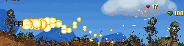

#7160 1 2006-03-01T12:07:23Z JeCa In Debug Mode, you can change a zap drone to a small black dot by changing a certain number in the Level data. These drones are harmles, slow-moving and vanish if you try to open the editor menu.
Because of all this, they're pretty useles since they don't interract with either you or anything else. Therefore, I think it would be a bretty good idea of letting them acces keys and other stuff.
They dont have to kill enemies, the don't have to get killed by enemies either, but i really would appreciate it if something else could open doors.
If nothing else, this would be a good way to set time-limits to some levels and I like the idea of guiding a drone to the acces panel by opening and closing doors at the right time.
And hey; I'm not talking of changing anything in the game, just using opportunities!
To show you what i mean with small black dots: (if you can load them, that is). 11111111111111111111111111111111111111111111111111111111111111111111111111111111111111111111111111111111111111111111111111111111111111111111111111111111111111111111111111111111111111111111111111111111111111111111111111111111111111111111110111111111111111111111101111111111111111111111000111111111111111111111100011111111111111111111010000011111111111110000101110111111111111111100001101111111111111111010111011111111111110000101110111111111111111101010011111111111111111010100000111111111111110100011111111111111111111011111111111111111111110110111111111111111111100000111111111111111111111111111111111111111111111111111111111111111111111111111111111111111111111111111111111111111111111111111111111111111111111111|5^456,324!9^396,216,1,0,19,9,1,0,0!9^468,204,1,0,16,10,1,0,-1!9^492,396,1,0,17,14,1,0,-1!9^600,396,0,0,17,17,1,-1,0!9^312,228,0,0,12,9,0,0,0!0^300,228!0^288,228!0^276,228!7^516,468,3!6^396,204,3,0,5,1!6^468,204,0,0,5,0!6^588,396,5,0,4,0!6^516,468,4,0,6,3!6^468,420,3,0,8,3!6^300,228,2,0,5,0!6^420,348,4,0,6,3
#150368 3 2006-03-01T20:06:07Z JeCa Okay black dots have been used in some levels but what about letting them interract?
You didn't say anything about that.
#152562 2 2006-03-07T10:00:06Z JeCa The all-gold door is a pretty good idea, but it could be solved simply by putting one switch at every corner of the map. And about the screen flip switch, it's allready been suggested, and shot down. It's not a very good idea since the maps are so small compared to how fast the ninja moves. He can simply jump to most areas. And how would he flip? if you place the switch at the bottom of the map, you wouldn't be able to get to it after you've touched it once, and if it's placed in a narrow path, N will fall to the ground and brake his neck

. But the all-gold door is still an okay idea.
Attachment (lost): post-8-1141725606.emf
#152564 5 2006-03-07T10:07:47Z JeCa AV Ultima there's no need to use it, and if they inplant one such drone, it likely eont be used in so many levels, but I still think it would be of use to some... For example, you could build a survival where you have tostay alive for a certain time in a room untill the door opens, then you have to run to the next room and mayby avoid another enemie for a certain amount of time untill that door opens. There would be plenty of ways to use what in some way allready exist.
#152795 13 2006-03-08T07:27:57Z JeCa NNNNNNNNNNNNNNNNNNNNNNNNNOOOOOOOOOOOOOOOOOOOOOOOOOOOOOOOOOO
OOOOOOOOOOOOOOOOOOOOOOOOOOOOOOOOOOO!!!!!!!!!!!!!!!!!!!!!!!!!!!!!!!!!!!!!!!!!!!!!!!!
*Quick inhale*
THE MOST STUPID IDEA EVEEEER!!!!!!!!!!!!!!!!!!
*Quick inhale*
Maybe I should check my chances of getting a heart attack...?
#154018 7 2006-03-12T09:47:57Z JeCa tktktk ia probably right. It would be a fun implement for uppcoming versions of N, but i really dubt M&R would implement it, since it changes the very way you play and the technique you use to avoid drones. And one more thing - Would thte rotation be automatic, or will N brake his neck if you ever forget to spin around?
#154658 7 2006-03-14T18:16:13Z JeCa I don't really know were to put this so I'l wright it right it here 'case someone will see (and
answer).
I know it's possible to cheat death in debug mode, but have any of you ever done it in
user levels?
I played The Life Apuatic made by LouDog 004 and was smashed by the upper right
twump. But instead of getting killed, N just stopped moving and stood still inside of the
twump, which didn't shock me and didn't move when I jumped.
I stood like that for some time until i jumped down for the exit.
(I hadn't touched the switch yet.) But instead of Landing on the one-way doors, I
Simply went thru them without touching the mines beneath.
Sadly, N broke his legs upon landing.
Do anybode have an idea of what happened, if this "bug" is common or if M&R are
gonna do anything about it?
#154664 5 2006-03-14T18:41:29Z JeCa Really good idea, if you ask me.

It could be a good and more challenging alternate to Gold-delay. But as usual, people would most likely overuse it so that it would get boring. I like the idea though
#7434 1 2006-03-14T18:48:34Z JeCa What does all different "M" signs mean in the forum?
I mean like sometimes it's an envelope over one of them, and it's pretty common that a piece of gold is coering one of the Topic signs. Also whats a Poll, the green sign I mean then?
Please someone answer.
#154669 34 2006-03-14T18:51:29Z JeCa Why can't you vote for "D"?
I really like a long fall (of course something must safe the ninja at the bottom but still...)
#154673 7 2006-03-14T19:01:36Z JeCa It's the same effekt as when edditing LPs. You'l fly so qouic N goes thru the wall.
But I still dubt it could be usefull...
#154675 7 2006-03-14T19:23:53Z JeCa Totally agree tl0
And if xdude_rox, sees this, I think he should try to think again. There is no clear definition of what a sniper really is, but if you'd ask me, I'd say that a persson who rates 2.5 to a map that has gotten 4.5 by ONE NUMA user won't be considered as a sniper.
Maybe they're just just. Maybe your map isn't worth more than 2.5 or 3. Maybe the first user who voted gave you that because you rated one of his maps good, and want to repay it. Or he could just be one of all those who send top-ratings to every playable map that exists. Stop complaining until a map like The Impropability drive gets rated zero. THEN, you could talk about snipers.
#154678 5 2006-03-14T19:30:49Z JeCa Yes
#154916 6 2006-03-15T08:48:27Z JeCa Ok sorry, It should've been placed in N help. But wedgie, I wondered what the word poll Means (I'm from Sweden) and they don't explain gold pieces and envelopes at the bottom of the screen.
#154917 2 2006-03-15T08:52:50Z JeCa Just who admitted he sniped your maps, and by what reasons? If he really rated ten of your maps a zero I think this will be the second proof to me that snipers really exists the way everybody describes them
#154920 10 2006-03-15T09:09:51Z JeCa Yet again, I've lost the subject. I'd really like to get a Moderators opinion on wether it's a chance M&R would implement a drone that can hit switches. Since it would move exactly like an ordinary drone, I dont think it would be too hard to implement, and I really would like it. The idea hasn't really got shot down so I think it's still worth disscussing.
#154921 10 2006-03-15T09:20:10Z JeCa Aju It's very simple, all you have to do is press "CONFIGURE" on N main menu.
after that, you press the button just below the text "boss mode" and choose a new one
#154986 16 2006-03-15T17:00:02Z JeCa So what's the point?
What kind of suggestion are we discussing?
Since I don't feel I've gotten my desired amount of feedback, I'l put this right here:
Would anybody get happy if they implemented a new drone that could acces keys?
I'm thinking of using the small black dots that can be accesed by aditing the level data.
(Check my topic One Suggestion - to use what alredy exists for details).
#154990 11 2006-03-15T17:10:39Z JeCa Why, Why do we disscuss things like the forum use, non-existing wannabe snipers and what key you use as your boss key???
'Thing is, that Maniac's completely right, and thats the most commonly used phrase for shooting down suggestions;
"It would ruin the simplicity of the game".
So I say NO NO NO to this suggestion, but still have a question to Maniac:
Do you read All the topics, and how do you like my idea written in the topic
"One suggestion"(to use what allready exists)?
I think the game still would have the simplicity tyhat I love with N if such a drone was implementet.
#154991 7 2006-03-15T17:18:57Z JeCa I do like the idea, and if someone could code it, it would be great to play,
#155231 12 2006-03-16T15:21:40Z JeCa TTK, none of my maps have ever been sniped and will probably ever be that either (I only got 4 of which 3 sucks) but I've heard a couple of conversations about this stuff, and I must admit both 9 4 0 0 and Nemetacyst do have a good point. Do hope arachnid will listen to uss. (or at least theshav)
#155235 14 2006-03-16T15:38:05Z JeCa With so many Moderator posts, I can't help myself to ask a little about metanet's structure. N is, if I've got it right, originally coded by Mare and Raigan while NUMA and the forum were designed by Arachnid. Sometimes it sounds like each Moderator controlls one part of the forum but I don't know if they to are original Metanet staff or just forum Moderators... Could someone please explain to me how all this works?
#153322 (forumer) 68 2006-03-16T16:00:00Z JeCa Just keep it up Kirby, I'l be waiting
#155291 16 2006-03-16T20:18:15Z JeCa Ok thanks trogdor007 but who are involved with the making of the game N itself?
I mean who hold's the code?
'Cause I've heard rumors that somebody's thinking of publish the program code to let others make games based on the "N" engine (even if I seriusly doubt that it's true).
#7489 1 2006-03-18T10:21:10Z JeCa I wonder wether there is some way to attach an image from your Computer into a message or on your signature? Hell I don't even know what URL stands for or how to use it! Why can't you just choose the signature image like your avatar?
I really want this fixed.
#155568 14 2006-03-18T10:26:57Z JeCa I plain like the idea, and it's not like cheating. Since you can open another window and pause the game while watching a highscore completion it shouldn't have a penalty incorporated. But it doesn't feels like a necessary implement.
#155573 3 2006-03-18T11:31:23Z JeCa Ok thanks.
But still...
#155583 17 2006-03-18T13:00:50Z JeCa I don't always rate the maps I play, 'cause I'm not so good and don't ratre maps I don't complete. But my ratings sare usually fair (at least I think so) and I don't base them on who who made the map etc. (even if I rate a map down if it's under DDA's without being a DDA)
#155595 16 2006-03-18T14:05:30Z JeCa You're probably right mascote_ponto. Having something means wanting more of it.
It should be good, but carry occasionally problems. Therefore, I'd rather like R&M to develop more games than fixing this.

#155821 18 2006-03-19T09:03:33Z JeCa It's not just wanting more.
But if it is worth making a "pause" to check a highscore, why isn't it worth to "pause" to change a flavour or the volume, or the key configuration?
Why not make a "pause" where you can go to sleep and return 12 hours later? - and that has a name: saving.
Sorry if you missunderstood me, but I meant exactly what you said. If you have paus mode for one thing, you will without any doubt think of how good it would be to have a paus mode for another purpose. That's wanting more of a thing you got little of.
#155897 3 2006-03-19T18:15:50Z JeCa Sure it would be good. You said all needed so I'l only confirm that I really like the idea.
#155904 21 2006-03-19T18:46:29Z JeCa The Impropability Drive is the best DDA I know (DOD: Final showdown nad Megnatechnology at 2 and 3) and I think Lucidium deserves some credit for his somewhat innovative "Gauge Invariance" But Formica really deserves my vote after breaking his promise to never again do a DDA (the description of "NP3 Player).
#155922 2 2006-03-19T20:25:35Z JeCa Ok, so whats the point?

But I totaly agree with you
#155929 10 2006-03-19T21:05:46Z JeCa I got N just recently, so I don't know if I get it right; Was all current enemies implemented in the original N? 'Cause if thats the case, I agree with maniac. But a wallguard does sound like a good idea to me...
#156121 4 2006-03-20T16:45:30Z JeCa A pointless topic perfekt for a puestion to give it at least a small meaning.
Is there any set-up or approximate date for the next version of N? I can't find any at the website.
#156122 4 2006-03-20T16:51:04Z JeCa I couldn't see an avatar, and I didn't get the hyperlink either. BTW, this is a forum for Webcomiks. If you wan't to ask silly questions, there is a perfekt topic under general comunity by Well called N Rocks
#156451 11 2006-03-21T15:25:49Z JeCa ... It's not like I have the rights to complain since I haven't got anything to do with the programing of the game, but why so long? If metanet currently is developing another game I can accept it. But still...
#156452 4 2006-03-21T15:32:33Z JeCa Arachnid is no tyrant. If you want to get rid of an account, just ask him. If you don't, you'll get into a ton of trouble. He'll, liek, ete u!
I guess his right.
And btw Bigblargh, what happened to your signature?
#156453 9 2006-03-21T15:36:04Z JeCa Not a necessary implement, but it would give you a good idea of thet players empty-frame and N arts capabilitys compared to regular action and pussle levels.
But for the hfuture - please put these in suggestions.
#156647 13 2006-03-22T06:56:23Z JeCa I know keron, I've been thinking of changing it, but I always forgot it when I'm logg in.
And you are probably right. I'm just inpatient
Sorry...
#156651 14 2006-03-22T07:23:30Z JeCa well it could work, but if it's only simple tricks that you can do without concentrate on them then what's the point? N is a skilled game, and tricks that are done without slowing the ninja hasn't got any purpose. But like you said, it could be cool.
#156709 23 2006-03-22T15:05:54Z JeCa I got one question left about this sniper thing. When you ban a sniper, can't he just get a new account? Then he could rate the sniped maps 0 one more time until his discovered, and so on. I know you have to wright your email adress to activate an acount, but reffering to the info-text in NUMA, they will erase your address as soon as the email is sent. So I don't see how you will solve this problem with a simple ban...
I'm afraid even this isn't enought:
Quote
You just earned yourself a Blizzy-ban. Which is 114% worse than a regular ban. Mostly because Blizzy bans you in 11 different ways, and then contacts your ISP. Happy birthday.
#156710 21 2006-03-22T15:08:45Z JeCa since I'm not a very good player, I prefer DDA. If they're god, that is.
#156724 6 2006-03-22T16:12:28Z JeCa Have you walljumped up a real tight chimney surface so fast he explodes when he hits the ceiling?
Oh Twistkill I see you also managed doing that!
But it's another thing in debug mode.
If you die without exploding you can press ctrl and make N hang after theh cursor (I think most people already knew that) and if you slowly drag him thru a 5:q or 5:s block he sometimes get stuck and like gets splitted up. Not that he explodes, but the legs and the arms are about 1.5 milimeter away from each other.
I think that looks fun
#156725 12 2006-03-22T16:20:14Z JeCa I've seen the same phenomenom when playing DDA:s ranked 0.
It's kind of entertaining to see absolutely pointless maps but anyway - there are about 10 maps ranked 0 and every time I check, they switch places randomly. dunno why, but how to sort equal maps?
To reffere to something else - I was playing Warcraft III over battle.net and discovered that all players with the same score switched places about 5 times every sec...
Maybe the same problem
#156726 5 2006-03-22T16:21:59Z JeCa Kablizzy recently told me that it'l probably be at the end of the year (september-december).
#157025 5 2006-03-23T15:02:25Z JeCa 1. How do you manage to get the same level twice? even if I paste a level into my userlevels.txt I cant make it show up at all.
For #2:
Online play isn't happening.
#157026 5 2006-03-23T15:05:43Z JeCa Ok I don't know if I got it right, but as I've understood it, There won't be a multiplayer mode. I may be wrong, and it would sure be fun to have, but since N normaly takes almost all of my Comp time, I don't think so many would be able to play it.
#157028 5 2006-03-23T15:12:59Z JeCa Thanks to krush and maestro, I no longer find this interesting, and I would like this topic closed since it only takes unnecessary place at the forum (I know that I will bring this to top by writing this). My questoin now is that if someone remove this topic (I dont think locking it would do any good) will my Total Comulitive post counter loose theese posts?
#7587 1 2006-03-23T15:22:10Z JeCa Mascote_Ponto once said
Quote
I think that if a pool was made, the majority of people would want no more enemies. (excluding the n00bs, of course)
So I thought it was time someone made a poll and checked.
Quite simple.
If you say yes please add a comment in wich you describe what kind of enemy it should be.
Btw It's first time I launch a poll and I'm not sure if I will do everything right...
#157030 9 2006-03-23T15:27:17Z JeCa alskill I use controll for suicide and that may be why it doesn't work for you.
Try the K button instead.
But it worked for Trogdor007:
Quote
This reminds me of hitting K when playing a usermap, and then using cntrl! I love that effect... If I could do that while the ninja was alive... AWESOME!
Only difference is that it only works in debug mode for me.
#157032 7 2006-03-23T15:38:31Z JeCa If it's a multiaccount, he will ned at lest 6 accounts that rate a map 5 and then an independent rating it down to 4.5.
It could just be friends giving him credit,
And if you'd ban people for overrating, half the community (at least) would be gone in an hour.
#157033 17 2006-03-23T15:54:15Z JeCa I like the idea, but I dont think there should be a possibility to choose color for each tile - to much work for to less gain - but then there should be an mode that you could put in the level data and the level would take a certain color instantly depending on the builder's coice (If you had that color, that is)
#157084 3 2006-03-23T18:30:09Z JeCa I know, but I figured that it would be put in here because it would show how well they like the suggestion of putting in new enemies in N.
#157092 5 2006-03-23T18:56:26Z JeCa I sometimes wants to be able to place tiles with 1/2 or 1/4 snap, But I can live with it the way it is now. I also think that this would cause problems with enemies if the blocks were just partly covering a cell (See tutorial... 2, I think) so I think it should be best to let it be the way it is.
#157142 6 2006-03-23T20:45:09Z JeCa Ok you're probably right but I can't move it.
#157437 8 2006-03-24T16:14:32Z JeCa Yea it's a good idea. Btw i've seen the same things with twumps. If you place a #5 block in any direction it can't move, cause it "believes" that it's in a wall. with twumps thought, it is a fun way to make like one-way mines that only kills you from a certain direction.
#157438 8 2006-03-24T16:21:43Z JeCa yea, it would look cool and so on... but like mentioned, it would effekt all current highscores so it must depend on which map you're playing. One way would be to make a new type of LP that makes N flip automticaly, which would look cool, but be totaly pointless. So I say No
#157440 3 2006-03-24T16:23:20Z JeCa ermmm, okay ermm i ... i ... AAAAAHHHHHH!!!
...?
#157451 10 2006-03-24T16:40:28Z JeCa Thanksw mascote_ponto. By some reason I had lost the link to the highscores but I can use the hotkey now.
and about jman2005: sig:
Quote
- Absurdly large signatures shall be edited (or removed in unusual circumstances). (This usually just pertains to humongous images).
I accidently made a sign with 1600*1200 pixels once, but I edited it within 5 minutes.
Hope a moderator finds this.
#157470 5 2006-03-24T18:08:21Z JeCa What's newbies problems with reading pinned topics? (I know I've put at least 2 pointless topics in this forum but they weren't shot down before and I still like
This idea).
The problem with the backflip thingy is that I within the last week have seen 3.5 trick-suggestions getting shot down. Since all topic authors were newbies or members it's quite clear that they haven't read the pinned topic with shot down suggestions.
#157534 6 2006-03-24T21:08:03Z JeCa Which button you should press depends on which language your keyboard is based on.
I'm from sweden, and I have to press the "" key to get to debug menu. Once you're there, you press "e" or "t" to get to ned. (I would recommend using T). You can also try "~" if you're not from Norway, and have to use the AE key.
#157539 4 2006-03-24T21:19:39Z JeCa My humble way of seeing it:
1.Comments and description, Not maps themself
2.Yes
3.Yes
--------
I've got a question to anyone who read this that I would like answered.
Quote
QUOTE (ZZ9 @ March 24, 2006 10:00 pm) 1.Moderators with the power to edit maps and comments: This would take strain off Arachnid's back and make sure NUMA is cleaner than it has been.
Beside the text that confirms that this is a quote, sweep placed the name of the quoted user and time of quoted message. How?
#156032 (forumer) 1 2006-03-24T22:17:00Z JeCa I'll open up a new topic in witch I'll be posting all my future comics.
Since this is about the first thing I've ever done in Photoshop, the first comics may look a little bit messy. Also the first two doesn't have anything to do with the comic itself, they're just random.
Sorry RR
I just couldn't resist.

#156041 (forumer) 3 2006-03-24T22:32:00Z JeCa But thats the point with it, I just copied RR:s comic and made an ending that was more to my liking. I dont see what they should say.
#157721 22 2006-03-25T10:14:53Z JeCa well I haven't been at the forum for so long but I've seen many of these good-bye-metanet topics and it's relly sad that this is happening to the forum.
#157725 5 2006-03-25T10:21:14Z JeCa Obby I can't tell from the look of your post if it's a real sniper or if you're just... [someone who knows what I'm talking about please quote this and post a fitting word].
Smartalco there actualy is another way to find decent maps. Put them to your favourite list and they will be upp at suggestions.
#157735 25 2006-03-25T11:17:12Z JeCa He never came back? How sad...
If fact I'm pretty sure I've seen some somewhat fresh posts by Eldrial. Or am I mistaken?
#157773 29 2006-03-25T15:14:38Z JeCa What'ya mean TS? If he hasn't shown up since december, I would highly doubt that he will come back. And if he will, then I don't think he would rage if he saw that this topic was locked.
#157780 31 2006-03-25T15:31:54Z JeCa Ok sorry. Btw, when does a topic get a Hot-topic mark? Is it automatic or does Moderators mark the red?
#157781 6 2006-03-25T15:35:59Z JeCa I haven't came that far yet but I'm pretty sure I've jumped that way before.
It's something similar in episode 90-92 I think
#157796 7 2006-03-25T16:56:15Z JeCa Master ape if something similar would be implemented then I'm 99.93% sure that it wouldn't affekt normal tiles in any way. That would make it impossible to play older levels. Put most likely, it won't be implemented.
#158080 12 2006-03-26T09:31:23Z JeCa Probably not. What if a floorguard is standing on the tile to be destroyed?
If it's to be implemented, yhen it will probably be objects and not tiles that can be destroyed. And as far as I've seen, no object can stop neither twumps nor floorguards.
Therefore they wouldn't be able to stand on'em
#158095 2 2006-03-26T10:28:41Z JeCa zt3 I don't relly get what you mean. The only text that is showed on the map details are the one that you wrote when submitting the map. Comments can't be seen unless you check the map itself, not the map listing screen.
I like your suggestion (even if my oppinnion doesn't matter that much) but this one should've been posted in the suggestions forum, not disscussion. *edit* Never mind 'bout that. This is NUMA discussions, so it's ok to post it here.
#158176 13 2006-03-26T17:43:08Z JeCa Yea, it sounds like a pretty fair idea. But do you think it should be placed in NUMA or metanet's forum? I think the forum since it already is used for wrighting in an official forum in another way than NUMA. But everybody's not members in the forum and some people would probably have a hard time finding it. Well. Guess that's up to Keron and Arachnid (If it's decided the gonna implement such a forum).
#158184 4 2006-03-26T18:10:08Z JeCa What do you mean with enemy ninja? Would he be like a different-looking drone that kills N or will you have to race with him? If it's gonna be like a racemode, it's not gonna be implemented. The problems have alreadyt been discussed in a topic regarding wether you could see a "ghost" of an old replay while playing a level (can't find the topic). If it's gonna be like an ordinary drone, then it will be a hell to program it as first problem. Secondly, I guess it would be homing, but if it homes at you the entire level it will be like impossible to do anything more in that map. And if it homes at sight, Then wy not place a seeker drone?
#158849 10 2006-03-28T15:28:20Z JeCa its stupid, I mean, for a backflip to be needes you would need a whole trick system with point bonuses and other unnecessary skills
It's not necessary to implement such a new system and that one's shot down too. But without a purpose, I don't think anyone would implement it.
#158852 7 2006-03-28T15:31:52Z JeCa Quote
Perhaps M&R?
Surely the have completed a all of the original levels (I guess) but I higly doubt that they've played that many custom levels.
#158876 28 2006-03-28T16:16:22Z JeCa Press Alt, Ctrl, and the down arrow key. This turns the screen upside down.
This won't work for me. Do you know how to do it for that O' Great Ngaged?
Same for me...
#158878 9 2006-03-28T16:19:30Z JeCa I haven't got any problem with NUMA, but I relly like a search feuture on the forums.
#158886 12 2006-03-28T16:25:56Z JeCa hmm The second was the best.
#158907 7 2006-03-28T17:24:49Z JeCa what if we weight the votes of people like someone like ATOB's vote would count more than mine or a nooby
I'd say no, since good maps don't nessecary makes fair votes.
About the original two I don't have so much to say. Doesn't relly matter for me.
#158910 7 2006-03-28T17:56:41Z JeCa Just one question. I can't see gtr_pro wrote any comments. Are they erased when you ban someone?
#158953 7 2006-03-28T19:19:30Z JeCa 1. Totally Pointless
2.Seems like a fair idea
3.
3. Of course not. I said this in the "swinging vines" topic once. I will ruin the simplicity by making it easy to go over minefields. Because where's the risk of hitting them? I'd choose to jump over them instead.
If the ropes are pre-set then you can't take it out to jump over mine-field.
Could be usefull for timing levels but I say no.
4.NO
5.It's Exactly he same as laser drone. Totally Pointless
Only one I liked was #2
#158955 9 2006-03-28T19:21:38Z JeCa Straight and to the point Sweep. Now is this the right time to lock this?
#159234 9 2006-03-29T06:00:23Z JeCa I would imagine the mines having different paths, like zap drones.
Then what's the point? If mines move the same as zap drones, and you will die if you touch them, why would anyone bother to implement a different skin to an already existing enemie?
#159240 3 2006-03-29T06:07:51Z JeCa I'l write a quoted text on how you should'va written the text:
Quote
1) Still use keyboard to select options
2) Use mouse to click
3) Use scroll up & scroll down to select
4) Use keyboard, but be able to change the key settings
Like it is now, You only have one answer.
But what do I think?
I can't remember seing this being suggested before but I'm pretty new, so I'm not sure. But for me, the keys works fine. It's quick browsing between menus and objects (althought I have to use different keys than they write due to my swedish keyboard) and after awhile you will learn every menu button.
I would probably have voted CHANGE 2 weeks ago but the keys are good for me.
#159244 15 2006-03-29T06:13:26Z JeCa But seriusly, I can't enter the chat.
#159246 11 2006-03-29T06:16:24Z JeCa I've heard people disscus this so many times and I just don't get it! What the freak is TNG?
#159315 471 2006-03-29T13:06:37Z JeCa I've already sent a PM, but:
I'd like to be a green ninja, Lying on the floor Below The_ninja_game with my feet (or head) in the fire.
#159316 3 2006-03-29T13:08:54Z JeCa This has already been noticed.
See
This topic and please don't keep posting on a new one.
#159333 473 2006-03-29T14:25:21Z JeCa The one getting shot by the Chaingun, is he a member or just an innocent bystander?
#159759 4 2006-03-30T15:04:00Z JeCa This has been suggested before, and it has been shot down just as many times. And like Dark Ball Y-E said, it would make the main challenge of the game, the drones, able to be destroyed, and that would take away the challenge which has made N so popular.
Agree. No offence but this is a typical N00b suggestion since everyone who's been around the forum for a while has read at least one topic with this being shot doen.
One thing that you could do, even if it's not likely implemented, would be to create a drone or another enemie capable of destroying other drones.
But I don't really like that one either...
#159762 24 2006-03-30T15:20:06Z JeCa I first played 00-0 but I first completed 10-0.
Because when I first came to 00-4 I only had about 7 seconds left and I didn't understand that you started with the same amount of time that you ended the last one with so I gave up with it. So cavern was first completed.
#159764 25 2006-03-30T15:28:11Z JeCa I'd like this one: Everybody sais it's Almost Impossible but I don't think so:
Football Strings
InuyashaDuelist
Action
http://numa.notdot.net/map/32280#159772 13 2006-03-30T15:39:27Z JeCa Uber_Haxor sorry. I didn't completely understand what you were talking about at first, but now I do, and it's on thing that keeps hitting me; you say that maps move page after page, and then move up at top rated again. But it can't be only one person who does this, and if it is then he's pretty stupid. If he rates all toprated maps down and then gives the new top-rated a zero, then it will be exactly like before, and he cant give the maps another 0 after voting them "up". Therefore I guess it will have to be plenty of people (or a multi-accounter) that are doing this. Or am I getting anything more wrong?
#159816 7 2006-03-30T17:35:54Z JeCa actually it hasnt so much been shot down as been declared incredibly unlikely cause of the coding it would require and the lag it would cause...
As well as I've understood it no one will make a multiplayer mode for the current N but you might have a gander at
This (smartalco I know you've posted in there so I was talking to Muffenz). I don't really understand where that thread is leading, or was leading, since it feels kinda dead by now.
And ZZ9; I'm as puzzled as you are.
#159834 4 2006-03-30T18:34:49Z JeCa Seems a fair idea to me. I dont play userlevels that much though, only play them in debugmode and then go back and rate'em. But for people who saves lots of maps, I'm sure it would be good. (Each map I make I save in a different document, making them easier to find)
#160135 15 2006-03-31T13:11:51Z JeCa also I didnt know that it was or wasent going to be used, I thought there was like a 3/10 chance, so I tried.
Then what about the topic name? It sais
Quote
Online - Multiplayer, Not gona happen but....
Just wondering. (And this is NOT to increase post count. I just like asking silly questions)
#160137 15 2006-03-31T13:15:35Z JeCa Raigan's the dude. Mare is the dudess... or maybe the female.
Learning something new every day...
Lock?
#160138 4 2006-03-31T13:18:56Z JeCa Muffenz this is the second time you write an allready shot down suggestion.
Read
This Topic before you post next time!
#160141 483 2006-03-31T13:24:17Z JeCa When is the city N playable without using any forums?
What do you mean? Can you actually "play" in N city??
#160148 8 2006-03-31T13:36:17Z JeCa KinGAleX where is that forum?
I've been thinking, and you say N can go back in time after his death, but that wouldn't make any sense. If like blane died, and came back to his birth with his memories still intact, then he would probably change something in time. That would make other ninjas to act different about other things, and that would make some kind of parallel world. If it changed the world he originally lived in though, then it would change after each ninjas death, and that world wouldn't last long. Then you could say that a ninja doesn't move back in time, but that everything that he had interracted with will turn back to their original positions. But then every ninja that Blane ever had talked to would be resetted and then all ninjas they had talked to would go back to their birth. So I think we have some kind of paradox here. Please lock this someone.
#160155 10 2006-03-31T13:51:49Z JeCa Resetted is not a word.
Hmmm... The computer does resett the ninja when he gets killed...
How do you say when he was reset... Ok sorry.
#160163 9 2006-03-31T14:13:09Z JeCa Well, I voted Yes, but I really don't know... I think BS NUMA and suggestions is enought. Of course ratings can help you find a good map but I'm starting too get tired of nonexistent wannabe-snipers so maybe it's a point to remove it.
#160168 23 2006-03-31T14:19:29Z JeCa @Evil bob, First BOB is the one with white head (when he's hurt) and then the black head calls Whits_head Fres. I'm just thinking...
#160470 7 2006-04-01T09:11:33Z JeCa To be completely honest, I too would like a "save" possibility, but it's nothing to argue about, since it's no chance it will be implemented
#160471 13 2006-04-01T09:16:10Z JeCa When making my first map "cages" (I know it sucks) I came up with a couple of NaN:s in the demo data wich made qauss turrets shoot att the same point every time (graphicly) but even if the beam was somewhere else I got killed If I didn't move.
Strange that it happens on pre-set levels.
#160475 28 2006-04-01T09:28:45Z JeCa My first ten maps was just sniped by Madmonkey91!!!!
He left comments saying all my maps sucked when they were just rated a 4 or 4.5!!!
Are you sure he didn't just think they were overrated and wanted to adjust'em a little?
I don't know since I haven't seen them, and I don't blame you for something, but in most cases, the sniper is just fair against an overraterd map.
Ok if all ten was given a 0, then I get your point
#160482 4 2006-04-01T09:49:02Z JeCa It's not unusual for me that the turret actually tries to shoot N, but the tile is in the way.
#160484 6 2006-04-01T09:56:08Z JeCa wHAT DO YOU MEAN GO BACK TO NORMAL?
[Damn caps lock] After N gets killed, I go too debug, and press enter. Then N doesn't interract with something anymore! He just goes thru drones, gold and mines.
#160485 7 2006-04-01T09:58:52Z JeCa I went back to keep playing the level for some time, but when I first entered debug mode again and got back to playtest, N was killed by the mine he was standing on.
Strange...
#160488 6 2006-04-01T10:15:46Z JeCa Guiseppi I jump with shift and have "kill" on ctrl but I can still drag him to the cursor with ctrl
#160581 11 2006-04-01T18:40:48Z JeCa Ooh, you eally scared me a bit there!
But seriusly, I would understand it if you left because of that reason.
#160583 19 2006-04-01T18:46:41Z JeCa Wow.. that bottom paragraph did suck, lol. Let me try again:
The drop down menu contains "comment" which correlates to an internal rating which registers with numa, just like our current rating system. The number is registered, and after "comments" (with 5 internal numbers), there is an average number which will correspond to the external "average comment". With each "fill in the box demo comment", the user can decide to publicly display the comment, or decide to disclose it only to the map maker. Did that make sense?
Actually, it only made it more confusing, although I think I understand what you mean.
And you do have a point.
#160612 3 2006-04-01T20:08:20Z JeCa This has already been suggested, and unfortunately for you, it has been shot down. It's honestly dumb and wouldn't go with the game very well.
agreed
#160858 5 2006-04-02T08:56:21Z JeCa Whaat? Are you gonna leave or is it just another joke?
You'r a Moderator for kablizzys sake! You're holding the entire Ncomics forum. Please!!!!
Tell me that this is nothing more than a joke!
#160875 7 2006-04-02T09:27:21Z JeCa As a side note, other moderators have left too. Tsukatu, Maximo, Kablizzy a few times. Just being a moderator doesn't mean you're here forever.
Ok I can take that but what do you mean with "left a few times"?
Do you mean that they first left and then came back?
(Well actually I think trogdor said that Tsukatu left with maximo once)
#161011 18 2006-04-02T17:01:26Z JeCa Well, what has been changed from the original N?
#161012 4 2006-04-02T17:02:43Z JeCa I think that way N would look horrible...
I think of COLORS for the background would be a good idea (Those would work just like the flavours, applied to the background), but not a bitmap... 
It would also probably be hard to implement... 
Agree. Totally
#161013 10 2006-04-02T17:06:03Z JeCa and you know what, N could have a lightsaber so he could make the bullets go away, that would be uber sweet (and no, im not serious)
What bullets? Oh, guasses and rockets, you mean?
I think he bullets comes from chaingun drones. But if he had a lightsaber it would reflekt lasers and destroy laserdrones. That'd be sweeet.
(Seriusly, it would look great but ruin the game totaly).
#161016 5 2006-04-02T17:09:26Z JeCa Agree with the rest, although ice would be quite tricky to move on. Thats the only one I can take.
#161018 23 2006-04-02T17:16:20Z JeCa WOW this is really mad! I never seen replies coming in at this rate ever before.
#161036 6 2006-04-02T18:08:21Z JeCa Ironocaly, something similar (eveb though not the same) has allready been said. Here's the result:
Believe you me, we contemplated removing that (the suggestion forum) at the same time as when we removed Complaints, but we figured it was best left in because, every now and then, a good, simple idea comes along. Unfortunately, that doesn't happen as often as we'd like. So that's when we turn to you, the community, to do the dirty work of shouting the poor guy down.
I get your point, but when ten well respected members keep saying that it's a bad idea, I think you should listem to them. (No offense)
#161040 24 2006-04-02T18:18:33Z JeCa If you really intend to leave, which I'm starting to believe, I really hope that you will stroll by every now and then to maybe submit another map, give us your point in some hard matter or even make a new episode to "the real N". I still got one question for anyone who's been around for a little while, (I always have) When a Mod leaves, who takes care of his forums? In this case, (if it's real) will tktktk or Nevermore be official Moderators for the N webcomics forum or will another well respekted member take his place? It's just theoretical, I'm just wondering.
#161041 26 2006-04-02T18:20:32Z JeCa lol minitrue is back. 
who's minitrue?
#161072 6 2006-04-02T19:07:37Z JeCa Well it wouldn't be a pre-set background for every map. It would be personal and wouldn't be affected by the map you play. Come to think of it, a map with blue brushes would make zapdrones partially invisible, and invisible things are not good for N (Maniac said it first, I agreed).
#161343 3 2006-04-03T14:16:43Z JeCa Yes it could be placed elsewere but only while whatching a replay.
If placed at a different location in beginning of level I bet some N00bs wouldn't be able to find it.
#161775 503 2006-04-04T14:08:39Z JeCa When Emo_tetris uppdated he missed the section between the two legs of my ninja. Its much darker than the rest
#161776 49 2006-04-04T14:09:39Z JeCa which map? His farewell map?
Check first post
#161779 8 2006-04-04T14:41:24Z JeCa JmD's second post convinced me.
Ban I think
#161782 7 2006-04-04T14:52:45Z JeCa I HATE appoplexy!
Sibiliant S was more annoying I think but I beat that at last.
Know how you feel.
#161784 10 2006-04-04T14:54:07Z JeCa BAN! BAN! BAN! 
Straight and to the point!

#161785 3 2006-04-04T14:55:49Z JeCa Sure, but who would have acces to the comments?
#161864 51 2006-04-04T19:32:16Z JeCa it might kick start armaggedon (as if bush didnt help enough in that area...)!!!
Are you a personal friend of Micael Moore?
Just wondering.
[offtopic] just saw "bowling for Columbine" why I reffer to this person [/offtopic]
#161866 9 2006-04-04T19:37:23Z JeCa I don't think it should be implemented but like Mascote_ponto said, it's a way better suggestion than most newbie-posts. Even though I would most likely just find it annoying if it was implemented.
#161875 8 2006-04-04T20:03:10Z JeCa Sure, but who would have acces to the comments?
What do you mean? Everyone, surely?
Doesnt he mean to change stuff in the comments or something like that?
I wondered if only you would be able to see comments about you, (like a PM) or if everyone should see them (like map comments)
#161876 13 2006-04-04T20:04:16Z JeCa A poll!  We should see what other people think of this.
We should see what other people think of this.
good idea.
#161880 15 2006-04-04T20:08:57Z JeCa While at it, the "banned people" forum, does that include NUMA users or only this forum?
#161882 9 2006-04-04T20:16:45Z JeCa I've got a friend who played N from another site, but I don't know which site that was.
I also didn't exactly understand how to report them but I guess I just post the url and lett you take care of it.
#161884 10 2006-04-04T20:21:23Z JeCa Found the site:
Hamsterpaj.net
It's called The N game.
btw, what happened with the editor since that version?
I like the powerbars on the LP:s and those thing.
Don't really know what to do so I let you take care of it
#161885 3 2006-04-04T20:25:17Z JeCa You should be able to find it
Here
But ok. 25:th of april
#161887 6 2006-04-04T20:33:04Z JeCa I can't view it.
Where can you get shockwave flash for free?
#161891 14 2006-04-04T20:38:12Z JeCa Wont comment the last post, but proving ghosts does/doesn't exists is like proving there are aliens. We can't prove anything before we find one, and we can never prove they don't exist because we may just not've found them. But I never heard/seen/felt any ghosts or spirits.
#161892 48 2006-04-04T20:40:17Z JeCa I tried to explain this to a friend but he didn't get it. It's not that complicated, is it?
Although I voted don't switch before I read...
#7869 1 2006-04-04T20:48:00Z JeCa What do you believe in? Does a god controll everything humans do, are we "meant" to do something due to fait, or do you oppose all this kinds of thinking?
I believe that humans have to react in a certain way because of earlier experiences and how their brains where formed. So in some way, we are not responsible for our own actions, good and bad guys are formed by coinsidense. (don't have time to explain it better momently)
#162021 4 2006-04-05T06:22:34Z JeCa I now will try to explain a little better what I meant in the first post. It's not like you can do whatever you want and then blame on fate for forming you the way it did. For humans it's not momently possible too see the future but I believe that if you somehow knew the placement of every single atom and every humans experiences you would be - just theoretical - able to foresee whats gonna happen, because humans acts in a certain way because of earlier experiences. If one human made a decission that was wrong, I don't think he would choose the other option if you reversed time and asked him again. So there's not really coinsidence that propells whats happening. It's coinsidence that forms humans to act in a very predictable way. Also I believe it's wrong to say, "I wish I was that person", 'cause your body will always be your body, and the brain will always be the same. So you can't say that You is another person, since you always is you.
#162122 21 2006-04-05T13:39:21Z JeCa Yes wedgie, you and Red reamer are both right. I bet nobody has got better experience than arachnid when it's about which people should get banned. I've seen worse, but this guy surely doesn't deserve to stay at this NUMA
#162124 3 2006-04-05T13:40:45Z JeCa Also remember to insert a valid E-mail address or you wont get your activation link.
#162511 25 2006-04-06T14:03:03Z JeCa Be quiet thomas, none of can stop me. Im not one but many. Where one shall fall, another will arise.
Guess that's multi-accounting then...
#7929 1 2006-04-07T14:14:55Z JeCa I got this idea when playing TrackMania. I think it would be good if you could have alternate buttons so that you for example could choose either shift or space to jump.
It's pretty simple and would only work with two different buttons for each action. You should also have the ability to only have one button for each action (again, like TrackMania).
#162856 4 2006-04-07T17:18:32Z JeCa but i would like this idea so during school it wouldnt look like i was playing a game when i was playing
You can change the button elaxion.
What I wanted was to have two different buttons for the same action at the same time.
#162906 22 2006-04-07T20:51:20Z JeCa It already has been proved, sort of.
What do you mean?
Has anyone came up with proof of ghosts?
#163052 6 2006-04-08T08:55:30Z JeCa Ok, got it
#163054 16 2006-04-08T09:05:54Z JeCa Noobish entities 
"You are in a large cavernous room. To your North lurk several noobish entities. You are carrying a pickaxe. What now?"
Depends on wether al the n00bs carries a battleaxe.
#163058 6 2006-04-08T09:47:53Z JeCa May you call a person who rates good maps 0 with a comment for Infanterist?
#163059 30 2006-04-08T09:58:53Z JeCa Bonzai that's a good story no matter if it's true or not.
But tell me, you say that this has happened repeatly the last 4 weeks. How do you react when the being appears the 15:th time? It can't be so scary any longer, is it?
Quote: gangsta scorp
Whats ghost trackers?
One of those ghost-TV-shows i figure
[OFFTOPIC]@Gangsta scorp, make your sig not smaller, but shorter. You have to scroll right to see your text as it is now. [OFFTOPIC]
#7941 1 2006-04-08T10:05:33Z JeCa I don't know whether this should be put here but anyway, I would appreciate it if someone could post here when the forum rules uppdates. Then you can't blame anyone of not knowing when a new rule is created.
#163085 341 2006-04-08T11:52:53Z JeCa Let's see then...
Quote
En cykel krver sin frare. Den vlter om ingen sitter p och balanserar, men nd kan den bde framfras och styras. Detta var en av brderna Wrights viktigaste insikter och en bidragande orsak till att de lyckades bli frst med att flyga ett motordrivet flygplan fr precis 100 r sedan. Det skedde i Kitty Hawk, North Carolina, USA.
Triumfens gonblick r fngat av John Daniels i en klassisk bild. Den visar Flyer 1 nr den just lyft frn sin startrls. Orville Wright r ombord och Wilbur Wright springer bakom. Planet flg knappt 40 meter.
Att erfarenheterna frn cykeltillverkningen hade avgrande inverkan r en tanke som lyfts fram av Peter Jakab vid National Air and Space Museum i boken Taking Off: A Century of Manned Flight.
Ett drag som utmrker mnga framgngsrika innovatrer r teknikverfring. Man utnyttjar kunskaper inom ett omrde och applicerar dem p ett nytt. Enligt Peter Jakab finns det mnga exempel p teknikverfring i brderna Wrights arbete. Till exempel var det naturligt fr cykeltillverkarna att kraftverfringen mellan motorns vxellda och propellern skulle ske med kugghjul och kedja.
Att jmfra styrningen av en cykel med ett flygplan r en mer subtil men kanske viktigare parallell. Andra samtida flygdesigner anstrngde sig fr att komma upp i luften - att styra var ett senare problem. De frskte oftast bygga stabila flygplan, det vill sga farkoster som likt luftballonger klarar sig utan pilot.
Brderna Wright jmfrde med en cykel och insg att problemen hngde samman. De tillmtte drmed piloten en viktigare uppgift, han eller hon skulle inte bara styra planet p rtt kurs, piloten skulle ocks kontrollera att planet hll sig rtt i luften.
17 december 1903
Den 17 december 1903 genomfrde brderna Wright fyra flygningar. Frst lttade Orville frn startrlsen och flg 37 meter, drefter flg Wilbur drygt 50 meter. S var det ter Orvilles tur, som nu flg 60 meter och sist den dagen flg Wilbur 260 meter och hll sig d i luften i 59 sekunder.
Att de flg just den hr dagen var ingen slump. Till viss del berodde det p att det blste kraftigt, 10-12 meter per sekund, men framfr allt berodde det lyckade frsket p frarbetet.
Medan deras medtvlare gjorde nrmast slumpmssiga frsk gick brderna Wright betydligt mer kontrollerat och systematiskt till vga. Deras lyckade frsk i december 1903 utgr en milstolpe, framfr allt drfr att det kom att f en sdan inverkan p den fortsatta utvecklingen. Den teknik och de rutiner som brderna Wright utvecklade och anvnde nr det byggde sina flygplan kom att bli standarden. I princip gller de n i dag.
Brderna Wright sg flygplanet som ett tekniskt system. Det var inte en enskild uppfinning, utan flera olika, som alla mste utvecklas oberoende av varandra och sedan sttas samman till en fungerande helhet. Flygplanet mste ha vingar med tillrcklig lyftkraft men lgt luftmotstnd, det mste kunna styras i tre dimensioner, vara ltt men hllfast, ha en effektiv propeller och en stark men ltt motor. Inget av detta var tidigare gjort, och om man misslyckades med ett enda av alla dessa delproblem skulle flygplanet inte flyga.
Wilbur och Orville Wright tnkte sig propellern som en roterande vinge, men vnd p sidan s att lyftkraften verkar vertikalt. P detta vis kunde de anvnda data som de samlat fr sin vingkonstruktion och konstruera tv extremt effektiva propellrar. De liknade inga tidigare propellrar och bildade skola fr framtida propellerdesign.
Propellern r, enligt Peter Jakab, det bsta exemplet p brderna Wrights frmga att omstta tankemodeller till verkliga konstruktioner.
Vindtunneln behvdes
P senare r har datorer kommit att radikalt frndra arbetsmetoderna vid flygplansdesign. Det gr numera att berkna luftstrmmarna kring vingprofiler och andra flygplansdetaljer. Sjlva grundproblemet r dock detsamma som fr hundra r sedan: man vill knna flygplanets egenskaper innan man bygger det i full skala. Brderna Wright var bland de frsta att frst vikten av att genom vindtunnelfrsk systematiskt ta reda p dessa egenskaper.
Wilbur och Orville Wright uppfann visserligen inte vindtunneln. Den frsta byggdes antagligen redan 1871 av deras landsmn Francis Wenham och John Browning. Ytterligare ett drygt tiotal fregick den som brderna Wright byggde r 1901. Det var en enkel, 2 meter lng trlda med en flkt i ena nden. Det som gjorde experimenten unika var instrumenten de anvnde och det faktum att de anvnde dem fr att direkt f de data de behvde fr att konstruera sitt flygplan.
Nr brderna Wright pbrjade sitt flygprojekt i slutet av 1800-talet fanns egentligen redan ekvationer fr att berkna lyftkraft och vindmotstnd hos en given vinge. Aerodynamiska data fanns ocks insamlade fr olika lufttryck p vingytor vid olika attackvinkel, dvs vinkeln mot fartvinden. Till en brjan litade brderna Wright p data de ftt frn den tyske glidflygaren Otto Lilienthal. Med dem kunde de relativt enkelt rkna ut prestanda fr de tv glidflygplan som de byggde 1900 respektive 1901.
Nr de testade dem var dock vingarnas lyftkraft lngtifrn vad brderna hade hoppats p och vad deras berkningar hade frutsptt. De misstnkte att de data som de ftt frn Otto Lilienthal var felaktiga. Alla andra uppgifter kunde de enkelt mta sjlva, som flygplanets hastighet och vingarnas yta. Det logiska steget blev drfr att sjlva samla in de uppgifter som kunde erstta dem de misstnkte var felaktiga.
Efter att ha prvat med flera andra mtapparater fastnade brderna Wright fr vindtunneln. De instrument som de placerade inne i ldan anvndes fr att mta luftmotstnd och lyftkraft och utformades s att de kunde testa flera olika vingprofiler. Med dessa instrument erhll de en mngd mtdata, som vid senare kontroller med moderna metoder har visat sig hyfsat korrekta.
Den bsta glidaren
Merparten av frsken med vindtunneln utfrdes i slutet av 1901, och ett nytt glidflygplan baserat p de korrigerade uppgifterna byggdes 1902. Denna nya glidflygare var en klar frbttring gentemot de tidigare tv, och den motsvarade ocks brdernas frvntningar nr det gllde lyftkraft och luftmotstnd.
Peter Jakab gr s lngt att han beskriver vindtunneln och glidflygplanet som tv delar av en och samma innovation. Han menar att man inte kan frst flygplanet utan att ocks frst de sm mtinstrumenten i brdernas verkstad.
Forskningen i vindtunneln och resultaten frn provflygningarna ledde ocks till andra frbttringar av den tredje glidflygaren. Bland annat infrdes ett vertikalroder som tillsammans med vriga styrmjligheter gjorde att man nu fullt ut hade mjlighet att styra planet i alla tre dimensioner.
Redan i tidigare modeller hade brderna gjort frsk med en metod fr att styra flygplanet i sidled som de kallade vingskevning. Genom att vrida vingspetsarna i motsatta riktningar erhlls mer lyftkraft frn den ena vingen n den andra vilket i sin tur fick flygplanet att luta. Genom att kontrollera denna vridning kunde brderna Wright balansera planet eller luta det fr att inleda en svng.
Frsiktiga testflygare
Med sin tredje glidflygare hade brderna lst tre problem: aerodynamiken, styrningen och konstruktionen. Kvar var motorn och propellern.
Ngot som visar hur lngt gngen glidflygaren var r att nr brderna Wright skte patent 1906 gllde det inte det motordrivna flygplanet utan glidflygaren frn 1902.
Lika viktigt som modellfrsken i verkstaden var dock provflygningarna i full skala. Fred Culick, professor vid California Institute of Technology, kallar brderna Wright fr vrldens frsta flygingenjrer men ocks vrldens frsta testpiloter. Fred Culick har deltagit i bygget av en flygande kopia av Flyer 1, och dessutom utvrderat dess egenskaper i en vindtunnel.
I en utvrdering av deras arbetsinsats mtt med dagens kunskap noterar han att de visserligen saknade vissa grundlggande insikter om aerodynamik, men att de lyckades kompensera detta bland annat genom sina provflygningar. "Deras observationer och tolkningar av ett flygplans beteende i luften r enastende."
ven flygtestningen gick stegvis och frsiktigt till vga. Kanske bidrog Otto Lilienthals ddskrach 1896 till brderna Wrights noggrannhet (se rutan nedan). Likt moderna testflygningar utfrdes de systematiskt i serier, dr de hela tiden observerade och analyserade flygplanets beteende.
Brderna brukade frst flyga sina plan som drakar, obemannade, och drefter med en person ombord, men fortfarande kontrollerade frn marken som drakar. Och till sist flugna av en pilot. ven pilotflygningarna gick stegvis. Frst var pilotens kontrollmjligheter begrnsade, fr att sedan utkas. Allt fr att datainsamlingen skulle ske systematiskt.
Ytterligare ett skl till den stegvisa processen var att brderna Wright sjlva var tvungna att lra sig flyga. En konst som med deras instabila konstruktion innebar betydligt mer n att bara styra.
Frsta passagerarplanet
r 1905 hade brderna Wright byggt sitt tredje motordrivna flygplan: Flyer 3. Med det klarade de nu att starta, flyga kontrollerat i mer n en halvtimme och landa mjukt. Trots att utvecklingen inte skett i hemlighet valde de att vila p sina fynd, ska patent och frska slja sin id. Det drjde drfr tre r innan de terupptog provflygningarna.
r 1908 hade brderna Wright ftt patent och en frsta bestllning. De var nu tvungna att visa att de kunde ta med en passagerare. Ocks det ett rekord, nr de den 14 maj 1908 fr frsta gngen flg med en passagerare ombord. Ett r senare brjade de undervisa studenter i konsten att flyga.
Tillsammans med det omfattande forskningsarbetet, fotografierna, och dokumentationen, var dessa offentliga framtrdanden det som behvdes fr att befsta brderna Wrights position som de verkliga flygpionjrerna. Det finns de som hvdar att brderna Wright inte var frst. Men om det skulle vara sant r det nd mindre viktigt. Wilbur och Orville Wright var garanterat de frsta flygingenjrerna.
Hmmm. I don't mind translating all that into english...
#163086 3 2006-04-08T11:56:27Z JeCa Ok that sounds correct.
Lock?
#163095 17 2006-04-08T12:09:54Z JeCa Quote: trogdor007
The pinned threads are for extremely active topics.
Well only reason I can find for keeping this up is that it shows the Nfansites that exists.
We don't know how many who uses this thread to reach those sites.
#163097 5 2006-04-08T12:12:05Z JeCa on the old system, one more post from you and you could lock it yourself. but on the new system..
**shouts for a mod**
Do you mean that you had the ability to lock your own topics earlier?
Damn why did I have to find N so late.
#163102 3 2006-04-08T12:35:14Z JeCa wHAT DO YOU MEAN "WHY SO STRONG?
Only thing I didn't get is why you put 75 more bounce block under the S
The rest is quite understandable.
eXCEPT this:
Quote
604:17895697|17895697|17895697|17895697|17895697|69905|0|35791392|8738|0|79691776|4|0|17895696|17825792|17895697|17895697|1|0|0|17825792|0|0|8738|16777216|1|17895424|1|0|89985024|17493|35790848|35791394|35791394|8738|17895696|17895697|219222289|107373637|107374182|107374182|107374182|107374182|35791398|35791394|35791394|35791394|35791394|35791394|35791394|35791394|35791394|35791394|35791394|35791394|35791394|35791394|35791394|35791394|35791394|35791394|35791394|35791394|35791394|35791394|35791394|35791394|35791394|35791394|35791394|35791394|35791394|35791394|35791394|35791394|35791394|35791394|35791394|35791394|35791394|35791394|0|0|0|0|0|0
Figure I put this into bug-reports.
#7945 1 2006-04-08T12:42:12Z JeCa I haven't seen this before, hope I didn't overlook it.
Sorry for not putting this into attached file, but:
Quote
00000000000000000000006000000000000000000000000000000000000000000000000000000000000000000000000000000000000000000000000000000000000000000000000000000000000000000000000000000000000000000000000000000000000000000000000000000000000000000000000000000000000000000000000000000000000000000000000000000000000000000000000000000000000000000000000000000000000000000000000000000000000000000000000000000000000000000000000000000000000000000000000000000000000000000000000000000000000000000000000000000000000000000000000000000000000000000000000000000000000000000000000000000000000000000000000000000000000000000000000000000000000000000000000000000000000000000000000000000000000000000000000000000000000000000000000000000000000000007|5^396,564!2^228,576,0,-1!2^564,576,0,-1!2^228,528,0,-1!1^228,516!1^228,516!1^228,516!1^228,516!1^228,516!2^564,528,0,-1!1^564,516!1^564,516!1^564,516!1^564,516!1^564,516!7^228,12,1!1^564,516!1^564,516!1^564,516!1^564,516!1^564,516!1^564,516!1^564,516!1^564,516!1^564,516!1^564,516!1^564,516!1^564,516!1^564,516!1^564,516!1^564,516!1^564,516!1^564,516!0^216,480!0^216,486!0^222,498!0^228,498!0^234,498!0^240,486!0^240,480!0^228,486!0^228,480!0^216,492!0^240,492!0^228,492!7^228,84,3!7^228,60,0!7^228,60,2!7^228,36,0!7^228,36,2!9^228,24,1,0,9,0,0,0,0!9^228,24,1,0,9,1,0,0,-1!0^552,468!0^558,468!0^570,468!0^564,468!0^552,474!0^558,480!0^564,486!0^570,492!0^564,492!0^558,492!0^552,492!0^570,486!0^552,480!0^564,480!0^570,480!0^558,474!0^240,498!0^216,498!0^552,498!0^564,498!0^558,498!0^570,498!0^570,462!0^564,462!0^558,462!0^552,462!1^564,516!1^564,516!1^564,516!1^564,516!1^564,516!1^564,516!1^564,516!1^564,516!1^564,516!1^564,516!1^564,516!1^564,516!1^564,516!1^564,516!1^564,516!1^564,516!1^564,516!1^564,516!1^564,516!1^564,516!1^564,516!1^564,516!1^564,516!1^564,516!1^564,516!1^564,516!1^564,516!1^564,516!1^564,516!1^564,516!1^564,516!1^564,516!1^564,516!1^564,516!1^564,516!1^564,516!1^564,516!1^564,516!1^564,516!1^564,516!1^564,516!1^564,516!1^564,516!1^564,516!1^564,516!1^564,516!1^564,516!1^564,516!1^564,516!1^564,516!1^564,516!1^564,516!1^564,516!1^564,516!1^564,516!1^564,516!1^564,516!1^564,516!7^564,84,3!7^540,84,3!7^588,84,3!7^588,12,1!7^564,12,1!7^540,12,1!7^612,564,2!7^612,540,2!7^612,516,2!7^612,492,2!7^612,468,2!7^612,444,2!7^516,444,0!7^516,468,0!7^516,492,0!7^516,516,0!7^516,540,0!7^516,564,0!7^276,564,2!7^276,540,2!7^276,516,2!7^276,492,2!7^276,468,2!7^180,468,0!7^180,444,0!7^276,444,2!7^180,492,0!7^180,516,0!7^180,540,0!7^180,564,0
Then use this replay: (Not sure it will work)
Quote
604:17895697|17895697|17895697|17895697|17895697|69905|0|35791392|8738|0|79691776|4|0|17895696|17825792|17895697|17895697|1|0|0|17825792|0|0|8738|16777216|1|17895424|1|0|89985024|17493|35790848|35791394|35791394|8738|17895696|17895697|219222289|107373637|107374182|107374182|107374182|107374182|35791398|35791394|35791394|35791394|35791394|35791394|35791394|35791394|35791394|35791394|35791394|35791394|35791394|35791394|35791394|35791394|35791394|35791394|35791394|35791394|35791394|35791394|35791394|35791394|35791394|35791394|35791394|35791394|35791394|35791394|35791394|35791394|35791394|35791394|35791394|35791394|35791394|35791394|0|0|0|0|0|0
I understand why this happens, but it's kind of annoying. I've seen it at another level
too, but then I didn't understand what happened.
#163106 3 2006-04-08T12:47:52Z JeCa I've made a post about this, but how to find this using the searc engine?
For me, I got smashed by a twump when playing the life aquatic, (In userlevels initially) but the strangest thing is that you do die if you fall. It's also easy to "create" in debug mode if you press enter directly after hitting a mine.
#163121 3 2006-04-08T14:21:18Z JeCa Yea, thats what I thought. Sorry for not explaining what I meant in the last post. Anyway, you can only stand like that when pressing the left button. If you release it, N will fall.
Edit: Forgot to ask. Is there a chance M&R will check this up and maybe do something about it for N 1.5?
#163149 2 2006-04-08T18:30:10Z JeCa What do you mean?
Press z, x or c to change placement snap.
You can even turn it off.
#163266 9 2006-04-09T08:10:47Z JeCa For me, this would be the most worthless feature ever. I can do very well with only one jump button
Figured most would think so.
Thats why I wrote Minor in the menu.
Even if I like it, It would most likely not be worth M&R:s time if they decided to implement it.
#163267 18 2006-04-09T08:21:18Z JeCa Noobish entities
"You are in a large cavernous room. To your North lurk several noobish entities. You are carrying a pickaxe. What now?"
Depends on wether al the n00bs carries a battleaxe.
Yep. They're vicious.
"I cast "reasoning" on the n00bish entity to my left!"
"You can't do that. N00bs are impervious to that attack type."
Do they were bulletproof wests?
Ok thats not a very good suggestion, 'cause if someone killed a n00b, then his n00bish friends would gatter in tenfold and crash the entire NUMA server.
#163269 10 2006-04-09T08:29:39Z JeCa If they show their identity, they're not snipers. Snipers hide and attack maps from far away without giving away their identity.
What about holdeddie? He nearly posted in every map that he sniped
Since the result is the same, it doesn't really matter what you call them.
But if talking guns, it would be something with shorter range, like a flamethrower or smg.
#163271 15 2006-04-09T08:45:29Z JeCa I just completed 69-2!
Ironicaly, the finish run only took me about 8 minutes, but then I kinda got stuck at 69-4 slippery trip hazard (or something like that) and that took me about 35 minutes to finish (I didn't understand how to avoid the gauss in the narrow mine-filled path at bottom.
#163275 34 2006-04-09T09:09:04Z JeCa I don't believe in ghosts but I find it fascinating to discuss. I think that it's bad enough if the ghost keeps you awake and keeps you from gaining enough energy to fix school next day. But if I really saw a ghost, I believe I'd be frightened, simply because I didn't know if it was capable of doing anything to me. And what you don't know about, does make you scared.
#163579 8 2006-04-10T09:55:15Z JeCa Well I don't think it would be worth it eevn if I would appreciate to have it done. And I'm sorry for my last post, I haven't seen you before so I took for granted that you were one of thoose n00bs that we all love to hate. (Or at least I do). But In most cases, it is possible to use 5 blocks (at least for me) even if twumps may get stuck in'em
#163581 12 2006-04-10T10:00:02Z JeCa how bout just make it so that when caps lock is off it plays normally and when its on it goes frame by frame (opposite of what it is currently), i think that was the unremembered outcome of a previous thread like this
I totally agree. I've been thinking of posting this but never done it. I also would like a light in the upper left corner that said [Caps lock off, Frame-by-frame mode now active] or something like that to stop newbies from posting questions about how to walk in debug (I had to read the FAQ to understand it).
#163820 5 2006-04-11T07:24:51Z JeCa MP I think they would have more use of reading trogdor 007;s Pinned "Allready shot down suggestions" thread. This is totally useless.
#8155 1 2006-04-18T14:31:04Z JeCa Well, I don't know if this've been up before and please don't tell me to use search next time 'cause it's not ease to know which word you should search for. My idea was that everyone sent one post where they wrote the name of their NUMA user (I've heard of some people who had different names than on this forum and wanted to know if there are more). Only one post, with no disscussion but I would like a post from those who have the same name on NUMA and this forum as well as those who doesn't have a NUMA account. If people like this, maby it should be pinned to give quick access to all NUMA users.
For me, I'm called JeCa at NUMA too.
#166175 7 2006-04-18T14:46:30Z JeCa Because the door is actually a teleportation device which glows pink. After all, there's no entrance door in the next level.
Actually, You don't even enter the door. But look at chamsyr's comic, There a big hole also looks pink.
#166610 13 2006-04-19T13:37:57Z JeCa I know custom tiles won't be implemented and I wouldn't need'em either, but the tile ZZ9 came up with would be great to have and also some new to complement the 5 series. Like if they filled one cell with 3 small quadrats there would only be 2 "interresting"... [forgot the word. See Tutorial 2 I think].
I don't see how that would be impossible to implement even if I don't know very much about computers and programming.
#166615 4 2006-04-19T14:08:32Z JeCa 1. Must be some kind of power-up that N have to pick up before he can use it. Otherwise all old levels would be somewhat pointless. But I don't think it should be implemented.
2. Too hard to program, I figure. It has to move as an ordinary drone and wouldn't work in exactly the way you described it. Faire idea, and New, but feels kinda pointless. So I say NO
3. Not for N, but a fair idea for some other game, I think.
#166620 5 2006-04-19T14:13:52Z JeCa I've actually thought of posting this a couple of times when I First use practice mode for checking new levels, then forget to turn it off and completes graduated kill-inder (and the rest of that collumn) without pressing enter once or running out of time. I think you should have the skip-level ability active always but that it's counted as cheating as quick as you press it.
#166624 6 2006-04-19T14:18:33Z JeCa New != better
Your ideas == new
You didn't say what you thought about them. It don't mind so much about that, but since jpark7 is pretty new, I think he would've liked to hear a Mod's voice about the suggestions themselves.
#166627 9 2006-04-19T14:25:26Z JeCa I personally think that the players would be too afraid of the ghost to concentrate on their ninja.
Thats actually a good point, and it would probably cause lagg. Already suggested, but not really shot down.
#166629 6 2006-04-19T14:28:21Z JeCa I agree with atilla and ZZ9, and I think diagonal, objects would cause a fight with one sida saying that N will slide down if standing on a bounce block, while some say he won't because it's an object and not a tile.
#167110 6 2006-04-20T14:31:55Z JeCa Never mind me... Free-post.
Quote
- Excessive spamming after unheeding multiple warns will result into a Post Count drop to 1.
I wouldn't call this Excessive spamming and you haven't recieved multiple warns for anything I know but if I understood you right this was just to increase post count and I don't think that would be appreciated at any place. Of course this topic is already dead (I guess) but still don't make it to a habbit.
#167119 16 2006-04-20T14:55:51Z JeCa This has been suggested a lot of times before and has been proved to be impossible. Since this thread is now pointless, can someone lock it?
As I see it this this thread isn't pointless since all topics concerning new blocks slowly dies without any strong reactions from anybody.
But LoD, tell me, what is the problem with that block? It has one solid edge and covers an entire cell.
#167120 13 2006-04-20T15:08:17Z JeCa Or how about a restart button? You could restart and and fastforward to the desired point.
If it did restart, then it would have to reset level too. But that only takes 0.5-5 seconds so that's okay. But fast forward, If I've understood it right, then the gameplay speed would also have to increase since only reading keys quicker wouldn't cause N to move faster. Feels like that would cause lagg but be usefull for getting to a certain point in the playback. With slomo, enemies would also have to move slower (Of course) but if thats possible, then I figure ado7:s suggestion about reading keys backwards also would be possible.
About FBF mode, they could allow us to acces both map- and demo data for the original N maps and we could check FBF in Debug. (Or fixing it just like Mascote_ ponto said.
#167124 7 2006-04-20T15:23:47Z JeCa Well here goes: (No numbers)
MTI
Football strings (Not really classic, but worthy attention)
Bugs, Bugs, Bugs, Buuuuuuuuugs... The collectioin
The crazy Miner
Simple Challenge 3
Btw, Slippery trip hazard has recently got attention for keeping people from completing the collumn even after they've completed appoplexy.
And I thought of posting Brain n-bolism. The first N map I tried too hard on.
I would really like a demo of that level...
#167177 12 2006-04-20T18:15:57Z JeCa It would make a good addition to the game, but since this kind of records aren't saved originaly, everybody will have to start from scratch and complete all levels again. (well, maybe that's just good for letting new players in the game.) Also wedgie made a good point and it's maybe not worth the time. But I like it.
#167184 13 2006-04-20T18:22:57Z JeCa This probably wont happen, the things that are going to be put into N are already on the metanet website, they are only changing things i think. and its pointless anyway.
The only such text I found was this:
what the future holds (in N 1.5):
more improvements to Ned
more thorough integration with NUMA
more robust file-based system
tutorials and source code
contests
more unlockable secrets
And that isn't so precise.
If you've seen it anywhere else, then please post a link.
It would be fun to see what's comming up.
#167477 2 2006-04-21T13:36:36Z JeCa About backgrtound music, Most people have a media player or something like that to play their favourite songs, if they want sound that is. To make enough music to support the game without a feeling of repeting, it would need very much extra data, and I wouldn't like that. About the rest, It's been shot down so many times that I've lost count.
#167677 7 2006-04-22T08:38:24Z JeCa One word from me: NO
#8244 1 2006-04-22T08:50:10Z JeCa and also, all your other ideas have been shot down a bagillion times since i joined and iv only been on this forum for a few weeks
Ok I know that I've been posting at least 2 stupid suggestions but they wasn't shot down before and even if n00bish suggestions are a good exuse for increasing post counts it's starts to annoy me. My suggestion is pointed to Keron and it's more about the forum than the game. I think that
This thread should be opened automtically the first time someone enters the suggestion's subforum. Maybe the text above should be changed too keep'em from ignoring it but I think it's good like it is now. Opinions?
#167678 78 2006-04-22T09:16:21Z JeCa I once switched to space, but some bug came in and it wasn't saved. I thought it was imposible to switch so I kept it at switch. But I still use Ctrl to kill myself...
#167682 18 2006-04-22T09:52:33Z JeCa I fully supports this idea.
#167696 4 2006-04-22T10:59:52Z JeCa Really good idea, but are you sure it's possible to prevent the game from closing when pressing the x in the top right corner? When pressing q after entering boss mode, I don't think it would too hard, and really usefull.
#167701 80 2006-04-22T11:14:13Z JeCa Mine is set to Z, it feels more comfortable than the others and i can press space quicker. When i use shift it feels too big, Z is just the right size for crap players like me 
What do you mean with pressing space quicker? I've set pause to space so if it's the same with you I understand it but...
#167716 22 2006-04-22T12:18:33Z JeCa This has been suggested a lot of times before and has been proved to be impossible. Since this thread is now pointless, can someone lock it?
As I see it this this thread isn't pointless since all topics concerning new blocks slowly dies without any strong reactions from anybody.
The thing is that Mare and Raigan have already said that it would be impossible.
That's why I requested a lock.
Ok sorry. Didn't know that. Guess I haven't been around here long enough...
#167746 82 2006-04-22T15:18:42Z JeCa Jeca, "switch" isnt a key, so if you kept it at switch...
Guess I messed up some words... But shift and switch does almost mean the same.
(Why do I not edit my post and make you look like a fool for reading wrong?)
#167749 9 2006-04-22T15:34:34Z JeCa you can change and modify your weapon, but if your good you can beat the level with any gun you use
What weapon? N doesn't use any weapons. Well, theinvader did mention other metanet games too but I would really apreciate a small explanation. I'm sure you had a good reason for writing it that way.
#167780 75 2006-04-22T16:55:10Z JeCa But what does trolling mean anyway?
I found this:
EDIT In fact, standing on that I might as well throw in the description of trollish behavior...
But I haven't found any description. Sorry if I don't know something that you might take for granted...
#167877 4 2006-04-22T21:43:21Z JeCa i read through it the first time i came to the suggestions thing
So did I, but apparently, most people doesn't.
@sweep, you're probably, right, as usual. I don't know how these forums work and I thought that it would be worth a try if it wouldn't be to hard to make, but if it's like you say, then I figure we just have to be patient with the newbies.
#167878 13 2006-04-22T21:45:20Z JeCa But, please, make it an opt-out option! I can't live without my keyboard shortcuts!
I think that if this is made, than you can press Enter to confirm finishing game.
#167881 8 2006-04-22T21:49:27Z JeCa Actually it's a good idea that would fit N perfectly. Except that every single previus demo would have to be throwed since it affects the ninjas movements.
Not a bad idea in itself, But a little late
#168198 9 2006-04-23T17:04:13Z JeCa Well, I've been thinking about this, and I now wish that I never made this topic. You can see if a suggestion has potential pretty easy and if it doesn't, then it's pretty easy just to ignore it. I also think getting suggestions shot down could be a good way for newbies to learn what's appreciated, and how to use the search tool (I didn't know it existed before I came across a shot down suggestion.
#168539 11 2006-04-26T06:06:18Z JeCa @Keron: Yea, that's kind of what I meant with my third post. I realise that this wouldn't help. Lock anyone? (Or just leave it be.
#168541 11 2006-04-26T06:13:23Z JeCa Make the manual open up first thing. Then make it that there are a certain number of buttons with questions on it (Like "How do I access/use Ned?") Then make that they
can't close it until all the buttons are clicked and the answers are read and scrolled through properly (I don't know about this part of it)
I does fully suport Mascote_Ponto's original suggestions, but I thinnk DB Y-E's would just make people angry. It's a little like
This topic. I think Keron made himself quite clear in that.
#8289 1 2006-04-26T06:20:05Z JeCa I think that after you've touched a trap door key, they should change color, just like normal keys. Why? because sometimes it can be very frustrating not knowing what key's you've touched. I guess M&R had their reasons to design the key's the way they did but I don't understand them. I don't know how hard it would be to rewrite an object and since this is very minor, I don't know if it's worth it.
#168576 22 2006-04-26T11:58:47Z JeCa I can say nothing more than the rest. You've always been one of those smart people who I've looked up at. Hope you can get back or at least drop by sometime in the summer when school doesn't take that much time.
#168579 18 2006-04-26T12:11:22Z JeCa The server temporarily dying had nothing to do with this; any "Too many connections" or a "1" showing on the page is a Forumer problem which affects all forums under server 2.
Sorry, It's Keron.
But is there any risk that this problem will occure (How do you spell that word?) again?
This is not meant to sound like I'm complaining at anyone but it's actually pretty annoying if you feel like it's something special you want to write and you can't do it because a server problem.
#168607 9 2006-04-26T14:53:51Z JeCa I have the same keybord model as kryx. But tell me, both mine and my friends keybords have always had that layout. How does the other one look?
#168912 5 2006-04-27T13:49:53Z JeCa Actually, The_daily_Lama made a map called "bugs bugs bugs buuuuuuuuugs... The collection" (or something like that) that is in the original userlevels file when you install N (it was for me atleast). Welcome to the forums btw. Hope you'l stay, there are so many who posts like one suggestion and then leaves. Got nothing more to say except if you'r going to post another suggestion please read
This topic first. (No offence)
#168917 9 2006-04-27T15:25:32Z JeCa Cheesegod: I do think that your sig is a bit big actually. I mean look at the ammount of vertical space it takes up compared to elaxion or greengooguy49. You could just re-arrange how the text is layed out.

Well the suggestion is not bad but somehow unnecessary. What if you take all gold but spend over 90 sec on the level? Imagine a highscore; -3.550
#168931 8 2006-04-27T15:54:49Z JeCa *sigh*. Please tell me that you didnt just repeat exactly what i just said. 
Did you mean me or ZZ9?
#169204 13 2006-04-28T12:50:19Z JeCa The idea is to not get all gold, but to finish the level as fast as you possibly can. The score would be based of your amount of frames you finished in.
I meant that such a highscore probably would be based on how many seconds you have left from start, with the meter not getting affekted by gold.
Myself, I have maybe 2 highscores that takes over 90 seconds, but I live because of the gold I've picked up. So if you play this highscore with a timer that doesn't get affekted by the gold, then I would die. I know this is not a reason to avoid putting this into N, just wanted to make a point.
jeca did you quote me by accident or were you trying to imply something? If so then please exaplin what.
Just noticed that my sig takes an entire window with the size I have on the Firefox window. Which is a little more than cheesegod.
#169206 8 2006-04-28T12:55:00Z JeCa But the it should probably delete all objects in the entire cell, not just under the cursor.
I mean, I really hope I'm not the only persson who's discovered that you can delete multiple objects without moving the cursor even if the objects aren't on top of each other.
#169211 21 2006-04-28T13:07:57Z JeCa One que, what has happened to NUMA since it's bearth? I can't find anything like a version history or something even if I didn't look very well.
#169230 16 2006-04-28T16:23:43Z JeCa Figure you're right. But how do you check how many frames you used in a demo? I don't mean how such a program would work, but I've heard someone saying that he usually doesn't like DDA:s if they're under 2500 frames. How do you count them?
#169232 7 2006-04-28T16:27:41Z JeCa I have a swedish keybord, and the only button that works for me is the "" button. Some guy from Norway also said that the "AE" button worked.
#169234 17 2006-04-28T16:35:04Z JeCa I prefer MetaNet since the only game so far is N (Like Keron said). But the Z???
#169243 66 2006-04-28T17:09:36Z JeCa I've only read thru about 1/3 of the topic, but there are some things I want to say.
First:
Spontaneous generation is completely false. It was disproven by a man in the 16th Century or somewhere near that time. You take 2 jars, and fill each one up with rotting meat. One of the jars must be sealed, and one of the jars must be remain open. Wait a couple of weeks, and you will see that the unsealed jar will have maggots and flies covered all over the meat. If you look at the sealed jar, you will see that maggots and flies have landed around the jar, but are not inside it. Thus, proving that organic materials can not spontaneously generate from something that is not-living.
Why did everyone get angry after this?
And why did Twistkill use that example?
At the time of the experiment, people really believed that flies were created out of rotting meat. The experiment was used to proove that this was false.
Second:
Energy can be converted into mass, and vice versa - that's the famous e = mc^2 formula.
Scientists have found strong indications that the speed of light
Does change over time. Close to the creation of the universe, light traveled much faster than today, but the speed is now increasing, which means that about 6 billions of years ago, it didn't travel as quick as now (No this was Not taken from wikipedia).
Since the energy that an object posesses (E) is equal to M multiplied with C^2, (If it's true, that is) then the amount of energy existing in universe does increase.
And if you can increase the amount of energy in the universe, then the amount of objects are increased at the same time because energy may be converted into mass.
But this does not explain how universe was created.
#169245 68 2006-04-28T17:14:09Z JeCa Simple. It's a time loop.
In the year 2042 a time machine will be invented. Someone will go back in time to the start of the universe. Since there is nothing there the time machine explodes from overheating, and the universe is created.
Hmm. That's quite similar to mine.
As far as we know, it's possible to travel forward in time (Just travel at the speed of light for a year and presto, a year has passed without you noticing it) but traveling backwards goes against some kind of basic phisic rule... (sorry for not being so good at explaining things in english
#169250 70 2006-04-28T17:21:51Z JeCa Two post were done at 06:09 pm and then twiskill posted his at the same time as my second (06:14pm). I don't think he saw mine that was made about 15 seconds before mcp3000's
#169253 18 2006-04-28T17:34:16Z JeCa The amount of frames is at the beginning of the demo data.
Isn't it settled then?
They just have to program the highscores to pick up those numbers. Sadly It would only take approximate 15 seconds for me to hack those numbers (And that's from a person who sucks at programming) but I guess someone would find a solution to this problem.
#169271 150 2006-04-28T19:24:09Z JeCa Your link in the first post doesn't work.
Thisis all I get when klicking on it.
Quote: Urban dead link
Invalid referrer.
#169278 342 2006-04-28T19:45:06Z JeCa I had my birthday while this forum was down
Maybe not the best birthday gift I've had in my life...
#169536 22 2006-04-29T15:38:05Z JeCa Well, Not exactly. I just did a short test with changing demo data, and It doesnt really work too well. It also wouldnt be too hard to pick out the fakes, and we do have a fairly respectable(and trustable) community.
Okay. Sorry. It was just a thought which apparently wasn't justified. And it maybe doesn't sound like it, but I've got nothing against this suggestion. I just don't think it's necessary.
#169540 74 2006-04-29T15:41:35Z JeCa What atoms? Sorry, I can't see what you're reffering to.
I think he means those small things that people used to think you can't split.
#169545 25 2006-04-29T15:54:59Z JeCa Just curius goblin. Why did you choose this topic of all possible to ask such a thing? And how did you manage to find the forums without knowing of metanet's homepage? (I think I once did acces the forums from NUMA, but it's still strange.)
#169547 20 2006-04-29T15:59:15Z JeCa Great game.
Could you implement a restart system? I hate having to wait until the time expires or having to refresh the page.
I took 14th place.
Just pause with space and you'l see the button you're looking for.
#169604 79 2006-04-29T19:26:59Z JeCa The whole process would have taken hundreds of thousands of years, with the first few steps occuring in a fraction of a second (I'm talking 35 orders of magnitude smaller than a second -- very quick).
Isn't that period of time (I don't know what it's called in english) 10^-49 seconds?
And if I remember things correctly, it's the same amount of time that it takes for a light particle to travel 10^-99 meters.
#169800 13 2006-04-30T08:36:04Z JeCa OMG!
does it matter?
No it doesn't. But it's fun to see how others resonate.
#169805 11 2006-04-30T08:55:12Z JeCa You will come back!!
He probably will, because everyone who's tried to leave came back after some time. This place is addicting.
Sadly, Eldrasil didn't.

#169807 3 2006-04-30T08:57:41Z JeCa I can't beat that level.
I always run out of time. (If we're talking about the same map, that is.)
#169822 9 2006-04-30T10:29:02Z JeCa 2. The capital of Thailand is not called Bangkok. It is called Krung Thep. (Well, actually it is called Krungthepmahanakornamornratanakosinmahintarayutthayamahadilokphop
nopparatrajathaniburiromudomrajaniwesmahasatharn
amornphimarnavatarnsathitsakkattiyavisanukamprasit, and is the longest name in the world.)
I thought Llanfair PG had the longest name.
Learning something new every day.
EDIT: About the sky's color, I didn't know you count that as a common misconception.
#169826 31 2006-04-30T10:38:38Z JeCa The main difference in the Earth is life. Which happens because we are the right difference away from the sun, and we have the moon to protect us from asteroids.
The moon is not the only celestial body protekting uss from asteroid. Jupiter also helped cleaning our solar system upp by "throwing" asteroids away. A bit like a raging vacuum cleaner. Please, tell me this doesn't counts as reviving old topics.
#169847 4 2006-04-30T12:39:11Z JeCa I'm not sure if I understand what you're talking about but it sounds a bit like
This topic. Iff so, then I have a site to report.
#169942 33 2006-04-30T16:46:06Z JeCa Fair enough.
Oh, and you should never get told off for 'reviving' old topics, unless it's spamming.
Ok, got it. But actually, it was more ment like a joke. I mean, no one has touched the subjekt the last 15 posts. Tried to bring the topic back to the original thread.
And to mcp3000, shouldn't you go to BnT with that game?
#170390 10 2006-05-01T08:43:55Z JeCa We all know you can delete the cursor-hover object, and the surrounding objects.
Possible, a seperate combination for "delete all objects" and "delete all under cursor", since I thought this up specifically for DDA's, and DDA's require pinpoint placement.
Seems like you got the point. Now, I have absolutily no idea what problems would occur if you tried to implement that. anyone who's good at these things, would it be possible?
#171210 (forumer) 9 2006-05-02T14:03:00Z JeCa Actually I have a couple of more ideas (I had when I made this one too) but I never have enough energy to make more, and I got no idea whatsoever about how to take screenshots. Maybe I make more, maybe not.
#170936 20 2006-05-02T14:34:35Z JeCa Yeah. I'm for Wedgie's suggestion as well.
Did you mean wakedoodle49? I didn't see a suggestion in wedgies post.
EDIT: 300 posts! I became... ...Nothing...
#170942 3 2006-05-02T14:45:01Z JeCa Does the entire screen go blank or is it just the map data?
The map data is never showed to me so if that's the problem then you're alright.
If it's the entire screen then I got noj idea...
Ds the level up if you re-open NUMA and check "my maps"?
#171226 (forumer) 11 2006-05-02T14:51:00Z JeCa Quote: ZZ9, May 02, 2006 03:44 pm
Keep making them! But why was their a mine in the 1st?
Huh? I can't find any difference between the two comics except that mine have 6 cells on the first line. If you meant the original, the one made by Red Reamer, I got no idea.
EDIT: seriusly, I don't know how to take screenshots. I'm using Windows XP. Anyone who may help? (I've got photoshop if something like that is needed.)
EDIT again: I found that out myself pretty quickly...
So don't post anything about it.
#170974 7 2006-05-02T17:26:37Z JeCa None of them works for me
#170975 33 2006-05-02T17:29:35Z JeCa So the Spartan Roman Collosseum may have been famous for naked women fighting midgets (a favorite of the times)
What kinda sick bastards are these Romans??? 
I don't find that so hard to understand. They loved gladiators, And naked women were nothing strange for them either. And humans vahe always loved two-in-onw packages.
#170985 21 2006-05-02T18:23:13Z JeCa I don't know why, but I have the feeling that it will have something to do with this guy... 
There were a post just recently in witch M&R said everything they knew about TNG. I can't find it but it included;
TNG will be in 2D.
It won't be in flash
The graphics won't be same as N, but the same style (how that's possible, I'm not sure about)
We're trying to do something as different from N as possible
It will most likely not be free. Probably not more than $20.
I can't remember anything else. If someone finds the thread, please be kind and post a link.
EDIT: Come to think of it, they said that itwould probably be done in mars, april or may. So I'm not sure how uppdated this is. (the topic was up recently, but it was most likely rewieved befor without me checking the date.
#171000 56 2006-05-02T19:27:04Z JeCa Actually, it's okay just to see the avtars. And it surely makes loading time smaller, so...
#171301 9 2006-05-03T06:11:21Z JeCa You can already acquire the replay data in userlevels (well, as long as you finish the level) from the box on the left. You know, the one labeled "replay data". Just copy it into a text file if you want to save it.
Having the option to save replays from the Metanet levels in a similar fashion would be nice, though.
But it's pretty hard to save a cool feath if you die first. One of the coolest things I've ever made was in 29-3 bombshelter. It was like DoD, the final showdown except that I controled the ninja myself. sadly, I got killed, and there were no way to save the replay. I actually intended to suggest this later this day, but it seems like disconinja beat me to it.
#171302 56 2006-05-03T06:18:00Z JeCa Ironicaly, I stoped playing N when I found this forum. Well, I started again, and is currently at about 73 episodes copmlete.
#171383 2 2006-05-03T12:52:26Z JeCa Here is a complete .SOL file at the bottom of the first post. You may also check the rules while you're on it.
#171385 85 2006-05-03T12:55:14Z JeCa Keron, do you mean that I can get warned for repetingly requesting locks on another member's topic? I don't see how that could be wrong...
#172226 95 2006-05-05T10:07:45Z JeCa Thanks maestro
That made it pretty clear
#172228 12 2006-05-05T10:15:59Z JeCa One question. Can I watch a userlevel demo if I haven't beat the level myself yet? I know I can go to userlevels and extract the level data and past it with the demo in the replay box. But is there an easier way?
#172652 14 2006-05-06T07:45:09Z JeCa A button which pasted the level data for the selected level in the replay box wouldn't be a bad idea.
That's what I wanted to say. Good I'm not the only one who likes this idea
#172653 11 2006-05-06T07:48:25Z JeCa both are reasonably easy to implement i would imagine, but with a launch date projected in summer, it might not happen, im not against giving credit where credit is do, suggestion 2 is the best
TNG is probably realeased in summer. As for N1.5, I'm not even sure they've started making it.
#172654 16 2006-05-06T07:55:04Z JeCa How do you import user levels it says that userlevels.txt is read only
Were is it said that the file is read only?
Quote: userlevels.txt
This file contains data used to fill the [User Levels] menu in N;
editing the contents of this file allows you to alter the contents of the in-game menu.
We recommend that you turn Word Wrap off to edit this file.
It's _very_ important that you format data properly when adding it to this file,
or who knows what will happen. Wait, I know: something bad.
To add a level to the list, simply add it into this file using the following syntax:
$levelname#authorname#comments#leveldata#
(it's _very_ important that you don't forget the final "#" after the level data!!)
I think it's pretty clearr that you may edit the text.
#172655 529 2006-05-06T08:00:41Z JeCa To be fair the N-City just died. Everone got added to the map and then when there were no more people to add everyone sort of forgot about it.
Just what was the point with N-city in the first place? Was it ment like an RPG or something like that or what?
#172852 18 2006-05-06T19:07:23Z JeCa You have to activate it by starting a victory dance in front of it. Then you disappear and reappear in the next level. For some reason, it has the odd side effect of making you hallucinate that there is a box saying "Press [spacebar] to start, [Q] to quit" floating in front of you.
But sometimes the ninja dies, while you still get to the next level. And in "The Real N!", Dave stands in front of the door in a handstand pose while Suzy seems to lean out from behind the door. It's a paradox, I think. With no all-covering explanation.
#172855 13 2006-05-06T19:16:02Z JeCa I don't like the idea with a Learner plate that you're not allowed to change. But I agree with TS. And I also think that if they start with such an avatar, then a text would show upp when they became members that they now have the rights to choose an avatar of their own liking. But I think I've heard KC saying that things in this way would be hard to make. Well, I'm npt the one to descide these kind if stuff, but I think everyone has got the rights to have their own avatar. As well as a personal sig.
#172859 20 2006-05-06T19:20:29Z JeCa But sometimes the ninja dies, while you still get to the next level. And in "The Real N!", Dave stands in front of the door in a handstand pose while Suzy seems to lean out from behind the door. It's a paradox, I think. With no all-covering explanation.
Actually, it's Suzy dancing and Dave leaning in from outside.
I deeply wish to apoligie with all my heart, Oh exaltered Mod.
#173496 (forumer) 12 2006-05-06T22:50:00Z JeCa At long last, my second comic is done. This one was extremely funny when I made it up in my head, but the punchline vanished when I was about halfway done.
I also want's to apoligie about the bad quality, but I'm just too tired to do anything about it right now, and it's the same with the optical bugs. (For example you can see part of my desktop.) And one more thing, I use
N poser to make poses for my ninjas, but I can't get them in the right size (look at the ninjas in pic 1 and 2, it's larger than the rest of the map). Do you know what to do?
Comic #2: Not gonna waste my haste on you. (check orcsfromlotr's post in
This thread to completely understand what Trib
5lmaniac has to do with this) .
Sorry, but You will have to check another reply to see this. Upload problems y'know.
#173169 27 2006-05-07T13:35:20Z JeCa You really got me there Sweep.
That's the problem with not speaking english from birth, you can easily make missunderstandings when you don't really know where to use the right words. I didn't mean like it's a human right to have you'r own avatar, but I think that if you have one, then you should be able to choose it yourself. Of course, this is just my opininon, and seeing that most people like this suggestion, I am willing to agree with that it would be practical to see who's new, even if you can see that they have no blue cells under their name.
#173172 7 2006-05-07T13:41:00Z JeCa What about new flavours that cost 100Ks?
If it'l be anything like this, then you'd have to keep all gold not in each episode, but thru the entire game.
I say no to the entire suggestion, but it's good you mentioned it wouldn't be used to buy weapons and such.
#173757 (forumer) 15 2006-05-07T13:46:00Z JeCa Quote: ZZ9, May 07, 2006 02:00 pm
It doesn't display.
I've noticed that too.
A short time after I posted, I could watch the comic.
Apparently, so did gangsta-skorp too, but now I can't see it. I'm having problems with my internet connection, but that wouldn't affect the pic if I'm done uploading it, would it?
EDIT: I use Filelodge to host my pictures, but I'm unable to reach their site. Maybe they're having server problems and that's why the pic doesn't show up.
I try to send it in an attached file, but I will have to save it in jpeg if it is to be under 500k. Not sure how well it will look.
Not gonna waste my haste on you:
Attachment (lost): post-40-1147011377.jpg
#173305 18 2006-05-07T20:14:21Z JeCa The only killcount based award I can think of is to have completed N without getting killed more than, say, 75000 times or something. But if you get killed that much without completing N, then you can never achiev that goal. So it's just stupid.
#173566 22 2006-05-08T12:50:52Z JeCa b_t, your point is valid. The only reason I chose the deathcount is becasue that's the only counter currently in the game. How about highscores? Get 5 0ths and get a secret mode?
The only problem is that there are only 500 levels in N (excluding the legacy) so if you have to get 5 0th, then only 200 people would be able to get that unlockabale. (And would you lose it if someone beats your time? It's a fair idea, but I think that if something like this is implemented, then you should make it like you set up a good time on each episode, and then make it so that one must beat this time on atleast 20 episodes to get an unlockable.
#173568 5 2006-05-08T12:59:02Z JeCa @mcp3000, why would they have too leave a coment? I wouldn't mind if you made it possible to see who who rated what, but to leave a comment is unnecessary if you see what ratings they gave.
And maybe this would fit better in
NUMA disscussions if arachnid is to find it.
#173581 9 2006-05-08T14:38:35Z JeCa I agree with your point of revenge theshav. Sadly comments can lead to the same result. But that's why we have Bitezise NUMA, isn't it?
#173886 15 2006-05-09T10:47:14Z JeCa heres an idea, if anyone rates something other than 5/5 they get auto banned...
Actually pretty good...
#173887 28 2006-05-09T10:51:33Z JeCa jeca, I didn't notice that. Maybe lower it... get 5 highscores in total, or 1 0th?
Seems more fair to me. Even though I would have a hard time reaching even that level.
But I still like the idea with a pre-set time that you have to beat. A bit like trackmania - or any other race game.
#173890 13 2006-05-09T10:56:05Z JeCa Quote: suggestions sub-forum
Forum Rules Weapons, multiplayer, and suggestions which require use of additional keys will not be implemented, NO EXCEPTIONS. Please do not suggest them. Thanks.
Ok now
that's pretty clear.
#173891 7 2006-05-09T11:05:31Z JeCa I figure most people who have completed 29-3 bombshelter has got quite a few good close calls. My best race on that one almost challenged
Dundeons of dDooms: the final showdown . Sadly I got killed by the chaingun and culdn't record the demo.
#173907 30 2006-05-09T12:13:13Z JeCa 2 500 N falls for 4 Extra seconds for each level. Just came off of me 
Too bad that fall and suicide counter is the same...
#174571 (forumer) 17 2006-05-09T12:20:00Z JeCa Season 1: Crystal case
It's time to Introduce Kenny! (I call him that 'cause I figure he'l die every now and then.) He's some kind of prize-haunter who works for the government. Kenny can do a series of different magick stuff and has a pretty impressive arsenal. However these will probably change from comic to comic and for this one he will only be equiped with one shotgun that has... few rounds left.
Also this one's more for plotbuilding than amusement. Don't know how funny you will think it is.
The legend of Kenny: The first asignmen:
Attachment (lost): post-40-1147177252.jpg
#174612 (forumer) 18 2006-05-09T17:13:00Z JeCa Next comic in the Kenny series. A direct followup from the first.
In this comic Kenny uses his first magic power. It's called force move and basicaly makes the ninja move at the speed of light for a short distance. While in this state of moving, the ninja can destroy almost everything it goes thru (except solid walls) but he will still be effekted by drones shocks or a mine.
TLOK:The drone army:
Attachment (lost): post-40-1147194838.jpg
#174214 39 2006-05-10T05:57:07Z JeCa I don't really have an idea for what it should unlock, but what if you got something each time you all golded a column? That would a a cool way to unlock something, and it's a bit more difficult than dying repeatedly.
That's actually a pretty good idea. But then the game must record it when you take all the gold in one episode. maybe the line surrounding the collumnnumber will be golden in stead of darkgrey.
#174215 36 2006-05-10T06:16:20Z JeCa oooh, so i could have a map rated at 4.154602005? that's teh awesome...
Actually, you one year too late...
Well, I would like it if it had like 20 options to vote on instead of 10, but exact number seems a little too... picky.
I have a suggestion about this that I think really would work but I don't know a crucial word so if this doesn't make sense, then I'l try to explain it better in another post.
What would happen if you used medians instead of average number. Say 3 people woted a map 5, and one gave the map 4.5. then a sniper comes and gives the map a 0. This would usually cause the map to drop, even if not so much, but since 3 people voted 5 then the map would still have 5 officially. Now if one more gives it 4.5, then it would be stuck between 4.5 and 5... Didn't think of that when I initiated the post...
But anyway, what do you think
#174216 5 2006-05-10T06:18:39Z JeCa I had the same problem at first. Don't remmember how I solved it though.
Gotta go, so I can't tell more.
#174985 (forumer) 21 2006-05-10T15:07:00Z JeCa Well, to be honset, the black dot's are nothing else than modded drones that I've manualy edited in Ned. They're completely harmless, and the punchline was that in the first comic, Kenny thinks it's nothing in the way, and finds a passage no normal ninjas would be able to get bye. In t he second, he thinks that the room is impossible, but it's in fact filled by harmless drones. Even though a camoflauged laser would've been much more fun.

.
Ok, now for the next:
Kenny's found a promissing looking chimney, and jumps down in it.
There he finds MP and a crystal gold piece.
Like I've said before, the force move can make the ninja destroy almost anything, but everything in N isn't made in a way that let's you destroy it...
TLOK3: A move made too quickly.
Attachment (lost): post-40-1147273654.jpg
#174279 35 2006-05-10T15:17:28Z JeCa now on topic i've done about 200 and i've given up i've got no chanch in hell of finishing these levels or the game for that matter.
But what about real life?
I haven't even started on the legacy pack yet. I would like to complete the game first (Which means, not before TNG comes out) but it's good to feel that you got something good left. Just to someone a bit more involved, how "good" are they? Only 4.5-5's or?
#8603 1 2006-05-10T15:23:20Z JeCa I would like the kill count to show "total-kills" too.
Since we allready have a killcount, I think it wouldn't be too hard to make it add all the other kills and come upp with a total amount.
Is it worth M&R:s time? Or can you find a reason why to not implement this?
I know that since it doesn't count it now, it could be complicated to fix so that it counts all from begginning, but I figure it could count that when you choose to import progress from N 1.4 and then go on a usual.
#174280 16 2006-05-10T15:28:46Z JeCa I took a LONG time to beat 29-3 also... but I beat it and 29-4 was kinda of a snap and i got BLUE!!!
I have an easy way for Bombshelter but I cant explain it... Does anyone know how to take the map picture and put arrows to direct where to go.
If you got paint, then you can just pause, (set pause to space for easier acces) press print screen, open paint, press ctrl+v and then paint the arrows.
I figure that's all you need to do.that level took me about 30 minutes to beat I think. I came up with 3 different ways of getting up thru the missiles, but I landed on a mine one time, and pressed ctrl accidently the other...
#174289 4 2006-05-10T16:48:21Z JeCa Well I just wen't thru bottom rated DDA's the other day and gave away at least 15 0:s. Since I've only rated about 10 decent maps my avarage qould be quite low now. Anyway, god idea, even if some snipers would rate up maps without even looking at them wich would cause unfair ratings in the other direction.
About upprated maps, I'd like to see B_T's average ratings...
EDIT: I'm not sure, but I think arachnid once asked for suggestions concerning NUMA to be in the NUMAdiscussions thread. If I've understood it right that's more or less the only place at the forums he checks repeat... (Ok now, I figure you all know what I mean, how do you say that word? Repetingly doesn't feel right.)
#174507 163 2006-05-11T06:27:56Z JeCa Read this, and the map that is linked to it I don't know if it's the right thing to do if there's really a hacker, but I figure The_Ninja_Game is one of these:
People who supposedly "departed" but appear from sporadic time to time:
#174550 2 2006-05-11T11:43:48Z JeCa #174554 7 2006-05-11T11:49:36Z JeCa Okay, that looks awesome, and my assumptions are correct.
Lets turn this thread also over to Halo 3 speculation.
-Master Cheif Returns home to find final invasion of Earth.
-Earth houses the ark underneath the ground in the Sahara desert, deep below.
-Cortana has been taken over by Gravemind who will use her to guide the Covenant city, High Charity to Earth to try and capture the Earth/Ark.
-Prophet ot Truth will die a gruesome death, and the Arbiter shall kill him.
-The Covenant Rebellion (elites/grunts/hunters) come to Earth later with the Arbiter, Keyes and Johnson to help Earth defeat the Covenant Loyalists (brutes/drones/jackals)
-Lastly, the Arbiter will sacrifice himself to save the universe in some way
-Earth will be destroyed but humans will survive
-Game will be completly different from the trailer, not much earth fighting, and again too much flood
and i have others but i cant remember them and mostly theory/foreshadowing based
Quote: Churchill
A great politican is a man who's able to tell what's gonna happen the next day, the next week, the next month or even the next year. And after that is able to say why things didn't turn out the way he said.
#174925 8 2006-05-12T06:19:04Z JeCa Myself, I would really like to see this implemented - to some extent.
I got out from the key in 29-3 bombshelter 4 times before I got to the exit. If I could've saved the game when I had gotten up, things would've been much easier.
f course that would'v ebeen too easy, so after a bit argumenting with myself...
NO
#174926 12 2006-05-12T06:24:41Z JeCa Do you know any other forumer from Sweden? If not, I don't think so...
I'm going for a language trip to Oxford this summer. Any chance I will meet someone from around here?
#174950 15 2006-05-12T11:26:15Z JeCa Off-topic:
... guys ...
Eldrial just posted...
TS
What?
Where???
#174951 2 2006-05-12T11:31:18Z JeCa An easy way to translate a swedish word into something really different is to use the expression "I took it for granted".
Directly translated into swedish you say that expression like this
"Jag tog det fr givet."
For granted becomes "fr givet" which sounds almost like for-given.
So if you're not really sure about what things mean, you could make agbig missunderstanding without being aware of it...
#8644 1 2006-05-12T12:28:39Z JeCa ...
Is this what KC meant with Bot posts? (I can't find the topic by some strange reason...
Check all the dots (the're links) but don't answer the post, KC wanted to see what they did if you just do leave them be. (Atleast if I understood it right.
#175759 (forumer) 24 2006-05-12T12:35:00Z JeCa Another Comic!
They're not really that hard to do when you get used to it. But of course, I use very simple pictures and have photoshop.
This isn't much of a suprise, and maybe not that funny, but as mcp3000 suggested, I've made the gold crystal look better.
It goes from right too left, and try not to look at the last pic before reading the others.
TLOK: #4, Chimny gold, part 1
Attachment (lost): post-40-1147437357.jpg
#175771 (forumer) 25 2006-05-12T13:42:00Z JeCa Well, I first thought of waiting to post the next comic until I got a comment or two.
But never mind 'bout that. I made these two very quickly, even if the second took a bit longer due to some problems with photoshop.
Don't hesitate on giving me a comment unless atleast 2 other people have said what you were thinking.
EDIT: He is supposed to say "I know!" instead of "I knokw" in the first frame.
TLOK: #5, Chimny gold, Part 2.
Attachment (lost): post-40-1147441332.jpg
#175023 9 2006-05-12T19:37:03Z JeCa But can a PSP run .EXEs? If it can't you'll have to wait for the .swf.
Isn't all those illegal versions of N (mostly N1.2 I think) .swf files? Then it's just to pick one of them, I'm sure there are plenty...
#8649 1 2006-05-12T19:53:53Z JeCa I use Firefox when browsing this forum (or when doing anything else) and I've gotten used to how the forum looks in it. But at school, we only have IE, and there are a few differences in the looks that hit me;
The fonts increase in size about three times so that I have too scroll to the right to read the entire post even if I have full window. (At home the firefox window only takes up about 3/5 of the screen and I still don't need to scroll)
When you insert a quote you first have to press the quote button once and [QUOTE] comes upp. then you write the rest of the message and the ending tag comes up; [/QUOTE (I do not say that this is bad...)
In firefox on the other hand, you write you message in a popup that comes upp and it will outomatically be inserted between the quote tags.
I didn't need to tick the show signature box after my second post.
There were a few more things that I'm too lazy to write, I'm in a bit of a rush...
My question is wether this forum was designed for Internet Explorer or Mozila Firefox.
Nothing more. Nothing less.
#175881 (forumer) 27 2006-05-12T22:07:00Z JeCa Wow this is the 6:th comic with 5 posts by other users.
Btw, I think I've descided what kind of layout I'm gonna use in the future.
But back to the comic.
This was supposed to be a random comic on the "Anti-n00bish-suggestions" theeme but I couldn't come up with other good ideas on how the crystals will brake so I made it to a Kennycomic.
I wont say now what the point is, figure you'l understand that yourselves.
(Also, I know the seconds frame looks pretty dumb with no soundeffekt and all).
TLOK: #6, What goes around, Comes around.
Attachment (lost): post-40-1147471631.jpg
#175252 7 2006-05-13T13:27:55Z JeCa Ok well the computers I used at the moment I was talking about actually had windows 98 installed on them...
It must've been something with resolution being to low...
And ZZ9, I usually use guided mode, never really thought about what it ment. I'm now writing this in IE, and it's basicly the same as firefox on this computer.
#175657 13 2006-05-14T08:49:59Z JeCa I can understand your frustration, but it is dedication/practice that will win over anything else in the end. If this was implemented, I could "press a key" when I'm right next to the exit switch, and "beat the level" immediately. I could beat all of N in about 15 minutes. Tell me where the fun is in that.
What do you mean? Of course the timer would roll while you watch the replay, so I don't understand where you got that from. But I still don't like it.
One thing I could accept was if you had like One position save in each episod. But it's still not N, and it would make the game much easier for newbies.
#175778 10 2006-05-14T16:05:57Z JeCa Gah
hold \ and click
Voila! there is your undo button!
Hold which button?
[OFFTOPIC] I don't need to tick my signature box annymore.
Anyone who knows why? [/OFFTOPIC]
#176692 (forumer) 29 2006-05-14T16:10:00Z JeCa You know what?
I've got another Comic!
Apparently Kenny managed to get another Crystal without dying but I couldn't come out with a funny way to succeed so in this, he allready has one, and is running for the exit.
Sadly I don't know if you guys think they're good so I'm not sure if you'l like this...
TLOK: #7, The key of controlling you life.
Attachment (lost): post-40-1147623037.jpg
#176699 (forumer) 31 2006-05-14T16:28:00Z JeCa Quote: Zres, May 14, 2006 05:20 pm
Ctrl? You mean shift, unless you jump that way. I have no problem with that, because I jump with space.
Myself I do have Kill set to ctrl while I still jump with shift.
It's only happened once that I've killed myself accidently that way but it's still a risk when you want to jump and the ninja looks like he's gotten a heart attack.
#175788 12 2006-05-14T16:41:45Z JeCa Hold which button?
You hold the forward slash "\", and then click your left mouse button and viola, you have your object undoer thing.
Doesn't work...
to write / I have to press shift+7. I use to acces Ned (I've got a Swedish keybord) but that doesn't work either.
Figure I'l have to live with it.
#175802 6 2006-05-14T17:36:47Z JeCa I still have got 24 more episodes to complete, but I'm making proggress.
Personally, I didn't find 29-3 bombshelter that hard, but 24-4: (I think) Pitcher plant actually made me stop playing N for about a month ago.
Ironically, that was when I started posting more repeatingly at the forum.
Anyway, god job.
#176720 (forumer) 32 2006-05-14T17:41:00Z JeCa Ok, I'm not really sure, but it feels like I'm making theese at a way to high rate.
The next comic however, will probably take awhile since I'm gonna make atleast three more before posting the first. (whee, 10:th comic)
Enjoy:
EDIT: Sorry for the drones text color, I will change it for next comic.
I'm aware of my spelling misses. Please don't comment them.
TLOK: #8, High dept.
Attachment (lost): post-40-1147628494.jpg
#176142 48 2006-05-15T14:55:13Z JeCa Yes, but I said all levels, that also means userlevels too.
Since you can insert levels in userlevels, I don't think that's a really good idea. If you meant all NUMA levels, then you will have to beat at least 50 levels per day.
And it wouldn't be worth implementing something that advanced if no one's going to earn it.
#177104 (forumer) 35 2006-05-15T15:04:00Z JeCa Thanks Luminaflare.
I discovered that the text was hardly readable after I finished it. and was to lazy to change it again.
I will solve that problem for the next comics.
#176149 3 2006-05-15T15:22:33Z JeCa D'you mean doors with one lock switch and one unlock switch?
#176151 7 2006-05-15T15:24:33Z JeCa I would say No, but that doesn't mean it's a completely bad suggestion
#176153 16 2006-05-15T15:36:11Z JeCa I suggested something similar just receantly
Here and I figure it's more or less the same problem.
@Ngaged, Sadly I think that most people who has been able to find this webpage know what alt+F4 does even if they're new to the forums
.
#176156 12 2006-05-15T15:45:37Z JeCa The IE version works, but not Firefox...
But I think it's not neccesary, 'cause on firefox you can set up a bookmark for the different N sites, and forum Jump allready exists at bottom of page. Good idea though.
#176223 22 2006-05-15T18:45:13Z JeCa Actually, I believe the earth is slightly more than 5 billions of years. But I still voted 4.5.
As for Keron's world, I don't think he was born before the world started, but who knows?
#176226 6 2006-05-15T18:50:17Z JeCa huh? It's only when he hit's the ground in a precisely straight line that he rolls into a ball. The angle doesn't need to be that high to make him a little straighter.
But sure, Why not?
(Maybe it has something to do with this kinds of coding being really annoying but I don't know)
#176618 3 2006-05-16T12:55:40Z JeCa Make a system so you can see how far the LP's will telerport you.
That'd be much easier to implement, and wouldn't ruin anything.
#176627 6 2006-05-16T13:39:37Z JeCa I'm pretty sure it's slower.
Not if you don't need to jump from the first to the second platform.
#176632 15 2006-05-16T13:49:09Z JeCa Indeed the 80'th is the hardest.
My progress so far. (Is working on it.)
Attachment (lost): post-7-1147787349.jpg
#176636 5 2006-05-16T14:03:33Z JeCa It would have to be done right, and in N2 though...
Do you mean N 1.5 or is it something I've missed?
Those illegal versions of N that can be found on the internet are if I remember correctly N 1,2. In that version of debug, there is a blue bar that shows how much power a launchpad has got. Something like that, that is activated when LP power reaches over 3 and would show how far the Ninja would fly in the first frame would be really helpfull.
#176639 2 2006-05-16T14:06:49Z JeCa Figure that'l be Trib4lmanic with 497 highscores...
Good idea, I've thought of suggesting it myself actually.
[Offtopic]A tip, get a real account. (Incase you're not a bot, that is.)[/Offtopic]
#176640 10 2006-05-16T14:10:08Z JeCa set Pause to Up Arrow and seppuku to Down Arrow, etc.
What's seppuku?
I use space for pause and ctrl for kill. Easy too acces without moving my hands.
#176644 17 2006-05-16T14:24:41Z JeCa Which one's you stuck on maestro?
Bricklayer (level 3) was the level there that took me the longest time to complete, but it's just a matter of skills and patience. A little like 69-2: appoplexy...
I think that you'l beat that.
#176646 19 2006-05-16T14:35:56Z JeCa Okay now That's crazy
#176650 335 2006-05-16T14:39:38Z JeCa My comp can't load Ashkink's avatar.
Besides from that, welcome to the forums.
To be honest, this is when I found this thread.
I had no idea of it's existence when I joined.
#176657 21 2006-05-16T14:56:20Z JeCa But why did you post it then?
Was it just to show how hard the 80'th column is?
#176659 2 2006-05-16T14:58:57Z JeCa Check one of the great KRADDA's (Keep the rocket alive Don't do anything) on NUMA.
They use it.
It's surely a bit strange, but nothing that should be changed.
#176664 17 2006-05-16T15:05:17Z JeCa I love paradoxes (Is it called that in english too?) Because I like what humans don't know. Sadly, the reason I like unknown things is that I'm sometimes dreaming of being the one to solve thoose problems. Figure that's another paradox, since I can't solve those kinds of stuff.
#176683 51 2006-05-16T16:54:05Z JeCa What do yopu mean by backwords?
Dunno...
But it sounds stupid.
#176956 8 2006-05-17T05:55:12Z JeCa I am definitely for this idea, it would open so much more possibilities while still keeping the simplicity, if that makes sense
That definently makes sense. But what about my idea?
#176957 54 2006-05-17T05:56:34Z JeCa Then you should've said something like play the game with all levels inverted or somethin'.
#176959 16 2006-05-17T06:00:42Z JeCa What a thirty-five year old woman who plays games as a break from her freelance art job finds fun is, um, not the same as what a late-teens boy finds fun, you know?
The thing as I see it is that the majority of the people who plays N isn't 35-years old women. I don't know how many who are in the late-teens either, but since many people posts coments including school I figure they're a lot.
#176962 4 2006-05-17T06:03:09Z JeCa Nah.
Some people don't have lots in their Userlevels, and some do. The amount of maps differ, and the amount of gold will differ.
Someone could win easily by adding lots of maps to their Userlevels. Then it wouldn't be fair.
But it shouldn't bee for userlevels, should it?
I took it for granted that he only meant the levels in the original game.
#176964 10 2006-05-17T06:09:21Z JeCa The coin always has got to sides on it gangsta, and we don't look at the same.
If you can make a program so that you see how far an LP will telerport you, then it's not hard. But it's true that a telerport system would be much easier, and would send N to the same place even if he aproaches the module from another angle that you wanted.
#176966 7 2006-05-17T06:13:40Z JeCa if someone would actually follow my suggestion and just post/PM me random questions & answers to add to it. No one does that Don't be shy, people...
*checks KC's member title*
#176968 6 2006-05-17T06:14:53Z JeCa happens all the time. just think of it as the rocket's "blind spot" (behind the rocket). once you get behind it, it loses you and flies wildly about until it can find you again or explotes on a tile.
Do you mean this isn't a bug and actually something M&R tried to do?
#176971 36 2006-05-17T06:18:53Z JeCa Okay.
Good.
I'm not the only one having problems with 96-4...
Got to it just recently, played it, tried to hard at it, stopped playing it and havent touched N since then...
#177016 18 2006-05-17T12:45:22Z JeCa Besides, you don't have to finish the game to enjoy it. There are loads of user levels to download, not to mention Legacy.
I would probably have agreed with you if it wasn't because all of theese members who's just beaten N and talked about the the last secret as something...
Increadibly great.
For example:
I've done it. I've completed N. The secret is the coolest thing ever. Man I'm so happy.
I won't ask what the secret is because of well-known circumstances, but it's starting to get frustrating.
#177018 16 2006-05-17T12:50:09Z JeCa That may have been suggested and shot down.
Indeed it has.
Sometime when I was very new I think I saw that getting shot down.
I don't think we need a new object, but teleportating with LP's should definently get easier.
Gangsta's idea was pretty good actually.
If that can be programmed, that is.
#177019 9 2006-05-17T12:54:45Z JeCa I once tried to submit a level in which N had died...
I played, but fell to death. Since I hadn't touched any objects, I forgot to reset the data, and the result was that I tried to upload a level with a dea Ninja...
I don't remember how it ended though, I think the game just stopped operating if you tried to load it.
#177379 20 2006-05-18T15:20:47Z JeCa ... blasted Pit of Despair...
After I first played that level (about 3 hours, with no completion) I dreamt about a black stickninja who appeared wherever I where.
It was like a normal day in school or something, but that small ninja always disturbed me whatever I tried to do...
After that I'm being
very careful not to try too hard...
But son of a pit of despair wasn't that hard to complete I think.
#178511 (forumer) 39 2006-05-18T15:23:00Z JeCa I do have an idea, I've actually planned for the next three comics, but I'm too lazy/busy right now to make them. Maybe on saturday...
But thanks for the idea, I intend too keep these going for atleast a while longer, so I'm open to all kinds of suggestions.
#177381 10 2006-05-18T15:29:19Z JeCa I dont think it'll work, it sounds very easily cheatable. All you'd have to do is play loads of high gold levels
But it wouldn't be total amount of gold collected. It's just your personal bests.
You can still cheat it, the same way winnar and trib5lmanic (Note it's a 5 not a 4) cheated the highscores.
#177382 5 2006-05-18T15:32:24Z JeCa I wonder if TNG will be more story-based...
#177383 57 2006-05-18T15:34:52Z JeCa Low gravity os stuff like that will not be implemented how much we cry about it. (That's the impression I've had) I thijnk that all-golding an entire episode would be much more of a challenge, but keep in mind that you can't always take all gold in a level.
#177384 4 2006-05-18T15:38:15Z JeCa Actually the level 00-4 was quite challenging for me at first since I didn't know N could jump so far that he's able too. also if your timing is bad then you can get hit by a normal drone. It's quite tricke to get used to N at first, but there's no need for an easy mode since it's the ninjas movements that are hard...
#177385 6 2006-05-18T15:43:53Z JeCa This I accomplished with WebReaper, and I thought I'd be able to do the same thing with N. But it seems that the hosted sites, the sites that have N on so that you can just play strait from the website, when downloaded to my precious Pocket PC, doesn't really work all that well. I got it to load, but it's really slow.
If you can play stright from the website, then it's an illegal .swf version of N you'r playing. And how many collumns can you play? there should be 10, but all illegal versions that I've seen are N 1.2 and does only have 3 collumns.
This is the only legal site that hosts N. (there is another one under development somewhere, but I've forgotten the address.) If oyu can't load it from there, then I don't know...
#177388 4 2006-05-18T15:46:37Z JeCa COmbine a locked door and a normal door on the same space.
wHAT do you mean? The only effect I get is that you can walk through the locked door without unlocking it.
#177389 7 2006-05-18T15:48:20Z JeCa Multi-accounting is pretty awesome, pembie. You should try it. You get a terrific sense of power and control over everything, and it's OK because your opinions are probably more correct than everyone else's. It's like you own NUMA with your awesomeness. Everyone should make as many accounts as possible to spread their influence as much as possible.
You serius?
#177392 59 2006-05-18T15:54:19Z JeCa Nah. If you guys met me, you would immediately cease to take me seriously.
How could someone ever take someone seriusly if his occupation is "Hitting himself in his head with a hammer"?
#177426 6 2006-05-18T19:11:33Z JeCa wELL, IT DOESN'T STOP twumps, but maybe you meant something else.
If so, what were you talking about?
#177434 8 2006-05-18T19:28:37Z JeCa Actually there's one thing that you can do, even if it doesn't work in all situations. If you place a 5-w tile and then place the twump between the two cells, then it will stop when it comes under the roof of the 5'th block because it "believes" that it's a full tile.
Of course this means you have to raise the entire ground with 5-a tiles, but it will still stop the twumps...
#178872 (forumer) 41 2006-05-19T12:54:00Z JeCa Season two: Enigma
Ok thanks Green, I'l think about that. But anyway, the next comic's here!
A rainbow-gold-piece to the one who's able to tell what three levels N passes in this one!
Also I'd like to thank Mysterypowere for allowing me to add him to this comic.
TLOK: #9, The second asignment
Attachment (lost): post-40-1148043245.jpg
#178877 (forumer) 43 2006-05-19T13:00:00Z JeCa Ok, I post this one directly after the first.
It's nothing special with it, but I would like t orepeat that Kenny hasn't got any weapons with him.
TLOK: #10, Powerfull, yet unpredictable.

How will it end?
Figure you'l just have to wait and see.
#177709 7 2006-05-19T13:05:06Z JeCa If we're paying for it, I'm sure they have the time .
Did you mean that you predict them to be more open to suggestions in TNG?
#177721 67 2006-05-19T13:24:38Z JeCa I know Monkey of doom, Beo and Ultima. That is basically all on the forums.
...
Seing that Beo's last post was the 12'th of april, I wouldn't call Monkey of Doom and Ultima the entire forum...
Do you know if he's quit or if he's just on a vacation or something?
Offtopic: If you search on Members by post count in ascending order, you'l see that Eli's got -65145 posts.
Anyone who knows why?
#177724 59 2006-05-19T13:28:18Z JeCa Finish a chapter without dying and get 2 seconds extra for each chapter( don't ask why 2 secs.)
Do you mean Episodes when you say chapters?
And about why it's two seconds, I think it's because that's how much one piece of gold is worth.
#177749 5 2006-05-19T15:07:29Z JeCa About one ways' there are several bugs.
For example you can get thru one by getting pushed by a twump, or have the sailing going down at a certain angle. Also, you could try pasting the attached file into the box in the userlevels menu for another fun effekt.
Attachment (lost): post-15-1148051249.txt
#177750 11 2006-05-19T15:11:52Z JeCa I hardly make any maps (I've started 3 new projects wich I probably will never complete) but I like gauss turrets, or snipers, like my friend TD usually calls them.
Dunno why really, but they're skilled in some sort of way.
#177751 64 2006-05-19T15:13:34Z JeCa Yay, i recently when on a spree and beat three more columns and around 15 episodes. Now all i have left is 88 and 89...damn 
I recently went on a spree and beat 96-4...
Hated that map.
#177755 8 2006-05-19T15:36:27Z JeCa I didn't know you could get a color without beating all levels.
Learning something new every day.
#178943 (forumer) 46 2006-05-19T16:15:00Z JeCa Man, this is starting to get fun!
And I bet MP will get happy too.
EDIT: I know I changed the map in some ways to make the creating process easier, and yes that mine doesn't look exactly right, but that's the kind of things you'l have to live with.
TLOK: #11, Mother twumping dead.
Attachment (lost): post-40-1148055344.jpg
#177801 2 2006-05-19T19:05:11Z JeCa The add-on to this idea does more sound like a seeker drone that doesn't move until it spots N. But NO, drones and twumps won't be able to have a diagonal course.
#177813 28 2006-05-19T19:23:44Z JeCa Hey loudog, Are you really serius with this?
If so, where have you heard about it?
I know you're not new here, you've actually been here 14 months more than me, but I would like this confirmed by someone before I believe it. No offense, but it feels strange that it's the amount of maps and not the amount of data that sets the limits.
#177818 5 2006-05-19T19:28:52Z JeCa Ok, sorry for missunderstanding. I haven't seen it before, (can't remmember it atleast) but I'm in fact pretty new. Seems fair. No real problems that I can see.
Agree with abcdman2
#177821 11 2006-05-19T19:31:45Z JeCa Five words: No.
hmmm, that's not even 5 letters...
But anyway, I can't do anything else than agree with the majority of the users.
Sorry, but it doesn't fit very well in N
#177823 21 2006-05-19T19:33:17Z JeCa I'm having account trouble, no matter what name i use, i can't log in.
[LINK]#177826 10 2006-05-19T19:37:44Z JeCa Well, having patterned skins would add attraction to the game, but wouldn't it make you're eyes go funny seeing al those patterns, esspecially the zebra?
Why Ionly support this idea 50/50.
#179016 (forumer) 47 2006-05-19T19:42:00Z JeCa I edited the map a little and managed to make it playable!
It's now up at
NUMA. I havent beat it myself yet, but I've mannaged to get all keys except of the one at the floor. Good luck beating it. (Not sure if you'l like it, but it's sure a challenge I think)
EDIT: Sorry for double post.
#178036 2 2006-05-20T09:42:33Z JeCa If you play in debugthen sounds (like a laser beam) can keep on after you stopped playing. Boss Mode is meant to be used to stop these kinds of sounds and when your comp is lagging.
#178041 4 2006-05-20T09:48:48Z JeCa Agreed. Although I don't use NUMA that much, it would be good.
#178043 2 2006-05-20T09:54:13Z JeCa Then you would need (Or I would atleast want to have) another userlevels option where you could insert entire episodes.
#178044 23 2006-05-20T09:58:57Z JeCa I'm in, for this week. I like this map.
...
I thought you neede to be in every week!
...
Figure I could give the next week's map a try, just for fun.
#178045 32 2006-05-20T10:02:23Z JeCa I once made a corner jump of a Twump!
Or at least it looked like that, 'cause I was propelled high up to the sky.
#178062 2 2006-05-20T11:06:59Z JeCa There is a link right under the banner, but I don't think most newbies would find it.
#179280 (forumer) 52 2006-05-20T11:47:00Z JeCa Correct Zres!
Sadly, the program I meant to use isn't working properly, so this is gonna be a cheap version.
Here you are.
Attachment (lost): post-40-1148125752.jpg
#179289 (forumer) 54 2006-05-20T12:35:00Z JeCa Moral:
If you can't defeat your enemie, join him.
If you can't join your enemie, defeat him.
If you can't do any of these, drop dead.
TLOK: #12, Choosing sides.
Attachment (lost): post-40-1148128528.jpg
#179300 (forumer) 56 2006-05-20T13:16:00Z JeCa Have this instead.
Attachment (lost): post-40-1148130985.jpg
#179307 (forumer) 58 2006-05-20T13:37:00Z JeCa Nive Greenpencil

I actually need a new kind of drone in the next comic (I'm not completely done thinking it out yet). Ok if I take your? (He's gonna be a god guy, I think).
#178095 3 2006-05-20T13:43:08Z JeCa If you're in userlevels, then you gotta extract the map data from userlevels.txt and paste it together with the demo in the box to the left. (don't forget the # at the end.) But I'd preffer debug mood.
#178110 2 2006-05-20T14:14:19Z JeCa I love them for having done this.
Seriusky, they're so bad it's amusing.

#178119 234 2006-05-20T14:24:58Z JeCa Wow, I'm almost worthy of a better title than this with most active in suggestions and hasn't posted my top three suggestions yet!
Anyway, here they are.
1. The ability to extract/play instant replays in normal game without completing the level.
2. Switching the caps lock in debug so fbf will be active when caps lock is and a notificator that shows if it's on so that newbies will find out how to use fbf.
3. The ability to make episodes out of your own maps. This would require NUMA to have a new feuture too, but oh well...
#179351 (forumer) 61 2006-05-20T15:15:00Z JeCa Quote: coffeefreak, May 20, 2006 03:52 pm
Zomg teh evil gold!! 
EDIT: And a new character! 
Haven't I seen that character before?
I think it was in the real N about if the robot lord could get a child with...
Hi's yellow assistent.
Anyway I think I'm done thinking out the next two comics or something, but I'm not sure what the next mission will be...
#178532 7 2006-05-21T11:07:59Z JeCa BECAUSE THERE IS A PROBLEM!!!:phr34k:
This would open up SSOOOO many levels! 
Anyway, doors block drones why can't they block thwumps 
Of course it's not the normal doors that should be changed, but a new door.
#178533 12 2006-05-21T11:12:53Z JeCa floor guards that went on the wall would be cool, it would make it dificult to wallclimb and if they could go from one corner to another that would also be cool, but then they would be wallclimbers..................i like your idea and mine
I suggested that sometime ago but I didn't get the amount of feedback I hoped for. The only one who seemed to notice it was maniac who said it wouldn't even take 4 seconds for M&R to implement that.
I like it.
#179808 (forumer) 64 2006-05-21T12:30:00Z JeCa Season three: A total Wacko
Quote: coffeefreak, May 20, 2006 05:09 pm
Any change of putting these in some of your comics?
*checks sig*
Yes, maybe sometime in the future, but I don't think it's gonna be for the next three comics. (I'm actually kinda out of ideas, so you'll just have to wait and see what I'll come up with).
And I've made a new comic btw, with a New Character!
TLOK: #13, Ph43r joins the club.
Attachment (lost): post-40-1148214657.jpg
#178556 11 2006-05-21T12:44:12Z JeCa N00b posts:
|-|0VV |)0 _|0 |V|4|<3 |_3\/3|_5
You don't understand, so you say:
[image lost: post-13-1148139128.png]
Actually a really good idea.
After some thinking, I was able to translate the question to
"How do you make levels????" or something, but yea.
The STFU, could be used, but I think it only would be available in BnT.
About "Que", I don't think you would join the forums if you couldn't speak englihs...
#178557 31 2006-05-21T12:46:42Z JeCa My favourite enemy:Homing Launchers
My worst enemy:Chaingun Turrets.
Did you mean chaingun drones or gauss turrets?
#178558 41 2006-05-21T12:48:20Z JeCa We're talking in the range of 1,250 according to the betaquota engine... and that system is usually generous.
Ok, so we have a choice to either delete all maps on NUMA or start donating as hell.
#178562 5 2006-05-21T12:55:30Z JeCa Actually they're not that "hard". They look like deathmetal, but it's just a show. If I didn't know who was playing, then I think the song actually would sound pretty...
*curses himself for not knowing the english word*
Anyway, I think it's good someone finaly updates the eurovision.
#179889 (forumer) 77 2006-05-21T15:16:00Z JeCa Even though the rules are pretty strict around here, the mods aren't. As you can read in the FAQs, none of the moderators (except maybe Tsuki) counts themselves as tyrants, and you'l be aloved to do a number of mistakes before you'll get a ban.
Plus, newbies almost never gets a warn.
#179923 (forumer) 66 2006-05-21T16:56:00Z JeCa Quote: luminaflare, May 21, 2006 02:20 pm
i literaly laughed out loud at that
Sounds good.
Theese two following are very short and mostly meant to show you what ph43r and Kenny thinks about each other.
TLOK: #14, Rudoku.
Attachment (lost): post-40-1148230584.jpg
#179924 (forumer) 67 2006-05-21T16:58:00Z JeCa TLOK: #15, Damn drones-who-lives-forever!
Attachment (lost): post-40-1148230688.jpg
#179941 (forumer) 69 2006-05-21T17:56:00Z JeCa Glad you liked it!
And about typos, you can find one in almost every single of my comics.
How sad it may sound.
#178665 15 2006-05-21T18:07:24Z JeCa What is the deal with the blue_tetris's from around the world, anyway? I was absent during that whole event.
I didn't even
know there was a deal with tetris's from around the world.
But of course, I haven't manage to get an IRC-client working, so I might've missed something there...
#179058 7 2006-05-22T14:53:39Z JeCa You can actually fet N thru that space using a modified LP (
See this map for example).
@elaxion and redbar, I thought he meant N1,5.
#179059 4 2006-05-22T14:57:22Z JeCa If you mean for testing new sigs and avatars, that's what Tests and Inquiries is for. If you mean making/posting/requesting them, then that's what the Images forum itself is for.
I think he meant it should be one forum for sigs and one for avatars.
But I don't think that's necessary
#179060 8 2006-05-22T14:59:46Z JeCa It would be good to have, but the way I use windows would probably not make me taking advantage of this. But sure, It would be cool
#179062 6 2006-05-22T15:14:01Z JeCa I tried to xheck the original data after NaN's and other stuff, and I found a # in the level data. Try to watch this level/demo:
$05-0: clockwork#The Daily Llama#La3^3#1=0:=01111111110O0O0O0O00GOH0:111111111Q1Q1Q1Q<?906@011=0:=01OOOOOOOO=N000P;100GOH0:111111110>807A:1<?906@011=0:=01<0FQI001=N000P;100GOH0:10;<0;110>807A:1<?906@011111111<0FQI001=N000P;1111111110;<0;110>807A:1111111111111111<0FQI00O0O0O0O0O0O0O0ON10;& 60;0;1Q1Q1Q1Q1Q1Q1Q1Q11111111O1O1O1O1O1O1O1O1111111110Q0Q0Q0Q0Q0Q0Q0Q0Q0Q0Q500000000000000000000000
000000000000000000001000000000000000000000000000000GH000000000000010QQQQQQI6@000000000000001111111? A003LO0O0O0O0O0P1O1NP1N000B9NQQQQQQQQQQ1196Q1N000NO1QQQQQQQQQ11O8711N000NPP000240000Q1NP1Q1N000NPP00
0G1HN001111111N000NPP0Q15Q2100P1O1NP1N000NPP0?5G0@2@3Q1196Q10000NPP31P000N1511O87110000NPP5>4>0I3A0Q1NP1Q10000NPP0014O31O011111110000NPP00PF1I000P1O1NP1N40PNPP000024000|5^756,252!2^444,528,0,-1!2^396,528,0,-1!12^444,192!12^480,228!0^450,156!0^450,132!0^450,108!0^450,84!0^450,60!0^450,36!12^480,312!9^444,498,0,0,31,11,1,-1,0!9^396,498,0,0,31,12,1,-1,0!12^492,396!12^492,444!12^492,492!12^348,564!12^348,516!12^348,468!12^348,420!12^348,372!12^348,324!12^348,276!12^348,228!12^348,180!12^348,132!12^348,84!11^624,288,756,288!12^492,348!7^732,228,3!7^708,228,3!7^684,228,3!7^660,228,3!0^732,210!0^708,210!0^684,210!0^660,210!12^492,540!6^444,564,0,0,0,2!6^420,540,0,0,0,3!6^396,516,1,0,0,2!6^372,540,1,0,0,1#431& #58;17895697|17895697|17895697|17895697|17895697|17895697|4369|0|17825792|17895697|17895697|17895697
|17895697|1|0|35651584|35791394|35791394|35791394|35791394|35791394|35651584|546|0|0|17895697|178956
97|35782673|35791394|2|0|17895696|0|0|0|0|0|0|4352|33554432|35791394|35791394|35791394|35791394|3579
1394|35791394|35791394|35791394|35791394|35791394|35791394|35791394|35791394|35791394|35791394|17896
242|17895697|17895697|17895697|17895697|17895697|4369#
You see that the drones does move like if they were around a block,
but the blocks nonexistent!
I actually think the effekt is quite amusing.
#179063 7 2006-05-22T15:23:30Z JeCa Hey I just got the first secret!
It's cool, but I hope the second is better.
#179064 4 2006-05-22T15:34:31Z JeCa Statement A: Statement B is false
Statement B: Statement A is True.
Hehe
On the one where you kill yourself, wouldn't you just be killed overall?
As in both the past you and the present you are killed?
Isn't the quote
The text below is tru
The text above is false
Pretty common in sigs?
About killing yourself, you can't travell back in time to kill yourself if you were killed before, but since it's only possible to travel forth in time and not backwards, then I figure this's kinda uselles.
EDIT:
Aslo:
Quote: mcp3000
God is part of an illogical logic of the driven man's ability to create logic to explain illogical events in a hope to make all things logical to the illogical human man's logical mind...It is social conundrum that has spurred a widespread anomaly passed on illogical data, because logically, proof for the illogical is illogical to obtain and therefore, anomaly-ized. In the certain events that God is logical, then our perception of God is illogical based on logical statements and theories that have strided to proven their illogical logic in simple logical context...[/mockery of recent posts]
#179073 12 2006-05-22T16:57:45Z JeCa Hey guys, know what??!
Pi actually makes a pretty cool tileset in Ned!
Ok It's useless, but would fit Bigblargh's comic pretty well...
#179079 15 2006-05-22T17:06:29Z JeCa Eldrial, how do I attach it?
If you have the pic saved on your comp, then you can just choose "attach File" at the bottom of the reply window (doesn't work for fast reply, I believe).
If it's more that 500kb, then you gotta upload it somewhere, and then insert the code comes up when you've succesfully uploaded it.
EDIT: if you've having problems registering, try register at your school's computers ('case you not too old for that) and then login at home.
#179081 7 2006-05-22T17:09:32Z JeCa I love the white one, 'cause when my eye's starts to ache then I know it's time to stop playing N.
#179082 3 2006-05-22T17:12:44Z JeCa Oharia you seem to like this place.
Onntopic: figure that was when I was about 3 years old and for the first time in my life found out that there existed things I couldn't understand/didn't know.
That was a hard realization.
#179086 17 2006-05-22T17:21:36Z JeCa if you've having problems registering, try register at your school's computers ('case you not too old for that) and then login at home.
I'm home educated!!
I don't see an attach button, where?
I got add reply, or preview post, and above that post icons.
No, I didn't mean that way. I meant that there may be some problem with the server thinking that you've gotten IPbanned or somthing. So You may be able to use the schools computers to just create the account.
About attachments, I've got one just above the add reply button.
Figure you'l have to be a member to attach files...
You may be able to get an account at
Photobucket if you wanna host immages that way.
#180459 (forumer) 73 2006-05-22T17:48:00Z JeCa Quote: Zres, May 21, 2006 09:44 pm
Look at my floorchaser (I call'em puppy drones)!
I call him Mac.

May be useful.
Thanks.
Oh, guess what?
I've got a new comic! I would appreciate answers to the question below as quick as possible, if it's possible.

Any of you who think's you know what'll happen next?
#179098 19 2006-05-22T17:57:53Z JeCa How long do you have to wait before you're regestered to photo bucket?
Pardon?
I don't completely understand.
After you've made an account, you log inot the account on photobucket.
Then you press the [I think it sais browse for you] button and choose which pic you want to upload. After that, you press submit, and when that's done, the pic will appear at the bottom off the screen. Below the pic, there's three fields with characters. The third one is marked as Img. Mark that field and copy the text into your post here.
Attachment (lost): post-7-1148320673.jpg
#179104 19 2006-05-22T18:04:44Z JeCa But isn't it basicly the same with firefox versus IE...
#179107 21 2006-05-22T18:08:44Z JeCa I've regestered but I can't log in, it says 'Username or password not found'!
Well I don't know very much about computers, but this doesn't loook too god...
I suggest you try register on another comp/another connection on the Forums and see if that works. And again:[QUOTE=FAQ]
Q: Why can I not register?! No matter what username I specify, it's always taken!...?
A: Apparently this is one of very few forums that have such a bug, so Forumer's ignoring my pleas for help tongue.gif Go ahead & drop me an e-mail; tell me your desired username & password (and e-mail if you want a different one than the one you're e-mailing me with), and I'll pre-register you in metanet/;-).gif [You can change your password once you log in, but I'll be too busy to abuse your account anyways biggrin.gif]
A Banned/Reserved Username system is in suspect as the possible cause right now. If no one has any troubles registering in a few months, this question will be removed from the FAQ, and kudos to all those who were previously affected and yet had enough interest in the game & community to post about their registration dilemma metanet/up.gif
#179441 31 2006-05-23T17:15:26Z JeCa I doubt that a bot would be able to answer my posts about the logg-in system. So I for one believes that it's a real person. Unless you were joking (you probably were.
#179447 23 2006-05-23T17:28:26Z JeCa #179450 6 2006-05-23T17:32:20Z JeCa Drones doesn't move when they have been totally blocked once. Even if the block goes off, the drone will still not move. Alsso this would change the way map data is created/read by Ned so every single previus map would cease working.
Good idea, but I fear impossible to make.
#180941 (forumer) 80 2006-05-23T17:55:00Z JeCa Quote: Mysterypower, May 23, 2006 12:34 pm
Hey! Ph34r is my drone!
'Case no one has noticed his name is ph43r and not ph34r. Just because it would be much cooler saying 'thou shall ph34r ph43r than saying that ph34r is ph34r3(l
New comic in progress.
I can tell that none of you guessed what my idea was. I actually thought it was pretty obvius...
Hmmm... For the next comic, I meant to use a refferrence to the lightning of Eldrial, but seing that he's changed the member title, that wouldn't fit very well... Or was that member called Eldrasil? (The one with the avatar futuring two fighting ninjas.)
#179493 6 2006-05-23T18:37:34Z JeCa It's a good idea, but I don't think it's possible to implement.
Also, I think arachnid requested that suggestion regarding NUMA should be put into NUMA discussion.
#179503 8 2006-05-23T18:59:28Z JeCa But there would still be spam in the newcommer's area. And since nobody would look there, most people that actually becomes good mapmakers will never get out of it.
It would also make sniping more effektive. (Maybe if for an example Twistkill descides to start making maps and someone on the forum disslikes him he will snipe all the maps to prevent twistkill from getting any credit.)
#180983 (forumer) 81 2006-05-23T19:07:00Z JeCa Ok, the idea was that when the drone tried to take Kennys head down he turned around so that Kenny fell to the ground and alerted the guard with his scream. But it felt to simple so I made something other instead.
This too was first meant to be a random comic, but then again
I made it in the Kenny Series.
TLOK: #16, New weapons for N; Blood Cannon
Attachment (lost): post-40-1148411233.jpg
#179508 5 2006-05-23T19:10:31Z JeCa Out of the question, Bad, allready shot down, And so on.
I'm sorry, but this has been suggested a lot of times before.
#179510 16 2006-05-23T19:14:25Z JeCa I would actually like it if such a feuture existed, but since it's not possible to implement without some major changes, then I don't want someone to implement it.
And to Isell2u, M&R are making a new game, which is gonna be released before the next version of N, but that's gonna be totally different.
#179515 2 2006-05-23T19:22:26Z JeCa Hmmm. Atleast it's original...
#179766 14 2006-05-24T05:59:26Z JeCa I also preffer white. Funny to see a monk getting killed...
#179767 11 2006-05-24T06:01:53Z JeCa Yeah I'm about 2-3 weeks in and I'm stuck on 27-3. I spend more of my time on this forum than N. I come asking for help then get caught up in all this interesting stuff.
Kinda the same thing that happened to me, except that I got stuck at 69.2: appoplexy instead of bombshelter. When I joined the forums, I dtopped playing N totally. It's kinda ironic.
#179768 10 2006-05-24T06:03:14Z JeCa Well, i can't decide between blue or white!
Do you do half points?
I didn't know you could vote when not logged in.
#179771 15 2006-05-24T06:07:21Z JeCa But they would never get graded, that's the point!
Of course you could post the maps in custom levels on the forums to get iut rated but there are lots of people who aren't on the forums. And no-one would check in the NaN area since 90% of the maps would be totally useless. So even if someone grows up to a good mapmaker he could impossibly get graded. Incase you don't lower the amount of ratings needed in that area to 3 or somethin'.
#179772 10 2006-05-24T06:10:34Z JeCa URF TIS THE BEST IDEA EVAUR!!!!!!!!
Why can't clicking on this forum redirect you to page that states "Please do not suggest the following:"?
I've suggested that before, but it got shot down.
#179774 39 2006-05-24T06:14:49Z JeCa He said he got stuck at Pit of despair...
I won't blame him, since I had problems with that myself, but he's been here for 15 months!
EDIT: No, post count doesn't accumulate. Could that please be written in the menu?
#179821 37 2006-05-24T12:52:09Z JeCa You should be able to post images on here without regestering!
I don't see any reason why we can't?
Maybe it has something to do with spam... They want to be able to track who sent tyhe immage. But there is possible to do it by uploading it somewhere else and then write the url. Sadly it doesn't look like you're able to get accounts at immagehosters either...
Try to get an account at imageshack if photobucket doesn't work. Or even Filelodge. I used that site for my two first immages and it worked.
#181384 (forumer) 84 2006-05-24T12:55:00Z JeCa Glad you liked it.
I wasn't sure everyone would understand.
Or did everyone understand what I did?
Actually the last one was meant to be totally different.
I changed the story 3 times during the creation process, so now I haven't got any idea what's going to happen next.
EDIT: How much more/Better would I need to do to get this thing pinned?
I'm not trying to speed up the process in any way with this, I'm just curius on how things work in here.
EDITEDIT: I accidently touched some key combination and mannaged to increase the font siza in Firefox. Now I don't know what buttons to press to get it back
.
Anybody who might help?
#179824 35 2006-05-24T13:05:24Z JeCa Even though they taste exactly alike, Coke is the way to go.
They don't taste exactly alike, you philistine.
Someone made a test where a number of people tried coke and pepsi without knowing what was what. Most of those people preffered pepsi.
Then they tried to do the same thing with new persons, but they pointed out which drink that was pepsi, and which that was coke. Most of these people said that coke was better.
Funny effekt, Innit?
#179835 7 2006-05-24T15:13:33Z JeCa I'd probably take the job, but I would be very carefull when using my power
#181456 (forumer) 86 2006-05-24T17:57:00Z JeCa Okay, I have another one ready.
This one was very fun to make, and I can tell that I didn't have any idea what it would become when I started with it. I also throwed a couple of ideas away while I made it, but I don't have time to talk about them right now.
I haven't came up with a good name for it either, but I figure that doesn't matter.
EDIT: I see it's way too small, but I don't have time to fix that right now.
Sorry.
TLOK: #17, When instinkts goes before experience.

#180229 10 2006-05-25T09:53:33Z JeCa I figure you could programm it so that it'd load the level backwards, and that would be cool too. It's very minor, and I don't really care about it, but if it's like scytche sais, then it's good.
#180230 14 2006-05-25T09:55:37Z JeCa Whoa I just realised, 2 of the metanet guys don't like your idea either, nop, it not coming.
(Keron Cyst & sweep)
In fact, isn't M&R the only real "metanet" guys? But I agree, it wouldn't be good for N. Maybe for TNG...
#180231 5 2006-05-25T09:58:23Z JeCa But i don't think it would be able to get through small gaps, it would be just like a seeker drone
Probably true. One thing you Could add is a future for drones so that they first move forward untilk they hit a solid wall, and then they turn 180 degrees and goes back. Not dumb, not SF, but patroll, back and forth. What'ya think?
#180232 24 2006-05-25T10:04:44Z JeCa o man u got me when I asked about the secret before u sed u already got it but thats cool cuz i got it like last week and my last one was 39-4 i dont know y i got the secret cuz i havnt beaten 59-4, 69-4, 89-4, or 99-4
There are two secrets. I've also gotten the first one, after I beat the 40'th collumn.
#180233 4 2006-05-25T10:08:09Z JeCa I'm sure this has been asked before, so apologies for being tedious, but is it possible to watch other people's replays for the user levels like you can for the column levels?
What did you mean with watching collumn levels? You can watch the top 30 highscores, but hardly ant other people's highscores on levels.
#180234 7 2006-05-25T10:09:38Z JeCa thats the problem with noobs these days. They dont read the manual, and they clog the forums. hmmph
Actually I haven't read a single manual from the game, I'm alright with the FAQ's in N help and my will to experiment.
#180235 5 2006-05-25T10:11:50Z JeCa He does actually not vanish. He's teleported to the upper left corner of the map.
#180238 27 2006-05-25T10:21:32Z JeCa We do get in over 100 maps every day to NUMA. So if there are, say 10 "teachers" on NaN, there's no way even half of the maps could be rated. At least not if there should be comments on every one of'em. Like Scytche and KC said, it won't work.
#180290 7 2006-05-25T17:35:32Z JeCa And jeca, is it top 30 now? I haven't checked.
No it isn't I thought of someone who said that changing to top 30 instead of just 20 would result in less suicides and broken computers, and wrote wrong.
#180308 8 2006-05-25T18:58:49Z JeCa Totally offtopic, I'm searching for a topic that I can't find.
I've tried to use the search engine but it didn't work.
I think it was Maniac who posted it, but I'm not sure.
I can't remmember the topic's name, but I think it started with:
"Welcome to the internet. No one here likes you."
Someone recently put a link to it, but I can't find that thread either.
Anyone who knows what I'm talking about?
#180566 25 2006-05-26T09:36:25Z JeCa I use black. I'm used to it. Every now and then, I play around with the others (grey is my other favourite) but I return to black like an old, old friend.
I know we're not allowed to talk about the secrets, but would it be against the rules telling me at which collumns you get which collors? (I've got 30, 50 80 and 90 left with a total of 15 uncompleted episodes.)
#180579 2 2006-05-26T11:20:21Z JeCa i remember that you were intervied by gamesmaster like 3 months back i think wat was it about (i lost the copy)
and also are there any other games made by metanet.
There is atleast one game made by either Mare or Raigan before they met and formed Metanet. I can't remmember who made it but it's called CityDefender and won't work on your computer unless it's really really old.
#180582 9 2006-05-26T11:34:45Z JeCa I found another strange thing.
I'm not saying this hasn't been reported before but atleast I haven't seen it.
If you play in debug and get killed, after witch you press enter, then the ninja will spawn where you're pointing with the cursor. If you're pointing with the cursor in a wall, then N will spawn somewhere else, but there will still come blood at the cursor, and N also dies.
I don't know why he teleports, 'cause he doesn't fall very quickly after the teleportation.
(How do you take screenshots with the cursor? I've tried to take it while holding alt, ctrl or shift but it doesn't seem to work...)
Attachment (lost): post-7-1148643285.jpg
#180589 16 2006-05-26T12:01:37Z JeCa Of course they haven't...
<cough>Napoleon</cough>
Thought of adding that myself.
Also, they succeded in helping the american colonists under the american revolution. (Not sure it can be directly translated into that.) So without th french, then maybe
#180678 5 2006-05-26T17:21:11Z JeCa There are two things that I see with this. First, I think it's useless the way you describe it. Because if you type "only show maps rated over 3.5" it will start with highest rated and then go down 3.5, and then stop. You could achieve the same thing simply by typing "show all maps based on ratings descending", but then of course, you would have to stop looking when coming down to 3.0. One other thing you could do would be to "show all maps between #-#. I don't completely see why this would be necessary, but oh well.
If what you meant was to show random maps that all have got over #, then I think it's a good suggestion. I also think there should be a possibility to "show unrated maps that this far have been rated #.
#180692 11 2006-05-26T17:48:43Z JeCa Whats that toolbar thing on the top right corner of that screenshot?
It's the Nvidia desktop manager toolbar, I think. It contains options for transparency, optimising window to a pre-set grid, send window to another desktop, and so on.
The manager is pretty handy actually. for example, I can change screen gamma, contrast, sound and open up programs with hotkeys.
#180974 32 2006-05-27T09:52:51Z JeCa it was really funny, level 29-4 took me forever. But now i go back and play it and its a cinch! huh, i musta been pretty bad back then
It's funny, the level I've was stuck at for the longest time this far was actually 24-4:Pitcher plant. I didn't know how to avoid that rocket without being hit by mines and always used LPs to blow myself away in some way.
96-4 also was really tough, like 69-2. But I'm done with them now. Now it's not any real levels I'm stuck at, It just doesn't feel right to play N for the moment.
#180988 2 2006-05-27T10:51:50Z JeCa Check St:attillas school... I can't remember the name but there is one somewhere here on the forums. This has been suggested before, and not really shot down. I like it.
#9035 1 2006-05-27T10:56:34Z JeCa Ok, this is a map I made based on the replay glitch thingy found
Here.
I can't post the map data on NUMA, since it's bugged, but I would like to see demos and stuff on it. It's actually pretty tricky. (Or was atleast before it started bugging a second time.)
You can't play it in userlevels, and I haven't completed it yet, but I've done every part of it so I know it works.
Attachment (lost): post-10-1148727394.txt
#180991 7 2006-05-27T11:05:23Z JeCa It's like Ngaged said.
Beat one more, and you'll find out that that isn't enough.
#180993 17 2006-05-27T11:27:14Z JeCa Well you Could actually make it so that in some levels there were a switch, and after you touched it you became a little faster on that level.
But I wouldn't like that very much either.
#181045 2 2006-05-27T14:41:35Z JeCa Like you said; very minor.
Like I hope the rest of the community thinks; very good.
#181081 8 2006-05-27T16:52:00Z JeCa Since we are talking about this, here is another thought:
It doesn't work for me
I don't know why, but No buttom I've tried seems to work.
Like I've said before, I can't use / to acces Ned, since that's 7+shift for me.
But I can use for that. undo on the other hand doesn't seem to work on any button.
#181097 7 2006-05-27T17:15:30Z JeCa 67-4, 38-4, 45-3, 54-1, 71-3, 80-4, and 92-1.
Hmmm. I can't help you with 38-4, since I haven't reached it yet (although I got 13 episodes left) and with most levels, I can only agree with scythe (I spelled that right, didn't I?). the only problem in 45-3 is the second key, and it took me really long time to reach. You don't need to jump at the wall there, but you will have to jump over the wallguard as early as possible. the best would be if you were able to stop for 1/10 sec before jumping back.
54-1 shouldn't be a too hard problem. And I don't understand what scythe meant with mines. A tip would be to forget about the key at first and just make sure you can get to the exit. That way you will have doubled practice time (I'm sorry) and you will learn what to do without getting as frustrated about repeation.
71-3 wasn't really that hard I think. Just check all the drones and make sure you know where they will go for the following 5 seconds.
80-4 is the 80'th level that has taken the longest time for me yet, and just getting by the mines took me an hour.
Notreal hint there, just try to find new ways.
Dead ringer wasn't really that hard either, I think. You just have to watch and make sure you know where the lasers will shott if you jump to a certain place.
67-4 is probably the level I have hated the most, and I can't help you unless you tell me more what's your problem.
And rule #1:
Never try too hard on a level. I know from experience.#181322 11 2006-05-28T09:39:46Z JeCa because downloading would take work, and im lazy and would rather argue.
Now that's pretty dumb. Sadly It's the same for me. Except that I like it. I don't think it would be the most important thing you could improve in Ned, but sometimes things like this hasd driven me mad.
Good.
#181326 5 2006-05-28T09:46:54Z JeCa Maybe they could be incorporated in the userlevels.txt automaticaly in the next N.
I think that would be very useful.
#181337 13 2006-05-28T10:08:07Z JeCa It's six. Doens't matter which 6.
That's true. I got it just 3 days ago.
#181341 20 2006-05-28T10:43:02Z JeCa I haven't even beaten N!
My best voted map has a 4 by one person, and he wrote that he'd give the map 3.5.
I've got a comic that is doing quite well, but that's not really an acomplishment. And I haven't even checked BNUMA. (I accidently clicked the link once, but I don't think that counts.
#181358 43 2006-05-28T11:44:47Z JeCa These are really good.
I figure someone allready has said this, but the bent demo doesn't work. Otherwise, that level's pretty good, especially for me who hates circle tiles. (Even though I seemed to finish it easier than D B Y-E
#181359 6 2006-05-28T11:47:27Z JeCa Where have you seen N?
There are plenty of illegal versions out there on different sites and they call it the N game.
As for N1.5 (not N2) I think M&R are going to release TNG (The Next Game) first, but I'm notsure.
#181380 9 2006-05-28T13:05:08Z JeCa I just completed that level 30 seconds ago.
It wasn't really that hard, although I got killed by that last drone _quite_ a few times before I realised that I had to wait longer to jump down in that hole.
Always try to get behind the drones. Don't get down the fast way. It's slower, but safer.
My problem with 92-3 was that I had to wait for the drones to pass me all the time. So I got impatient, and ran into alot of zapers that I should've waited to pass me.
The way I beat stress test.
Attachment (lost): post-23-1148821508.jpg
#181382 6 2006-05-28T13:08:04Z JeCa I also had that problem.
It occured for me when my comp somehow created an identical copy of the N map.
So I had two userlevels.txt files without knowing it, and I always pasted the maps in the wrong file. Make sure the N icon is in the same folder as the .txt file.
#181385 3 2006-05-28T13:13:47Z JeCa Nothing that changes the gameplay of N will be implemented into the game.
If it's an object that makes him move, then it doesn't change gameplay.
But like it has been stated a couple of times before, invisible things doesn't fit very well with N. This has been up before, and I think about 1/3 of the members liked it. I don't.
#181386 45 2006-05-28T13:15:52Z JeCa I've been thinking of a level including gauss turrets and Bounce Blocks. If I make it, shall I just PM Atilla, or how do I get it up?
#181425 10 2006-05-28T15:25:56Z JeCa [You should download the new version. There are lots more levels! Honestly, it is worth the time to download!]
The bonus system isn't working in N1.2 either, is it?
#181429 12 2006-05-28T15:36:16Z JeCa Huh? I was reccomending it to him because 1.4 has many more levels!
Well, also, I don't think you can play the other versions offline.
Plus, they're illegal, and they may vanish.
#181431 20 2006-05-28T15:39:42Z JeCa I think the entire 98-0:grind is a misstake.
Those gold pieces are placed way to close to each other.
Attachment (lost): post-7-1148830782.jpg
#181438 2 2006-05-28T15:49:10Z JeCa Simple challenge one...
Don't wanna look harsh, but that's actually not too hard.
The third was a little trickey, and I sure got happy when I completed them, but it isn't that big.
#183202 (forumer) 82 2006-05-28T16:16:00Z JeCa Quote: luminaflare, May 28, 2006 04:28 pm
more yours and bt's and maybe jeca's are the only comics worth reading on here
"
Maybe JeCa's"?
You little...
*opens photoshop*
Allright, figure I have to teach you the hard way.
#181450 31 2006-05-28T16:21:23Z JeCa plus, if there's 10 maps the first day, then it's gonna be 20 the second. And that number will increase with ten every day until the first one gets 5 descent maps. And who knows how long that will take?
#181461 4 2006-05-28T16:47:06Z JeCa You can go thru locked doors if you jump fast enough.
Check
Attilas college for ninjas 4-2. I mannaged to do that myself actually, so it's not impossible.
#181463 23 2006-05-28T16:49:21Z JeCa 98-0 isn't a mistake. It's just the way they decided to put in the gold, that's all.
If we're including levels that don't need all the switches...
16-0.
Ok, it's just that I haven't seen'em placing gold so close to each other before.
16-0...
Nice
#181464 3 2006-05-28T16:50:56Z JeCa I think KC once mentioned making it grey.
Dunno, I like it as it is.
#181477 48 2006-05-28T17:35:21Z JeCa How To Select the Level Data Easily (For Windows):
1. Go to the end of the level entry.
2. Hold ctrl (I assume command does the same for Macs, but don't hold me to it) and press left. This will move the cursor to the last object in the level.
3. Place the cursor in front of the #
4. Hold shift and press home. This will select the entire line before the #.
5. Hold shift and hit right a few times to deselect the name, author etc.
Of course, after 2 you can just use the mouse if you wish.
There's an even easier way. Triple click anywhere on the line and it will select the whole line. Try it yourself.
But then you'l select the deom too.
The point was to separate the level from the demo.
#181810 3 2006-05-29T14:59:42Z JeCa Like Atilla said, you're probably loading it incorrectly.
Make sure you press 3 before Q, or else you will play the demo for the map that was on the screen before you entered Debug.
#181813 14 2006-05-29T15:07:13Z JeCa Ok since everyone thinks the same about this this message may seem a little spammy but yes, I think it's good.
#181844 43 2006-05-29T18:05:29Z JeCa A question that should be answered in less than 30 seconds: A man and his wife has got 7 doughters. Each daughter has got 1 brother. How many people are there in the family?
#181850 4 2006-05-29T18:37:49Z JeCa I think the answer to your question is:
NO.
But I fully agree with M_P, except that I didn't know you could get a cutted ninja.
#183704 (forumer) 86 2006-05-29T19:31:00Z JeCa Agree with the suspense thingy.
I first found it a littleconfusing, I didn't see there where another world, but i like the comics, so it's okay.
#181867 67 2006-05-29T19:57:01Z JeCa I liked the first videa most
Quote
To flip over at the back of this giant crab... Oh, here it comes........... *grumblegrumble* ...he's at the end of the screan .......... Oh, here it comes!
#181869 46 2006-05-29T20:09:30Z JeCa First one I came up with. It works much better if it's told with the right words in the right language (I've got swedish as my mother language, so It's hard for me to express myself sometimes) and if everyone who's listening is 9 years old. My teacher said it in school many years ago and it took awhile before anyone understood it.
EDIT: I meant to write that it should be answered in less that 3 seconds not 30.
#181872 17 2006-05-29T20:21:16Z JeCa may i just say thatthey translated the bible wrong and in a recent re-translation the number trned out to be 616
The problem is that people on the time near when the bible was wrote also believed that it's 666. Ever heard about Nero, the roman? There are people stasting that he's antichrist because of this:
If you use an ancient way of spelling his name it turns up to Neron.
If you then translate it into Latin and then [Some other ancient language] You will get the letters "nrwn qsr". I you add upp these numbers [Directly translated from swedish] "Numerical Ekvivalents" then you will get the numbers 666.
I don't think anyone would have tried to get to that solution if there was another number...
#182299 18 2006-05-30T17:08:57Z JeCa The next game? SUUUPER!! But.. n game is cool , and 1.5 v musnt be last wersion 
If you haven't downloaded it yet I can say that N1.4 is much better than the version you're playing.
And as a side not, it's called N, not the N game. (No offense)
BTW: TNG will probably cost money. something between $10 and $20 is to be expected.
#9134 1 2006-05-30T17:39:53Z JeCa #182635 9 2006-05-31T06:55:28Z JeCa You are still missing a lot:
Like I said, I only had time going thru 1 and a half page. But thanks for showing such interest.
#182636 10 2006-05-31T06:59:14Z JeCa Indeed it has been suggested before.
Indeed it's worth taking up, since it's so good.
#182637 6 2006-05-31T07:03:14Z JeCa I would like it so that you also could mirror sections. it would be in debug, when you mark a box, it would also have options for copy mirrored section into grey area, and sucj stuff.
And if it's as simple as TCG sais, then I'm all ofr it.
#182640 43 2006-05-31T07:18:46Z JeCa Actually bricklayer was kinda interesting in some way...
It took me some time to complete, but it was actually fun the whole way.
I'm still at 12 episodes left. the six last in the 50'th and 80'th collumn.
I don't know why, but I don't seem to be able to complete 55-0: ringer.
#182641 6 2006-05-31T07:22:55Z JeCa I started making a map that is based on this bug, but it wasn't very good, and I somehow lost the data.
It's nothing new, but still a bit strange.
#182643 9 2006-05-31T07:36:31Z JeCa Mouse.
Definently.
And you could've posted it in
General Community.
This part is for discussing NUMA (N user map archive).
#182645 11 2006-05-31T07:41:12Z JeCa Ok, that's good, but here's another question.
Why is flood control set on 90 sec instead of the goodol' 45?
I fond it really annoyiong sometimes that you can't even start writing.
#182687 2 2006-05-31T12:33:21Z JeCa If you choose to sort them by level name it's not too hard to find what level you're after, so I don't think it's really necessary. But sure, I wouldn't mind if it was implemented.
#182688 2 2006-05-31T12:37:10Z JeCa Sure, it's a good suggestion. I also wonder a bit about these playable N art maps. (Check flower in the original User levels)
I don't use NUMA so much, but I can imagine that it would be useful for those who does.
EDIT: then you would have to change categories on existing tilesets.
#182689 5 2006-05-31T12:40:29Z JeCa I wouldn't feel comfortable with giving out to high ratings. My opinion for a three is good.
#182733 13 2006-05-31T16:32:04Z JeCa But, since all bots haev been making new threads before posting, wouldn't it be enough to keep'em fro mmaking new threads?
#182745 15 2006-05-31T17:32:37Z JeCa Flood control doesn't affect rate of threadstarting? But anyways I've lowered the limit to 60; I myself think 90 is too much, and I don't know who set it to 90, although it's not really that big of a deal.
No, what I meant was that you can't even start writing in 60 sec after last post. I think it should be like that you can't send the post in that time.
But thanks anyway for lowering it.
#182750 249 2006-05-31T18:06:29Z JeCa I almost beat it on my first try.
It's fun to play.
Nothing super, but way over general.
I'd say yes, but that's most likely because I'm such a bad mapmaker.
#182975 2 2006-06-01T08:11:42Z JeCa This way you would be able too keep a huge amount of maps without having to parse for 45 sec each time you open the userlevels. Great!
#183424 4 2006-06-02T07:55:44Z JeCa Cool idea, but this could only be used if new levels are made because the current highscores would be wrecked.
You can't insert any new enemies in old levels without wrecking the highscores. I wouldn't have anything against new enemies, if they are good enough. This one seems kinda well-figured out, evn if I would tweak it a little. I think that when it explodes it would create many small missiles that would follow in a straight line without home or stick anywhere. I know some people will disslike this though...
#183428 2 2006-06-02T08:10:42Z JeCa I Always use T (reset+go to Ned) to edit. That way you wont hae any problems.
EDIT: huh? even if I can write posts in jeca's name, it sais that jeca is offline.
#183459 36 2006-06-02T10:06:39Z JeCa If it's urgent, I may be able to join, but I don't know how these things work.
If it's possible, I would like to join trogdor in the read empire, but I havent checked wether there is place left for that. Otherwise, I figure I will have to be
.
#183463 22 2006-06-02T10:14:32Z JeCa Maybe flavors might have a little bit, just little bit of a bonus, but I think its just the color
They haven't. Atleast I would be _very_ surprised if they did. You don't jump higher atleast, and I'm not able to run away from floorchasers in any color, so I don't think so.
#183464 9 2006-06-02T10:19:01Z JeCa Hey, the noise of laser drones and rockets chasing you isn't music to your ears?
Have you ever tested a map debug and found the sound stick after you stopped playing? If you really like that, then you can be happy easily, but for the rest of uss, that's pretty repetive.
Hey, but wait!
Can't you implement a drone that beats a simple drum beat as long as it's close to you??!

#183465 6 2006-06-02T10:26:15Z JeCa Try checking the FAQ's next time you're having problems. It's helped me a couple of times.
#183474 8 2006-06-02T10:41:18Z JeCa cripes, a hundred ninjas on 1 little screen...
No, it would be a side scroller. But there's really no point in discussing it since it wownt happen.
#183515 38 2006-06-02T12:54:08Z JeCa ...dAMN TYPOS. [dAMN CAPSLOCK]
Sorry, but I'l back out of it.
I'm thinking of starting my own RPG in time, but for now I'l focus on completing the game. (And my comic.
#183596 2 2006-06-02T17:25:10Z JeCa I think a symbol instead of number would be better to determine who's saying what.
It's pretty confusing the way it is. And It's a TOPIC, not a forum for ph43r's sake!
But apart of that, it's pretty amusing,and I wouldn't mind if more of these showed up.
#183597 4 2006-06-02T17:31:27Z JeCa Okay now this makes No Common Sense.
There is a deathbug in normal game mode wich makes N go thru objects, but not tiles...
It's strange to see that he always can get killed by falling though.
Where did you find it? "Manually Nedditing" or what? (I haven't checked there)
#183610 4 2006-06-02T17:55:49Z JeCa I don't know why, but I actually laughed at that!
#183613 15 2006-06-02T18:00:07Z JeCa It worked perfectly for me.
It's Something between a broken heart and two humans very close of kissing each other. It really looks good.
@>stardeash: Are you making sure to have un-marked the level data box before pressing L? Otherwise the L will be in the leveldata, and that will surely corrupt it.
#183618 14 2006-06-02T18:08:05Z JeCa An american and a... Damn it, that one's too good.
#183629 11 2006-06-02T18:39:57Z JeCa AAh, chase, why did you have to make it so large? I thought 12pt was enough...
#183633 3 2006-06-02T18:42:13Z JeCa There was another one like this just a few days ago...
But I've improved. Only 7 episodes left. (88,89,55-59)
#183652 10 2006-06-02T19:15:20Z JeCa I think it's a neat idea. I'd probably use it, personally. We can see what M&R think about this when and if they come around.
If we're unlucky, that means that we will have to keep this alive by making random non-spammy posts in it for a month.
Well, that's what the Good-suggestions thread is for, aigh'?
#183663 6 2006-06-02T19:29:43Z JeCa The farthest column I have is the 00's, which is at 04. (was at 05 though...)
Which level are you stuck at?
I would guess castle/basement, which used to give me alot of trouble. I also had problems with trench run and pac-ninja. If you're stuck at castle/basement, just make sure you don't take more keys than necessary. You will only need to unlock one of the doors to get to the exit.
#183934 8 2006-06-03T09:06:56Z JeCa Flying mines are a no-no in my opinion. Anything that blasts out anything but simple little lasers and bullets aren't worth putting in. Sorry. The game doesn't really need any more enemies, except possibly wallguards...
I don't agree with you. Yes, I think wallguards is a good idea, and the game doesn't
need any more enemies. But if the enemie is well thought-out, then I would like it as an addition to the game. And it doesn't need to be flying mines. it's just an obstacle that will kill you if you touches it. Like a non-homing rocket. But I understand it if you don't like it.
#183936 23 2006-06-03T09:10:53Z JeCa You could say the same thing for flavors. People don't need an incentive; satisfaction of beating the game is enough.
That's probably just because you haven't beaten it yet.
I could say the same about the first secret; It's not necessary and raises ms/f. But it's fun, and it makes you want to complete the game. About .SOL sharing, you will only need to open the forum rules thread, so that's kind of a useles argument.
#183952 16 2006-06-03T11:14:58Z JeCa Then you have beat it, right?
#183986 20 2006-06-03T13:05:37Z JeCa F=father. S=Son
Son sits in front of computer.
F
:You've been sitting there the entire weekend.
S

: Uh-hu...
F
:You can't go on like this! And what are you playing? Some cheap flash-based freewares found at the internet! That's not even educational.
S
: Uh-hu...
F
:*sigh*. Get a life!
S
:What's the Url?
#184044 16 2006-06-03T15:35:52Z JeCa I'm only a little over halfway done, and I'll probably never beat the game because I'm stuck on some really difficult levels.
That's what I tought two months ago.
Then I totally stopped playing for some weeks. But one day when I got really bored, I opened N again, and beat some really tough levels. Now I only got 7 episodes left, even if I don't play N that much right now. If you just get frustrated on the game, leave it be for a week or so. It's gonne get much better then.
#184047 25 2006-06-03T15:39:26Z JeCa I only beat the two first episodes that way.
I wonder what the next secret will be.
#184120 14 2006-06-03T19:14:29Z JeCa I tried th games from ABA-games (mentiones in the freeware rebellion video). They're fun and does have music. The problem with these games are that they don't have a menu, so you can't turn the music off. The music is also very repeting, and I wouldn't like to have the same thing with N.
#184124 11 2006-06-03T19:17:27Z JeCa Dissagreed. Well, I agree with that back and forth levels would get harder, but I don't think it would be able to set a mine permanently, since there isn't any way to destroy these mines. It doesn't feel like N...
#184125 21 2006-06-03T19:20:31Z JeCa You have practice mode on, go to configure.
He said he didn't have the level skip thingy on. Maybe you should erase the data file and start with a new blanc. Then it will probably work.
But wait! For me, in the beginning a window popped up about local wanting to store information on your hard drive. Before I pressed allow, the game never saved.
#184129 4 2006-06-03T19:26:53Z JeCa Didn't you guys see that it's displayed at 150% speed?
It's still insane, though.
#184405 37 2006-06-04T08:12:48Z JeCa But what about having one of those signs with different characters when you creat an account? Check photobucket for an example to see what I mean. I doubt a bot would be able to recognise those letters and understand where to re-type them.
#184407 15 2006-06-04T08:17:06Z JeCa 
i think this is it
Please don't tell me you want those mines to be there and block that path forever?!
I think it would be good if they flew away and would kill N if they hit him, but please not permanent enemies. The level would get way too unpredictable. I also think that the mines would fly the same way everytime. I'm not really sure why, but N's supposed to be a skilled game. And in such a game you should be able to get by everything if you know what's gonna happen.
#184556 9 2006-06-04T15:48:38Z JeCa This has been upp before...
Also, did you know that these shortcuts works when you read the story?
Did you also know that this is the only page that hasn't changed since version 1.0?
Suspisius...
#184609 24 2006-06-04T18:18:05Z JeCa I tried Calc.
Another forum's staff suggested resetting to an earlier System Restore point (Start Menu\(All) Programs\Accessories\System Tools). Can I get some input on this advice, please?
When our 3Dcard broke a while ago, something really bad happened with the computer, and I could only start it up in failsafe (is it called that?) mode. From there, I used system restore about 9 times before I found a suitable time. Maybe you could restore to before you uninstalled office. This only affects programs, not documents, so I think it will work.
BTW, what's the spreadsheet function? I probably would know it if you said the swedish word... But Openoffice can do almost the same things as office. If it's like excel or something, .calc is able to fix it.
You can also insert different tables and such, so I think openoffice would work. Just remember to save it in word format, since that program can't read open files.
EDIT: sorry, I missed the last 10 posts.
#184649 25 2006-06-04T20:11:10Z JeCa I only did like 1 collumn...I stopped playing N and just made maps a while ago...and like 3 days ago I started playing the levels again...
When you stopped, was it then you came up with the idea of your avatar?
It feels like that guy's playing N...
#184925 3 2006-06-05T09:04:22Z JeCa How did you manage to find this place without playing N? Seems a little bit odd to me...
#184926 14 2006-06-05T09:09:14Z JeCa I'm not sure, but if he wanted to have an easy level in the end of the collumn, then I don't think 60 is that great. I know some of you managed to beat appoplexy pretty quick, but that level is nothing but experience in what to do at what time. I think the first three should be played in this order: 00,10,70.
#184929 42 2006-06-05T09:13:07Z JeCa Can you use monkey jam to animate them? Atleast I think the program's called that. We used it in school once.
#184990 534 2006-06-05T14:18:35Z JeCa Just a thought... has this thread got the most posts in the whole forum? right i gotta have lunch now, see you laterz.
I think that's the map-ratings thread.
#184993 2 2006-06-05T14:21:28Z JeCa Do you mean NUMA? If that's what you mean, then you just have to create an account and press "submit a map". Make sure that the map doesn't have any #$or other strange things.
#184995 18 2006-06-05T14:24:16Z JeCa But in version 1.2 it only existed 3 collumns, so they probably tried to make the third one harder. that means that the fourth (the 30'th collumn) should be easiest after 00 and 10
#185009 48 2006-06-05T15:43:11Z JeCa He's currently uppdating the new version, so I can't download it...
And me who is sooo bored.
Figure I oculd make another comic...
#185328 15 2006-06-06T06:21:33Z JeCa He means a drone that has four locked doors around it, so that you could wall-jump at it, or get bumped by it. Clever in some way, but I'm not sure I would see it implemented.
#185331 9 2006-06-06T06:26:18Z JeCa I also believe that 1.2 is available somewhere in
This site, but I'm not sure you will be able to find it...
#185365 52 2006-06-06T12:10:59Z JeCa I think I'm kinda stuck. I'm at the underwater lab, and have highlighted all those numbers, but I got no idea where to go. Anyone who might give me a small hint? Maybe just say if I should leave the lap or not? Answer ASAP would be appreciated.
EDIT: just found out how to do it myself.
#185386 11 2006-06-06T13:20:12Z JeCa I didn't really understand what you meant, but I think the answer is no.
#185406 13 2006-06-06T14:09:33Z JeCa But, if you have Nvidia desktop manager, there's a better way to hide windows. First, you create two separate windows. Then, when the boss comes, press a pre-set key combination - I use ctrl+F12 - to throw the window to the other desktop. If you don't tuch anything, it will still be the active window, so when he walks away you can just press ctrl+F11 to get it back. If you mark another window, then you have to use another key combination to jump to the right desktop and start playing. When he comes, just go back to the first desktop and he wont see anything! Really usefull thing, that manager...
#185442 8 2006-06-06T16:27:31Z JeCa I though when I found it first:
Quote
Just a NaN, nothing will happen. Lets just jump to get that gold up there...
As you can imagine I was very mad...
The same thing happened for me.
Sadly, I was very tired that day, so I think I jumped into it 3 times or something.
#9287 1 2006-06-06T16:46:34Z JeCa Like it sais. For no reason, my debug play has slowed down alot since I started using the white ninja. I got no idea why, and it doesn't help me the least. Anyone who knows why it may happen?
#185458 3 2006-06-06T17:09:34Z JeCa No, those numbers are still between 9 and 14, I don't think that's too low. And plus, I'm not missing frames. It's just that everything moves slower... I'm not using cheat engine or something like that. I don't even know where to get them (and probably not how to use them if someone gave me a link).
EDIT: can it something with the first secret backfiring?
I recently played with it at maximum, and quit the game directly after setting it of.
#185468 3 2006-06-06T17:30:48Z JeCa Probably None. If one, it will either be xbox360, because most if my friends has got one, or the wii.
#185480 56 2006-06-06T17:45:29Z JeCa M_P, I found four numbers at the bottom right in shadowlands.
#185486 16 2006-06-06T18:01:09Z JeCa i deleted it incase i got in more trouble for not deleting it. and to be honest i eat too much sugar
But now I can't see hi's comment, so I can't vote. If freaky first said that it sucked, and then said why it did so and what to do to keep it rfom doing it, then I don't think they deserve a warn, but Like KC said, it wont last forever, and if you don't try to get banned, I don't think you will. (even though I don't know very much about that).
#185487 27 2006-06-06T18:03:39Z JeCa Get an account at
photobucket or something like that place and upload the pic. I think you'l understand the rest. If not, PM me or someone else.
#185494 34 2006-06-06T18:26:19Z JeCa I could use a something not-to-flashy with lots and lots of ninja's climbing around this:

Wit this as background (I think you'l have to rezise them a little)

What I'm too lazy to do is to fix cool ninja poses and to make them fit with the pic. Take the time you need, and don't feel stressed. It's not really that important.
#185754 38 2006-06-07T08:48:09Z JeCa Okay I may resize them and put in the bakground sometime in the near future when I got time. Or I just let my siggy contain text.
#185756 5 2006-06-07T08:51:22Z JeCa Yea, it sounds good.
#185757 19 2006-06-07T08:53:07Z JeCa *added some suggestions*
#185759 4 2006-06-07T08:55:15Z JeCa *agrees with Eldrial and Atilla*
#185796 2 2006-06-07T13:22:52Z JeCa [In white:]
It's N1.5 not N2!!!!!
And I don't think it would erase earlier scores since earlier maps wouldn't have those pieces on them. I wouldn't mind if it was implemented, but it feels a little like non-lethal weapons that are kinda useless. I'd say no, but It's not the worst suggestion I've ever heard.
#185799 2 2006-06-07T13:28:25Z JeCa I wouldn't mind antigold that much, but this seems a tad extreme. Especially if it will get powerfuller the closer you are. Surely it could be fun to have, but if it isn't extremly effektive then it will only effekt highscorers. Ofcourse this may be good since a highscore should require extreme skill and really sort the better from the... not that good. I wouldn't like it very much, but it's a good thought.
#185803 4 2006-06-07T13:34:50Z JeCa It's okay, everyone was a nevbie once...
Well, I haven't been around for so long, but as far as I know, the next version will be V6. And I don't think the scoretable was resett the earlier times.
But for the moment I think that M&R are working on TNG (the next game) wich should be out sometime this summer. I don't even know if they have started on N1.5...
Well, ofcourse you will die if you get too much anti-gold since your timer will reach 0.
at the 96'th episode I had 5 seconds left when I won. three anti-gol pieces would've killed me there, so surely they wouldn't be ignored.
#185807 4 2006-06-07T13:41:59Z JeCa
I don't want to be harsh, and you surely has got a point with the ninja's timer reflecting his health, but aparently flamers aren't appreciated here... I don't know why, and I wouldn't mind them personally, but I think it would be a good idea reading through that post (if you haven't done it allready, then I apoligie). I also don't want you to think something bad about me, and I sound a lot more negative than I am.
It's okay, just not needed.
EDIT: I screwed that url up...
#185812 6 2006-06-07T13:44:30Z JeCa Ok, then I have to apoligie. You've been a ninja for alot longer than me.
It just sounded like you didn't know really what you meant...

#185813 6 2006-06-07T13:46:21Z JeCa Anybody else out there who m ay say his/her opinion?
I gotta go now...
#185963 11 2006-06-07T20:39:46Z JeCa The drooling masses who came before you.
Now what's the point with that search? It includes 29 pages of suggestions, but since the suggestion forum only has got 9 pages, it must include an extreme mass of random topics. Why, Maniac, Why?
#185965 13 2006-06-07T20:45:15Z JeCa You're right, it's 59 pages. But what words did you search for in the first place? I can find things like new cheat suggestions and other things that has got nothing to do with this. Surely it has came up before, but what did you search on? Just curius.
#185988 9 2006-06-07T21:12:49Z JeCa I won't. If a map is poor, I'm not going to revisit it again, am I? Also, it means you can change what it looks like someone was replying to, making them seem more rude or sound like they were making a different point.
Logistically there are kinds of things you could do with this power. Could we trust the members of NUMA with this power? No.
Well, I don't think it would do anything else than lett you delete posts - not modify them. But I'm not sure Arachnid does have time enough to deal with this kind of stuff...
#185991 22 2006-06-07T21:16:06Z JeCa I don't know if It's allready added, but I'm really tired so I add this and then quit for today (it's 11:15 PM).
#186184 15 2006-06-08T07:49:59Z JeCa N1.5 is probably the last version, but TNG will be a totally different game.
It will not even be in flash.
#186185 16 2006-06-08T07:56:34Z JeCa Teh Blizz not shoot down idea! Must be good!
What do people think of being able to watch others' personal scores through that?
I would atleast be able to watch slower highscores. It's not good if you use the highscores to beat a level and just find that everyone uses humanly impossible shortcuts that you got no way to take yourself.
#186186 7 2006-06-08T07:59:35Z JeCa I make many small rooms with different styles in each.
#186187 5 2006-06-08T08:04:18Z JeCa It's not in the readme file, so don't mind about that one.
Just put it the way noxus101 said at the bottom of the .txt file called userlevels.txt in the N folder. Also, make sure the program N is in the same folder.
#186188 19 2006-06-08T08:09:58Z JeCa What about giving some trustworthy users moderating right? Then you could just send them a PM and they could erase the abusive comment. Since arachnid doesn't seem to have time...
#186271 46 2006-06-08T16:09:07Z JeCa ^^^can you pm me on how to get free photoshop?
EDIT: Found out this was illegal, dont delete my account
Well you can buy photoshop elements for only about $100. (Or, well, I think that is approx. what you'd get for 800SEK). I know it may sound much to some, but there are versions that costs ten times more, so if you really are going to use it, it may be worth the money.
#186278 21 2006-06-08T16:30:03Z JeCa Fiddle music in Norway you say...
What kind of fiddle music more specifikly do you mean? (I know you may not be able to answer this in a while) but I think my dad would be interested in hearing a little more about you, especially if you're good.
#186371 14 2006-06-08T19:48:46Z JeCa I don't know about other comps, but an XP has got a function that allows you to use the numpad too steer the cursor if your mouse dies and you want to open a program. You can't play thing that requires a mouse to be active - like an fps or something - but it works for opening and choosing level in N.
#186638 2 2006-06-09T08:36:09Z JeCa http://metanet.2.forumer.com/index.php?showtopic=9796
...
EDIT: clothes and such has by unknown reason been shot down. I wouldn't disslike it, but apparently M&R (or someone else) does
#186640 17 2006-06-09T08:40:42Z JeCa Your mousepad died? How can a mousepad die. Mine doesn't even require electricity.
Pop quiz:
Were you:
1)high?
2)stupid?
3)drunk?
4)Ironic?
#186643 33 2006-06-09T08:44:17Z JeCa But, in real life, who is suzy?
I've understood the connection in his comics, but I don't know how anything is in realy world. She isn't on the forums, is she?
#186731 19 2006-06-09T12:51:38Z JeCa Ok, sorry. I didn't mean it as an insult. (Although it may be classified as spamming...)
I wont do that again.
#186821 5 2006-06-09T17:27:02Z JeCa Sure, whatever you say boss.
Well, I wouldn't disslike it. The only thing is that that would increase the desire for a mode that allows you to create a custom skin. But since that would be Sweet, I'm for it.
#187143 6 2006-06-10T09:37:31Z JeCa It would be pretty cool...but *only* as a secret.
Exavtly what I think too. But I think we should be a little more specific about what physics to change.
It would really rock if you could enter some kind of options table where you could choose about collision, speed of game, friction and stuff, but I don't think that would be possible to do...
#187360 31 2006-06-10T19:34:05Z JeCa God I must suck. I can't even get the pink one
In fact, I only beat 10 columns of the whole game, so yeah, I suck.
Ten
collumns, and you suck?
Okay, either you just typed the wrong word by mistake, or you were ironic.
Since your name isn't loudog, I would guess that you typed the wrong word.
But anyway, back to topic;
Without those colors it would've been much harder for me to make my comic. I know you can use N-poser, because I do, but the ninjas you get from there are a tad to big.
#187367 5 2006-06-10T20:02:21Z JeCa Ooh, and it would be cool if you could shift-click to select ones that aren't all covered by one rectangle.
Do you mean that you should be able to first make a rektangle, and after you pressed a button everythin that isn't covered by the rektangle should be marked?
That seems a little unnecessary to me.
The other one is good, and will hopefully be implemented in V1.5 like Ngaged said.
#187372 15 2006-06-10T20:09:40Z JeCa I don't think you should be able to make maps and put them on NUMA with the physics changed. I think it should just be something you unlock, and you mess about with it in a "practice" mode or somthing
Agreed. But then again, you could make a map and say that it should be played with certain effects. Just like you say that you'll need to press H or 1 before playing some levels.
#187376 5 2006-06-10T20:13:19Z JeCa Lighted and dark areas:
Quote: The pinned "Do-not-post-theses-suggestions" topic
21. Light (have dark areas where you can't see, and light areas where you can)
Bakgrounds: there is a way to insert .PNG's in the game, and make them to a bakground, but I got no idea on how to do it.
The rest:
NO
#187393 5 2006-06-10T21:10:07Z JeCa I don't know about you, but I thought 05-3 was one of the easier levels in that episode. Not the easiest, but I had a lot more problem with the first and last level.
Glad you got it, but how are you grogresses with castel/basement?
#187705 10 2006-06-11T13:20:41Z JeCa I wouldn't like random pieces that flew around the environment.
But I think it could be a good idea implementing a drone or turret who's bomb explodes over a larger area on impact. This way it would be harder luring missiles into the wall since you have to get away from them yourself.
Offtopic: Indeed you can use "..." to represent silence, but you usually don't stop in the middle of a sentence...
#187707 18 2006-06-11T13:23:53Z JeCa I also think this should be used for fun, but not for highscores or anything.
If that would happen, I would probably stop playing N, since it's basicly the same with the shop idea.
@kirby offtopic: "completed two collumns"
Didn't you until recently have a text that said "Completed N on 1:st of February" or something?
#187709 7 2006-06-11T13:27:06Z JeCa I don't really like it.
And I don't think it would be an unlockable. (Don't ask me why).
But I do think that if it will be implemented, then you should be able to add own sounds. Maybe there should be another folder in the N folder where you could insert all sounds. Then the game should play up one of these randomly when you complete the game.
#187761 8 2006-06-11T14:37:01Z JeCa I've only been playing N since February and I have a little over half the game completed. I don't think I'll get any farther, though.
Don't say that. You will, eventually.
The game is addicting, but only few can break the addiction and stay away from N forever.
The longest time I've been away from N was two and a half week.
I don't really think it would be hard in that way to stop playing it, but I wouldn't want to.
#187764 4 2006-06-11T14:40:02Z JeCa It means that if you first press 4, then the demo will be saved to the paste command ctrl+V. Atleast I think it does that, but I'm having trouble with making it work.
#187765 3 2006-06-11T14:41:54Z JeCa It works for me, but I feel that NUMA recently is starting too lagg...
It can sometimes take 30 sec to load a new menu. It didn't use to do that.
#187813 5 2006-06-11T15:52:06Z JeCa what on earth whats so scary about that
Agreed.
It sure isn't a pretty sight, but scary?

I just pity him.
#187892 26 2006-06-11T18:41:15Z JeCa Well, I removed the firework drone and edited the voice thingy. I agree with that all of them aren't really great, but like I've said, (I modified the first post recently) I try to add everything that's worth discussing.
EDIT: if you've heard words directly from M&R that they won't make new enemies, then I will agree with you.
#187906 2 2006-06-11T18:58:39Z JeCa There isn't unlikely that there will be more poses for N1.5.
There were a couple new ones made for 1.4 and it wouldn't be surprising if it were for the next version too.
#188237 5 2006-06-12T06:05:59Z JeCa Agree with the rest.
I just get all gold if it's easy to take. On some episodes - for example 96 - I therefore only have about 5 seconds when I complete the episode.
#188238 4 2006-06-12T06:09:07Z JeCa Like elaxion said, if you enter highscore menu (Y), and you select a level as if you were going to watch it's highscore, there is a small button above the level lable that sais "play level". I think that's what you're after.
#188239 10 2006-06-12T06:12:21Z JeCa No support from me. It'd detract from the seriousness of the grim ninja.
Well, I''m not really sure I've understood this right, but as I see it, it sounds that you think this is way too serius, which you don't like. Now I see this as a most unserius - most stupidly fun - suggestion. Could you please explain what you meant, or re-write your message in different words?
#188240 7 2006-06-12T06:13:49Z JeCa No, he means you can highlight a rectangle or something, then shift-click on something NOT in the rectangle, and it gets added to the highlight.
Ok that made more sense.
Sounds good.
#188241 13 2006-06-12T06:17:46Z JeCa well, I wouldn't have anything against a veteran mode in general, but a stamina bar?
No. Maybe it could be something like N moving a bit slower when the timer bar gets red or something, but please not stamina!
#188243 21 2006-06-12T06:22:48Z JeCa I'm awful at N. I'm not leaving this place any time soon.
That'd be a day to stick around...
Myself, I think that he wants too leave N because it takes away all the time he's supposed to spend at homework. And because he can't leave himself, he asks uss to help him.
#188288 6 2006-06-12T12:15:42Z JeCa Good, I was a little frightened there...
Yea I now see your point and it's a fair suggestion. Although the point should be to complete the episode... Hmm, I can't find a suitable word there but I think you understand. Although that's more or less the point with the game I figure it would be good to have such a key. But surely you would be able to look at your timer before entering the exit.
#188289 13 2006-06-12T12:18:29Z JeCa #188292 23 2006-06-12T12:23:49Z JeCa I'm awful at N. I'm not leaving this place any time soon.
The.
Forum.
Runner.
Awful.
At N ???
Surely not...
Okay, how fast can you do, say, level 09-1.
I am rubbish at N and I got 123.400. Come on, you must of done better than me !
He's stuck at Pit of despair, which makes a non-sucker but not extremly good player.
Please note that he just runs the forums. If M&R said that though, then I'd be
[wacko'ed]
.
#188301 26 2006-06-12T12:49:02Z JeCa I got no idea what wackoed is, but the smiley
has the BB code :wacko_: (without the last underline), and I couldn't find a suitable word, so I said something new.
#188390 7 2006-06-12T16:16:38Z JeCa and how about pose called moonwalking?
ON of the first I came to think of too.
If there will be some new, that one would be good.
#188400 17 2006-06-12T16:23:43Z JeCa Or N is slower and the drones are faster.
It's okay as long as you doesn't jump lower. Than would make some of the levels impossible (I figure you figured that out yourself).
#188448 9 2006-06-12T17:14:24Z JeCa I like the idea.
I'd be happy to contribute the poses. I can make them with the N Poser.
Can I? Can I? CanICanICanICanICaaannnI?? PUULLLEEZE!!!!1
Edit: 999th Post! I R TEH LEIK AL 9Z!!!1
After a ehile that would make the "good suggestions" topic look like a sprite sheet (whatever that means), but sure, I think that if M&R are going to implement new poses, they would most likely not disslike homemade one's.
#188451 20 2006-06-12T17:17:32Z JeCa I think having more enemies would make most of the levels more interesting, especially 'the motherlode'.
Kirby, motherlode is the first map. The map that is supposed to be the first one you encounter when you starts playing N.(I think) Ofcourse there could be another level in the new collumns that includes a refined version of that map, but what really was your intention with that one?
#188459 243 2006-06-12T17:23:39Z JeCa 2. easyer way to get levels from NUMA to user levels
3. a search for user levels
2. No offense, but it couldn't be too hard copying the N1.4+ Map Data directly into your userlevels.txt file, could it? Or how did you mean that it hsould be fixed? I'm always eager too hear good suggestions.
3:
All levels from NUMA can be put into your userlevels.txt file or played directly in debug.
You can search on NUMA for maps with certan names, ratings etc.
If you meant in the userlevels menu, then it would explain alot, but I don't really understand...
#188464 47 2006-06-12T17:28:22Z JeCa Don't worry; spect hasn't died.
I think the point was whether BT has.

#188465 11 2006-06-12T17:29:52Z JeCa shure Kirby, make Your poses... post them in this post! (if it's possible) !!!
It's easy to post'em in here.
All you need is paint.
#188478 14 2006-06-12T17:57:05Z JeCa Ok true.
Didn't think of that.
With list, do you mean a list of poses that we would like to have?
I can't think of any more than the moonwalk right now...
And the one in The splodin' chipmunk's siggy. (I'm not sure it's in his sig but it's atleast at the end in one of his comics).
#188561 17 2006-06-12T20:06:26Z JeCa Now that one's cool.
Although the spikes wouldn't be there in the real game...
#9430 1 2006-06-12T20:15:26Z JeCa "Woe to you, Oh Earth and Sea, for the Devil sends the beast with wrath,
because he knows the time is short...
Let him who hath understanding reckon the number of the beast
for it is a human number,
its number is eight hundred and eightyfour"
#188844 4 2006-06-13T12:00:09Z JeCa Quote: cheese_god
Appoplexy: 5 hours.
MTI: 5 tries
I really envy you, even if MTI doesn't feel as hard as I thought it would be.
I haven't completed it yet, but I've gotten really close a couple of times.
#188851 12 2006-06-13T12:14:16Z JeCa I think that is the only gameplay change Metanet have made since the first release of N, wasn't it?
But the early versions didn't have a suicide button, did they?
#188854 25 2006-06-13T12:23:34Z JeCa Ok, I know how far away from reality this is but seriusly, It would really rock!
M&R once said that they will maybe make games suited for online play later on. I really hope that they will do an online version of their original game - N - when that time comes.
And about mr invisible, maybe he isn't able to read invisible text...
#188855 6 2006-06-13T12:26:26Z JeCa Quote: red reamer
88-4: the devils number(s)
#188856 4 2006-06-13T12:29:07Z JeCa Also beware of not putting half-decent maps here. Although I'm not that active in custom levels, It feels like if you first post 5 not-so-good maps, then people wont take their time looking at the next one's you make.
EDIT: I've gotten anti-sniped!
It was really terrible!
My map raised from 3.5 to 4.5 with one more vote!
I don't think I can stand any more!
#188857 11 2006-06-13T12:32:07Z JeCa *agrees with Eldrial and Atilla*
Haha...
SORRY FOR DOUBLE POST.Did it work?
EDIT: Yay! In that case, this is annoyingly cool! I also agree.
I didn't do that for fun...well...I did sorta...
Yay, it's me there in the middle!
At last I've been able to contribute something to these forums!
#188860 8 2006-06-13T12:37:07Z JeCa If I run left in the game and want to pause (I do that with space) then I have to press the button twice. Same with debug, if I play a hold right DDA or something then I must press P twice if I hold the button down.
Maybe it's connected in some way...
#189244 11 2006-06-14T10:10:30Z JeCa I lived alone,
My mind was blank,
I needed time to think to get those memories from my mind...
Yeah. 88-4 is the devil's handiwork, alright.
Yea, you got it.
It was a while since I really listened to their songs, but I still were able to remember that text...
#189257 13 2006-06-14T10:39:00Z JeCa *agrees with Eldrial and Atilla*
Haha...
SORRY FOR DOUBLE POST.Did it work?
EDIT: Yay! In that case, this is annoyingly cool! I also agree.
I didn't do that for fun...well...I did sorta...
Yay, it's me there in the middle!
At last I've been able to contribute something to these forums!
must...resist...urge...to...continue...chain...
Oh, and make it so that the credits page you get when you exit the game is random too. We need more of those.
Very soon this will be counted as spam and I will get my first real 10% warn.
But about scythe's post, I don't really get what you mean...
The picture that pops up when you quit is random. It's almost never the same two times in a row. And it's the same with the credit page. So what did you mean really?
#9465 1 2006-06-14T10:48:18Z JeCa I think it's pretty clear.
In the help section, there should be a section where you could watch all the levels and demos from
St: Atillas college for ninjas.
There should also be a link to this site incase new lessons are added after the release if N1.5
#189265 7 2006-06-14T11:01:47Z JeCa And there are already shortcut keys, though they don't seem to be documented. Q is for quit, H for help, S for story, U for userlevels, M for the main menu, C for configure, N for "Play Game" and Y for highscores. I agree that they should be added to the readme.
Like he said, he found out about them thanks to M_P.
What he wanted was that they should be mentioned somewhere in the game/manuals.
And I don't see any problems with that.
The only one I will comment is the second, which I like. I also think you should be able too choose what kay to use for exiting when in boss mode, and the Ned keys.
#189266 4 2006-06-14T11:05:18Z JeCa Sadly, it probably wont have the same effekt on humans...
#189316 31 2006-06-14T13:28:36Z JeCa Hmm...I don't know about anyone else but for me the easiest 'last' level was 29-4. It's hard to get there though because of 29-1 and 29-3.
But since you don't need to complete the last level to get the flavour it would be more relevant having a hard last and easy rest episode
#189328 6 2006-06-14T14:16:00Z JeCa Like Qix said, there are some usefull tricks in St: Atillas college. Things like bounceblock doublejumping can be very usefull, along with all one-way glitches and such.
#189414 4 2006-06-14T17:30:03Z JeCa No, it's not the best idea in a long time, because of the following:
N is highly affekted by objects.
I.E he can run on a twump or sink inside bounce blocks. I don't think you would be able too keep track of a ninja that interfere's with too many objects. Therefore you would need to make a ghost of every enemy and object, which would cause lagg. Also you would get annoyed be ghost enemies flying around the environment. It would also be hard to separate two twumps that are very close to each other even if one of them only has 50% opacity.
Sorry if I look harsh, but it's the truth the way I see it.
#189417 6 2006-06-14T17:32:12Z JeCa Never thought of it that way.
The first time this was suggested my reaction was about the same as yours, so don't cry.
Many sugestions looks good until someone points out the backside.
EDIT: It could work without objects, but it would be hard to keep track of him. If you touched switches just half a second after the ghost a drone may take another path and everything would be screwed up.
It may work, but should definently be optional.
#189420 245 2006-06-14T17:37:49Z JeCa Maybe there could be something where you type in an author's name, and whenever that author puts a map on NUMA, it would add the map to your userlevels.
Well you can search on author name. I don't think it would be too hard to check your favourite authors once in a while to see if they got any new maps. Of course it could be an idea of having a checkbox that makes a note come up when you log in if a certain member has got any new maps, but Arachnid doesn't seem to have time to take care of anything else than the most important things, and this - if you excuse me - isn't the most important thing to do right now.
#189469 12 2006-06-14T18:40:44Z JeCa Yeesss! I beat it!
MTI was the first map I've ever played that was both very fun and hard. Every other hard map just gets frustrating, and every fun map is done in 2 minutes. But this one was great to play! Go BT!
EDIT: sorry for double post
#189512 14 2006-06-14T19:55:23Z JeCa ... i didn't think you were supposed to tell people - or i am wrong again
Telling people about the secrets is against the lisense agreement thingy that you have to read (or just scroll by) when you try to install the game. Thus, it's illegal saying what the secrets are, andif M&R are evil, they may sue you. (was that correctly spelled?).
But luckily, I don't think M&R are that evil, but don't say anything about it.
#189516 6 2006-06-14T20:01:53Z JeCa I seriusly had more problems with that one than with MTI.
You don't need to be quick, since it's possible to jump over the mine by the floorguard.
And if you do that, it's easier to skip the first key and just take the second (Beginning of B). My main problem wasn't the floorguard, but the mine jump where C starts (you can't see the mine because of the sign).
#189768 11 2006-06-15T09:04:46Z JeCa But how should it work, technicaly? In replays, the game reads what keypresses you did and makes the ninja follow the same route. Now even if there are no enemies, the game would still have to know where the enemies and objects are, so that N won't fall down when he try's to run in the air (on an invisible twump). Also, I think you all know that after you've touched a bounce block, it wont go back to it's earlier possision. So if you touches a block twice in a level, then a whole lot could be changed if the block doesn't swing to the exact same possision as earlier.
If it's like a recorded movie, then you would need to change the very way the game makes records, and that have been shot down before.
#189770 4 2006-06-15T09:11:09Z JeCa Okay it seems Atilla has put forth some highly relevant arguments of why it's most unlikely for it to be implemented. If the levels themselfe wont be taken in the game, then maybe you could have a link in the textbox that appears on the help section mainscreen.
#189773 7 2006-06-15T09:20:59Z JeCa Well, everyone thinks it might come at the end of June (of course that's only what we think).
No no no. N v.1.5 will not be coming out anytime soon. The end of the year is your best bet.
That's because they're working the TNG, which will be shareware.
And TNG will probably come out and the end of june, or later.
But I'd be really surprised if there weren't any new levels in N1.5. I think I've heard something about making another Userlevels collumn, even if I don't know where I've heard it and therefor can't say if it's trustworthy.
#189774 8 2006-06-15T09:24:00Z JeCa It's easier to be quick... at least for me.
Also, congrats on beating MTI... I've almost got it, but the second-to-last thwump is giving me hell
Also, you probably had trouble with that level because you did it early-didn't you say 60's were one of your first columns?
I did the 60's second-to-last.
Still hated apoplexy, but slippery trip hazard was pie.
Well, Sibilant S was one of the first really hard levels I encountered. I would probably beat it easier now. (even if I wont try it).
And keep on struggling with MTI, the last one is in fact very easy to get past. Or, wait. No, don't keep on struggling. then you will beat the game before me.
#189782 25 2006-06-15T09:52:59Z JeCa What about trogdoors drone? Each time it hits you, it will take of one of you body parts, making you slower and unable to wallslide. Whenn all legs and arms are off, then we'l say it's a tie (Monte Pyton's "The holy grail").
#189896 4 2006-06-15T17:53:03Z JeCa You seem to be a nice person, and also pretty good at N.
Myself I had problem with alot more than castle/basement in the first collumn.
#189917 10 2006-06-15T18:36:40Z JeCa From the main Ned page, press P. Make sure Caps Lock is on, or it won't work. If you die, press enter to spawn the ninja where the mouse pointer is at the time.
If you hit a mine when you got killed, then it will still be destroyed when you get back to the map. To resett the map, first press / to get back to debug mode, then press R to reset and finaly press P again to play the map once it's reset.
#189928 14 2006-06-15T18:55:12Z JeCa It's a very good idea, IMO. About the issue of objects with the ghost: Each object (other than mines and non-seeking zap drones) could be placed twice, one for the ghost ninja and one for your ninja. The ghost ninja, who will probably be 50% transparent, would interact with the objects that are also transparent (the second layer of objects). The only problem with my suggestion is the enormous lag that this could bring, but if it could be overcome, this wouldn't be a bad addition to N 1.5.
If you could overcome the lagg, then I wont have anything against it. But you're wrong with non-seekers, because you can lure them thru doors and such that will change their rute.
#189932 15 2006-06-15T19:00:21Z JeCa when do i become an administrator? Is that when i hit 1000 posts?
When you create the forum yourself or earns a great deal of trust from the creator.
#189995 12 2006-06-15T21:01:07Z JeCa #190179 17 2006-06-16T08:15:15Z JeCa No one praised me when I introduced myself... [/sad]
Bah, don't worry, nobody did that to me either so...
Now I'm thinking, I was a bit n00b when I joined this forum.... 
I was a total n00b when I joined. I hate myself for it.
The same here.
My first post was a topic where I more or less demanded that you should be able too choose an image directly from your computer like when you attach a file without having to upload it. I still don't get how crush a maestro could be so polite in their respectfull replies where they told me how to do and why it's not an important thing.
#190180 23 2006-06-16T08:16:56Z JeCa Does anyone know if there will be a demo for TNG? Also, is that the real name, or just a code name. I mean, I wouldn't put is beside Metanet to name the next game TNG. N isn't exactly a normal name.
TNG stands for The Next Game. I don't think that is what it will be called, but I'm actually surprised you didn't know that by know... (no offense)
#190181 56 2006-06-16T08:19:31Z JeCa I'm totally not dead.
That one really made my day!
I'm so glad you're back!
#190182 18 2006-06-16T08:24:32Z JeCa ... i didn't think you were supposed to tell people - or i am wrong again
Telling people about the secrets is against the lisense agreement thingy that you have to read (or just scroll by) when you try to install the game. Thus, it's illegal saying what the secrets are, andif M&R are evil, they may sue you. (was that correctly spelled?).
But luckily, I don't think M&R are that evil, but don't say anything about it.
Oh?
Well, I guess that means I've broken the law quite a bit.
But seriously, what could they sue you for? Being a snitch?
Is that even against the law
And mr. mongoose, the general consensus is that you don't tell people about the secrets, unless you have "good reason"
The way I've understood it, this is as illegal as giving out the sourcecode of the game.
#190224 26 2006-06-16T11:39:48Z JeCa I did know that it stood for The Next Game. I was just asking if that was the final name.
Hopefully not, but nobody (maybe not even M&R) knows what it's final name will be.
Okay, maybe they have informed KC or the blizz' or some other admin if they have decided it themself yet, but I don't think so.
@SoB, M_P has heard that M&R have started making N1.5, but since TNG is top priority (atleast of what I've understood) I'd be surprised of ot came out before winter.
#190226 4 2006-06-16T11:42:26Z JeCa I thought of something for Ned! Ok, here goes: X-clipping for tiles. You know, for when you want to build something out of those ramp-blocks, you don't have to get frustrated and build it too far off to the right or left of where you wanted to.
Just an idea.
Did you meant the way you mark a grey are and press "X" for "move into marked are"?
Or did yuou mean tthe same but for objects and not tiles?
I support it whatever you meant.
#9509 1 2006-06-16T12:17:16Z JeCa Allright I know many people have done it just recently, so it's maybe not a big deal, but I'm still really happy I beat it! Sadly, I didn't like the last secret as much as the first, but it's still cool. I'm not really sure, but think I beat Scythe33 to it too, so now I can start comicing again.
I just want to say that 55-0 was Hell! It was about the only hard level in the 50'th collumn, but it had me stuck for a looong time. I figure many of you beat it in under 5 minutes, but I still had huge problems with it.
#190270 21 2006-06-16T14:36:41Z JeCa Don't be stupid. I'm fairly sure that refers to the internal workings of the program.
No, this has been up before, and the message the message that time was pretty clear.
#190329 10 2006-06-16T16:10:38Z JeCa How about a tile editing program?
shot down.
Atleast if It's what I think you mean.
#190345 6 2006-06-16T16:45:06Z JeCa #190368 8 2006-06-16T17:22:31Z JeCa Was my post that self-explanatory?
#190436 13 2006-06-16T19:54:22Z JeCa I mean like it starts you with a fuul tile then you can chip off stuff, or add on.
That's the thing that's shot down.
#190461 27 2006-06-16T20:46:21Z JeCa A black hole?
A black hole!
What a brilliant Idea!
It'l be like the gravity drones except that it won't move and is much bigger.
Plus, it will cause extreme lagg due to cool animations and the effeck would be exactly the same if you just placed out some more mines!
That's probably the best Idea Ever!!!!!
#190660 2 2006-06-17T08:27:27Z JeCa Hmmm, I'm not really sure what you meant, but this is what I were able to get out of what you said:
In NUMA, there should be one section for incomplete, and another section for tilesets.
If that's what you meant, then I can say nothing but allready sauggested, allready approved, arachnid's very busy.
#190661 19 2006-06-17T08:30:00Z JeCa i agree with this...it doesn't really matter except for the userlevels part....
Thing is that the suggestion mainly was ment for the userlevels part, but I think it's a tad too... Picky, and not worth it.
#190663 30 2006-06-17T08:32:40Z JeCa I'm on mti. Is there even a level which is twice as hard (and still possible)
more on topic: put LSD, crack, or any drug of your choice in the game. it would be little white tablets, and each time you get one the screen gets blurry.
I'd vote for the red (see, I did spell that right, didn't I?) gold piece in my comics.
That made the screen blurry, and he only needed one.
#190664 13 2006-06-17T08:37:24Z JeCa you're tktktk. you beat everything first try. 55-0 was hard for me too.
Difference being, with that level, you have to be willing to screw up alot. Jeca probably wanted to figure out the perfect route. I just kept jumping up there until I got lucky. And that was two months ago.
now for teh mti evil doomness of evilness and death and... yeah.
Actually, I had No intentions on finding the "perfekt route", since getting the switch took a different amount of time with each try, it was impossible for me to find an always working route.
Oh, and btw, I forgot posting my kill-count.
I may have added some deaths since the completion, but not that much.
Attachment (lost): post-7-1150533444.jpg
#190840 34 2006-06-17T18:44:22Z JeCa Yeah, as a super special unlockable!
Achieved when your mine kill count is three time higher than your self-kill count.
#190843 26 2006-06-17T18:47:44Z JeCa Haha, we'll see about that in the future:)
Anyway, I've just completed the first two columns.
It may be strange, but of all those I found episode 9 the hardest
Ah well, on to the third
You will soon notice that all levels aren't really ballanced acordingly to their number.
For example the two hardest levels (as I see it) are 69-2:appoplexy, and 88-4: Mother twumping Impossible. The 90'th collumn is way easier than the 80'th, and so on.
#190862 37 2006-06-17T19:38:49Z JeCa Like that will ever happen for me...
My ninja will never get cookies.
Know.
But it was mostly meant to jonny_fanneca.
#191076 4 2006-06-18T09:26:32Z JeCa Three good suggestions by a member well worth respect.
Support.
*goes too add in Good suggestions thread*
#191082 2 2006-06-18T09:47:26Z JeCa The N game, as you refer too it, is probably one of the illegal versions found all over the internet. The only real version you can get is from
Metanet's homepage.
If that's not the problem, then you have probably moved the N icon out of the folder or something.
#191141 9 2006-06-18T13:27:16Z JeCa You don't play Ned.
No, NED is part of N. N, of course is a game, and, therefore, when you are NEDiting, you are playing N.
But the point is that
Quote
and ideas which add more keys to play will not be implemented.
It doesn't add more keys to play with.
If someone suggested a crouch button, that would add more keys to play with, since you wouldn't crawl with shift really...
Ok, I know, I got absolutely no sense of humor and you probably just were ironic, but...
Never mind...
#191168 4 2006-06-18T14:30:43Z JeCa No, no. I think the issue is an invalid map title.
That's the most likely reason, except; that wouldn't remove all the original maps too.
Or do you mean that he has renamed the file?
My guess is that he's moved the N icon to the desktop, out of the folder. But I can't know for sure.
#191169 32 2006-06-18T14:34:49Z JeCa It's be the first time in my life I play a map in N to get the highest score I can, so I'm not sure how good I will do, but... Never mind.
Count me in!
Just don't make'em too hard, will ya'?
#191208 35 2006-06-18T16:24:53Z JeCa The easiest way to solve that is probably to take out 5 the first round and just 2 the second. That's to both questions.
#191210 31 2006-06-18T16:31:31Z JeCa 69-2 is hard? Hmm, I only recall spending about a half-hour on it. Maybe I just got lucky. It wasn't 'easy' but it isn't on my hardest levels list.
Appoplexy is a skilled level; it's almost impossible to create your own "perfect route" on it, since the drones sometimes can be a bit unpredictable. Therefore it's mostly the ability too foresee what's gonna happen next that determines how well you manage to play it thru. the 60'th collumn was the fourth I completed, so I wasn't very good at that... Therefore it was hard for me. I do not mean that I'm good at it now though, even if I've completed the game, because there aren't so many levels that only need reflexes.
#191274 34 2006-06-18T18:55:59Z JeCa WOW, I don't think I've ever seen a member with only 5 posts who has gotten this much attention! Good-bye threads tend to mass up posts, but I think this is a new record for welcome-threads!
#191276 12 2006-06-18T19:02:18Z JeCa Two of my maps have been anti-sniped.
The both have 4.5 by two people. The first vote was 3.5 on both.
Maybe most people gave this 4.0, and then two other anti-sniped it.
And about the what's a sniper thing, I agree with that he doesn't need to give an 0'th, but if one wants to vote a map down, then one should definently vote 0, or else one is stupid. And if a sniper - except the sniping - does something stupid which make's him fail with his stupidness (the sniping), then he's really really stupid. But if he's stupid when doing something stupidly bad, then that may mean that he's clever enough to understand how stupid it is to be a stupid sniper, so...
Allright, never mind.
#191277 6 2006-06-18T19:04:58Z JeCa He also could have messed up the line
&userdata=
That would be really skilled.
To mess up a line your clearly ment to not touch.
#191295 14 2006-06-18T20:08:08Z JeCa I gave your Base of Wac a 5.0/5.0, I thought it was a bit cool on how you made a false tile to go with your comic. The gameplay was also great.
I also gave your thwumps of despair a 4.5/5.0, just for the comic idea, though the gameplay was a bit bland so I took .5 off.
Ok that explains alot.
Thanks Greenpencil!
#191302 2 2006-06-18T20:58:25Z JeCa I don't have time to check the maps right now, but I think you should've posted this under Custom levels...
#191449 9 2006-06-19T09:35:34Z JeCa It's not unusual that the mouse is in a level, particulary when playing in debug, but I've never been killed because of that. But I agree with elaxion, that if your code is correct it's surely worth implementing it.
#191450 31 2006-06-19T09:37:21Z JeCa It feels like these should've been posted in your top three suggestions, but anyway, the two first have been shot down.
If you with tutorials mean the one's on metanet's homepage, then there will be a third section coming out after the release of 1.5
If you meant like a help section, then I hope that St: atillas college will be implemented. There is also a suggestion dealing with a link to the manuals directly from the help section.
But it sure is valid
And thanks for giving me an excuse for keeping this at the top.
I agree with that it should be pinned, but as long as we post in it freequently, it doesn't matter that much
#191464 1869 2006-06-19T11:19:23Z JeCa Rated pigthiefs map, will go abck to rate more later.
Would like my map
Key castle rated. It's a bit of a test level, I would like too see what people thought of the idea.
#191568 9 2006-06-19T16:15:52Z JeCa @ZZ9: But then what about tuerrets? They don't move. Who's said that rocket enemies are supposed to be stationary, while lasers and chaingun has to move? Allright, M&R said that, but I don't think they would complain if you converted a laser to be stationary. If you need a turret, but the existing doesn't fit for the situation, then what's the problem?
EDIT: @KC, the maps thata are based on drone movement doesn't have NaNed drones.
#191570 20 2006-06-19T16:19:33Z JeCa But if implemented, it should reapaer in boss mode, or when you move it. I don't know how hard this would be to make, though, but I doubt it could take too much time.
#191639 7 2006-06-19T19:35:32Z JeCa Too bad... You seemed to be a nice member. Your maps were pretty decent too...
Well, good luck, come back soon.
#191894 35 2006-06-20T09:09:12Z JeCa Ok Nevermore, I must have missed that post, or I wasn't here at the time (My two-three first weeks as a member weren't very active). About the list being incomplete, I can say nothing except that I must have forgotten or missed something, or that I myself didn't like the suggestion (No, the last one isn't true, I don't like all of them). I didn't think of it the way thecalc explains it, but that's without a doubt a good way too see it.
Allright, maybe I'l let this thing be, if it is a pointless as you say, (it probably is) but I'l let it be here, if others finds it interesting.
#191895 1873 2006-06-20T09:28:06Z JeCa Cerberus, you got no maps.
*rated almost everyone between Emperors throne and Doctors cheese's mountain (Might have missed to comment some though).
Would like 1 more rating for
Key castle of Doom That's after borealis's vote. (It has 4.5 by 4 people. Sorry for being impatient, but I want to know how you like it before I make my next map.)
#191897 3 2006-06-20T09:38:32Z JeCa The reason you can't look at the replay data (at least not easily) is that then it wouldn't be very hard to edit it or play levels in fbf (frame-by-frame). Since that is cheationg, I don't think anyone will tell you even if they knew.
Ok, I don't know really, but that's my best guess.
#191899 43 2006-06-20T09:51:47Z JeCa That's good. I just don't hope my name will be up on that list too early...
Oh, are all levels new, or is there a chance some people has gotten the chance to practice on them earlier? I think you said something about that you were making new levels, but I'm not too sure...
#191963 50 2006-06-20T14:56:15Z JeCa Is reminders PM sent from you when you launch a new map? If so, then gimme gimme gimme!
#191964 50 2006-06-20T14:59:22Z JeCa I had to send the mail about 6 times before I got it. I know I wrote the right adress atleast the last three time, but it still didn't come. After the sixth' time though, it came about 1.5 seconds after I typed in the adress.
#191965 5 2006-06-20T15:04:02Z JeCa You can make a level in debug and record a demo from there. Get into debug by pressing /. (atleast I think that's the button. I use since I have a swedish keybord.)
#192475 55 2006-06-21T14:47:59Z JeCa so tng will need to be bought?? but didnt it say some where that all games made by m&r will be fre?? ill never get it then cuz no one would bother selling it in my country.
All versions of N will be free.
And I highly doubt TNG will be sold in a store. There are lots of woys you can pay for downloading programs from the internet.
#192486 37 2006-06-21T15:16:03Z JeCa I removed newbie avatar because it hasn't got anything to do with N.
The problem is that in it's current state, my first post includes almost every suggestion brought up on this forum that's worth discussing. I've removed some, but I still think far from every suggestion up there should be counted as one of the "best" ones.
I*L keep updating it, and would appreciate suggestions on how to sort them/help with doing this. This isn't so much for my own sake anymore, so I'l probably do almost anything that you want me to do with it. (Ok, not anything, but I'll take it in consideration)
#192493 13 2006-06-21T15:28:05Z JeCa I think you could add something with "suggestions that has a potency of ruining previus highscores" too.
#192496 10 2006-06-21T15:35:01Z JeCa There are a couple, but this one makes me laugh by some reason, it was also fun trying ti get my english teacher understand what it sais:
Quote: Frank Zappa
The Muffin Man is seated at the table in the laboratory of the Utility Muffin
Research Kitchen... Reaching for an oversized chrome spoon he gathers an
intimate quantity of dried muffin remnants and brushing his scapular aside
procceds to dump these inside of his shirt...
He turns to us and speaks:
SOME PEOPLE LIKE CUPCAKES BETTER. I FOR ONE CARE LESS FOR THEM!
Arrogantly twisting the sterile canvas snoot of a fully charged icing
anointment utensil he poots forths a quarter-ounce green rosette (oh ah yuk
yuk... let's try that again...!) He poots forth a quarter-ounce green rosette
near the summit of a dense but radiant muffin of his own design.
Later he says:
SOME PEOPLE... SOME PEOPLE LIKE CUPCAKES EXCLUSIVELY, WHILE MYSELF, I SAY
THERE IS NAUGHT NOR OUGHT THERE BE NOTHING SO EXALTED ON THE FACE OF GOD'S GREY
EARTH AS THAT PRINCE OF FOODS... THE MUFFIN!
#192549 2 2006-06-21T16:57:01Z JeCa It's a little hard to get used to that aiming system, but otherwise, I like the concept, and it's pretty fun.
I love braking half the ships wing, and on the 11'th boss, I actually felt that it took longer time to destroy it (atleast I think it did, but maybe I'm just imaging it)
I had 4614200 on third try. Is that good?
#192552 4 2006-06-21T17:06:31Z JeCa I actually based a map on the second glitch, but when it was done and I was about to test it, I accidently pressed H... But it wasn't too good, so I didn't bother to remake it.
About #1, yea, I've noticed that too. When I start the game, ms/f is about 7-14. After pressing M M for about 30 sec, it's up to 55-70 ms/f. But it's not very often you do that, So I don't think it matters.
#192586 7 2006-06-21T18:40:59Z JeCa The attached file is a userlevel demo that should be explaining things for you. Atleast I think that's what they are talking about.
Attachment (lost): post-3-1150915259.txt
#192626 31 2006-06-21T19:44:42Z JeCa Is 49 the one with Pichu and Pikachu? That was very annoying. I managed it with DK though, just.
If you get a homerun of over 400m with Yoshi, you get his old level from the SSB on N64.
I used Ness on that one. You know, his absorbation shield.
")
And you don't need to smash 400 m with yoshi, I did it with jigglypuff and it also worked.
My favourite character is probably samus, ness or yoshi. Dunno why really, since they aren't really that powerfull, quick or has a good reach, but I've managed to get quite good with them...
A pity I had only borrowed the game from a friend and he wanted it back a while after I got all characters and maps...
#192870 40 2006-06-22T08:50:51Z JeCa If you had read the post that sais "IMPORTANT, READ THIS BEFORE POSTING A SUGGESTION", then you would've known about them. But I'm glad you understood that much
.
Ok, on to your suggestions:
1. You are not alone with thinking that that would be good, but it's shot down. One of the resons were that with 0-gravity, you will always jump in a straight line. Since the point with the game mostly is to be able too plan jumps at precise time, lenght etc. that would pretty much ruin it. Sadly, M&R will not implement it, no matter how much we cry.
2. I don't know if something have been said about the story idea before, but myself I don't think it's a really good idea. If you with short animation mean movies, then...
Actually I don't know what to say about that one. I wouldn't like it very much, but still it would be kinda cool.
3. Shot down by unknown reason.
4.It is possible, but I'm not sure how. Ask maestro or crush, I think.
5. Nah. Place a locked door with the switch upon it. Then place some gold in front of the switch, and voila, you can only stand on the door half a second total. Ok, that one's cheatable, but new objects aren't very likely to be implemented.
6. No. No new Ninja movements/abilitys will be implemented.
7.That would make it impossible for newbies to get highscores. NO.
Sorry, but the only one's I find vorthy of discussing are 2 or 4.
#192871 69 2006-06-22T08:58:42Z JeCa But if we aren't 20 people, then you won't kick 4 the first round, will you?
#192875 8 2006-06-22T09:18:52Z JeCa I've only played normal three times yet, and at the third time I had gotten used to the aiming system. But something strange happened; My fourth try was on sudden death. Then I got to #13. Then I tried with 999 seconds. That time I had gotten killed like 5 times on level 13, and I swear; it gets harder the more times you get killed.
#192877 9 2006-06-22T09:46:17Z JeCa I wanted to try something new, so the next time I played, (on three lives mode) I got around the boss and destroyed the rear of it first. At the next level, the sucker had four missile launchers! Every single time before that he gott 2 lasers at that level. Now he didn't get a laser at all until level 7! Then when got back to my usual way of destroying him (take 2-4 pieces at front, destroy half left wing, destroy half right wing, take out rear, and go back to front to destroy him) the next boss only had 1 or 2 rockets, but about 10 lasers and 6-8 needlers. So yea, it switches due to how you beat him.
EDIT:SFDP
#192880 73 2006-06-22T10:03:22Z JeCa Honestly, I don't think it matters. You will always get thru the first two rounds, so it's just unnecessary to get a demo from you for this weekend.
#192881 44 2006-06-22T10:05:06Z JeCa When you touch it, you can be invisable from anything but big drops.
you probably mean invulnerable. Or am I wrong?
#192884 30 2006-06-22T10:12:11Z JeCa So that's why mcp3000 didn't like "The name's N". [/offtopic]
Ontopic: I'd say cut down on the space. I'm not a great mapmaker, I don't know if I'm even decent yet, and this map's loads better than my first one. But it feels like there's too much unused open space. I can't really explain it, but it feels a bit unplanned. Like you said, you were just placing out objects more or less at random, so it's not so bad.
#192885 9 2006-06-22T10:16:52Z JeCa Cerberus, since I joined, it's only been three or four polls like this. And I doubt there were very many the month before me.
But anyway, I'm glad it comes up again, because at last I can vote All 10!
#192925 19 2006-06-22T12:25:00Z JeCa One day a while ago I spent 14 hours in front of the computer with the only brake being a plate of food. After that I got suspended for a week - meaning that it's maximum 3 hours/day. Good luck to you, I hope that you'll get a good life in real life.
#192964 25 2006-06-22T14:47:56Z JeCa btw my dad did this weird thing to my computer so it shuts down after 2 hours every day. and i cant boot it back up.
That's scary. But, what if
he wants the computer after that? there must be some way to turn it off. Ok, if he knows how to do such a thing, he's probably clever enough to lock it with a password...
#192966 12 2006-06-22T14:49:55Z JeCa 1 is still at 0 votes... I heard someone - maybe it was ZZ9 - saying that he had completed 1 collumn and that it wouldn't change anytime in the close future.
#192977 15 2006-06-22T15:12:26Z JeCa frank zappa is awesome...get the song "don't eat the yellow snow", and "titties and beer"...they are the best frank zappa songs ever...
I've got "don't you eat that yellow snow at home". Must be the best outro ever!
Another song I like is "You keep on moving" by Deep Purple. I don't know why, but when rock bands tries to make a slow song, it always gets really good. I don't know how good the lyrics are though, but the song's great.
Quote
You keep on moving
Far away, far away
You keep on moving
Far away, far away
Everyday, wheels are turning
And the cry... still returning
Dawn will soon be breaking,
The day has just begun.
You put your arms around me
Like a circle 'round the sun.
Dance across the seasons
To a place that no one knows
Where angels fear to tread...
#193055 35 2006-06-22T17:51:32Z JeCa Yay! that level was fun! I agree with that the mines were pointless. And it's usually not good to put in pointless enemies, But it had a much better flow than your last one. Not too hard, but still not a level to beat on first try (atleast not for me). A shame I didn't record a demo.
#193065 8 2006-06-22T18:01:59Z JeCa It should look like one of the icons in the attached file. The left one is prefferable if it exists. Or you have to extract all files, but that action is automatic on windows comps.
Attachment (lost): post-23-1150999319.jpg
#193094 16 2006-06-22T18:33:46Z JeCa Nah I didn't know he only hadn't completed 1. The only thing he said was that he hadn't pawned the game because of blasted pit of despair. It was someone else, but it was a while ago.
And Scythe, when you say that half of uss have the game completed, it sounds like you've finaly beaten MTI. Is that so?
#193205 42 2006-06-22T21:16:13Z JeCa On another note, I noticed smartalco got priveleged modship.
t3h o noes? [/color]
He's mod over tests&inquires. He outclassed King N00b in something (I can't remember what). Then our most exaltered leaser got chocked, and gave him modship over a sub-forum that doesn't mean so much.
Atleast that's what I've heard.
#193450 85 2006-06-23T09:56:07Z JeCa Ummh, I think it is saturday morning now. Shouldn't the map be posted by now? I wont be at home after about 5:30 (+1 hour), so some time making that demo would be nice. I know you have tomorrow too, but it's usually good not to make everything on a map at the same day.
#193453 29 2006-06-23T10:06:26Z JeCa But just how old is Keron? He said something about his mom preventing him from answering my PM... That would be really funny if he's over 20...
#193454 16 2006-06-23T10:12:51Z JeCa A little offtopic, Is it true that you can have three weapons in the pillar of autumn? Someone told me that you can get three weapons if you got the first two before gaining the pistol or something, but I don't really remember...
#193456 7 2006-06-23T10:29:54Z JeCa It's ironic. Many people comes back now when it's summerbrake, and an equal amoun of people goes on holidays of some sort. Well, see ya' in a month.
#193463 7 2006-06-23T11:24:16Z JeCa I sometimes have a similar problem with photoshop. When I need a pic from N into my comic, I take the screenshot, paste it into Paint, select the part I want copied and then copy that into Photoshop. Sometimes though, it will only paste the last thing i copied from photoshop, and not the copy I made later in paint. When that happens, I have to choose paste from the menu, after which everything works correctly untill next time I open the program. I don't know how this will help you really, but try it without using the hotkeys.
Like Hellheart or legiax said.
#193465 7 2006-06-23T11:29:12Z JeCa lol..i was on NUma for roughly a month before I came to the forums..am i just slow or are you resourceful?
Almost everyone here went to NUMA before the forum, so you're not
that slow...
Anyway,
Damn I forgot what I was supposed to say. Now I'm entirely offtopic!
#193477 88 2006-06-23T12:06:44Z JeCa Ok, you'll beat me atleast. I missed 3 pieces, and everytime I got those, I made some kind of silly misstake later that had me killed... Atleast we'l have one more day, maybe I can improve my time...
#193503 92 2006-06-23T13:57:48Z JeCa Damn! I managed to do an all-gold that was about 159 sec, but I missed the exit switch! And now I wont be able to accomplish anything more today.
*sigh*
#193507 3 2006-06-23T14:20:33Z JeCa wHAT DID YOU RATE IT HONESTLY zUGBOP? [dAMN cAPS LOCK]
I gave it 3.5, and it didn't change at all. Even if you wanted it down, I don't think it's good to give a map a zero. I don't know if that's what you did, but it sure looks like it.
But, like ninja gave it 4.5. Ah never mind. I don't know if it's multi accounting, but to be honest, I don't care as long as he isn't on the best authors list.
#193510 30 2006-06-23T14:31:03Z JeCa If you want to be happy for a day, drink a bottle of wine.
If you want to be happy for a month, get yourself a woman.
If you want to be happy for a lifetime, by a garden.
-Japanese saying. I still don't understand what it means.
#193544 94 2006-06-23T16:25:52Z JeCa .... This has made me realise how much I suck at N.....
Does that mean that I'm in fact a decent player?
Yey!
Ok sorry.
#9661 1 2006-06-23T16:38:51Z JeCa I would like it if the movies played on the main screen sometimes were previus records on levels. Not always, but atleast sometimes. I'm starting to get tired over the ninja getting killed all the time.
#193553 96 2006-06-23T16:42:35Z JeCa If you get eliminated with 158, then... I don't know what to say about that. I got a little more than a second over Zacko, although I don't know why I'm saying this here...
#193798 248 2006-06-24T09:46:42Z JeCa 1: Weapons(Such as throwing stars)
2:Powers up(speed, flla proof, invincible)
3: Custom tiles (maybe objects or enemies)
Shot down.
NO.
Impossible.
Sorry.
#193800 9 2006-06-24T09:54:30Z JeCa The thing, as I see it, is that the only data that's saved from our own runs are the Personal bests. therefore it would be pretty hard to show our own failed attempts.
#193802 109 2006-06-24T10:01:10Z JeCa Ok now I'm happy just to stay in the contest. Qix beat me with like 0.005 seconds
.
Sadly I'll have about an hour now so I could've improved my score. Oh well...
#193877 4 2006-06-24T14:57:36Z JeCa Look at the attached Pic. The gold pieces that I've crossed over does hide a trap door key. You can take all gold except those two pieces.
Attachment (lost): post-23-1151161056.jpg
#193878 21 2006-06-24T14:58:37Z JeCa Is collumn eight the 70'th or the 80'th?
#193895 372 2006-06-24T15:44:33Z JeCa Mama said-Metallica
#193963 12 2006-06-24T18:15:05Z JeCa Maybe there could be a .txt file in the N folder with a number of userlevel demos where you can insert all demos you like. It's just an idea, I don't know how well you like it.
#193966 112 2006-06-24T18:22:15Z JeCa O MY GAWD!!! Im only 152.100
that's 0.1 seconds better than my first Most-gold run. The good thing with these kinds of posts is that I get more and more confident in staying in the competition for the next round.
#194051 115 2006-06-24T21:35:41Z JeCa You don't have to take a single gold piece. But it might be hard to get a good time if you don't...
")
EDIT: Lord-day beat me to it...
#194052 4 2006-06-24T21:41:15Z JeCa
Isn't it a slash[/] that represents false tiles? Atleast that's what I used for my level
Key castle of Doom, and that works perfectly. But otherwise Lord_days description is very good, and I also used an "8" block.
Or did you mean something else than false tiles?
#194053 2 2006-06-24T21:43:50Z JeCa I like it, but it's been shot down. Except than stopping snipers, it could also encourage snipers if you gave a map that the user liked 1.5.
#194056 6 2006-06-24T21:46:08Z JeCa Ok, thanks. I got a little pussled there.
#194379 129 2006-06-25T16:23:27Z JeCa This level was evil. If I make it to the next round, I really hope there wont be more levels like this one. With the way I use now, which is the only one I'm able to figure out, I wont be able to do more than maybe 137 seconds. And At the moment though, I'm down at 128.450...
And btw, since 5 people went out last round, shouldn't it just be 2 going this time?
#194498 17 2006-06-25T19:17:32Z JeCa But he put the pieces of these 10 people's posts into one fully understandable post. But they shouldn't completely remove the failed attempts, although they wouldn't come up that often.
#194505 13 2006-06-25T19:24:03Z JeCa Either it's deja-vu, or this has been shot down at least two times before. For example, a small balck dot that follows the way of the earlier replay would need a completely new kind of coding, since it wont interract with anything. And as I've understood it, M&R wouldn't be very happy to implement such a major change. But I don't know, that's just what I think.
#194508 8 2006-06-25T19:26:19Z JeCa Too much work for too less gain. That would just annoy people, and it would make things harder too understand.
#194515 5 2006-06-25T19:44:47Z JeCa Yah, kenta cho is awesome.
Torus Trooper remains my favourite, then P47
Nah. I don't get torus trooper, it's too repetive. Maybe that is because I haven't played it so much. My favourite is Mu-cade, but I haven't played that one much either.
Oh, and btw, there happened a funny thing once, just wait a sec...
Attachment (lost): post-27-1151264687.png
#194527 140 2006-06-25T21:02:09Z JeCa And btw, since 5 people went out last round, shouldn't it just be 2 going this time?
You seem to have missed that question, so I post it again.
#194711 145 2006-06-26T11:17:12Z JeCa Ah, screw it. I know I can do a _lot_ better, but this level just makes me frustrated. I just post this demo, and pray to god that I will stay in the contest.
Wait a minute... I'm an atheist!
Damn it I'm going to lose.
#194753 107 2006-06-26T13:54:03Z JeCa The firewall is stopping the comp from downloading any data from the site. You'll have to configure the firewall so that it allows that site. On XPs, it normally comes a popup window automaticaly when the firewall blocks a site. There it's just to press the button that sais "stop blocking" or something like that (on my swedish comp it sais "hv blockering", so I'm not too sure what it is on your).
#194757 2 2006-06-26T13:58:39Z JeCa I couldn't stand watching the whole show. I felt too much pity.
#194758 109 2006-06-26T14:01:39Z JeCa I got no idea how this kinds of things work, but it seems like your only choice is hacking into the proxy server thingy and configure it so that it allows connections to the site. Or wait until you're home.
#194791 149 2006-06-26T14:52:02Z JeCa *refuses to keep on quoting the incredibly long text*
But you can edit them.
btw, nice work! Now you gotta edit two posts.
EDIT: It seems Jonny also need to edit a post now...
#194799 10 2006-06-26T15:24:19Z JeCa Seems no'one likes tumiki fighters...
I think that's the game that has the best idea, but it's pretty hard, and doesn't work very well.
#194822 26 2006-06-26T16:44:39Z JeCa I tdhink all of the sounds should be taken out of the game. To me they just don't fit the game.
*coughcough*
Are you serius?
If you are, then why don't you just go to configure and set the volume down to 0?
#194824 15 2006-06-26T16:49:36Z JeCa MetaNembers (with N in Nember) can delete their post, choose to add the "edieted by" line when they edit their post, lock their own topics, attach bigger files (750kb instead of 500) and have 50 more saved messages in their inbox. Anything more I've forgotten?
EDIT: I didn't see your post bigblargh, nice videa.
#194890 7 2006-06-26T18:31:41Z JeCa You forgott to post it.
#195191 153 2006-06-27T08:51:43Z JeCa Ok soon the results will be up... If I'm out, then could you send me a reminder about not getting the next level?
EDIT: Shouldn't the results level be up by now?
#195192 21 2006-06-27T08:56:30Z JeCa maybe it could record every 10th run you do and if you suceed, then great, in you fail then you get to see your own failures, that way it would still be kinda random... idk, just a thought
That's a pretty good idea. Only thing is that it has to start recording your own failed attempts after you've uppgraded to 1.5, and I figure some people who has completed the game dont play that much on normal levels, but since there are gonna be some new collumns (I take that as a fact, even if M&R hasn't said it yet) I figure it would still work. But I think it would ned to be tweaked a little, since it probably wouldn't record more than one demo per level, and because I don't usually beat a level before my tenth try. (If it's not very easy, that is).
#195193 12 2006-06-27T09:01:37Z JeCa The only thing I'd like too add is that it's - or was atleast for me - very important too take the key at the chainguns first. Before jumping in the gold pool or luring the floorchaser. This will make the drones always be in the same position, and that will let you come up with your own "perfect route" for that room that always works.
#195194 16 2006-06-27T09:24:38Z JeCa I once died when the last boss on level three (caos on meadow) had one half-broken piece left. But I think that game is pretty cheatable...
EDIT: weee I renamed the stage names and now it starts with level 5. Although it still sais it's called we are the tumiki fighters. I don't get how Maniac could've beat them.
#195195 2 2006-06-27T09:28:40Z JeCa #195196 546 2006-06-27T09:33:49Z JeCa Just what are sucker and bigblargh doing?
#195197 111 2006-06-27T09:36:05Z JeCa You could try this one:
irc://irc.mware.ca:80/N
It worked for me when the other one didn't.
#195213 6 2006-06-27T11:06:56Z JeCa Cut him some slack. He _is_ new... Anyway, welcome to the forums.
Something makes me feel that he will leave like Isell2U...
#195216 3 2006-06-27T11:11:53Z JeCa I'd say about the same thing as mongoose, but a little straighter; No major changes that adds more ninja moves or forces M&R to change the collition detection will be implemented. New tiles and objects aren't that likely either and the fysics will remain.
#195249 35 2006-06-27T13:28:43Z JeCa Pretty much more than I atleast.
45540.500 (12:39:00.500)
But I haven't improved a single score since I completed all levels, so maybe it's not that bad...
#195282 91 2006-06-27T15:07:41Z JeCa I've only read the first page, but I'd say that 0.99999999... is not equal to one.
Because you can't count with infinite numbers the same as you do with numbers that have got a clear value. It's the same with black holes. In some strange way, the materia that is adjecent with the center of the black holes has got infinite energy. And just the thing that is infinite means it's impossible for uss to even think of how it is. I see your argumenting, and I understand why you believe in it, but nothing infinite can be counted in the same room as 1. Or 00000........0000001.
#195286 29 2006-06-27T15:22:28Z JeCa Do you need to sign up somewhere to vote? Then I've broken the law of MetaNemby
#195421 156 2006-06-27T19:50:11Z JeCa Ok so... when will you give uss the results?
#195433 11 2006-06-27T20:05:38Z JeCa Allright this thread starts sto get a little repetive... I would myself like more enemies - off course they would have too be well thought out, but still - but as it seems like no such thing is going to happen Maybe it's good to add it like Twistkill said. Also I would like to have a little more response over my idea to add "
or in any way may ruin the current highscores".
Was that explained in a hardly understandable way?
#195711 51 2006-06-28T10:22:28Z JeCa = An invisible zap drone that becomes visible after locking on to you.
An invisible zap drone that becomes visible after killing N.
#195713 26 2006-06-28T10:31:17Z JeCa Oh, and
5) When playing in debug mode, there should be a button to reset and restart the demo recording without having to go back to the debug menu. I'd find it to be alot nicer if I could just press, say [O] when I died, instead of [~] [R] [1] [P].
And don't tell me to use userlevels. The main idea of this is for survival maps
Why can't you just use space as in normal game? Or change P into space? When you need to do something like a walljump quickly after you start the map, it's impossible to make a good beginning unless you deactivate caps lock before pressing P.
#195714 21 2006-06-28T10:38:47Z JeCa #195716 4 2006-06-28T10:40:14Z JeCa Then we might as well have diagonal drones, diagonal floorchasers...
Don't see how that can happen unless M&R rewrite the internals somewhat.
The thing is that they will have to rewrite the internals.
#195722 115 2006-06-28T10:55:26Z JeCa Oh, lord day, here's something I came up with in my head when I tried to sleep last night:
But thats the point. There are no last digits. Otherwise it wouldn't be 0.9 recurring. I think another proof is that two numbers have to have another number between them to be different. Otherwise they are on the same point on the number line. There is no number between 0.9999..... and 1. Because 0.000000......0001 can't exist. Given infinite time, I could write 0.999..... but never 0.0000...00001.
If 0.99999... can exist, then 0.0000......00001 also can exist.
Just write it this way:
10^-1000000... (I'm not too sure that's the right character, but I think you understand what I mean.)
And like it's allready been said, those "proofs" that you guys brings up are
not valid, since they wont work with infinite numbers.
My sister had a similar proof that showed that 1+1=1, but she lost it.
#195724 160 2006-06-28T11:00:06Z JeCa I thought the same at first, but it's actually kind of fun to play. Not that I will get a really high score or something, but it's still kind of fun.
#195726 117 2006-06-28T11:10:57Z JeCa Ok maybe I wrote that a little without thinking. The thing - atleast as I see it - is that we cannot count with infinite numbers, because, well, they aren't real numbers. In fact 0.99999... is not an infinite number. Although it has an unlimited number of 9's in it, it will never get higher than 1. And it's possible to ask "Why" to everything you say, but here it's in fact impossible to prove anything, since you can't take an example. That's why I'm agains the use of numbers that you don't know the value of, because they can't exist in nature (I know pi and fi doesn't have a base value, but that's not what I'm talking about) and therefore we can only count with them using theories. And these theories can't be proved. That means we can argue over this forever, bacause nobody will ever be "correct", since it's impossible to prove who's right. It's really hard for me to explain this, but I hope you can understand me fairly well.
#195737 4 2006-06-28T11:27:48Z JeCa I fell down into that hole again - twice.
Another things you can do is to first run as fast as you can so that both thwump, and then jump ontop of the first, after which you jump to the other as it passes the first mine. Then wait as long as you dare and jump back to the first and land on it after it passes the third mine. That's how I did it atleast.
#195740 5 2006-06-28T11:29:38Z JeCa I don't think it does. When I have to windows open at the same time for highscore watching, and beat a level, the other windows doesn't record the level as beaten. (means that I can't watch my own Personal best).
#195743 5 2006-06-28T11:31:54Z JeCa I also strongly advise keeping one or more back-ups in a foreign folder.
Or on a CD.
#195755 166 2006-06-28T12:08:08Z JeCa I'm starting to get a hang on it, but seriusly?! Getting over 128 doesn't seem to be humanly possible to me. Or, well, Atleast I can't do it, but I got close.
will there be 3 eliminated people this round?
#195758 121 2006-06-28T12:14:36Z JeCa I get what you mean, but I just wonder, why can't the nuber 1000000000............. exist?
#195805 173 2006-06-28T14:26:44Z JeCa Hmmm, is it allowed to play this in debug with caps lock off? Because if it is, then I tihnk I know a different route that would go much quicker.
#195806 23 2006-06-28T14:32:28Z JeCa I've got a question.
Just recently I copied my userlevels.txt file, moved the old one to a different folder a erased all the levels in my new one. It makes it much cleaner to just have good levels that I want to play in it. But if I create more of them - maybe one for the legacy or something, then it'll be very hard to separate them. Because when I tried to rename it into New Userlevels, the game couldn't read the file. Is there any way to rename them without messing everything up?
#195810 3 2006-06-28T14:36:20Z JeCa I wouldn't mind these kinds of stuff if they were enough simple. Jumping wouldn't be very good though, because that would make it look really strange if you made a jump when he's allready in the air. It wouldn't be very good either if he like stretched out his arms that went tru a mine without having it explode. But jafet, this ninja needs a watch, since he only has 90 seconds to complete the level.
#195816 175 2006-06-28T14:49:59Z JeCa But it's easy to make a demo in debug and put it into a userlevels file. Baybe you should request a picture of the level with name and the record. That would be hard to fake. Or just trust the community.
#195866 133 2006-06-28T17:02:03Z JeCa @kirby: none of those aren't infinity. Infinity would be like 1000000 or 314159265358979323846284338327950281 without the ".". Now they are limited to the number in front of them.
#196242 7 2006-06-29T10:25:02Z JeCa yes... I think.
hey has anybody got any idea as to what metanet's next game will be?
just a thought.
?
One thing we Do know though, is that it will most probably cost.
#196243 5 2006-06-29T10:28:00Z JeCa It works for thwumps aswell. Nothing new, but pretty usefull. There's one level in the college that deals with that glitch.
#196244 28 2006-06-29T10:30:26Z JeCa Well, if you're dead, spacebar will cause N's bodyparts to merge/split up. I don't know if it's used for something else.
#196249 6 2006-06-29T10:37:48Z JeCa I think it would work as a chaingun drone except that it fires all bullets at the same time and therefore will be much harder to avoid since it covers a bigger area.
#196251 6 2006-06-29T10:41:16Z JeCa I borrowed diablo2 from a friend who couldn't play it on his comp. I managed to open it, but the game looked about the same way that pic looks. Pretty fun untill I tried to throw a bottle and everything froze...
#196323 6 2006-06-29T16:07:47Z JeCa But it can't be used for blocking other things like drones and such. Then the entire collision detection will be ruined.
Maybe for a sequel to N, but not 1.5.
#196437 26 2006-06-29T19:28:07Z JeCa Nice ZZ9. Allright, now I'm goona see if I've understood this right...
Test:
test
EDIT: Weee now I can write with invisible text!
Or, well, it was pretty visible at the forum background.
#196449 3 2006-06-29T19:39:19Z JeCa The only ones that hasn't been shot down before are #2 and 4. But a story is most likely not to be implemented, (although a small clip instead of the background pic would be cool). And it
is possible to add a bakground but I don't remmember how to do it and I don't remmember who knew how to do it.
Please check the
Shot down suggestions thread before posting any more suggestions. Yes, I know it's long, but it's worth it.
#196453 4 2006-06-29T19:45:20Z JeCa No, he means that it doesn't got a Key!
That's why you can't get it up on NUMA. It's impossible to open the exit door!
#196493 191 2006-06-29T20:28:32Z JeCa *sigh* And the next level is L_D's favourite. I won't have time inproving my score any more today now. I just can say that you are pwning me real bad.
#196794 195 2006-06-30T09:53:09Z JeCa Lord_day, I'm going away on tuesday. I wonder if you could PM me the rest of the levels so that I will have some time with all of them?
#196815 198 2006-06-30T10:37:56Z JeCa I'll be away from tuesday to sunday. 5 days.
#197365 9 2006-07-01T10:47:57Z JeCa One more thing with one-ways:
(It's a userlevel demo)
Attachment (lost): post-8-1151750877.txt
#197960 216 2006-07-02T19:38:02Z JeCa Crap! I've been playing Swine the last two days and haven't even thought about the cometition! Sorry.
#197979 11 2006-07-02T20:16:00Z JeCa #198381 21 2006-07-03T18:19:38Z JeCa But C'mon, think off it. To make you see the 3D, you would have to angle the view. And iff so, then you wouldn't see what was right under the seiling. And having a part of the level transparent would not fit into the style of N.
#200670 62 2006-07-09T17:47:08Z JeCa Great M_P!
To be honest, I had forgotten about this thread, and my PM. Since your list is way more precise and understandable than mine, I'll now edit my first post and let you add your list in the post after that one. That will make it much more clear for everyone who first finds this thread, and it will also make it easier to find the list.
#200675 8 2006-07-09T18:02:46Z JeCa And the different metals could take different lengths of time to pick up. This would be good for both DDA's and other precision maps.
It always takes 1 frame to pick up one gold piece. It's the same if you place many trapdoor keys ontop off each other. I'm don't know about this, but as far as I've understood things, gold-delay is nothing but a strange glitch that has appeared due to flash's... incompetence(?)
the gold/value was stated in the kenny thingwhateveritscalled N webcomic
Yea, a gold piece that gives you 3 000 000 seconds would be a nice addition
[/sarcasm].
Honestly, I think it's totally unnecessary. It should always be gold the ninja collects. Just place many pieces close to each other. If you want pieces that only gives you 1 second (would've been silver, I think) just remove half of the pieces. No, A ninja wouldn't bother about anything other than gold, and to me, it just feels stupid.
#200677 18 2006-07-09T18:05:38Z JeCa But 2 players and multiplayer does carry the same problems with programming. I'd like it with a "hotseat mode" where you could play with rounds - a bit like like trackmania - to try to get the best time on a level.
#200678 8 2006-07-09T18:08:53Z JeCa I think it'd be enough it it showed the name and number off the level. That would allow you to find it quickly in highscores and play it.
#200889 565 2006-07-10T09:37:00Z JeCa If you're using photobucket, pics over 1 MB will automatically be resized. That could explain why it doesn't look so good. If you got photoshop, I would recommend first saving it as a PHD and then converting it into Jpeg with photoshop. I've done that with all my comics this far and I think they look good.
#200891 12 2006-07-10T09:41:55Z JeCa Have anyone else than me seen this game in a PC-magazine or something like that? That's how I found it, but I don't know if it was a legal version really. It was N1.4, and you had to tick that license-agreement, so it looked legal, but I don't really know, since I haven't heard of anyone else finding it on a simmilar place. (sorry for misspells.)
#200893 9 2006-07-10T09:47:57Z JeCa I got about 4 levelpacks, the biggest being the legacy. But I wonder one thing; where is the demo data for userlevels stored? Is it in the original .sol file? Because when I first downloaded the nlo, I accidently messed something up and erased everything but the legacy levels. Then I went to NUMA and copied some of my old favourite maps from there. When I checked my userlevels, it still said I had a PB on the maps, and the demo worked too. I don't understand how that's possible, since I couldn't find a way to look at the demo when I didn't have the map.
#200972 3 2006-07-10T15:50:53Z JeCa The link doesn't work, or my comp can't read the text. All I get is this; where should I click?
Attachment (lost): post-27-1152546653.jpg
#200978 568 2006-07-10T16:19:52Z JeCa It's quite possible to host pics at FileLodge too. Even if it's mainly not meant for pictures, it works fairly well, and they can take files up to 50MB.
#200979 10 2006-07-10T16:22:35Z JeCa To answer the original question:
Sad.
I think France was much better almost the entire match, they were just unlucky.
#201248 12 2006-07-11T10:55:03Z JeCa I am not saying that more space should be implemented. That wasn't the suggestion in the first place. The suggestion was that you should be able to change the border size. Even if more space weren't implemented, I'm sure some people would in fact use this feature.
But then isn't it just to fill the edges of the game with E tiles? But yea, that wouldn't be as fun, and there's surely something I've missed that will make that give another effect. But how would that go with the code in the current levels? Surely they could have ##,##: in the begginning of the levelcode to determine how much space they use, just like the framecounter in demo's, and no such numbers would mean ordinary size, but as I see it, that would only be too much work, for too less gain.
#201249 25 2006-07-11T11:00:46Z JeCa #201251 12 2006-07-11T11:11:19Z JeCa There's one more.
TornadoTK
I think there are many people out there that are a _lot_ more idiot than this guy. And the name? Right, who said that AIDS was ordered by Henry Kissinger in an act against Homosexual men?
#201257 6 2006-07-11T11:21:58Z JeCa Ok thanks maestro.
That worked.
#201341 68 2006-07-11T17:40:21Z JeCa I've got one question about TNG that I hope you're allowed to answer;
will it be fast-paced?
#201619 6 2006-07-12T08:02:36Z JeCa 107 MB?!?!
Psch, that's nothing. The Hall of Mirrors mod for Max Payne 2 is 214.3mb. Took me a good half an hour to download...
I just downloaded swine1.9. That's about 750MB. And I only got 2MB/sec. As for the game, I might try it later, but since I started looking for freewares in here, I've got about 3 half-done games that I never have time to play.
#201642 2 2006-07-12T09:54:46Z JeCa When you get a certain amount of posts you will get a new member title, and another blue square. Looking at the amount of squares can be a good way to determine how long a user has been here, and how much he/she knows about this place.
#201643 11 2006-07-12T09:58:07Z JeCa cant you just pause it
Then it'll take about 80% off your computer (atleast it does for me). When I make comics, I have N, paint and photoshop opened at the same time. Before I knew what boss key did, it was almost impossible to make comics more than 15 minutes at a time, due to the extrem lagg N caused.
#201645 12 2006-07-12T10:16:45Z JeCa I can't find you on IRC for the moment, so I ask it here instead;
I downloaded the game, but I'm having probleams playing it. I can create games, and I can join the server Swedish blockworld, but I've never managed to join any other server. My firewall is not blocking the program. After I'd downloaded the patch, I tried to unzip it to the place where the game was, but about half off the files had the same name as another file so manny off the original files were removed. And I couldn't find a RunRTB.Bat either. The only I found was a "Play RTP", but that was a MS-DOS. Also it does load when I start, but when it sais 100% (or maybe 99, I'm not sure) it stops, and I can't do anything else than click Cancel.
#201747 28 2006-07-12T16:37:25Z JeCa Here. This mapp cant get any worse.
http://numa.notdot.net/map/23140/fullimg.png
Scythe33 allready showed uss that one.
But yea, it's pretty pointless.
#202088 5 2006-07-13T09:05:23Z JeCa 1. I'm not sure, but I don't think that flash actually can be programmed to work together with other programs. Don't ask me why, and I do like the idea, but I'm not sure wether it's even possible to make with N. (TNG will be based on another platform, so if something like NUMA is made for that game, it may be possible to do there.)
2. Flash can't write .txt files, so then the userlevels and the other stuff would have to be saved as .sol files instead. I can't see a problem with that though (even if there's a big chance there is some strange kind of problem that I don't understand).
#202089 8 2006-07-13T09:08:44Z JeCa The only thing a roll would allow you to do would be to go under sekker drones, thwumps and rockets that are flying towwards you with enough speed. But no. It simply will not be implemented.
#202091 10 2006-07-13T09:12:11Z JeCa ... my comp can't read the text.... where should I click?
Oh, c'mon! Whatever happened to your m4d foreign website-navigating sk1llz?
When did I have such a skill?
Click the guy in the lower-left corner.
Yea, I found that out myself after awhile, and I managed to get the game working, but I couldn't find the english patch. That was the thing maestro helped me with, without wich I wouldn't have reached as far as I have.
#202092 19 2006-07-13T09:15:32Z JeCa Actually this is the first game ive seen that combines fps and a little rts, although i would like one that combines it to an even greater extent, hmm... maybe thats a good idea for blizzard since they have the rts thing dominated and they have been working on starcraft ghost for several years
Have you played the fps version off renegade?
#202257 128 2006-07-13T18:14:48Z JeCa Try with this url:
irc://irc.mware.ca:80/N
That worked for me when everything else didn't.
#202261 20 2006-07-13T18:25:36Z JeCa Well I dont like this idea.. For one some days I submit up to 5 maps, they are hardly noobish. Map makers go on runs (or at least I do) of dry and wet spells. Some days im just jellin and I make a ton of maps and others I just cant get anything going...
I don't mean to sound harsh, but I think you could just save the three maps you aren't allowed to submit and submit 2 off them the next time you don't make any good maps, or just the next day.
#202263 8 2006-07-13T18:28:13Z JeCa which one should i download
and i got that rank by sending these 
If you have a Mac, select the mac version (allright I don't know the difference between those two, ask smartalco or Evil__ about that). If you run a Linux system, then select that version. No offence, but I think it would be pretty self-explanatory.
#202265 13 2006-07-13T18:31:24Z JeCa Ok I didn't read sharcs entire post, but Admins and Mods are out off the question. Arachnid wont make anyone else mod. I don't know why, but that's what he's said.
And that's all for my evil genius day.
#202316 13 2006-07-13T20:14:01Z JeCa It's okay, everyone's new sometimes.
Allright. I'd guess you're using a Windows comp.
If so, then download the PC version from the site sweep linked you to. When you've downloaded it, it will come in a Zip archive (atleast it does for me) then look at the picture I've attached. The blueish icon is the one you're supposed to dubble click. After that, it will say something like "you have to extract these files if everything is to work properly" or something like that. Just follow the guide and it will unzip the files for you. If you managed to do this succesfully, There will be a new grey icon with an F, wich is the main N icon. Sorry if my explanation isn't very good, but I hope it may help you.
EDIT: I'm from sweden, which is why you may not be able to read all the text in the pic.
Attachment (lost): post-36-1152821641.jpg
#202317 14 2006-07-13T20:20:26Z JeCa
That's like running a SNES on an Xbox!
A friend off mine got his xbox chiped and now has about 300 old SNES games.
#202328 25 2006-07-13T20:59:56Z JeCa I'm really surprised about the number off people argumenting is so much higher than the amount of people actually adding their vote to the poll. But at first, I didn't see it either. Did sweep (or anyone else) change this topic into a poll just recently, or is it just coincidence? [/offtopic]
Ontopic: ...
...
I like it. Haven't really got anything more to say on the subject, since I spend very little time on NUMA.
#202625 5 2006-07-14T16:41:35Z JeCa Is Ned hard?
Never relized that.
What's hard is to make a map that's fun to play, but the creation off it shouldn't be too much off a trouble. Or what do you think is hard to understand?
#202632 17 2006-07-14T16:45:26Z JeCa But you don't use a down Key.
And even if it's not listed at the top, anything that may ruin the highscores will not be implemented. And since this would allow you to take shorter ways than before on some levels, it would ruin highscores. Off course it could be implemented in 1.5 just if it wasn't in the "classic" mode. But no. Simply not N.
#202636 6 2006-07-14T16:49:52Z JeCa #202638 6 2006-07-14T16:51:25Z JeCa #202641 41 2006-07-14T16:58:53Z JeCa EDIT: (for the queue line) what if NUMA were to have a random Member Of The Day at the top of every page so their maps would have a chance of getting rated
Good idea, the only problem is that there's a little over 8300 members (I think) on NUMA, so the chance that it'll be you is very small. Also only about half of the members have submitted atleast one map (I'm very unsure about that unmber, it could be about anything from 1700-7000).
#202647 51 2006-07-14T17:05:39Z JeCa wait. isnt captain amazing at 2000?
[/offtopic]
well, it was just a thought, Ngaged..
I thought captain amazing was at 1750, but necermind.
About the idea;

.
You
could insert a limit at 150 maps per user or something like that. then people would start erasing their bad maps in favour for newer, better stuff.
At a second thought, that wouldn't be very good...
#202651 87 2006-07-14T17:11:46Z JeCa Fun with chainguns:
Play "3-0: Working Title" of Project 42, and don't press anything. The chaingun sees you in its range of fire but never hits you.
We really need some new chaingun work.
Plus, it isn't real randomness. If you take the exact same route through a map and you make it through a chaingun once, you'll make it through everytime.
If you play that level in debug, you will get hit, but not in userlevels. (I haven't tested playing in debug first pressing 1, but I think he will miss you iff you do) So, yea, you could say that it's a bit random.
#202718 6 2006-07-14T19:09:53Z JeCa [off topic]
Pst! It's not N game. It's just N.
I think you might want to change that in your sig, or something. I really don't like to read "N game"...
[/off topic]
The reson to this is that only the illegal versions are called "N game". The real one is only called "N". That's why members - especially one's who's been on here longer and has started to get a little proud over their community - may disslike it when you say N game. So try to avoid using that.
[offtopic]I just realised one thing. When I was a newbie here at the forums I thought a lot about post counts, and a hihg number off blue squares really got my attention to the user in question. Now I'm an Evil genius, but in some aspects you might still call me newb or even N00b (note that it's a capitalised N). I don't mean to offend anyone in any way with this, but when comparing members I find that post count isn't connected to the amount off respect I have towards other users. Off course people who have been on here for long has learned what is appreciated, but after you've reached 350 posts or something that doesn't change very much. One of the people I respect the most here is the one who made the post before me; Mascote_ponto. Although he doesn't post very much, his posts are almost always very well thought-out, and they almost never tend to get close to spam, which some of my posts could get counted as. Hardly anyone here does post things that could be counted as spam, but some people's post count does increase at a much higher speed than others, although their posts doesn't tribute more to the community. I don't know why I've written all of this, the only thing I meant to say was that I don't feel like an Evil genius (I'm not requesting a post count drop), but... Aaah, tant pis. [/offtopic]
#202749 10 2006-07-14T20:04:01Z JeCa CamStudio, it's free. I compressed the video using Windows Movie Maker, which is free as well.
I made a short movie with that program that I would like to add in my sigg. But I had to use Windows Movie Maker to cut it a bit. Now the problem is, that Photobucket doesn't seem to be able to upload WMM files, and when saving the project, it doesn't say that it's possible to change format. Anyone who would care about giving me a small hint about what to do?
EDIT: Ohh great. I've accidently created two accounts on photobucket off which one is auto typed. Now something got messed up when I wanted to reach to other one (I never use the auto-typed account since I made it accidently) and I can't log in because I've made too many failed attempts.
Figure I'll try again tomorrow.
#202940 16 2006-07-15T08:38:32Z JeCa Just wonder. I mannaged to reach my photobucket account, and I also managed to upload the video (except that it's 120x160 pixels instead off the 99x100 pixels I used in the uncut video). But now I can't get it displayed. It's just a link, and it isn't shown. How do I do?
#202946 18 2006-07-15T09:24:23Z JeCa It would be easier if you uploaded it to YouTube. Then I could add to my playlist, and all that.
http://www.youtube.com/watch?v=l8ZEbRMk7OU
I managed to get it up there, but now you'll have to click the link to see it. I still don't understand how to make it display automatically. Or can you only have running videos in you avatar?
<object width="425" height="350"><param name="movie" value="
http://www.youtube.com/v/l8ZEbRMk7OU"></param><embed src="
http://www.youtube.com/v/l8ZEbRMk7OU" type="application/x-shockwave-flash" width="600" height="350"></embed></object>
No that didn't work either...
#202949 13 2006-07-15T09:34:13Z JeCa Here is an interesting question, when I was playing multiplayer CTF at Blood Gulch, I saw a sniper from the other team from a place that I have no idea how to get to. You know that huge cliff that's in the middle of the map that has all those caves under it? Well, I tried to reach it when I was playing solitarily (alone), I tried using the Banshee to back up to the top to jump back on it to no avail. I know it wasn't that wierd, irritating lag effect, because I was on a good connection, LAN. But he was still knocked down by one of my rocket jockeys.
It's not hard to get there AV. All you need to do is walk into one off the bunkers and walk to... I can't explain where to go in the bunker, but it's a narrow place... Just go there and you'll get teleported up to the cliff. Also there are two teleporters in the caves, but I don't know where. Just walk along the walls and you'll eventually get there. You can't just down from there though, because there's an "invisible wall" that stops players and wheicles, but allows grenades and shots thru.
#202954 22 2006-07-15T10:50:08Z JeCa <object width="425" height="350"><param name="movie" value="http://www.youtube.com/v/l8ZEbRMk7OU"></param><embed src="http://www.youtube.com/v/l8ZEbRMk7OU" type="application/x-shockwave-flash" width="600" height="350"></embed></object>
No that didn't work either...
Oh! That's what you mean. Well, you can't embed video here, so a link will have to do. We don't mind clicking on links anyway.
I didn't have a clue what I wanted. Ok, lets take another example. AV Ultima does got a moving ninja in his avatar. How did he do that? When I try to past the link into my avatar, it just sais that it's broken or something.
EDIT:He did have one earlier. All I want is to make something in my sig ar av move.
#202960 24 2006-07-15T11:02:14Z JeCa Ok, well if you have an .Avi or .Swf file, it wont work. What you ave to do is google, eg: avi to gif converter. As only gif images will work.
Ok thanks. Hope it'll work
#202968 21 2006-07-15T11:54:17Z JeCa so is that why you guys aren't letting him see other subforums? and what things will add to your warn level?
oh, and how many post until you can get your own member title?
abuse other people, spam and stuff like that can get your warn meter increase.
To get a member title you just have to PM an admin and kindly ask for it. Ok that isn't really enough. You will have to do something good that affects many users (like winning the ntts) or just chock the admins with something (like Atilla). Earlier you could "buy" a member title for 200 posts, but I think Keron removed that.
On a side note, if you haven't discovered that yet, your post count doesno't increase when posting in this subforum.
Offtopic: I didn't think fast reply existed here. Why did you change that? I thought it was a good idea letting clovic suffer when loading another window everytime he wanted to say something. Also I saw Clovic post in the poll "how much do you play N". (atleast I think it was that poll.)
#203001 2 2006-07-15T14:51:02Z JeCa I'm kinda stuck on #12
Quite fun when you've got nothing else to do.
#203003 6 2006-07-15T14:54:20Z JeCa Totally offtopic:
Just wonder. Scythe, have you beat that level yet? I'd think you have, but you haven't said anything about it. Just wonder.
#203005 9 2006-07-15T14:59:15Z JeCa Hmm. 4/5 is much too high. About 2.5-3/5 is better =/
And noob maps aren't SO bad. I mean, what if they're really trying, but have no experience yet?
Some n00b maps are that .
that bad.
Like
this one. (ok maybe not best example, but anyway, you get the point).
#203008 172 2006-07-15T15:07:24Z JeCa When hitting print screen it's like marking the entire screen and pressing ctrl+c.
But the cursor will not show up if you do that. there's a way to make the cursor show up too, but I don't know how. IU someone knows then please tell me. I could really use it.
EDIT: something funny happened to me on MTI. I'll see if I can recreate it and post it here...
#203040 9 2006-07-15T16:32:26Z JeCa Just wonder. Scythe, have you beat that level yet?
Er...unless my eyes deceive me, scythe never posted in this thread.
I know. That's why I asked him here. So that hi's post wouldn't be totally offtopic if he did answer me.
#203043 5 2006-07-15T16:41:13Z JeCa Like easy takes away some of the enemies/mines, but also takes away some gold.
Um, wouldn't taking gold away make it Harder?
On most levels it wouldn't as long as it's easier to avoid all enemies. The point here is that you wouldn't be able to make a highscore run in Easy mode I think. But no. Easy mode wouldn't grant you with the secrets (I don't think) and completing every level twice wouldn't appeal me. I don't like it. maybe they could add some training episodes that could be reached from the help section ro something. Just don't make me have to complete the game twice.
#203046 17 2006-07-15T16:46:58Z JeCa That's really cool.
I loved the ape.
#203049 7 2006-07-15T16:52:31Z JeCa My point was that taking away gold couldn't possibly make it easier. Without the gold, they would have less time to complete the episode, would would be a big problem for new players who can't do speed runs.
I guess you could just remove the timer alltogether, though.
But even at my old bad runs I almost have about 80 seconds left when I complete an episode. And maybe they could just remove the gold that's hard to get. That wouldn't affect newbs so much.
#204521 6 2006-07-19T17:21:05Z JeCa #204523 27 2006-07-19T17:22:19Z JeCa As Sweep and 47 said, to get rid of the lag noises. My lappy is a bit fast too, but it still makes the repetitive laser drone noises. Darn laser drones.
I wonder if that can be removed for 1.5.
#204527 16 2006-07-19T17:35:17Z JeCa Obby:
Well, I hope you have a good time in Sweden. If you see Mats Sundin, try to get his autograph for me. 7654321's not the only one that likes Hockey.
Yey, there are people outside Sweden who knows some names too!
Well, I live in Swe, but I don't think there's a chance I'll meet tktktk,since I don't know who he is. Anyway, have a pic from Sweden while we wait for tktktk to send some. If it's somewhere on the west coast, this'll be about how it probably looks where they live.
EDIT: Damn amazing photo editor. It's screwed up the pics so the ones I want to upload doesn't work.
#204537 33 2006-07-19T18:04:33Z JeCa Drawing tiles?
. Nah,
that would make Ned hard to use. I mean, even as it is now, there are people suggesting that you should make the editor easier to use. As far as I've understood, you could add a center spike and 3/4 tile without changing the collision system, and that's all I need to be happy (I am happy with the game as it is now too, but it could be better).
#204550 8 2006-07-19T18:22:35Z JeCa this has been suggested before i think
about 4 times since I joined, and it's mostly shot down. I say mostly shot down, because some people still likes it. I'll try to explain why I think it's a bad idea here:
Firstly, it would need a totally new kind off coding to read the ghost replay. The game shows normal replays by reading what key's you pressed when you made the demo. Now you would've too add a way it reads the ghosts process. Therefore it's not likely to be implemented. Secondly, it would get very confusing how the ghost avoids the enemies. If you ran on a thwump when you made the demo, the ghost would run in the air the next time you looked at it. Since you probably know what the ninja is running on, this wouldn't be too much off a problem, but it's still confusing. Secondly you have drones. Seeker desn't always home onto you when they spots you (because off the grid the game's basde on, I don't know exactly how it works). Now if there was a number off seeker drones in the level, a difference of 0.5 seconds between you and the ghost would be enough to cause the drone chase one and miss the other ninja. and since the placement off the drone would be totally different after that, you wouldn't be able to follow the ghosts footstep for the rest off the level, rendering the suggestion useless. Offcourse you could add a ghost for every object that iss affected by youm but that would add much more lagg, and the coding off that would probably take extremly long time to perform. It would work on some levels, but not many enough to take away so much off M&R's time that it would.
Sorry if it looks a little confusing and if my grammer isn't the best, but I think you'll get what I mean.
#204551 4 2006-07-19T18:23:52Z JeCa How would you run N on a Wii anyways?
You can connect a gamecube controller to the Wii (atleast that's what I've heard). Then it wouldn't be too hard to play.
#204558 13 2006-07-19T18:31:09Z JeCa ^ditto. Either zap or seeker, I'm not sure. But I voted Seeker because you never know if they are going to home at you or not.
#205013 10 2006-07-20T09:14:30Z JeCa ...try watching demoes of other people doing the levels.
Yes, but dont attempt to copy those demos. Thats why there are highscores. At least a mod said that a while ago when somebody suggested to copy a highscore demo.
Cheese managed to copy one of the highscore demos on his 5'th try, but he's pretty much a highscorer himself, so I don't think that counts. But yea, even if most highscores are almost impossible to copy, they can give you some good hints to get past tricky areas.
#205017 12 2006-07-20T09:29:44Z JeCa How about ghost enemies/objects to interact with the ghost ninja?
That would causs to much lagg. Some people would certainly be able to use it, but not everyone.
#205018 5 2006-07-20T09:33:08Z JeCa Figure super smash bros. would be a better example. I like that kind off 3D, but I don't think they would fit in N.
#205019 7 2006-07-20T09:35:33Z JeCa ^ same here.
I find it hard to understand how so many people have missed it. We even disscussed it recently in a News topic.
#205039 3 2006-07-20T11:07:07Z JeCa What I hated most was the fact that you still had to play for 30 minutes after appoplexy to beat the episode.
#205040 8 2006-07-20T11:09:15Z JeCa I think Ultima888 is australian (atleast he's got an Australian Gamecube). But yea, there has been other threads like this, I'm sure you can find some by using the search button.
#10163 1 2006-07-20T12:28:35Z JeCa How do you get to the top rated authors page? Just wonder. I can't find a link anywhere on NUMA (although I haven't searched in the bitesize section yet).
#10164 1 2006-07-20T13:59:36Z JeCa Allright I think this is something new. The rules are simple. You are to record when you complete a level from the moment you enter the userlevel menu to the moment you complete the level. You shall not practice on the level before recording your progress with it. The one who completes the map in the least amount off time wins.
I know it's easy to train a little in debug first and then play the map, but since there's no price or something yet that doesn't really matter, although I'd like it iff you started to record when you're in the userlevel menu.
This is only a test, and there's no certain sign up or something yet, but Iff people like it, I will probably make a more legimite comp out off it.
If you don't have a screen capturer, or the one you have does cause too much lagg, I'd recommend
This one (Windows media, but it works fine).
Well,
Here's the first map. It's not very good, but I think it's completable under 10 minutes (maximum youtube length), and it's not total crap.
Here is my completion video. It looked much better before I uploaded it, but you can see what happens atleast. Also I might add that I did not practice on the level before I made the recording, although I had playtested all parts to make sure that it worked (the rocket wasn't supposed to be there, but the two thwumps I had there before made the map too hard.
Right. I'm waiting for some completions
EDIT: It got 4.5 by the first who played it. Not very bad.
#205096 3 2006-07-20T14:08:34Z JeCa ok thanks. I must have accidently pressed all levels instead off all authors. I was certain I checked that link...
#205100 138 2006-07-20T14:15:27Z JeCa I wouldn't be surprised if the amount off new members will go down by about 90% during this parade, but it gives me an excuse for playing around with photoshop, so nevermind.
#205140 30 2006-07-20T16:17:35Z JeCa I'm tired of all the death threats I'm seeing. Please, no more of that. Even if it's just against ponies, even if it's in jest, whatever. Just no more.
HAHAHAHAHAHAHA!!!

Now it's not just threats anymore!
HAHAHAHAHAHAHA!!!
(Look at my sig. Yes I know that the word if is misspelled.)
#205187 24 2006-07-20T18:32:06Z JeCa Moreover, military technology is always increasing in power. Every nation has an amount of funds it is using to develop military equipment. A nation will either use these funds to create passive defenses (like "anti-missile" technology) or active defensive/offensive equipment (like... more missiles).
And you got Sweden, who developes new fighters, and then sell them to other countries. Even after we've selled a good amount off these aircrafts, we've lost plenty off money when we developed them, and if we got into a war, everyone else would've the same technology as we have. That's kinda stupid, if you ask me, and I don't think it could be placed in either offensive or defensive development, just a failed attempt to increase BNP.
#205193 12 2006-07-20T18:59:00Z JeCa What about this one?
I know it could be better, but still.
Attachment (lost): post-20-1153421940.jpg
#205199 3 2006-07-20T19:15:14Z JeCa I think I know how to make it. I just don't have a program that can make sequels off different pics. I'd appreciate a link, although I don't need such a program for anything I'm doing right now.
#205587 4 2006-07-21T17:28:31Z JeCa Fast mode has been suggested before, but I'm not sure what to say about it. As for the ponies, Join the resistance!
#205597 5 2006-07-21T17:37:02Z JeCa I move that this poll is not representative of all community opinions and so should be rendered null and void.
Plus there's way too many options.
#205598 6 2006-07-21T17:38:33Z JeCa Just where did that guy come from?
OMG we're being hacked!!!!!
Call the Blizz'!
Wait. The blizz is on their side.
OOh crap.
EDIT: what is that thing? A Global mod with 0 posts called ponytrue who deletes his messages just after posting them.
#205674 11 2006-07-21T19:25:30Z JeCa None off these (except maybe rebars) are real n00b maps.
This is a n00b map.
#205894 12 2006-07-22T09:50:23Z JeCa Then I walk away for 5, 10 minutes to cool off...and when I come back it angers me more!
You want a hint?
Walk away for 5-10 days instead off 5-10 minutes. It workes, believe me.
#205928 12 2006-07-22T11:54:31Z JeCa Allright I know it was awhile ince this was up but still. Anybody who plays it? I can't find any servers with players on them. In fact, it only finds 2 empty servers.
#205936 29 2006-07-22T12:47:44Z JeCa I'm also getting sick of all the homophobic remarks. They are a black stain on the otherwise glistening reputation of the Resistance.
Hah! It shows the underlying bigotry of the so-called Resitance! Join the Double "Neigh"-gatives and fight against these corrupt offspring of female canines!
So when did "female" get derogative?
#205969 10 2006-07-22T14:52:55Z JeCa sob SoB.
#205974 22 2006-07-22T15:06:37Z JeCa If you're albe to post again, could you tell me where in Sweden you live? And I'm glad you liked plopp too, too bad they melt so easily. Anyway, here's a pic from the west coast.
Attachment (lost): post-7-1153580797.jpg
#206277 6 2006-07-23T10:08:49Z JeCa But TNG will probably come out before 2007. Offcourse it may be delayed until spring, but probably hopefully not.
#206402 11 2006-07-23T18:03:04Z JeCa Metanet doesn't taike things out of N, they only add things.
In fact, you no longer need to re-complete the entire episode when you run out of time. So I think you're wrong there, but yea, that's pretty pointless after they implemented the "kill" button. Ontopic, there are plently off illegal 1.2 versions on varius sites. Also there's one more thing they have removed. In 1.3 there was a blue line that showed how much power LP's had. I think that would be usefull when editing Launchpads.
#206405 41 2006-07-23T18:12:14Z JeCa My new theory is that the people complaining about the pink pony banner are viewing the forums from school and are worried that their classmates will see it and go "Hey, pink ponies, you must be gay, hur, hur, hur!"
That's about how I think about this thing. Not exactly, since it's summer, but almost. Plus I think it makes a bad impression on newbies. But if this thing stops before august 14'th, I'm allright with it.
#206408 27 2006-07-23T18:15:16Z JeCa Actually I still wonder what he's done to become the man with 4140% warn. And earlier it said that post count doesn't increase here, but with all the changes off the forum name, and the pony parade, someone must have missed it. Ironicaly things about the pony parade does contribute something to the forum iff it affects how long the banner will remain in it's current state.
#206440 6 2006-07-23T20:19:22Z JeCa Or like a floorguard. And with a chaingun mounted at his back. And I know, It could be grey instead off pink! Also you could make it have eight identical sides and no pony head! And, make it the same size as a tile. [I]And make the chaingun be mounted in the middle off it and not on the back. Wha'ya'hink?
#206443 29 2006-07-23T20:21:03Z JeCa But you're still called folded in half on the fdhg forum.
#206680 33 2006-07-24T13:03:55Z JeCa Wow! The banner's back to normal! Guess it's time for me to remove my sigg then. But honestly, there's been one good thing with the new banner. There hasn't been one single new n00b posting stupid questions since the banner changed. But then again, it was enough.
#206682 24 2006-07-24T13:11:41Z JeCa You could get rid of some of the really bad .sol hacks by automatically rejecting scores higher than a level's maxium possible score (90 sec + (2 for each gold)).
Probably the best one yet.
#206704 2 2006-07-24T14:54:51Z JeCa I actually played adventurequest for a week or so a while ago. Everytime I wanted to reach the site I used the ad here. But tell me, this is just the forums, isn't Keron the one who will get money? Otherwise I figure clicking some links wouldn't hurt as long as you don't get any tracking coockies.
#206705 36 2006-07-24T14:58:23Z JeCa Some people...
Some people... some people like cupcakes exclusively, while myself, I say
There is naught nor ought there be nothing so exalted on the face of gods grey
Earth as that prince of foods... the muffin!
Sorry, just couldn't resist. But it's in a no PC forum, right?
#206738 2 2006-07-24T15:59:56Z JeCa UUUm, the ponies are gone. But, well, goodbye.
#206780 5 2006-07-24T17:51:58Z JeCa for example...Every time You need to save a map You have to do the stupid copy-paste thing, but it would be much nicer if player could save level easyer... imagine button "SAVE" in ned's main interface... it would only appear when player agrees that map is ready... and when You "SAVE" the level the map will automaticly save into folder called "my levels" like text document... wouldn't that be nice? hope You get the tought...
The only problem here is the limits off flash. It can read both .Sol's and .txt files, but it can only write .sol files. This means that all the maps would be placed in the .sol file, and that one's a real buggar to find if you haven't seen these forums. Offcourse they could change the manuals, but still, I think people then would complain about how hard it is to find and acces the levels. It would also make it easier to cheat. I think it's good the way it is, but offcourse that doesn't mean it's end of story.
EDIT: Didn't see bigblargh's post, whatever that matters.
#10253 1 2006-07-24T18:41:39Z JeCa Ok, I'm going for a three week language trip to Oxford. To me it's actually a pretty big think since I've never been outside the country without my parents before. I don't seriusly think you will notice a difference here, except maybe for my comic, but I thought it would be good to let you all know. Also it's a shame I wont be around to see how Ntown developes, I hope it will come something good out off it. Well, see you all in three weeks. Now I soon have ot go to bed (I have to leave home 03:55 tomorrow morning).
#206831 41 2006-07-24T19:49:50Z JeCa This online community is societally changing. It is becoming more robotic, more routine; nothing major will please absolutely everyone anymore as it did in the past.
I've actually thought a bit about that too. In most disscussion topics, everyone just tells their opinion and then leaves it. It's not very common (in the serius disscussion thread it's kinda common, but not enough IMO) that a big part off the comunity actually jions in a legimite argumentation. That's actually kinda sad, and it takes away the personality that struck me when I first saw this forum. I realise now that I totally overreacted. It's true, it was just a joke, and this site shouldn't get hurt by jokes like that. Just, don't let them get too far. Just keep them going for a day or two, and I think you'll be fine.
#215813 9 2006-08-15T19:52:05Z JeCa I wouldn't mind colloring arms and legs in different colors, but I totally agree that stripes or something would be too much. Then you could aswell insert a .png somewhere in the N archives and make the ninja be collored like that. After that someone would demand allowing you to change skins on drones too, and then... When I think off it, I wouldn't really have anything against that. But yea, Figure it would kinda ruin something...
(Yey for inaccurate posting and spelling)
#215976 16 2006-08-16T07:03:09Z JeCa Is it just me or have the list of beaten maps increased the last two days?
#216346 80 2006-08-17T08:26:43Z JeCa any idea when you'll be finished with it?
Apparently not in a while. The plan was to release it somewhere in late summer, but it got delayed, and will not be published before late this year or even in the beginning of 2007.
#216349 138 2006-08-17T08:28:51Z JeCa Once the chaingun spots you, like, 6 or 7 little red dots could appear on the screen and move around and once he starts firing it takes a frame to get to the red dot from the chaingun, so you can avoid it if you're cautious, but fast.
A thought outside the box.
Sounds good. Try posting it in the suggestion section and I think you will get more response. I wont say anything about it yet, but it feels like a potent idea.
#216368 4 2006-08-17T10:35:41Z JeCa but note that you have to complete 6 whole collumns to get it. beating 60 episodes isn't enough. Also you may have noticed that you can get a colour without beaying the last level in the collumn, but that doesn't work on secrets.
#216393 10 2006-08-17T12:18:02Z JeCa Also it has to be 6 collumns, not collumn number 6.
#216402 3 2006-08-17T13:11:34Z JeCa It doesn't? I had no idea. I'm all for it.
#216404 30 2006-08-17T13:14:40Z JeCa I usually don't do either, actually. I'm too lazy to give criticism, and I usually don't see maps worthy of 5s.
About the same for me. But since most off the maps I play are found at top rated, It would be a lie not to choose 5/5.
Also the maps that are listed as top-rated usually don't need any criti, since so many have posted before me.
#216405 64 2006-08-17T13:19:18Z JeCa ^my name's got much more to do with my real name than yours.
#216430 84 2006-08-17T15:15:48Z JeCa i ca wait that long, ive waited longer for better things lol
That sentence made absolutely no common sense.
#216513 10 2006-08-17T19:27:12Z JeCa @M_P: The thing is that the license agreement has to be rewritten before we have any right to say it. So we'll just have to wait for M&R to finnish off V1.5 first.
Or we just write it anyway.
But I think atleast that there could be a pinned topic that sais what not to ask about. Like the shot-down suggestions topic.
#217021 27 2006-08-19T08:01:38Z JeCa I have made more maps, but the amount of maps on NUMA are equal to the amount off months I've had this game, so, once every month.
But you should have a "never" option.
#217023 20 2006-08-19T08:13:17Z JeCa Mine is Sibilant S. I don't know why, but I love that map.
AAAAAHHHH I
HATE that map. Definently my top 5 most hated levels.

*continues to hunt Jakel*
Anyway, surprised noone has chosen MTI yet. It's actually a fun map, and myself I had more problems with maps like Mount doom, Pipes, appoplexy and castle/basement (offcourse the last one isn't hard anylonger). I'm not sure about my favourite map though.
#217168 12 2006-08-19T17:53:30Z JeCa Trackmania Sunrise You'll have to pay for it, but the demo has an editor and multiplayer future.
Racing game, but it's more about building nice levels, not realistic.
Editor, 2. The editor used to be a 1, but when they added the amount off blocks the system was changed, and most shortcuts have been removed.
Also try trackmania nations. It's free, but I haven't tried it.
#217496 8 2006-08-20T09:15:46Z JeCa I keep the backup on a CD. Much more secure. The only negative thing with that is that it takes muck more time to update it, so I think it's kinda out of date by now.
#217498 4 2006-08-20T09:21:14Z JeCa But it's probably not 3 whole points overrated. Offcourse it should only apply for maps with atleast 5 ratings, and I don't think even n00bs would give maps 5/5 if they aren't worth more than 1.5. But yea, I got your point, and I actually think your point is worth more than mine. I wouldn't really like it either, but I think it would work - to some extent (except for multi-accounters, that is).
#217681 13 2006-08-20T20:38:07Z JeCa I can't see how using the stick for propulsion would ruin the point with the game. Actually you could make a mode where N performs perfectly normal but sometimes uses the stick when he jumps. It wouldn't need to change the height off the jump or anything, just look cool. I wouldn't mind
that. But as a blocking tool?
No.
#217863 4 2006-08-21T09:42:53Z JeCa But yea, the first time I logged in after coming home from Oxford there were only 4 members active. That was actually kinda spooky. But I have to admit, I'm neither as active as I used to be. I dunno why really, but it feels like this place is starting to get routine (don't know if it's a word, but is to lazy to check out first).
#217875 23 2006-08-21T11:02:12Z JeCa Heh. When I play Warcraft III online there are many people asking "is JeCa a girl?"
Actually kinda entertaining, but I don't know why they ask me, since I've never seen anyone ask someone else the same question. Anybody has got an idea about why my name sounds like a girl?
#218043 64 2006-08-21T18:55:36Z JeCa The sequels were all just stupid joking rip-offs.
AHEM! The sequel (singular) was just fine as a sequel.
I think he meant the sequels off N, which would be N1.1, N1.2, N1.3a/b/c, N1.4beta and N1.4. I think that's more than 1. But I'm really not sure what different versions it's been. Could someone who's been around for longer sort it out for me?
Thanks.
EDIT: But offcourse I could be wrong. It wouldn't be the first time...
#218052 11 2006-08-21T19:08:37Z JeCa Also you could download the complete .sol that available at the bottom off the "rules" thread (that thread is pinned in the "news" subforum). But if you want to complete all levels, just do as the others told you.
#218058 31 2006-08-21T19:23:53Z JeCa hmmm, biger ninja.
cant make a transperent backround as far as i know.
but the backround dosent interact with anything.
also im thinking of putting a ddl that makes it auto detect the screen rezoloution, i cant do much on the n buddie game right now, coz my screen rez is like 1600x1200 odd.
but hopefully i will make the backround transperent, and he shouldnt get stuck.
and ok, bigger ninja.
PS how bigger do people want him to be? please tell me
If you're using paint, I don't think you could get rid of the white background, but if you have a more sophisticated paintprogram it shouldn't be to hard. I started to make a game in GM, but I couldn't sort out the gravity (whatever I set it to the object was drawn to the left left upper left edge of the screen.
But I thihnk it's big enough.
#218387 3 2006-08-22T10:45:36Z JeCa If you check out the level data for a level that has a launchpad, you will find 2^[random Number],[random Number],[random Number],[random Number]!
The last 2 numbers determinds the power of the Y and X axis of the LP. Changing those numbers will cause them to shoot the ninja farther. If they are set to something big enough the ninja will fly quite a bit before the next frame, and therefore will go thru all the objects on the way. Replace the LP that you want to converte into a teleporter and it will be at the absolute bottom of the levelcode, making it much easier to find. Also use FBF if you're not sure how far the ninja flys each frame.
EDIT: Allrightm that one's much easier to follow. Guess I was to slow... Again.
#218453 17 2006-08-22T14:19:19Z JeCa Starting my comic.
#218455 13 2006-08-22T14:27:27Z JeCa We'd be much better off suggesting things that don't change the game at all!
Now that'd be the day. And that day is today!
*tries to hack into metanet to remove the stupid suggestions section*
*fails*
Allright. I'll give it another try tomorrow.
#218456 10 2006-08-22T14:32:20Z JeCa I became a necromancer and got to world three, then the CD broke. Now there are funny colors everywhere and if you try to throw something the game will close. I can still play, but it runs about 40% it's normal speed, and that's not very fun.
@pembie, have you checked if there are any CD-key generators for Diablo on the net? I haven't tried anything like that myself, but a couple off friends managed to get one that worked for steam. Maybe you could try.
#218459 27 2006-08-22T14:40:26Z JeCa
Anyway, surprised noone has chosen MTI yet. It's actually a fun map, and myself I had more problems with maps like Mount doom, Pipes, appoplexy and castle/basement (offcourse the last one isn't hard anylonger). I'm not sure about my favourite map though.
MTI isn't a metanet map. It was made by blue_tetris.
What I mean by Metanet level is a map that's in the episodes.
Allright but it is in the episodes, (88-4) it's just that it isn't made by metanet. But allright if that doesn't count I think I'm choosing The googles do nothing. It's not in the game, but it
is made of M&R. You can find it in the originaluserlevel file under author Metanet.
Allso I have a request. The Nlo really made my life easier, but it somehoe removed the original userlevels file. If someone has got that file intact (and I'd like it if it wasn't more than 50 extra levels added either) then could they please attach it to a message for me to download? I'd really need some off those levels for my comic.
Thanks.
#218487 15 2006-08-22T16:43:09Z JeCa Then could it be one that you didn't get killed by landing on after a long fall? I don't mean a fall thru 95& off the screen, just a little longer than now.
#218493 2 2006-08-22T16:58:19Z JeCa Ooh... Chip's Challenge. I'm usually not nostalgic, but that one's just...
A pity I never managed to beat it. I still think the last one's impossible, although it was many years since I last played.
#218698 22 2006-08-23T06:20:32Z JeCa Maybe they just look in hot topics.

Allright, maybe not. But I wonder, when it collided with a wall, it should still get bouncy, just that it didn't go thru the wall, aka get pressed.
#218759 141 2006-08-23T12:20:18Z JeCa Hmm. I don't understand it.
Hopefully this is what you meant.
When a chaingun spots you, 7 small red dots will appear. Each of these dots represents one of the bullets the chaingun fires. The dots will appear on a wall, and the drone will fire one bullet at each dot. So if you're quick, you will be able to run and stop between two of the bullets, but you will ned much skill and timing to do this.
#218763 143 2006-08-23T12:28:15Z JeCa This is useless in my opinion, because most of the times you fly through an arc, it happens in free space...
Yea, but it would still reduce the feeling of randomness, since you know where he shoots. And that's more or less the point with the suggestion (as far as I've concerned).
#218787 608 2006-08-23T15:45:51Z JeCa
Very funny...
I haven't copied anything yet.
#218789 1262 2006-08-23T15:47:38Z JeCa Plain, nicely animated, and personal at the same time.
8.9/10
#218790 1927 2006-08-23T15:49:42Z JeCa Suits very well with avatar, and is equaly plain, yet personal. I really like that you managed to get something that interesting without using any colors.
#218835 32 2006-08-23T17:47:47Z JeCa WOW!!!!!
Keron doesn't have a custom title!!!

EDIT: Incredible. I started making that post before keron posted his, but still mine was sent 3 minutes after his. Talk about slow typing.
#218862 1264 2006-08-23T19:50:26Z JeCa My avy?
Very well known?!
Geez, I miss a lot off stuff here. Anyway, about your avatar;
7.7/10
It's rather cool, and sure is personal, but although there's only three letters (except the version 3.1, which I like) it feels like you tried to put in too much in it. That makes it look almost compressed, which isn't a good thing.
But still worth something about 7.5
#218866 1931 2006-08-23T19:55:54Z JeCa Something quite mysteric, but...
Not really boring, but not too far away. Cool fonts though. Still think I prefered the "it's distant". That one was more personal.
But I'll give it 6.9/10 for effects. (and I'm usually pretty harsh on ratings)
EDIT: 7.3 for a hell of a quote.
#218878 6 2006-08-23T20:17:44Z JeCa I gave you some hints visible on NUMA. I can't say I'm much off a mapmaker myself, and I'm not very good at N either, but I think I managed to make out what ws the maps problem (atleast some off it's problems).
#218881 610 2006-08-23T20:24:59Z JeCa Playtest. It's easy to playtest maps in Ned. Then you'll see what the problem is. For example, you can't jump straight up to the bounceblock at the right. It is possible to make that rocket pass you if you make a wall jump at the block, but it's very hard, and such things in the beginning of maps arent apprciated. Also It's very easy to get stuck at the right off the exit. I'd suggest moving the exit pillar some two tiles to the left so the you really can use the bottom floor if you've got problem shaking of those rockets. Also you didn't really think out a plan as to how to get up if you reach the bottom. And since both of the keys are over the ground with no b-blocks underneath them that can get very frustrating. I'd suggest that you think of a route in your head that you want people to take, and then playtest that route to make sure it works. After that you may add additional blocks to give the player options.
But I'd say start on a new level. This one's kinda dead IMO.
Hhmmm. Me trying to help someone at NUMA.
#219117 10 2006-08-24T12:13:35Z JeCa But then the demo has to be able to make a command that the demo kan show when you press K. Offcaourse that wouldn't be an impossibility, but I think it would take a while to implement.
#219121 4 2006-08-24T12:18:38Z JeCa The first one's currently impossible (or very hard to do), due to the tilebased system N uses for the moment. For drones to noticfe that there is a tile, one off the tiles edges has to be full. One way to do it may be to let you start off with a whole block and the chip off one part at a time, but that would make the level data slightly longer, and would therefore make the levels load at a lower rate. Also every previus level would have to be rewritten accordingly to the new system. It's possible allright, but I don't think it's worth the effort.
For number two.
I'm not sure, but accordingly to what I've heard, Flash can't interact with other programs (except .sol and .txt files, but they aren't really programs), so I think we can just forget about that one. But I sure think it's a good idea, and if it's possible, I'd really like it to be implemented.
EDIT: At a second thaught, Flash can apparently upload highscores, so maybe there's a small chance off the second suggestion being implemented after all.
#219124 6 2006-08-24T12:25:48Z JeCa Or just make a twhump without any blue sides. Offcourse that would make people start spamming maps like pressed for time, but I think that would be rather cool.
A pity I don't think non-lethal weapons would fit very well with N.
#219127 4 2006-08-24T12:30:32Z JeCa $Prefab Name#Author#Code for Prefab#
You owuld need to put that code in a different format, otherwise the game could misstake it for a level with a very long authorname. Would be cool, but you can still just copy the code into a .txt file. Also remember that Flash can't write .txt's, just read them, so you'd have to copy it manualy anyway. And I don't think you wouldn't be happy just to be allowed to save 9 of them, so the system would have to be tweaked a little, but it seems allright.
#219131 281 2006-08-24T12:33:43Z JeCa You get an octangular pyramid foot.
---------------------------
Inserts a cello
#219134 6 2006-08-24T12:38:25Z JeCa So it's practically the same as just doing it manually if it can't write them.
But they would be easier to upload with an in-game menu.
#219159 8 2006-08-24T13:53:17Z JeCa What I meant with different code was that the name shouldn't be determined by $####...
So yea, if that's a valid coding system, then sure.
#219160 285 2006-08-24T13:56:58Z JeCa Gets Mikey012.
*inserts cloud*
#219161 98 2006-08-24T13:58:35Z JeCa My face isn't yellow.
#219162 160 2006-08-24T13:59:38Z JeCa Is never sad.
#219179 22 2006-08-24T14:52:55Z JeCa But there are cheats for N, although not an invincibility cheat. I haven't tested them, but I figure they are just for fun.
#219186 401 2006-08-24T15:06:02Z JeCa In other news, 666 rabid aardvarks have been seen eating giant green Poddington Peas, which tasted nothing like A stupid idiot who ran outta mustard and ketchup after being eaten! "OH MY GOD", said the moose
#219203 69 2006-08-24T16:21:10Z JeCa All anti-n00bs will sway away to doom all NUMA n00b maps at six o' clock at night, mostly by giving a rating saying low quality, or giving criticism, which will cause all n00bs to obtain sadness, and submit many crap maps.
41 words! Top that!
Sadness has an E in it.
#219205 761 2006-08-24T16:27:04Z JeCa ^Banned for not telling where he got/how he made - his sigg.
(actually that's true)
#219207 244 2006-08-24T16:29:17Z JeCa ...When you have to sleep every 90 sec.
(allright maybe a little far-fetched)
#219259 17 2006-08-24T19:29:30Z JeCa Ooh, the calc just got pwned
.
Nah, but TS, where did you learn this? I understand that a programmer could've used the same system, and this seems fairly (don't missunderstand me, I mean in comparison with the rest of programming I've came across), simple, so it's not a strange thing that you know about it. But how do you know this is the case for N? Or is it just a qualified guess from your side? I don't mean that you're wrong, I'm just curius as to where you learned it.
Or wait...
Is it written in one off the tutorials?
#219260 7 2006-08-24T19:31:46Z JeCa Quote: ELTONS, August 24, 2006 08:25 pm
That's impossible Eltons, you are attacked by mathmatical correctiveness and lose 55 HP, thus causing you to fall into the pit of sarcasm.
Nice idea, I wouldn't mind having it, very helpful.
200% IS posiible spiker5....
I once saw a bottle off ketchup (is that the word?) where it said that it was made off 126% tomatoes. So yea, I think it would be possible.
Ontopic: ...
I like it, and I have an idea about how it oculd work, but I'm to tired right now to explain it.
#219262 25 2006-08-24T19:38:46Z JeCa I cheat all the time. It's a very difficult practice called "Ned and the Enter button." Then again, I don't play the actual game's official levels themselves.
So you mean you're still stuck at pit off despair?
Anyway, I tried to activate one off the 99 cheats following in the N folder, but it doesn't work for me. Because you have to press NumPad5 to get to the cheat writing menu, and the numpads have always been screwy on this comp. They don't work in warcraftIII either.
#219265 219 2006-08-24T19:43:51Z JeCa 42, I win, 42 is the answer.
But since the question's seven times nine (or six times 9, I can't remember), that can't be the correct answer. I figure the reason deep thought said that answer was because he didn't know the question, like he sais. But I don't know. Maybe someone should start a thread about this in the philosophical section. Or maybe not, but still.
685.
#219555 19 2006-08-25T13:25:15Z JeCa Allright. Just wondered. Thanks.
#219557 12 2006-08-25T13:27:16Z JeCa One word:
Great suggestion.
...
#219559 24 2006-08-25T13:32:43Z JeCa how about, we have a turret that fires little yellow balls, and if they hit you then you are knocked about 3 spaces forward. they would have the same sort of phisics as Rockets.
...
Naah.
I like the drone, but the turrets would be a little more than I'd like to be implemented. You'll need to much planning to make'em work well with the level, and n00bs would probably mass up levels based on an inpenetrable wall off yellow balls.
#219561 5 2006-08-25T13:40:58Z JeCa The bounce drone. Choose your own color. It would just bounce around the level, without any aim. Always bouncing around in 45degrees, it would kill you in a random way if you hit it. If it kills you by exploding or zapping is your choise.
#219564 27 2006-08-25T13:42:56Z JeCa lol, I beat PoD a long time ago. Its son was a lot easier to overcome, BTW.
Do'h!
That used to be fun.
#219567 291 2006-08-25T14:07:58Z JeCa Gets a schizofrenetic octopus.
Inserts coin.
#219696 165 2006-08-25T19:07:48Z JeCa Will comit suicide 3000 times before getting killed.
#219698 771 2006-08-25T19:09:23Z JeCa ^Banned for stealing pics from the forum.
#10871 1 2006-08-25T19:12:41Z JeCa Does any off you have the userlevel.txt file in it's raw state?
Or atleast with not too many added levels?
Getting these levels would help me with the comic, but the Nlo (which is a great program, btw) removed my file. If anyone could attach it to a file, I'd be very gratefull.
Thanks.
#219702 20 2006-08-25T19:14:57Z JeCa ----------
LV: What weapons do the GB and FJ Drone's have?
----------
Pavel: What weapons do you have? Does it fire numbers or something?
----------
You messed up the names. Pavel isn't supposed to ask if LV's drone (note, he had tow) fires numbers.
#219707 1944 2006-08-25T19:20:14Z JeCa I love that quote from the hitchhiker's, but it's very big, and it's not a very appealing text. So there's a big chance noone will take their time reading it. Also you could've mentioned where you got it from (although I know that a quotebox with that amount off thext would cover about an entire page) 4/10
EDIT: hmmm, this one was for Z borg...
#219708 773 2006-08-25T19:21:37Z JeCa Bammed for trying to cover up his crime.
#219715 108 2006-08-25T19:26:44Z JeCa I'm not bragging about my sig and avy.
#219716 1946 2006-08-25T19:27:48Z JeCa Did you try to click the link?
(I've allready rated yourse)
#219719 297 2006-08-25T19:29:34Z JeCa Gets paintshop pro7.
*inserts a black bouncing ball*
#219726 24 2006-08-25T19:35:03Z JeCa Hey, I've got an idea. But this would probably need more than one pic. The Grail drone. Everytime it hits you, it chops off one part off your body. first the left arm (makes wallslides impossible), then the right arm (makes wallslides even more impossible), then one leg (makes you slower/jump lower) and then the last legg, where you'll call it a tie.
Seeing that you've gotten much more than I'd expect anyone to be able to handle, you may set my bouncedrone to low priority for the moment.
#219732 32 2006-08-25T19:38:57Z JeCa With a rocket's behavior it would be hard to program since the only moving terrain is a Thwump and that's linear. Just as a nonlethal Zap Drone with a chase algorithm, that tries to slam you into walls is perfect.
Maybe you could to a drone that always hounts you, but still stays inside off the grid. Then it would work, and still be a hell of a BD.
#219764 111 2006-08-25T20:29:37Z JeCa Hey, no MP, this is personal.
At M_P, My name takes less time to type!
#219765 776 2006-08-25T20:32:00Z JeCa @MP: Banned for accusing M_P off something he hasn't done (
).
@M_P: Banned for backseat-moding.
#219766 168 2006-08-25T20:32:47Z JeCa Had his sigg made by Luminaflare.
#219771 4 2006-08-25T20:39:19Z JeCa hmmm... That one was pretty heavily modded actually...
The point was that everyone should've a chance off knowing what level I'm talking about.
But nevermind. I've played all levels atleast once so I'll probably be able to remember if a level was in the original pack.
Thanks.
#219796 7 2006-08-25T21:11:53Z JeCa Seems rather pointless to me.
#220077 10 2006-08-26T11:12:02Z JeCa Has anybody thought off this before;
To make a game look good in 3D, the objects must be agled to a certain point, preferably the middle.And you would have to angle tiles too. Now if you did this, objects just under a tile that was placed below the center off the game would be partly hidden from the tile. So if you changed all off the current levels accordingly to this suggestion, gold and mines may get invisible at some points. So there's a simple technical reason this wouldn't work. End off story. No need to be upset, just think the entire idea through. There's almost always some cons with it.
#220078 783 2006-08-26T11:15:00Z JeCa Banned for trying to ban someone who's allready banned.
#220083 4 2006-08-26T11:49:15Z JeCa Would it be possible to create another .sol file in the N folder that saves the demos in userlevel format? Because I'd love to do that. Offcourse you can download some windowcapture program and record your demo that way, but yea.
#220084 2 2006-08-26T11:50:31Z JeCa Read the pinned .sol files for dummies thread. Should be about as self-explanatory as the title off this topic.
I think.
#220085 4 2006-08-26T11:52:24Z JeCa Go to the config menu. There you will find something new if you really have completed the whole collumn. Also make sure you haven't played the level in practice mode (the boxes will have a white line around them) because then it doesn't count.
#220088 39 2006-08-26T11:59:32Z JeCa You forgot to add the graildrone to the list at the second post. Otherwise, it's good, but I personally thought the grail was silver-colored.
Anyway, I'm doing the next TLOK episode right now, but if you would like it there's a chance I could help you out with some off the drones. Not right now, but maybe later on.
If you want it, that is.
#220091 6 2006-08-26T12:21:53Z JeCa Thanks. And sorry mcp, I was wrong about the amount off kb it used to take.
Locked to avoid spamm by other helpfull users.
#220105 247 2006-08-26T13:27:50Z JeCa When you see a TV that's on, you immediately jump out of the way. (Not sure if anyone will get this)
AAAHHH!
Twhump attack!!!
Or something like that.
Am I right?
#220106 239 2006-08-26T13:29:30Z JeCa 42, I win, 42 is the answer.
But since the question's seven times nine (or six times 9, I can't remember), that can't be the correct answer. I figure the reason deep thought said that answer was because he didn't know the question, like he sais. But I don't know. Maybe someone should start a thread about this in the philosophical section. Or maybe not, but still.
685.
Do the sum in base 13.
701
702
703
...?
715
#220107 28 2006-08-26T13:32:54Z JeCa And how are you going to do that?
The cat's allready dead, you know.
#220110 36 2006-08-26T13:37:15Z JeCa Well I think the price of oil will go up to like $1,000.00 a barrel... And then those f****ing people who sell the oil they found will finally realize they're killing the world and making people poor and we'll all have to switch to electric, solar, and wind power. Heck, my family has to pay over $150 a month just for heating in our house. Year round. And it's good we've discovered medicine, but kind of bad because now there are too many people on the earth. I wouldn't even be here if it wasn't for medecine. It may cost us the extinction (Hope I spelled that right) of a few species, it may cause a lot of other bad stuff to happen... But I think we can pull through.
You know, if the oil prise reaches $100 a'barrel, you would earn on building a gigantic subway nuder the atlantics. Seriusly.
#10946 1 2006-08-29T10:09:58Z JeCa Lightning crashed our internet a while back, and it seems it will take a while to fix it. Just wanted to say that i wont be able to keep up with the legend. I've also planned on starting some other things, but I'm not sure about'em now.
#222330 10 2006-09-01T14:35:46Z JeCa Wait, how'd you post that with your internet out?
(yey, I'm back)
Schools comp. I just love them! They take about 5 minutes to load when you turn the power on, and then 5 more minutes to logg in.
As always, I've got another question for you guys; Is it possible to download Nposer? Because I thought off doing some more comics while my internet was down, but for the moment that's totally impossible without the poser. I know there's a download link, but the only thing it does is to change the adress from .html to .swf. While doing this, does it get downloaded to the comp - and if it does - where is it placed? Just wondering.
#222385 78 2006-09-01T19:01:04Z JeCa Heh, this game's quite fun.
Haven't tried multiplayer yet, but simply experimenting with the enemie can be fun.
Wait, here's the first match I did. I'm not sure what it's called, since it's quite uncommon to me, but I think it's called luck.
Attachment (lost): post-27-1157137264.rpl
#222395 79 2006-09-01T19:52:14Z JeCa Hey, look at this one. Juueli totally pwns me, he even chops my head off, but I still win!
#222406 81 2006-09-01T20:10:54Z JeCa Is there a button to make replays go slower? I know you can pause during a replay, but I haven't managed to make them go slowere. Is it possible?
#222414 20 2006-09-01T20:24:35Z JeCa I'd like to be a ninja with the colour 1AA075 standing in the narrow path in the middle left off the screen. Over me there should be a big sign saying STNU. M00n and N00n shall guard the exits to the path/base, and N00n should be barking (Sais beep beep beep beep...) at a dog who barks back at him.If you could pile up some different-colored crystal gold pieces close to my ninja I'd be grateful too.
Hope this isn't too much. Thanks.
#222639 7 2006-09-02T07:40:19Z JeCa Edit- Also, take a look at this thread.
Sorry, I meant to edit, but subconsiously hit the fast-reply button [because I am so used to doing so]. Sorry for the double post.
What did you mean with putting a link to hamsterpaj.net into that post?!
Oh, and btw, that site has sgot an illegal version off N.
#11026 1 2006-09-02T08:13:27Z JeCa First M&R have to complete Robotology. Then there will probably take some time before they release N1.5. And the source code's will (if I haven't gotten something very wrong) be release along with tutorial C a while after V1.5, Wouldn't it be a good idea to atleast wait with creating this subforum to after Robotology is released?
#222650 27 2006-09-02T08:27:13Z JeCa I still don't really understand this one; what does ad-aware remove? I run it about every tenth day and its not usual that it finds atleast one critical object (first time it found 58!). But I don't know if it removes viruses and trojans or just one off them. I've heard from someone that it only removes tracking coockies and such, and that doesn't help very much.
#222722 96 2006-09-02T14:05:54Z JeCa I'm not sure, but are you doing the drones in the same order as you place them on the list? Because if you do then there wouldn't be a point in asking when your drone is done.
Also I made a small Tag. I kinda like it, if you want you can put it in your sigg or in the first post. I know you haven't done the STFU drone yet, but I just wanted to do something with fire (and no, the grail drone doesn't play music, it's parts off a no longer existent ninja).
[IMG]http://i59.photobucket.com/albums/g315/91jeca25/Dronefactorytagkopiera.jpg[/IMG]

What do you think?
#222793 20 2006-09-02T16:38:02Z JeCa [Erased because off stupidity]
Anyway I might do another one, but I'm not sure yet wether I'm too lazy for at the moment.
#222798 21 2006-09-02T16:54:49Z JeCa Ok, this one's distinctively different from the others, and I really wasn't sure about the font. Also I think I've used the img somewhere else one the forums, but not for anything you'd remember for a long time, so I don't think it matters. Also I put the code right under the pic.

[IMG]http://i59.photobucket.com/albums/g315/91jeca25/A-caridisigg2kopiera.jpg[/IMG]
#222804 24 2006-09-02T17:07:15Z JeCa Hmmm. I don't know 'bout that.
But yea, figure I should change the fonts.
Also, I made an avy based on the same theme.
Just press the quote button and copy the code from there.

In beta... Dunno why really. Felt like typing something.
EDIT: Damn I messed your name up. Sorry.
#222832 32 2006-09-02T18:10:09Z JeCa Hmmm, I edited the sigg and avy I made.
Here they are again.
[IMG]http://i59.photobucket.com/albums/g315/91jeca25/A-caridisigg2kopiera.jpg[/IMG]
[IMG]http://i59.photobucket.com/albums/g315/91jeca25/A-caridiavykopiera.jpg[/IMG]
Atleast I think you could use the sigg.
#222834 183 2006-09-02T18:13:37Z JeCa ^has got 427 posts
#222848 37 2006-09-02T19:18:33Z JeCa wtf? He set it so his sig changes every time you refresh! Teh rockzorz! But how does he do that?
RandomImage
Just sign up, create a folder, load all the sigs into it, and click the "Get Rotation" button.
EDIT: Damn he beat me to it.
#222865 93 2006-09-02T19:53:31Z JeCa What server do you guys usually play on?
I play at the classic server that has the least players.
But hey, look at this one. I know it could've been better, it could've been alot better, but I still like it.
EDIT:1200 posts! (yey)
Attachment (lost): post-27-1157226811.rpl
#222887 98 2006-09-02T20:24:22Z JeCa Both of these replays were from my winning streak of 7 straight games, in a server loaded with Metanet-ers.
The main reason I like this game is because I'm usually so lucky when I play it. I won the first 5 online games, then I got dissconnected, then I won one more and then I lost one. About half off the winns were not deserved IMO. (Like the replay Jeca pwns Luulei above)
#222893 399 2006-09-02T20:35:41Z JeCa A palm tree grows up from the vending machine, making it wicked
*Inserts
*
#222894 822 2006-09-02T20:36:29Z JeCa ^banned for banning someone with more posts
#222930 100 2006-09-02T21:42:06Z JeCa Quote: Evil___, September 02, 2006 11:09 pm
This is really macabre.
That's freakin' hilarius!
I like this one too.
Attachment (lost): post-27-1157233326.rpl
#223091 14 2006-09-03T09:18:23Z JeCa Anyways, I think it would be nice, but like the man who doens't post very often who likes tornadoes, it would be quote a bit of coding. 2 objects with physics in a flash game = you better have lots of free time.
But didn't M&R say that with the new version of flash, objects doesn't lagg nearly as much as they usedf to? I think they said that in that version 90% off the time needed to make is taken up when the comp has to create the graphics (sorry can't come up with a better explanation for now).
But nah, I don't know. It would be cool for some levels, mostly races, but still I'm not sure if it would be worth it.
The problem with a gravity-affected mine is that it would eventually stop moving unless there are Launchpads at the bottom of every possible area it could get stuck in, so it's not very creative.
Or they could program it so that it isn't affected by friction.
#223106 104 2006-09-03T09:55:09Z JeCa Hmmm. Look at the attached demo. I've tried to learn how to throw stickmen, but it's quite hard. You got any hints? Allright the reason this one failed was that I had to few frames, but still. I can't re-make it.
Attachment (lost): post-27-1157277309.rpl
#223113 14 2006-09-03T10:06:39Z JeCa I didn't get the bomb one, and most have been made before, but it sure is cool.
Here's another you might want to put in (it's a userlevel demo, so just paste it into the box and watch it).
Attachment (lost): post-23-1157277999.txt
#223159 7 2006-09-03T12:08:31Z JeCa If you could do it, it would be really cool, but it would probably take some time. Also there are some problems; in most webcomics people use enemies for different kinds off electronic gear (like TV's and such) and I'm not sure if that would work in movies. Also simply putting two moving ninjas on the same screen would be hell. Offcourse you could make a story that doesn't require many characters and other stuff, but still it would take extremely much time. But then again, you wouldn't need to do it alone. If you co-operate with someone over Irc, then maybe that person could dub it, while you make the clips and host them somewhere so that this person knows when to say what. I think the dubbing is your smallest problem here actually.
#223161 2 2006-09-03T12:13:28Z JeCa Just make sure that [cAPS lOCK] is on.
#223166 12 2006-09-03T12:23:49Z JeCa Electrolysis requires electricity, which needs to be produced by other energy resources. Usually, it's not efficient enough to be worth it.
But isn't it the same basiscs you use with fussion(dunno spelling in english)? I don't mean that you should put a small fussion power plant in each car (now that'd be the day) but to me that seems like a fairly good solution.
#223175 28 2006-09-03T12:38:56Z JeCa I have yet to see a question that has the same answer no matter the variables. My cousin (lived in Norway at the time) had a boyfriend in canada. After half a year, they broke up, because she met someone else. At that time they hadn't met each other for about 6 months, and I don't think that would work unless you've been toghether for a really long time. But at the same time, my father went out to travel around the world shortly after my parents had met, and they didn't brake up when he got back, even though he was away for almost 6 months. Offcourse, this was a while back (about 20 years) but I think the reason it worked was that they both knew my dad would get home - and stay home - after a while. If you really like - and trust - each other I think you could be separated for a really long time without meeting each other, but still I don't think that would be the case for most newly formed couples. But as long as you can see each other about every second week, and know it's just a temporary separation, sure, it'll work.
#223178 8 2006-09-03T12:43:27Z JeCa Frame by Frame, the efect of play N in degug mose without caps on.
In debug mode with caps lock on.
Alright, hate me for being a troller, but that mistake makes a big difference.
No, you're in fbf mode when you have Caps lock off, aka without capslock.
And in many cases the brain can read an entire word by just looking at the first and the last letter, so typos in the middle off a sentence doesn't matter that much, but yea, it's annoying (ChotuglhCoougkh).
#223180 7 2006-09-03T12:45:05Z JeCa I didn't read the manual, but I looked at the FAQ before I asked anything. A pity I still haven't learned how to use the search tool though...
#223198 502 2006-09-03T13:49:48Z JeCa s most likely to destroy a bulletproof vest.
#223199 4 2006-09-03T13:52:40Z JeCa Zap Drone- 20
Seeker Drone- 20
Laser Drone- 21
Chain Gun Drone- 20
Thwump- 24
Mine- 19
Gauss Turret- 19
Floor Guard- 19
Rockets- 20
Gold- 20
Bounce Block- 20
Trap Door- 20
Locked Door- 20
Exit Door- 20
One Way Platform- 20
Launch Pad- 20
Heal twumph twice.
#223201 11 2006-09-03T13:55:33Z JeCa But apparently, this guy asked something because he heard something on NUMA.
#223207 18 2006-09-03T14:08:40Z JeCa But if I'm not misstaken, there are ways to "harvest" hidrogen on Iceland. I even think they have busses that uses it as fuel there.
#223223 45 2006-09-03T14:41:46Z JeCa I'll work on another one! And Zacko: did you ask for the custom title yet?
Huh.
What have I missed here?
#223228 115 2006-09-03T14:51:24Z JeCa Hmm. The backflip reminds me something I've wanted to do.
Wait, I've allready managed to pull it off.
Well, sort off. anyway, here's the demo.
Attachment (lost): post-27-1157295084.rpl
#223256 47 2006-09-03T15:56:28Z JeCa Ok, explains it.
But anyway, why is it still a
smiley in the describtion?
You've got 5 different siggs by now.
#223258 119 2006-09-03T16:04:39Z JeCa It's -really- tricky at first. I almost gave up had I not checked out the three movie instructions. Keep working at it! It's awesome
Movie instructions?!
Nah, I'm just playing around. And twistkill, I don't think this is the game where you have to read a manual before playing. Maybe an instruction movie, but a manual can only make it more complicated than it is. I'd suggest starting a single player game, marking the red guy and pressing C. Then All his joints will be red which means that he tries to hold them at their current places. After that move your mouse over a random joint and press Z (you don't need to click it first) to see what it does. After that you only have to move random joints in random directions and see the result. You'll get a hang off it eventually.
Also I made a quite humoristical replay. I first meant them to go for a walk, but the blue guy got twisted, so it didn't work.
Imagine the brothers holding a bottle off beer in one hand.
Attachment (lost): post-27-1157299479.rpl
#223266 121 2006-09-03T16:27:50Z JeCa I did. It truly rocks! Your best yet.
#223272 21 2006-09-03T16:48:35Z JeCa we have just got to get this in 1.5+ i can imagine some spammy n00bish indiana jones type levels.
But I haven't got anything personal against the idea. Just don't talk about theemed levels.
#223296 51 2006-09-03T17:48:55Z JeCa Edit the first post.
#223300 22 2006-09-03T18:06:05Z JeCa Of course! How could I forget.
The hydrogen trees!
But seriusly, I've heard somewhere that hydrogen exists naturally in some places on iceland. Not sure about the circumstances though, but Icelands geological... [cant find the correct word] Ahh nevermind.
Also I've heard (not too sure about this one though) that someone is/was planning to set up huge pannels in the sahara desert. Because off thedificulties with storing electricity they are/were supposed to put a hydrogen plant there that could use the energy from the panels to create hydrogen (allright not "create", but you get what I mean). But I don't know what happened with their plans.
Or wait, are we talking about two totally different things again?
#223306 19 2006-09-03T18:35:49Z JeCa Last time I was supposed to answer that question for some kind off test (can't find a better word for the moment) I wrote "follower off N".
But yea, I'm an atheist. I do have a theory about why things happen, but I can't explain it properly.
#223308 627 2006-09-03T18:40:59Z JeCa Figure I'll put this one here:
Quote
rocket_thumped> gettin ready to leave actually
uber_haxor|maths> to...
* jeca| bursts off excitement
<jeca|> Everything became so quiet
<jeca|> Did I say something wrong?
#223311 15 2006-09-03T18:45:09Z JeCa Or the "" button if you live in the same country as I (sweden). I think norwegian keyboards uses the AE button, but I'm not sure.
#223323 53 2006-09-03T19:03:13Z JeCa :Zacko: I don't get how making an episode for N-town could've been harder than making those pics. They're just so cool.
#223325 2 2006-09-03T19:09:17Z JeCa 
But it was a little too big, so I removed it after about 30 sec.
Then I rezised it and set it as an avatar.
I don't think I've had anything else.
#223717 64 2006-09-04T16:27:52Z JeCa 'ha, so you fianlly decided which one to choose. Thought you'd do after a while.
#224142 12 2006-09-05T06:20:35Z JeCa Seems you wont have any problems with the dubbing. Now the only problem left is the fact that you can't put two moving ninjas on the same screen. But I'm sure it's possible to solve with some kind off video program. I mean, fusing two clips toghether wouldn't be too hard, right? Anyway, I wouldn't mind helping you, but I'm not sure what to do. If you need some kind off background or pic off any kind, just ask me and I'll see if I can help.
#224206 14 2006-09-05T13:08:42Z JeCa A bit dumb, but sure, it works. For a test it was quite good. But yea, it would probably need to be a bit more structured when it comes to the original movie.
#11081 1 2006-09-05T13:44:46Z JeCa But I figured it was worth a try. The first person sais a word in a not-too-well-known language, and the next person is supposed to guess what the word means in english. Although it's recommended, the word doesn't have to sound similar to the english equivalent, but it has to be possible to guess. You can pick a word that is remmiscent to something in French or german or something, but please don't make it too hard.
Allright, since I'm from Sweden, I'll start off. This is a nuon.
"Trd".
Hmm, how does the letter sound? I can hear somebody asking. Well, it's a bit like the AI in "hair" or "chair" (brittish pronounciation).
Hope this'll work.
#224215 1833 2006-09-05T13:53:10Z JeCa Granted; it starts in 6 hours
I wish I had better grammar.
Offtopic: Silent_witness?!
You're back!
I thought we had lost you forever!
#224242 4 2006-09-05T15:52:00Z JeCa Trade?
"Tree"
LeiblingsFussbalmanschaft.
...Hot air ballon?
EDIT:Forgot to ask:
In swedish: Kniv.
Don't think it's too hard.
#224244 56 2006-09-05T15:55:43Z JeCa *Pokes mascote*

#224255 58 2006-09-05T16:34:20Z JeCa *Hunts AMLT for doing the same thing as me*
(don't poke chinese people with spoons)
#224257 15 2006-09-05T16:36:14Z JeCa How about taking the rating system right off?
I don't see any flaws in that. 
Hmmm. There wouldn't be any sniping?
You must've missed that one.
And oh, here's one more;
There wouldn't be any ratings.
#224288 4 2006-09-05T17:58:16Z JeCa ...
I started 2 weeks ago.
Lucky you.
#224292 61 2006-09-05T18:03:51Z JeCa *

*
*backs away slowly*
*turns around*
*Runs away*
*Runs far*
*Turns around*
*Shoots AMLT*

#224295 19 2006-09-05T18:13:06Z JeCa (say if a map was rated average 4 and someone rated it a 2, is That a snipe?)
I wouldn't call that sniping. Just pretty harsh. But there's not possible to come up with a suggestion that makes everybody happy. There will
always be a backside, no matter how well thought out the suggestions are. As for allowing you to turn ratings off your maps, some people would get angry because then a top-rated map wouldn't mean as much anymore. I'd like to have mods who would have time to take care off snipers and such, but apparently Arachnid doesn't think that's a good idea. Offcourse you could turn ratings off totally and place all maps over 4.0/4.5 in BiteZise numa, after which you created a new section where people could post maps that they really thought had a chance to fit into the biteZise section. But then Bitezise would be overfilled with maps, and you'd miss some great maps from people who didn't know about the system.
#224299 6 2006-09-05T18:25:38Z JeCa If you NaN a trapdoor, you can walk on the air. Pretty useless, but kinda cool.
#224312 219 2006-09-05T19:15:31Z JeCa ^16-17
#224364 66 2006-09-05T20:35:55Z JeCa *Presses Button*
#224688 5 2006-09-06T13:07:01Z JeCa Hence M_P's suggestion to put all maps in the .sol file.
#224690 6 2006-09-06T13:16:00Z JeCa Glad I'm not the only one who's been stuck on this one.
Figure the key is to find a way to jump up that you can use every time. Atleast that's how I did it. But you seem to have completed it in another way.
#224696 232 2006-09-06T14:13:06Z JeCa ^I claim him to be um 14!
It's 15. Not too far away.
Dunno about AMLT.
Either it's 14, or 17. But I got no idea which one.
#224698 107 2006-09-06T14:15:32Z JeCa Sorta offtopic, what is a parochial school?
Yes.
Have you ever tried to play football when there's approx 8 cm off water all over the ground? (I have, and it doesn't work very well).
#224729 24 2006-09-06T16:02:35Z JeCa If you want ratings, people can just rate them in their comments. Not NUMA's present system, but just saying what the rating is. Example: "I really like this map's originality. It really feels like a MetaNet level. 4.5/5."
Technically, it has been 'rated'.
The problem with that is that the map wont pop up at the "top-rated maps" page, which is about the point with ratings.
#224732 69 2006-09-06T16:08:29Z JeCa thx! im sure it will be delicious
Your going to eat it!?
Yea, don't we all just love the taste off ink on a paper? I think my favourite's the HP343. So many flavours in such a small container!
#224734 656 2006-09-06T16:10:22Z JeCa coffeefreak
EDIT:Now that's something. Wonder where it came from.
#224764 20 2006-09-06T17:54:25Z JeCa Although I'm quite sure this will end up nowhere, sadly...
I'm actually also starting to get that feeling. But if you just find a good way to organize yourselfes, and if you manage to start it off, I'm pretty sure you'll finish it.
#224769 10 2006-09-06T18:15:23Z JeCa ^ from a program that my uncle made. he let me test it.
That's pretty impressive.
I thinkthis one, or the one ZZ9 chose is the best.
Sorry, lost the tags...
#224806 241 2006-09-06T19:58:08Z JeCa ^13 I think. Not sure though, but that's the impression I got when you joined the forums.
#224808 432 2006-09-06T19:59:38Z JeCa You get a red cup filled with boiling tea.
*Inserts the tea*
#224811 892 2006-09-06T20:00:43Z JeCa Banned for being a dot.
#224812 243 2006-09-06T20:02:19Z JeCa 13-ish.
I think.
#224817 45 2006-09-06T20:09:06Z JeCa Hey, since when was Genetical engineering publically allowed?
(figure you'll have to react to my avatar)
#225148 15 2006-09-07T14:02:01Z JeCa Z_borg's sigg is smaller than usual
#225149 257 2006-09-07T14:05:27Z JeCa Jeca gives me the impression of some dormant volcano for some reason..
I'm gonna put that one in my sigg.
^14 or something like that. I don't know why, but I tihnk off most people who's joined after me as younger than me. And it's the other way 'round too. bit funny.
It's also kinda interesting that 3/4 people have guessed the correct age for me.
#225152 110 2006-09-07T14:08:40Z JeCa That your question doesn't belong in this thread/that my sister used to camp in our backyard with her friends.
Have you ever used the
smiley
#225154 17 2006-09-07T14:10:23Z JeCa He's also reduced the row distance.
#225155 50 2006-09-07T14:11:48Z JeCa "I knew I shouldn't have tried that strange-lookin' gold piece.
#225157 19 2006-09-07T14:15:59Z JeCa Not sure... Maybe just my imagination.
#225160 21 2006-09-07T14:18:19Z JeCa Because it is so much smaller.
#225161 22 2006-09-07T14:18:33Z JeCa And fonts doesn't seem to be.
#225163 435 2006-09-07T14:19:41Z JeCa You get a palm.
Inserts it (not the palm)
(And no, not that either)
#225165 39 2006-09-07T14:25:29Z JeCa I'm as shy as anything.. but just say hi and stuff and you'll be fine trust me.. if you're lucky she'll say hi first, but don't leave it too long
Leaving it too long is what I did. With everything in fact. Now I'm probably the one who talks the least with classmates (we're 30) but still if I meet new people I'm doing fine on the social part.
Being shy in 7'th grade is about the worst thing you can be.
#225770 8 2006-09-08T15:16:15Z JeCa You're a Metanember, Shark. You should be able to lock it yourself.
Metanembers can lock their own topics, not others.
EDIT:Hmm, Didn't look at ZZ9's post. Sorry.
#225818 273 2006-09-08T16:55:07Z JeCa 16-17.
Wait, haven't I guesssed you allready?
#225820 11 2006-09-08T16:58:15Z JeCa Right.
Nah, I wont rate in this one. But feel free to say anything about me. It's just that... Nah, I wouldn't be able to say what I really think.
#225822 275 2006-09-08T16:59:59Z JeCa hard one... Could be mostly anything between 13 and 21...
I'd guess 15
#225823 30 2006-09-08T17:01:03Z JeCa #225830 26 2006-09-08T17:11:39Z JeCa True, very true...and anyway, Multiplayer doesn't suit N, it is desinged to be a 1 player game, and always will be, end of!
*requests lock*
The coding is designed to suit a 1player game, but I personally think a TM like multiplayer would rock. Then you'd really be allowed to see who's good at N, and who's only got very much spare time.
#225844 113 2006-09-08T17:38:38Z JeCa Would it be a paradox if I answered "No" in denying that I have denyed it?
I'm not sure. Probably have denied it to myself too, if yes would be the correct answer, but I'm not sure.
#225845 279 2006-09-08T17:38:56Z JeCa 18
#225848 65 2006-09-08T17:49:54Z JeCa Isn't australia usually called "the lucky country" or something like that?
And yea I totally agree with you, viper093.
#225851 8 2006-09-08T17:57:09Z JeCa If you kept missing the bounce block in front of the exit-key, I would do a super-bounceblock jump. gets you there quicker.
I think it would've helped more if you told him
how to do a doublejump (I figure that's what you meant) or atleast have linked him to ST.attillas college for ninjas.
#225862 167 2006-09-08T18:17:22Z JeCa Orders a B-2 to bomb I_forget to stop the pinch-poke war before they started.
#225864 29 2006-09-08T18:19:40Z JeCa I actually dreamt about someone pretending to be Atramentis. But in my dream it was a friend off mine who just wanted to fool me. Quite strange, actually, since I hadn't heard off this before now.
#225904 69 2006-09-08T19:50:11Z JeCa That's unfair!
I'm loads better than that guy, and I still don't get a gold medal.
#225905 2017 2006-09-08T19:51:40Z JeCa Quite stylish, not messy in any way, but the green sweeping light is rather cool. A pity the two pics aren't displayed horizontaly though, that would've looked much better.
6.8/10
(yey I've got a new siggy. Just want to know what you think about it.)
#225908 170 2006-09-08T19:55:26Z JeCa *tries to hack into the forums to delete/lock this stupid topic*
*fails*
#226188 2019 2006-09-09T09:11:48Z JeCa Ok thanks. And yea, The new pic placement looks much better IMO.
Hmm, seems like the ninja's arm got a bit blurred by the fading...
But thanks anyway, if I got time later I may increase the border size.
#226189 288 2006-09-09T09:14:12Z JeCa hmmm, now that replay didn't really make you look older...
14
#226191 17 2006-09-09T09:18:10Z JeCa Kirbzterzazorz
Don't post in this thread again
.
#226192 71 2006-09-09T09:19:03Z JeCa Damn they've put in a new laser drone!
I'd be sooo screwed when 1.5 comes out.
#226194 106 2006-09-09T09:37:03Z JeCa May be a good moment to try to explain my view of life.
Basicly it means that everything that has - or will - happen was bound to do it from the moment the universe was created. You can say that if you knew the location off every single atom, and every single [doesn't feel like it's called "kvark" in english too, but I don't have a translation] inside every single atom, then you would be able to predict what's gonna happen, because everything's bound to act in a certain way at a certain moment due to their earlier experiences. To some extent this means that you can't blame people for things they do. Offcourse people can do things worth blaming them for, and it's their own fault, but the only reason they do it is that they've had exactly the kind off experience needed to do such a thing, and that they happened to be at a certain place for a certain moment. But the reason that they were at that place is that they first and foremost were born at one location, and then their previus experiences that made them want to go to this certain place. Also this belief means that the "you" is totally eradicated. I've never believed that humans do have souls, we just live because our brains makes uss do stuff. In my wiev, we aren't humans, and it's just luck that didn't make us to rocks.
#226195 7 2006-09-09T09:51:02Z JeCa I'd suggest
Filelodge. There you can get a free account with 500MB(!). Also you
can host pictures from their site, which is what I usually do when they get over 1 MB (the max size for photobucket).
#226197 40 2006-09-09T09:53:14Z JeCa Myself I've got a total off - what - 5 maps?
Off which three are rated.
So, no.
#226207 110 2006-09-09T11:13:24Z JeCa Just wonder, how do you get to fullscreenmode in operatorstatus?
Or isn't that possible?
Otherwise it's a great game. I love the gravityswitches.
#226268 294 2006-09-09T14:19:38Z JeCa 14-ish.
#226270 2023 2006-09-09T14:25:40Z JeCa You're succeding quite well.
8.7
#226271 74 2006-09-09T14:27:39Z JeCa "Trying to be uber"?!
Hah, I'll pwn you in two sec flat!
#226289 2 2006-09-09T15:04:32Z JeCa Hmmm, I thought the entire idea with episodes was that you had to complete all five before you're able to save your progress. But yea I wouldn't mind it.
#226291 36 2006-09-09T15:07:00Z JeCa elbow
#226313 38 2006-09-09T16:07:02Z JeCa after
#226315 25 2006-09-09T16:09:13Z JeCa I said something similar to Ermac.
Chainsaw someone on soldat
#226418 18 2006-09-09T18:50:31Z JeCa Oh by the way, I never played Zelda...pls don't kill me
*stabs IndianSummer aggresively*
He didn't kill you, just severly injured you to death, so it's cool.
And myself, I also love the Zelda games (I just hate it when people call link zelda) but I wouldn't class them as the funniest games. They're more tricky than fun IMO.
But I don't know nwhat game I'd call the funniest. I figure TrackMania is very close to the top, but maybe not the very best...
Except...
CHIPS CHALLENGE
FTW!!!!!!!!!1!!!!!!!#226419 15 2006-09-09T18:53:21Z JeCa I hate jumpers. They just make me frustrated.
#226420 9 2006-09-09T18:55:52Z JeCa I'd be really impressed by a sniper who would care to snipe one with 5 maps out off which 3 have got a public rating. So no.
#226421 1854 2006-09-09T18:57:25Z JeCa You know that you want to be a French fry named Wanda. Not very long-lived.
I wish my earplugs worked.
#226690 2031 2006-09-10T09:40:08Z JeCa Really cool pic. Pretty cheap filters though ('case it's photoshop) but still looks really good. Also the text isn't as boring as it could've been.
8.9
#226691 81 2006-09-10T09:41:53Z JeCa Nah, that guy's overrated
#226692 1337 2006-09-10T09:43:19Z JeCa I really don't know how to rate this one.
Hopefully that dog's not a predator.
6.8
#226694 1858 2006-09-10T09:45:59Z JeCa Granted, but you run into a wall at 30 km/h and have to go to the hospital.
I wish I was better at this game
#226695 312 2006-09-10T09:47:33Z JeCa Let's see what he thinks about me then.
^14-16
I really don't know.
#226696 127 2006-09-10T09:49:36Z JeCa No
Have you ever changed your name on these forums 5 times in less than 3 months
#226698 3 2006-09-10T09:59:31Z JeCa But then atleast it's a good idea.
That's more than most stuff that comes in here...
#226699 4 2006-09-10T10:02:33Z JeCa Problems with 96-2...
You will get a real hell on 96-4!
Not that I mean you're bad, 96-2 is a tricky level, just...
Yea, I hate back and forth.
#226700 5 2006-09-10T10:06:38Z JeCa It tells you to go to your neighbour's kitchen and have your food taken from there.
Wishes he oculd go to Africa.
#226704 90 2006-09-10T10:12:30Z JeCa So this is how Keron got 4000 posts.
Anyway, I first got a little confused with the new "read forum" imaged, but yea, they're ok.
#226766 2034 2006-09-10T14:47:19Z JeCa Really cool pic, but I liked the inverted one more.
Not much more to say.
8.6
EDIT: Hmm, that was meant for limer.
#226767 1340 2006-09-10T14:52:24Z JeCa Without being too flashy, the animation's cool and really personal. I like it that there's only black and white, since so many other people are trying to get something really colorfull. Not messy in any way.
9.2
EDIT:
I know you usse some ragdoll software
No, that's taken directly from the game with Camstudio screencapturer.
#226823 1343 2006-09-10T17:20:46Z JeCa Really cool. I think your avy is much better than your sig, because it's a picture off something. Atleast it seems to me. 9.3
#226830 1345 2006-09-10T17:34:19Z JeCa A handstand.
Allright, multiple handstands..
To be honest, multiple rather complex handstand-including movements...
^Simple, clean, includes a ninja, goes well with your sigg.
7.9
#226832 9 2006-09-10T17:37:59Z JeCa Then build a time machine and travel bak in time before Ned to be able to make loads off great maps to have ready when they open NUMA.
I wish I was better at capoeira
#226839 7 2006-09-10T17:48:21Z JeCa Atleast he's reading this thread at the moment, so he seem to be able to get on sometimes.
But yea, I should probably also cut down the amount off time spent on the forums, on IRC and on TLOK(damn).
#226842 312 2006-09-10T17:52:00Z JeCa It's cool, that was just a globe.
EDIT: Damn the pic vanished...
#226880 38 2006-09-10T19:00:35Z JeCa Like most half-serius suggestions;
Would be cool , but a bit unnecessary, and would take alot off M&R's time.
#227539 1357 2006-09-12T06:19:52Z JeCa 7.9
Wait. Haven't I allready posted in here?
#227540 2053 2006-09-12T06:20:58Z JeCa Quit stylish, but not very pointfull. Has been around for vey long though.
6
#227612 31 2006-09-12T14:54:35Z JeCa I haven't read the reasons above, so I voted gold. Actually I think this forum is turning negative to anything new.
#227682 1361 2006-09-12T18:31:49Z JeCa Looks delicius!
8
#227686 59 2006-09-12T18:51:15Z JeCa Should I take the old full version or the new beta?
#227709 40 2006-09-12T20:11:27Z JeCa Nah, having to players play at the same time wouldn't go very well with N.
Or maybe it would, but they shouldn't interract with each other. It would basicaly be like watching a ghost replay, except that this ghost talks to you.
.And that came from a person who's against ghost replays.
#228045 2061 2006-09-13T12:58:14Z JeCa Wee, I love dark flashing stuff, why I've changed the layout on my comp so that all mrnus and stuff now are black.
Also it looks quite good.
8.8
#228047 1373 2006-09-13T13:00:27Z JeCa He seems to... evil... to make a nice avy. Like the sigg better.
6.2
#228069 15 2006-09-13T15:15:21Z JeCa Do all that you can to explain to your father that N does not slow your computer down (unless it's running, of course). Use words like 'common sense' and make him understand that whatever slowed down your computer before, it wasn't N. Programs and games do not slow down your computer unless they are running.
Not too sure about that though...
A friend off mine has got a comp that's filled to about 85% with different games and other stuff. Also there's an error off some sort, so defragmentation is impossible on his comp. And I tell you, that computer is waayyy slower than it was shortly after they bought it. Especially starting it up takes aeons, and that may be what your farther was angry about. And If they got a virus off some sort then it's a virus that can withstand regular scans with an uppdated norton software.
But yea, if you only download N and not any (or atleast not many) other games or similar, then it wouldn't slow the comp down.
#228070 14 2006-09-13T15:17:21Z JeCa Heh.
1) 25
2) 0
3) 0
4) 0
Not that I'm surprised though, but it's still kinda fun.
#228493 306 2006-09-14T16:00:59Z JeCa *sighs*
#228494 38 2006-09-14T16:03:35Z JeCa hmmm. Actually I think he said he will only put up programs he's played himself.
#228499 8 2006-09-14T16:28:02Z JeCa Hmmm...
Not too hard
You can't walljump on the left wall where the upper gold is, because it's a false tile, but I don't get what's so hard with it otherwise.
Sorry if I'm kinda blind.
#228524 150 2006-09-14T17:38:54Z JeCa Heh. In that graph I'm almost the centre off the conversation, but I figure that'll change after a few uppdates.
#228560 2077 2006-09-14T20:06:12Z JeCa Not sure...
The pic seems a bit malformed, and link's starting to get to common...
5.2
#229290 86 2006-09-16T11:20:58Z JeCa Mount doom...
Wasn't that level hard enough without having some stupid mod adding a boss?!
#229331 7 2006-09-16T15:53:29Z JeCa Use exactly the same technique as I hope you've done on the earlier one. Land on the upper part of the slope and jump forward (just tap shift lightly) before you slide far enough to get killed by the floorguard.
#229424 36 2006-09-16T20:17:42Z JeCa Louie50 hurry up! I can't wait!
10 days now. Hurry up. Computer broken?
Please read posts above.
He's in spain, remember?
#229426 3 2006-09-16T20:22:30Z JeCa Yea the first sugestion is good.
But the second one allready exists.
Use the search button and leave all fields empty except [user] and change "order by submission date" into "sort by ratings (only rated maps)".
#229809 8 2006-09-17T17:40:11Z JeCa Hmmm,
I would like it if there was a "mode" where the door didn't open before you got all the gold pieces, but the rest would be pretty easy to cheat in most cases. Nice ideas, but you would really need to work a level through if it is to work with any off these.
#229887 238 2006-09-17T20:26:43Z JeCa If they would've then this entire thread would be kinda dead.
#230289 122 2006-09-18T15:05:21Z JeCa hmm, I know the chances of you being ablr to complete all those drones before I've left the community (hopefully will take a while) aren't too big, but still, I've got another request.
The Viking drone.
It should run around with a large axe and haunt N on sight (yes I know it isn't his name). Should also carry a helmet. But you wouldn't die by hitting the drone itself, only the axe is dangerous.
#230290 9 2006-09-18T15:11:43Z JeCa It's only practise.
Or atleast mostly practise.
5 months ago I didn't believe that I would ever get close of beating N.
But now I have, and although I don't make many maps, and don't play it very frequently, I think the game's fun. But you there are two secrets you can unlock too, not only flavours. Ofcourse, those secrets wont really change your life.
Only play if you enjoy playing, not because you feel a pressure from the other forumers.
#230292 11 2006-09-18T15:15:20Z JeCa What is Arachnid's job? He sounds like he might commit suicide soon or die of sleep deprivity...
Ye I've felt a little like that too.
He used to be on IRC 24/7, but never said anything, and I haven't seen him there either for a while now.
#230664 5 2006-09-19T14:14:35Z JeCa Most people who joins doesn't do very much, much yea I also find it strange when people simply... leaves... without asying a single word for good-bye after being here for over a month.
Not that it's very usual, but still.
#230696 3 2006-09-19T17:05:10Z JeCa Has been brought up before.
Apparently Arachnid doesn't want it to happen.
I'm not sure why, but I wont question him.
#231114 33 2006-09-20T12:36:34Z JeCa Youve never left...
No, but if we added the "auto delete for 90 days inactivity" thingy Daddaluma would get his account deleted in less than a month.
#231115 125 2006-09-20T12:42:40Z JeCa ...before I've left the community...
WTF? Are you leaving?
I will do the drone for you, but please stay

...
.
...
.....
...
.
*sigh*
.
Not that way.
But c'mon, this thing will take aeons.
And I'll probably not be an active member here for more than at the most three years.
I didn't mean in two weeks.
#231131 156 2006-09-20T14:07:04Z JeCa hmmm.
Have you tried simply clicking the IRC button on the forums?
Earlier that button didn't work for me, while I could join by typing in the web browser, but now that link is the only way for me to connect.
#231132 12 2006-09-20T14:08:53Z JeCa Totally agree.
That's the part of the logic that I haven't been able to work out myself yet.
#231133 8 2006-09-20T14:13:00Z JeCa heh
I remember when I couldn't wait until late summer for TNG half a year ago.
Those were the days...
#231135 2 2006-09-20T14:19:26Z JeCa My guess is that you (like me) are from sweden.
Then you'll have to sue the key.
But that's a bit strange, because with swedish keyboards you'll have to use to get to Ned, and after that you would probably have learned to try every single button before giving up...
#231161 191 2006-09-20T15:56:34Z JeCa hmmm.
I don't get it.
Has another round started?
Am I supposed to recieve a PM?
And who am I challenging when there's 15 people in the contest?
Sorry if I'm a bit
#231226 128 2006-09-20T20:25:28Z JeCa Pretty neat.
Doesn't really look like Ndrones, but they're still kinda cool.
#231229 35 2006-09-20T20:28:13Z JeCa Well, honesty I don't have anything against your idea.
But I would tweak it so that it only applied to members or andvanced members, and increase the time to 3 moths.
I mean, what I Banana Kid came back after a school term and found out that his account was gone?!
But it
is a pretty good idea.
#231457 130 2006-09-21T14:35:20Z JeCa Phew...
That's really alot of things.
well, allright, I understand you. Don't worry.
No one can really blame you for not doing these stuff on the forums.
#231458 160 2006-09-21T14:37:47Z JeCa It is dull when nobody sais anything, but if you joined and started up a conversation, it wouldn't be dull anymore.
Hmmm, have you managed to join other IRC networks?
Because it would be really strange if you could talk on other networks but not waypasteleven.com...
#231459 27 2006-09-21T14:41:30Z JeCa I ended up smashing my keyboard after spending an hour on Episode 99.
Man you're really aggressive. (spelling?)
Or the keyboard was of really bad quality.
#231478 2087 2006-09-21T15:21:11Z JeCa To...
Emo...
Sorry...
nice pic...
allthough...
I will give it...
aaaaaaa 6/10...
#231481 1406 2006-09-21T15:23:57Z JeCa 8.
#231488 17 2006-09-21T15:36:36Z JeCa I thnk they more meant people who can fix all the (great) suggestions that comes up here.
Ofcourse with Arachnid's approval, but still.
Oh, and Sweep can mod Bitezise, or is that a separate website?
I don't konw too much about how it works...
#231525 47 2006-09-21T18:00:08Z JeCa Bad spelling? I would expect more from a tetris...
I'm sure you meant
wouldn't.
#231528 4 2006-09-21T18:03:26Z JeCa It said I had to create a new profile...
When that happened for me, it was because a trojan had infiltrated the system and was using the default profile...
#231530 9 2006-09-21T18:12:07Z JeCa Ahem!
*sigh*
He allready said that he had found the Read the manual and was able to handle Ned except for the finish key.
Please DB, don't judge before you've read through the entire post.
That one's actually pretty offensive.
#231560 49 2006-09-21T19:33:50Z JeCa hmmm...
I just have a hard time taking the tetrises seriusly.
Especially since Dave changed his name.
*remembers Wedgie has got a tetris account*
*runs away*
#233738 22 2006-09-26T06:16:45Z JeCa One more problem.
It would cause rocket's to spontaneously suicide when they saw you.
And if you made it so that the rocket didn't become lethal until after o.5 sec then it would get much easier to get through rockets.
#233791 28 2006-09-26T14:33:43Z JeCa Hmmm, what happened to the "twump that can block bullets" suggestion.
It was appreciated by most of the community, would in any way ruin the simplicity and would open up totally new ways of puzzlemaking. Yea I know it would ad much lagg to seeker drones, lasers and enemies in general, but again the new coding system in flash was much quicker and I personally (like that would mean anything
) think that it would be a great addition to the arcade version (or was it the other way around?).
#233916 8 2006-09-26T20:27:42Z JeCa What if the laser crashes into the drone?
since laserdrones can't kill each others as it is now, I don't think anything would happen (yes I know a laser killed himself that way in TLOK).
#233918 6 2006-09-26T20:30:27Z JeCa Theres a laser drone in the cloud
...
The art off randomly posting stuff in the wrong thread
#234300 1431 2006-09-27T13:19:03Z JeCa The globe was really cool, but as you said the text doesn't fit very well.
It also the background isn't very good IMO.
It feels a little like butting a cartoon figure on a photograph of a real street.
Doesn't work very well together.
I think that's the same problem you have with the text.
#234302 16 2006-09-27T13:23:51Z JeCa Only con i can think of:
overly n00bish use in numa maps
I think about five people have stated that now.
Just one quick question, is there
any quite cool suggestion that ads to gameplay which wouldn't cause a flood off N00b maps?
#234304 2 2006-09-27T13:32:00Z JeCa First and foremost:
It's called N and not N-game!!!
Sorry about that one, it's just that if the game you have is called N-game then it's an illegal .swf version, and since we don't like when people make illegal versions off this game and take the credit we... well... kinda disslike people using the phrase Ngame.
No offence though.
Also bout the legalness off the game, check how many episodes you have.
The real game should have 100 episodes, not only 30.
Now, for your help;
Just be calm.
Rule #1 when playing N is that you never should try too hard. When you start feeling frustrated, take a break for atleast 30 min.
There isn't any real trick for this level, but the easiest way to complete it would be to always jump up at a thwump when it's moving backwards and in the jump activate the thwump above so that you can jump on the one when it moves backwards.
Don't hesitate on this one. Do it quickly and calmly(...?).
#234306 17 2006-09-27T13:39:03Z JeCa I generally tend to use cracks for the software I use, maybe the hacker got in through that? Because about only half the cracks I download work. And the websites I go to aren't that safe. So it has partly been my fault.
Uhh, and you don't run anti-virus and firewall software?
Heh, when I downloaded and ran some anti-spyware program about half a year after we got our comp, it would 58 critical objects.
I think all of them were tracking cookies though, so it's not
that bad, but still...
1337 posts ZOMG!1!!1!!!11!! #234309 13 2006-09-27T13:48:45Z JeCa Can you even imagine how much RAM this thing will take?!
I would need to by a new comp to play this thing.
#234322 29 2006-09-27T14:46:09Z JeCa I was wondering if you use ctrl or the up arrow.
hmmm, shift is default, so I think more people use that than ctrl...
Myself I suicide with ctrl.
#234323 30 2006-09-27T14:47:14Z JeCa (never use shift... if you try to wall jump lots you get sticky keys)
You can easily turn that option off in the config menu.
You get a link to that meny when you activate it.
EDIT:SFDP
#234720 32 2006-09-28T10:20:08Z JeCa The australian christmas or what?
Nah, no offence, but something tells me this...
well...
Nevermind. Just get on with it, will'ya.
#234721 138 2006-09-28T10:24:41Z JeCa Look at the first post. There you will have the list off all drones and the order in which they are going to get built.
#235184 17 2006-09-29T16:34:18Z JeCa half grid snap would be useful, but with complete freedom i think thered be loads of newbs who'd just put doors in completely random places and/or all over the level, but it could benifit other players too, just trying to work out whether its good or bad
Half grid snap?
I really hope you mean spinning with no degree snap, because you can place stuff without having to follow the grid (z).
But for the suggestion, I can't really see how one-ways would be impossible to code.
I know the problem about doors, but one ways only interracts with the ninja, and as I see it you could give that thing the same collission detection as a 1 slope. Probably there is something here I don't know, since my knowledge about coding is, well, if not zero than atleast extremely small.
#235186 182 2006-09-29T16:35:59Z JeCa I better say someyting
hmmm, cool invertion of your previus avatar.
Does that count?
#235190 15 2006-09-29T16:51:38Z JeCa I'm not going to bother. I'm just going to get an upgraded computer.
Best comment in this thread so far.
Console games are just too excpensive for what you get from then.
#235191 184 2006-09-29T16:53:06Z JeCa No Messageboard Game has ever made it to 5000 replies. Try 250 instead, maybe.
But the rate games have came pretty far.
I tihnk 1000 would be possible, even if it would take some time...
#235496 15 2006-09-30T15:18:50Z JeCa the-person is a girl, guys.
Eh, have I missed something?
BritanniaWD said Sis, and then mongy refered to her with she, so I don't see why you had to make that statement. Or was it a question?
I'm teh confused.
#235526 19 2006-09-30T16:35:20Z JeCa Why?
This is starting to get a little repetetive.
#235933 4 2006-10-01T15:53:46Z JeCa Wasn't smartalco mod off that Forum a while ago too?
I think that was because he beat KC on something, but I can't remember really. Anybody who does?
#235936 4 2006-10-01T15:57:08Z JeCa When the level is shown as a fialed replay in the beginning you can go to debug mode from there and practice the level. But since you can't choose which level to watch in the beginning, I think it would be a good idea if you coud go to debug mode when watching the highscores. Would probably need less programing, and you ouldremove locked doors that you would have to unlock otherwise.
#235939 7 2006-10-01T16:00:00Z JeCa If you're on the same computer taking turns, just use pen and paper to record scores.
Pretty much what I thought, but I still think a hotseat mode or something like that would be awesom. I don't think that would take as much time as an online multiplayer mode to code either. Again, Trackmania is the best example of this (I just love that game).
#236630 9 2006-10-03T06:18:51Z JeCa What if there was a limit to how many red dots there were (5 or so?) and when you died a 6th time the 1st dot dissapears and the 6th one appears where you just died?
But that would destroy the point off the suggestion which is to show you how many times you've died in a certain place after you've played for a while. I don't know how useful it would be though, and if there's even a small chance that it would cause more lagg to the game whatever you're doing then I'd quit making comics, because photoshop+N+another N+media player+ Firefox+Discdefrag takes enough CPUtime as it is.
#236794 145 2006-10-03T19:22:16Z JeCa /me yey's.
And well, people could make their own threads and make drones if they are impatoent, but yea, hosting them here isn't a very good idea IMO.
#236799 8 2006-10-03T19:28:46Z JeCa Heh.
The only friend I know who has a PSP sais it's great. But maybe that's just because he doesn't like the DS. I don't konw why really, but almost everyone in Sweden hates Nintendo and everything that's related to the company. Myself I haven't really got anything against them, but I still regert that I bought the gamecube.
I've never heard off the game, and I probably wont hear more of it. Will stick to a computer
#236801 20 2006-10-03T19:30:22Z JeCa I can't wait for it to come out. It looks so fun.
Heh. That's what I thought about SW: EAW too. Then I borowed it from a friend and played it through in about 10 hours.
But sure, it looks fun. And seems to be pretty variant too.
#237148 11 2006-10-04T12:56:07Z JeCa LOLOLOL HOO KAN C DIS???????///
ummm, I can.
Anyway, Kirby, he said it would
not be as big as the legacy. But yea what swiff is I haven't got a clue about. Umm, actually I don't know what diaper! is in Swedish either, but nevermind.
Probably it has something to do with his sig now displaying several random stuff from monte python's the holy grail (if you haven't seen it, do it now!) but that doesn't seem too N-related in some way...
#237164 13 2006-10-04T14:58:35Z JeCa Quote: kirby, October 04, 2006 03:40 pm
1) I'm not Rocket_Thumped.
SSShhhhhh. You're destroying the point with the joke.
#237490 21 2006-10-05T15:29:40Z JeCa Natural physics wouldn't let the chaingun drones have unlimited ammo,Natural physics wouldn't let N wallclimb,walljump or jump really high,Natural physics wouldn't let mines,drones,bouncebocks and thwumps stay in midair,Natural physics wouldn't let jumppads or one-way platforms exist.
One more thing.
Natural physics wont let you change your direction in mid-air.
Clinging to the ceiling??!
No.
#237493 11 2006-10-05T15:32:35Z JeCa I think that crushing-by-thwump counts as a ninja-related death, because I think it's the logical conclusion a computer would make, because it's not zapped by the thwump.
There's an easy way to check that out.
*checks*
edit:
Quote: fROM THE DEBUG MENU
You were killed by yourself. Looooooooooser!
Yea, I think it's caunted as N-related
.
#237497 7 2006-10-05T15:38:34Z JeCa This would be so useful for MTI, where the hardest part is at the end.
hmmm, actually the part in the end is the easiest part in the entire level, it's just that you don't get very many chances to practice it. And I personally still thinks it would be much easier and more practical if you simply were able to enter debug and playtest the level from there.
#237498 10 2006-10-05T15:43:19Z JeCa No. Why would N need to do a backflip other when he finishes the level? The backflip jump springs off the idea that his jump is relatively uncontrollable, ie Super Mario 64. In N, entire levels have been based off never touching the ground. Not to be another prat that disregards suggestions, but this one isnt remotely plausible.
Well now that's another way to put it
I don't think it would be so coll once you saw it in-game. Firstly it removes the special feeling when the ninja does a backflip after completing a level.
Secondly it would just look stupid if he did a backflip and then a wall-jump directly after.
Simply wouldn't work.
#237503 10 2006-10-05T16:20:11Z JeCa Within a Deep Forest.
The thing with WADF is that it hasn't really got much replay value. Or well, if you're patient enough to go for speedruns then it probably has, but I doubt Eltons will do that.
If you don't care about graphics, I'd recommend
yr-quan masters AKA Star-controll II. It's the game I'm currently playing, and it's really interesting. It really varies in gameplay and many of the things are very cleaverly made. Especially if you keep in mind that the origianl version was released 1994. Still, the graphics are really poor, and I'd recommend you to play on 640x480 if you don't want a hell of a pixelated screen.
EDIT: But
what??! I've edited this post to change your-quan into U-R-Quan four times now! It just wont change!
*sigh*
#237505 44 2006-10-05T16:25:57Z JeCa I've heard that someone has calculated that you will be able to fit up to 17 TB on a disc... Not that it matters if the consol isn't designed to be able to read it, but still...
EDIT: 1373 posts!!!!1!11!!!!.
Yea, what the use of that was...
#237512 23 2006-10-05T16:53:24Z JeCa n00b
.
...
.....
...
.
Try using small o's next time. If it wasn't for the increased height in the end I would've believed my screen was dirty.
#237788 30 2006-10-06T11:24:42Z JeCa i think u would need the noise for the twump because somtimes i dont notice it.
Then you will have to pay more attention to the thwumps, which is exactly the point with them. Since you actually can "use" the thwumps for getting around in a totally different way than drones and puppies, you will have to plan ahead what to do with them. I agree with Daves first comment, but I wouldn't mind too much if it was implemented.
#237789 18 2006-10-06T11:28:42Z JeCa it would be the same, red dot or blood, but i think blood would be more better, ecause n has a gorey death, not a dot death
Takes way to much space and is more distracting.
Also I think that wouold be quite harder to implement. I mean, have you tried playing in FBF mode in debug when hitting a mine? Even if the game only goes on one frame and then is paused the blood will still animate and vanish.
#237829 2 2006-10-06T15:08:55Z JeCa Uuuummmm???
Have I missed something?
When did this forum turn into a chatroom?
#238370 12 2006-10-08T10:44:47Z JeCa [Problem] If people had access to any level they could do the level in debug really good, copy the demo and upload their data to their sol, and become a high scorer, it is possible.
But you can still do it, just enter debug mode on the start screen. You'll be able to play the level there and insert the demo in the .sol.
#238426 554 2006-10-08T14:29:13Z JeCa You get a virus
Inserts a wish
#238427 337 2006-10-08T14:31:46Z JeCa uuuuuuuuuuuuuuuuuuuuuuuuuuuuuuuuuuuuuuuuuuuuuuuuuuuuuuuuuuuuuuuuuuuuuuuuuuuuuuuuuuuuuuuuuuuuuuuuuuuuuuuuuuuuuuuuuuuuuuuuuuuuuuuuuuuuuuuuuuuuuuuuuuuuuuuuuuuuuuuuuuuuuuuuuuuuuuuuuuuuuuuuuuuuuuuuuuuuuuuuuuuuuuuuuuuuuuuuuuuuuuuuuuuuuuuuuuuuuuuuuuuuuuuuuuuuuuuuuuuuuuuuuuuuuuuuuuuuuuuuuuuuuuuuuuuuuuuuuuuuuuuuuuuuuuuuuuuuuuuuuuuuuuuuuuuuuuuuuuuuuuuuuuuuuuuuuuuuuuuuuuuuuuuuuuuuuuuuuuuuuuuuuuuuuuuuuuuuuuuuuuuuuuuuuuuuuuuuuuuuuuuuuuuuuuuuuuuuuuuuuuuuuuuuuuuuuuuuuuuuuuuuuuuuuuuuuuuuuuuuuuuuuuuuuuuuuuuuuuuuuuuuuuuuuuuuuuuuuuuuuuuuuuuuuuuuuuuuuuuuuuuuuuuuuuuuuuuuuuuuuuuuuuuuuuuuuuuuuuuuuuuuuuuuuuuuuuuuuuuuuuuuuuuuuuuuuuuuuuuuuuuuuuuuuuuuuuuuuuuuuuuuuuuuuuuuuuuuuuuuuuuuuuuuuuuuuuuuuuuuuuuuuuuuuuuuuuuuuuuuuuuuuuuuuuuuuuuuuuuuuuuuuuuuuuuuuuuuuuuuuuuuuuuuuuuuuuuuuuuuuuuuuuuuuuuuuuuuuuuuuuuuuuuuuuuuuuuuuuuuuuuuuuuuuuuuuuuuuuuuuuuuuuuuuuuuuuuuuuuuuuuuuuuuuuuuuuuuuuuuuuuuuuuuuuuuuuuuuuuuuuuuuuuuuuuuuuuuuuuuuuuuuuuuuuuuuuuuuuuuuuuuuuuuuuuuuuuuuuuuuuuuuuuuuuuuuuuuuuuuuuuuuuuuuuuuuuuuuuuuuuuuuuuuuuuuuuuuuuuuuuuuuuuuuuuuuuuuuuuuuuuuuuuuuuuuuuuuuuuuuuuuuuuuuuuuuuuuuuuuuuuuuuuuuuuuuuuuuuuuuuuuuuuuuuuuuuuuuuuuuuuuuuuuuuuuuuuuuuuuuuuuuuuuuuuuuuuuuuuuuuuuuuuuuuuuuuuuuuuuuuuuuuuuuuuuuuuuuuuuuuuuuuuuuuuuuuuuuuuuuuuuuuuuuuuuuuuuuuuuuuuuuuuuuuuuuuuuuuuuuuuuuuuuuuuuuuuuuuuuuuuuuuuuuuuuuuuuuuuuuuuuuuuuuuuuuuuuuuuuuuuuuauuuuuuuuuuuuuuuuuuuuuuuuuuuuuuuuuuuuuuuuuuuuuuuuuuuuuuuuuuuuuuuuuuuuuuuuuuuuuuuuuuuuuuuuuuuuuuuuuuuuuuuuuuuuuuuuuuuuuuuuuuuuuuuuuuuuuuuuuuuuuuuuuuuuuuuuuuuuuuuuuuuuuuuuuuuuuuuuuuuuuuuuuuuuuuuuuuuuuuuuuuuuuuuuuuuuuuuuuuuuuuuuuuuuuuuuuuuuuuuuuuuuuuuuuuuuuuuuuuuuuuuuuuuuuuuuuuuuuuuuuuuuuuuuuuuuuuuuuuuuuuuuuuuuuuuuuuuuuuuuuuuuuuuuuuuuuuuuuuuuuuuuuuuuuuuuuuuuuuuuuuuuuuuuuuuuuuuuuuuuuuuuuuuuuuuuuuuuuuuuuuuuuuuuuuuuuuuuuuuuuuuuuuuuuuuuuuuuuuuuuuuuuuuuuuuuuuuuuuuuuuuuuuuuuuuuuuuuuuuuuuuuuuuuuuuuuuuuuuuuuuuuuuuuuuuuuuuuuuuuuuuuuuuuuuuuuuuuuuuuuuuuuuuuuuuuuuuuuuuuuuuuuuuuuuuuuuuuuuuu
There's an "a" hidden in the "u"'s
Why did you type so many u:s?
It makes things so hard.
And now my eye's hurts.
#238428 755 2006-10-08T14:32:30Z JeCa .
#238508 4 2006-10-08T18:25:53Z JeCa eeh, you really seem to have problems if re-installing doesn't work. Have you tried accesing the editor with R instead of E, or not pressing J? It shouldn't matter, but still you could try.
#238509 9 2006-10-08T18:27:43Z JeCa #239111 13 2006-10-10T06:02:53Z JeCa Couldn't he have just resubmitted the data? Or did it already have a public rating? Who was the author?
Yeah, it was already rated. And I completely forgot the author. I know it starts with an M, though..
ummmm
...Yea right. So which were the famous map-makers at that time? I don't think I was here then.
#239199 1964 2006-10-10T15:56:02Z JeCa Granted. Somebody makes everything very clear for you (yea I know I kinda overuse that smiley).
I wish I spontaneously ignited.
#239202 557 2006-10-10T16:00:45Z JeCa *hates people using w/-ish commands.*
*Shoots Drake with a barret Sniper.*
*Gets headshoted by raptor522 for imitating him.*
#239203 553 2006-10-10T16:02:42Z JeCa ^Most likely to get out of there
#239204 15 2006-10-10T16:06:12Z JeCa TRY CLICKING THE NEVER ASK AGAIN BUTTON
EDIT:opps, posted in all caps
Yet you edit it, but dont fix the caps?
That's not as fun.
Anyway: hmmm. No, tjhere isn't an anyway. I don't know a thing about Mac's. But I think the .sol files for dummies thread (pinned somewhere) says something with .sol files getting erased on mac's easily if you've got multiple programs running at once.
#239205 6 2006-10-10T16:09:45Z JeCa Personally I just Loved bricklayer. It was just so... perfect in some way. But there are really many people posting here about having problems with that level. It's strange, other people always has got problems with levels I think are easy.
#239222 6 2006-10-10T17:13:09Z JeCa Post the maps in the map ratings thread and ask specifically for constructive criticism, both in the map describtions and the thread. I think that's the best piece of advice I can give you at the moment.
#239245 11 2006-10-10T18:05:44Z JeCa Heh. Hopefully you will be one of the more sticky users. If nothing else, this place is great for improving your English (if that's needed). Anyway, I didn't manage to understand wether you had found out of N V1.4 yet. Because 1.2 is really out off date. If you haven't got version 1.4, here's a direct link to download it:
Atleast I hope this link will work. Tell me if it doesn't.
#239274 1475 2006-10-10T18:56:43Z JeCa Hehm not sure what to say actually...
6/10. Don't ask me why, but that's just what feels right.
#239278 20 2006-10-10T19:12:18Z JeCa @Jeca: What do you mit with "Hopefully you will be one of the more sticky users"?
Well, I like you. I think you seem nice, and most nice people has got a bad habbit of leaving this forum after a short time. Or well, most people does, but I miss the nice ones much more. ^.^
EDIT: So what does Ich essen gelben Schnee! mean?
#239281 8 2006-10-10T19:16:53Z JeCa 83-3 is pretty evil. I was like  when I saw it for the first time. The key is to be focused as you have to pay extra attention to the thuwmps.
when I saw it for the first time. The key is to be focused as you have to pay extra attention to the thuwmps.
So
that is where people got the idea to input a sound for moving thwumps. Well, that would mostly get annoying I think.
But I can agree with you that it's evil in one way, I still don't have a highscore on it.
#239603 17 2006-10-11T13:49:01Z JeCa And so another of our members has realized the truth and descided to get a life. I envy you - I really do - and I you really surprised me with this post. Also you were really noticed.
Honestly not only for the good part
Well, good luck in life.
Quote
Goodbye mcp.
One last piece of advice...
Life
Fall in love. Do whatever it takes from there on out.
[/easy way]
#239604 17 2006-10-11T13:53:17Z JeCa well, only the tiles and bounceblocks and doors need to be avaliable to the ghost ninja, what is the point of having ghost mines ect, because you didnt touch them, think about it
Well, not mines, but since many highscore runs revolves around incredible ways to fool radar drones (and sometimes floorguards) I think that would be needed. Twhumps would also be unacceptable to leave behind. But also, since it's such a new way to program stuff, I think the game would only have to work more to somehow separate mines with the rest off the enemies. Also mines doesn't create much lagg since they are so in-interactive (atleast that's what I've heard).
#239606 18 2006-10-11T14:05:40Z JeCa I'm really delighted that tLOZ atlast got some more votes. Mario is more famous, and tetris is really a classic, but the Zelda games are simply better (atleast IMO). The metroid prime series are also awesome, they would've been my second choise.
#239607 18 2006-10-11T14:12:50Z JeCa Try this thing:
Make a big box of spout, then add a smaller bof off the same material inside it (about one or two cm between). Make rows off spout inside the smaller box (size 4 until here). Then use the eraser size 2 to make two vertical open lines between each row and then make one open line from each row to the box you drew before. make plants and let them grow up in the entire box. Then start a fire somewhere and watch it spread. But the thing here is that because of the water it will always miss one tine spot off plant that will grow up behind the fire. The fire will keep on burning at other places but will always miss some plants that will grow up again. This thing can keep on litterarily for ever; I had it running for about an hour on 5x speed while I did my homework and it still was about 50/50 plants and fire.
#239608 2201 2006-10-11T14:14:42Z JeCa Really cool. It has some white lines that you can make out though, but it doesn't matter that much. 9.1
#239616 700 2006-10-11T15:39:37Z JeCa Allright I don't know about posting your own quotes, but nevermind.
Quote
jeca|Lunch> TS
<TS> hai.
<jeca|Lunch> Mind if I call you Dad from now on?
<TS> hai
<jeca|Lunch> was that approving?
<TS> hai would mean that I WOULD mind
<jeca|Lunch> allright
<jeca|Lunch> sorry mother
#240063 8 2006-10-12T16:40:10Z JeCa Hmmm, I didn't know they put up non-freeware games on there too. Or is Darwinia free now?! hmmm, I don't think so, since it says "playable demo" instead off full game if you press more info. Anyway, that's a pretty good job getting on to that list. But it's true, I haven't seen any 2d platformer which is so playable-friendly as N just anywhere.
#240087 4 2006-10-12T17:24:49Z JeCa I'm interested in joining, and I've read through all topics that looked relevant, but I'm still a bit confused; you said I should PM you to get your character added, but I'm not sure about the spells and stuff. Mostly I don't know where to choose from or if you can like create your own spells. However that doesn't really sound realistic. Also are the jobs auto-generated?
I know that it's not really ready yet, but still are you allowed to sign up?
hmmm, I think I had something more in mind when I started this post, but I've forgotten it...
EDIT: 1400 posts!
#240410 24 2006-10-13T06:03:33Z JeCa And a very big congratulations for the nomination, but then again, who doesn't like N that's played it?
Ummm. My friend TD doesn't.
But he's a graphical freak who is can't stand games you don't have to pay for, so I don't think that counts. And yea, I voted N, but for me it actually wasn't that obvius... (don't kill me)
#240415 8 2006-10-13T06:12:25Z JeCa Uh, I didn't sign that yet. I didn't even really work on it that much...
Fine, I'll sign... it's still not really that much.
Homestar, basically you PM your character information to one of us. Then we review it to make sure it's not overpowered or inappropriate, and then post it in the Character forum that you guys can't post in. During this we give you access to the RPG forums. And then you play.
But still I didn't get my question answered. Do you come up with spells and possible jobs yourselfe, or can you choose them from a list somewhere? If so, where's the list? Or do you guys give us things that fits with the describtion?
#240419 16 2006-10-13T06:25:13Z JeCa Oh, and don't listen to johnny_faneca. He ain't human.
Ummm, cheese_god claimed that he completed MTI in 5 tries. Also he said that it was that try that is his current highscore on that level. And I probably completed it in like 3 hours, but I had a brake somewhere. Personally I found Mt. Doom harder, as well as appoplexy and 96-4:Back and forth. Also sibilant S freaked the hell out of me, but that's because it was the second collumn I tried.
#240477 18 2006-10-13T13:33:22Z JeCa I very much doubt that. I probably spent one thousand tries on MTI. But I beat both MTI and Mount Doom on the same day. To beat MTI in 5 tries with his current highscore is virtually impossible. But then again...
Well, he claimed that he had whatched the highscore so many times, that he just had to copy it. And it can sometimes be easier if you keep running all the time. Also he beat the 80'th collumn last off all, so he was undoubdtly pretty good at controlling the ninja. But yea, I doubt it too.
Wait.
*checks*
No, he's inproved his run. I think he was like 15'th when he completed it.
#240479 9 2006-10-13T13:38:36Z JeCa Depending on how many votes the level has got. Surly it can drop 1/2 point without someone giving it an 0, but if there are enough votes you would have to be really unlucky for that. Still if it has more than 5 votes and drops 1 ninja, then it's probably an 0.
#240947 155 2006-10-14T10:18:15Z JeCa phew, that's a tough goal. Well, good luck. Nice to see you don't have to work
every single minute of your life.
#241384 47 2006-10-15T08:54:11Z JeCa I voted N.
this may mean that they may be able to release Nv1.5!
Or that they wont work any more on 1.5 before TNG is done. But for me that would be better since we've really been waiting long for this (No offence M&R, better make one good game than two crappy). They've said many times that tey will release 1.5 after Robotology, and it seems V1.5 will carry some really major uppdates.
#241615 52 2006-10-15T17:37:06Z JeCa ^it says it only accepts valid email addresses...
and stop voting millions of times each, i want N to win, but come on, those other games are also good and i want to see who actually wins
Knowing the traffic on those types of websites I don't think that one person voting 8 times will really make much of a difference. Votes for N once.
Plus, I don't think N is the only game with a fanclub that sues multiple E-mails.
#241636 18 2006-10-15T18:32:36Z JeCa Nobody seem to remember that I changed my name from metaninja.
That must've been pretty early, because when I never saw you as something else than ZZ9, and you didn't have very many posts at that time. Or did you change your avatar at the same time you changed your Name? Because back then I remembered users by memorising their Avy and not their name. But I stopped with that when Ultima_AV changed his green gamerforlife themed avy and sig.
If someone Admin's got some free time, I wouldn't mind getting the C ind my name changed into a capital, since that's how I'm addressed on NUMA and most other places (JeCa is the first two letters in my first and last name, 'case someone's interested).
#242364 158 2006-10-17T06:23:42Z JeCa Yey this game's started to get fun again.
Attachment (lost): post-27-1161066222.rpl
#242455 28 2006-10-17T15:31:11Z JeCa Well probably it could work (after alot of programming) but then I only think the data should be stored in your sol and not be accessible for userlevels. That way it could be programmed in a totally different way that wouldn't need to be easy to handle.
#242457 4 2006-10-17T15:37:55Z JeCa Also you'd have to remember that each tile has to have one solid edge.
#242534 47 2006-10-17T19:29:46Z JeCa Maybe you should all just get together sometime on IRC (or just post here) and descide who that will make what (you don't have to do it independently but that's the easiest way unless you live in the same timezone). Then everyone leaves his stuff to someone who puts everything together. I think that's about the only way to really get this thing going.
#242845 717 2006-10-18T14:27:28Z JeCa Quote
Damn Septbot....
well...
#242846 7 2006-10-18T14:31:03Z JeCa It could make some interesting scenarios, but ruin most off the current maps. I would've supported it if it was suggested for N 1.0.
#242847 718 2006-10-18T14:37:36Z JeCa Now if I ever will understand the use off this...
Quote
^^^^^^^^^^^^^^^^^^^^^^^^^^^^^^^^^^^^^^^^^^^^^^^^^^
<jeca> Ehhh
<Kashkin> Did that do anything?
<Kashkin> I think the idea is to flood you out.
<Kashkin> ^^^^^^^^^^^^^^^^^^^^^^^^^^^^^^^^^^^^^^^^^^^^^^^^^^^^^^^^^^^^
<Kashkin> ^^^^^^^^^^^^^^^^^^^^^^^^^^^^^^^^^^^^^^^^^^^^^^^^^^
<Kashkin> ^^^^^^^^^^^^^^^^^^^^^^^^^^^^^^^^^^^^^^^^^^^^^^^^^^^^^^^^^^^^
<Kashkin> ^^^^^^^^^^^^^^^^^^^^^^^^^^^^^^^^^^^^^^^^^^^^^^^^^^
<Kashkin> ^^^^^^^^^^^^^^^^^^^^^^^^^^^^^^^^^^^^^^^^^^^^^^^^^^^^^^^^^^^^
<Kashkin> ^^^^^^^^^^^^^^^^^^^^^^^^^^^^^^^^^^^^^^^^^^^^^^^^^^
<Kashkin> ^^^^^^^^^^^^^^^^^^^^^^^^^^^^^^^^^^^^^^^^^^^^^^^^^^^^^^^^^^^^
<Kashkin> ^^^^^^^^^^^^^^^^^^^^^^^^^^^^^^^^^^^^^^^^^^^^^^^^^^
<Kashkin> ^^^^^^^^^^^^^^^^^^^^^^^^^^^^^^^^^^^^^^^^^^^^^^^^^^^^^^^^^^^^
<Kashkin> ^^^^^^^^^^^^^^^^^^^^^^^^^^^^^^^^^^^^^^^^^^^^^^^^^^
=== Unknown CTCP page (^^^^^^^^^^^^^^^^^^^^^^^^^^^^^^^^^^^^^^^^^^^^^^^^^^^^^^^^^^^^^^^^^^^^^^) from Kashkin
<Kashkin> ^^^^^^^^^^^^^^^^^^^^^^^^^^^^^^^^^^^^^^^^^^^^^^^^^^^^^^^^^^^^
<jeca> ^^^^^^^^^^^^^^^^^^^^^^^^^^^^^^^^^^^^^^^^^^^^^^^^^^^^^^^^^^^^
<Kashkin> ^^^^^^^^^^^^^^^^^^^^^^^^^^^^^^^^^^^^^^^^^^^^^^^^^^
<Kashkin> ^^^^^^^^^^^^^^^^^^^^^^^^^^^^^^^^^^^^^^^^^^^^^^^^^^^^^^^^^^^^
<Kashkin> ^^^^^^^^^^^^^^^^^^^^^^^^^^^^^^^^^^^^^^^^^^^^^^^^^^
<Kashkin> ^^^^^^^^^^^^^^^^^^^^^^^^^^^^^^^^^^^^^^^^^^^^^^^^^^^^^^^^^^^^
<Kashkin> ^^^^^^^^^^^^^^^^^^^^^^^^^^^^^^^^^^^^^^^^^^^^^^^^^^
<Kashkin> ^^^^^^^^^^^^^^^^^^^^^^^^^^^^^^^^^^^^^^^^^^^^^^^^^^^^^^^^^^^^
<Kashkin> ^^^^^^^^^^^^^^^^^^^^^^^^^^^^^^^^^^^^^^^^^^^^^^^^^^
<Kashkin> ^^^^^^^^^^^^^^^^^^^^^^^^^^^^^^^^^^^^^^^^^^^^^^^^^^^^^^^^^^^^
<Kashkin> ^^^^^^^^^^^^^^^^^^^^^^^^^^^^^^^^^^^^^^^^^^^^^^^^^^
=== Unknown CTCP page (^^^^^^^^^^^^^^^^^^^^^^^^^^^^^^^^^^^^^^^^^^^^^^^^^^^^^^^^^^^^^^^^^^^^^^) from Kashkin
<Kashkin> ^^^^^^^^^^^^^^^^^^^^^^^^^^^^^^^^^^^^^^^^^^^^^^^^^^
=== Unknown CTCP page (^^^^^^^^^^^^^^^^^^^^^^^^^^^^^^^^^^^^^^^^^^^^^^^^^^^^^^^^^^^^^^^^^^^^^^) from Kashkin
<Kashkin> ^^^^^^^^^^^^^^^^^^^^^^^^^^^^^^^^^^^^^^^^^^^^^^^^^^^^^^^^^^^^
<Kashkin> ^^^^^^^^^^^^^^^^^^^^^^^^^^^^^^^^^^^^^^^^^^^^^^^^^^
=== Unknown CTCP page (^^^^^^^^^^^^^^^^^^^^^^^^^^^^^^^^^^^^^^^^^^^^^^^^^^^^^^^^^^^^^^^^^^^^^^) from Kashkin
<Kashkin> ^^^^^^^^^^^^^^^^^^^^^^^^^^^^^^^^^^^^^^^^^^^^^^^^^^^^^^^^^^^^
<Kashkin> ^^^^^^^^^^^^^^^^^^^^^^^^^^^^^^^^^^^^^^^^^^^^^^^^^^
<jeca> === Unknown CTCP page
<Kashkin> ^^^^^^^^^^^^^^^^^^^^^^^^^^^^^^^^^^^^^^^^^^^^^^^^^^^^^^^^^^^^
<Kashkin> ^^^^^^^^^^^^^^^^^^^^^^^^^^^^^^^^^^^^^^^^^^^^^^^^^^
Kashkin> I think the idea is to flood you out.
^^^^^^^^^^^^^^^^^^^^^^^^^^^^^^^^^^^^^^^^^^^^^^^^^^
<Kashkin> ^^^^^^^^^^^^^^^^^^^^^^^^^^^^^^^^^^^^^^^^^^^^^^^^^^^^^^^^^^^^
<Kashkin> ^^^^^^^^^^^^^^^^^^^^^^^^^^^^^^^^^^^^^^^^^^^^^^^^^^
<Kashkin> ^^^^^^^^^^^^^^^^^^^^^^^^^^^^^^^^^^^^^^^^^^^^^^^^^^^^^^^^^^^^
<Kashkin> ^^^^^^^^^^^^^^^^^^^^^^^^^^^^^^^^^^^^^^^^^^^^^^^^^^
<Kashkin> ^^^^^^^^^^^^^^^^^^^^^^^^^^^^^^^^^^^^^^^^^^^^^^^^^^^^^^^^^^^^
|<-- Kashkin has left irc.waypasteleven.com (Excess Flood)
I think you could call it backfiring.
#243274 9 2006-10-19T17:40:33Z JeCa Enjoy and enjoy... I'm not too sure about that actually.
. But I enjoy beating the levels after being frustrated. I think it would be a good addition for practice mood, but just look ^up^ and you'll realise that this will not work.
#243295 159 2006-10-19T18:22:15Z JeCa I've lost interest already. Kinda like me with N. It's still freakin' awesome, but there's nothing else to do anymore.
...
If you haven't done this, there's still stuff to do.
I recently found out that you can start with the players backs against each other. It's just freaking hilarius.
Attachment (lost): post-27-1161282135.rpl
#243297 160 2006-10-19T18:23:58Z JeCa And it's sequel.
SFTP
Attachment (lost): post-27-1161282238.rpl
#243299 67 2006-10-19T18:38:06Z JeCa Zap Drone- 20
Seeker Drone- 11
Laser Drone- 21
Chaingun Drone- 24
Thwump- 25
Mine- 0
Gauss Turret- 17
Floor Guard- 26
Rockets- 19
Gold- 24
Bounce Block- 27
Trap Door- 22
Locked Door- 19
Exit Door- 36

One Way Platform- 18
Launch Pad- 21
I hate seekers.
#243300 436 2006-10-19T18:39:51Z JeCa 14 or 16. probably 15. But more like 14.
#243301 2 2006-10-19T18:43:03Z JeCa Cellphones? O highly doubt it. But I've heard the PSP or DS can play flash. About xcreenshots, just hold Alt when pressing Prnscr. I know that isn't really ultimate, but still this would take to much time to implement for what it's worth. Not a bad suggestion though. Deffinently better than the most.
#243314 7 2006-10-19T19:22:52Z JeCa On mayhem I made a bomb that didn't throw the worm at all but made a 2 metres big hole in the ground where it hit. Actually really god for sinking worms if they're standing on low ground.
#243328 4 2006-10-19T19:45:19Z JeCa *obeys*
#243611 161 2006-10-20T11:57:31Z JeCa Don't wanna be picky, but I just realised you've forgotten to add the drones to that website off yours. Also I kinda miss the laser drone V2... (the one I used in my tag).
EDIT: Going through the list off left drones, I saw that both Raptor522 and Boom! have suggested a Rocket drone. Also Mr_Mongoose's Sun drone is written twice (with the invalid hitler drone between them).
#243965 726 2006-10-21T10:36:35Z JeCa Quote
-->| moredhel92 (moredhel@private-55B8F718.dyn.gotadsl.co.uk) has joined #N
|<-- moredhel92 has left irc.waypasteleven.com (Quit: moredhel92)
-->| moredhel_ (moredhel@private-55B8F718.dyn.gotadsl.co.uk) has joined #N
|<-- moredhel_ has left irc.waypasteleven.com (Quit: Leaving)
-->| moredhel_ (moredhel@private-55B8F718.dyn.gotadsl.co.uk) has joined #N
Ehh, what?
#243973 5 2006-10-21T11:35:08Z JeCa Also there are some levels where you can't take the gold at all. So it's not even possible,
#243980 13 2006-10-21T12:18:24Z JeCa Not certain yet if they will do it though. Also there are speculations that their first multiplayer game will be a version off N because off the problems with coding multiplayer. That way they wouldn't need to worry about the game itself and only concentrate on the multiplayer part. Not sure about that though even if I'd really like it.
#243982 13 2006-10-21T12:23:54Z JeCa Probably an N v2 wouldn't just be an improvement to 1.5 like the earlier have been.But it's quite amazing how much you can modify a game and still keep the original feeling from it.
#243983 8 2006-10-21T12:26:23Z JeCa Like stated above, I don't think anyone has ever taken all gold on bricklayer. I really love that level, but not that much.
#243988 7 2006-10-21T13:13:38Z JeCa ^The game gets bigger pecause the pixels are larger on 800*600. If you play at 1024*768 the comp will still have to render all pixels plus the grey ones, so it shouldn't get faster, but slower.
#243998 13 2006-10-21T13:54:59Z JeCa Haha, that a very strange approach to N. Did you get a lot of highscores while passing through levels like that?
I highly doubt it. You see, since most highscores takes all gold that you earn on and does it much quicker that seems very unlikely since taking all gold probably means you're very cautous. (did that sentence make sense?)
#244003 61 2006-10-21T14:03:19Z JeCa WAHAH! AHAHAHAH! Pastry Flesh! Cabbage Foetus! BWAHAHA!
@drifting_in_the_sky:
No I don't think you could call your first post spam.
#244004 5 2006-10-21T14:05:04Z JeCa The metanet-related websites in general has got some problems with servers. Expect it to be up sometime in the next 48 hours. Probably earlier.
EDIT: It works for me now atleast.
#244363 151 2006-10-22T11:15:28Z JeCa Quite recently there was someone quite established who had a quite good explanation to why he stayed here althoguh he had only completed about 10% off N and stopped playing it for half a year ago. I think what he said was quite remescant of:
Quote: how inaccurate it may be
Because this forum is a bunch of crazy freaks.
Myself I almost never post in the general part, although I used to be quite active in the philosophical childforum.
#244371 4 2006-10-22T12:34:11Z JeCa Yea I know that the question was answered and if you get offended I'm sorry, but.
In white:
It's N and not N-Game for Trib4l's sake!!!!! [/color]
#244417 153 2006-10-22T14:49:15Z JeCa Did that happen to be KC? He's very established, and did say something like that
No, all he said was that he finally managed to pwn pit of despair (damn you Keron)
.
#244473 155 2006-10-22T17:16:46Z JeCa Yea I think you said that too in that post.
#245368 73 2006-10-24T14:20:10Z JeCa Right now I'm feeling pretty stupid but still. I can't find any page that tells the current scores.
Aren't you supposed to know where the games are, or what?
Just wondering
#257540 (forumer) 10 2006-10-24T14:27:00Z JeCa Still a bit fast to read, but it's ok.
The rest is just... Whoa.
No I don't think anyone's done this before, so that's 9.5 extra poins for originality. Or something. Really good job.
#245385 166 2006-10-24T15:25:21Z JeCa Oh, I just got an idea. Is it okay if I use the drones in my comic?
I can't see why not but thought it would be best to ask.
#245394 168 2006-10-24T15:40:36Z JeCa #245405 35 2006-10-24T16:43:19Z JeCa ^ That, my friends, is an example on how not to post.
^^ and so is that, it sensless and off topic.
you dont need to point it out to people, they should know, and if not, PM them
...
Anyway, kinda back off-topic; V1.5 is officially the last update to the game N as we know it. If V2 comes out, it will (most likely) be more like a sequel to an already existing game. If that's N.V2, N2 or something else you can't really tell. But offcourse nothing is set yet. I may be wrong (it actually wouldn't surprise me very much).
#245411 12 2006-10-24T16:58:40Z JeCa Phew. Glad all the work M&R must've used to put up the manual at last helped someone
. To be honest I've not even bothered to open it once (but atleast I read the FAQ's).
#245412 19 2006-10-24T17:05:28Z JeCa I've probably missed trogdor about as much as TCG, but now you've both posted in the same thread! Yey, I'm happy!
#245418 25 2006-10-24T17:23:14Z JeCa Next time could you use the magnificent EDIT button? Saves double posting and getting w.a.r.n.e.d
Actyally Mysterypower posted 5 times in a row without getting warned, so I don't think that's would be much off a problem, but still a good thing to keep in mind.
For the suggestion, I agree with Atilla.
Wait, haven't I said that allready?

#245420 14 2006-10-24T17:24:47Z JeCa To be honest, I think maybe having the Readme inbuilt into the game would be a good idea
Probably. That's actually a thing I don't think would get shot down. Or maybe it would increase the time it takes to open N...
. Damn, there went that suggestion
.
#245423 14 2006-10-24T17:29:40Z JeCa So that's what they're called. I had no idea. I got one off these things a couple off years ago and used it to brake half off the things I had in my room. Then
it broke. A pity...
#257606 (forumer) 20 2006-10-24T19:16:00Z JeCa Great, now you can scroll up so that you only see some hrey wall and wait for the screen to go black before scrolling down and watching everything from the beginning. Great work.
#245439 3 2006-10-24T19:23:25Z JeCa I would like a bit more info about what exactly you do in the different games. Your summaries doesn't explain what you're actually doing while playing the games. Also personally I've been trying out some other stuff so I thought off checking this upp later when someone else've made a comment about it.
And with braking the rules, it also sais that "newbies are flexible around these rules and won't get warned except in extraordinary cases" or something like that. Don't worry about that part. Also ressurecting means posting in a topic that's atleast 16 days old.
Might try out the games tomorrow when I have some more time. You'll just have to be patient.
#257950 (forumer) 25 2006-10-25T13:04:00Z JeCa The last one's really an improvement.
Really funny and easier to follow than the ones before.
#245718 16 2006-10-25T13:16:29Z JeCa I tried changing the .exe to a .scr once, and now, if I delete the .scr version, my computer can no longer play flash movies. DON'T DO IT!!!
What?
If you convert N into an .scr and then delete it, that will make your comp unable to show flashmovies?
That makes no sense at all.
#245720 23 2006-10-25T13:28:51Z JeCa Well even if you've never really been away officially I've wanted you to post on several occasions when you haven't even seemed to look at the thread. Also your average posts-per-day has decreased from 8.9 to 6.2 since I joined (yea I know, I shouldn't remember that). Nothing special, but I just really look up to you.
#245722 13 2006-10-25T13:34:26Z JeCa You're coming to Cali?! Make sure that during your stay, half of your meals consist of the healthiest fast food you'll ever have eaten, In N' Out Burger (only CA-based). All they serve as main are fries, burgers, drinks, and shakes. The freakin' best fast-food restaurant ever. I don't know why they don't expand out-of-state already.
Hah, would be really fun to see them trying to set up a restaurant in Sweden. KFC got banned from the entire country about 10 years ago because their food wasn't healthy enough.
Anyway, it seems like you really will be away now, but not in a while. Have good trip if I'm not here to say g'bye when you really leave (no BWD, I'm not gonna leave this forum)
.
#245724 8 2006-10-25T14:12:11Z JeCa What does pressing alt with prntscr do?
It just saves the marked window so you don't get the rest of the desktop.
So if you have a PSP could you download N onto it?!?
I think it was a DS and not PSP, but I'm not sure so I posted both. Still that's more of a rumour, and nobody seems to know
how they do it even if they can. You would probably need something else installed that can read flash.
#245725 2 2006-10-25T14:18:14Z JeCa I had the same problem first, and when it's sent you will recieve it within 10 sec so waiting for a week wont solve anything.
Are you sure you've filled the Userboxes on the config menu on N and that it has submitted the data? That's about the only thing I can think off that could be your problem, since I don't remember how I solved it myself...
#245739 2 2006-10-25T15:20:15Z JeCa RTFM
-Tsukatu
#245743 19 2006-10-25T15:24:03Z JeCa I think it's a great idea. It saves me re-opening N in different folders for different userlevels.
Umm, just use the N level Organiser (link posted above). You do'nt even need to close N to get a new userlevelpack up there. Just open the NLO, press switch and press Refreshlist in the userlevel menu on N. Easy as pie. But myself I don't really have an oppinion about this since I don't really play and download many maps...
#245748 21 2006-10-25T16:06:35Z JeCa But for me the demos aren't lost even if I totally delete a map from my comp and then re-installs it. But yeam it would be better with an in-game switch.
#246057 19 2006-10-26T14:35:14Z JeCa Yes, if I delete it, my computer can no longer play flash movies.
I don't understand it. It just happens.
But how do you know it? Did you delete it and re-save it?
#258423 (forumer) 29 2006-10-26T16:34:00Z JeCa Quote: alij, October 26, 2006 05:58 pm
Dosn't ne one have Ne opinion now, have i lost your interest
You've definantly not lost my interest. It's just that posting "I really like this comic, keep up the good work" after each episode doesn't really feel necesarry and IMO it's actually quite spammy (no offence to anyone) if you don't have anything special that you want to point out, a suggestion or something like that. I don't mean that I don't like comments, and shortly after I introduced Kenny I was actually pretty angry about the lack of coments, but I usually don't post more than once or twice in the same comic thread unless I have a suggestion or
really liked the last episode.
#246398 13 2006-10-27T13:30:11Z JeCa Don't forget you can press 'F5' at any time and it will save the current state of the game. You can then press 'F6' to go back to that state.
BTW, how far have you gotten?
Now that was helpful. I only saved with L when I needed to quit, but then you have to start over in the lobby again.
#246410 182 2006-10-27T14:03:13Z JeCa just set it to the rocket properties but make it invisible and set it's movement like the seeker zap drone...
But britannia only makes the layout of the drone! He only creates a picture of it! Properties and movement algorithms doesn't effect the looks off it!.
#246414 184 2006-10-27T14:10:14Z JeCa i want it to be usable ingame
Eeh?
It feels like you've missunderstood something here. The only ones making uppdates for N is M%R. There's no way for BWD to mod the game and insert a new enemie. And even if it was possible it would be illegal. If you really want such a drone in the game, then post it in suggestions, but I can allready tell there's about 99.9895% chance that it will get shot down (no offenc).
#246809 5 2006-10-28T10:17:55Z JeCa The ms/f is how slow/fast N is going. If the number is high (120), then N will get really slow. If it is really low (8), then N will move really fast.
Infact, the game wont go slower even if the nuber is about 2500 ms/f, but since the game runs on 25ms/f that will mean you'd miss 99% of the frames. Also as long as it's kept under 25 it shouldn't make any difference.
#246811 21 2006-10-28T10:24:00Z JeCa Congratulations.
Only 4 more months until I reach my first year since joining.
what?
Damn, I'll have to look at dates a little more.
Of what I remember I was allready a metanut when you made your first post... And you joined before me?
Anyway, I too intend to stay here atleast for a year. Keep going, you old forumers.
#246853 14 2006-10-28T13:06:59Z JeCa Hey, they're spelling my name wrong!
Wiki O_o#247374 7 2006-10-29T09:52:10Z JeCa Also, if you already have a homing launcher that shoots rockets, then why would you need a rocket drone?
Because that would force M&R to re-write the N coding logics and remove the tile-based system it's built on so that you finally can make 1/4 tiles.
#247375 52 2006-10-29T09:59:30Z JeCa When I first read your post LV I thought it said Wikipedia... Now that would've been a
great way to confirme the davinci code...
About the 4th of July banner, offcourse everyone's not American, and in Sweden we have our own fake date for halloween (O_o) which very few people really celebrates, so for me it's just a small change for the forums. I myself would love to see that banner up there, since it's only one day, while the halloween thingy seems to last a bit longer.
#247463 11 2006-10-29T15:35:31Z JeCa Press the "BB Code Help" button under the smileys. There are a couple of good codes there. That's how I found out abot [s].
#247470 15 2006-10-29T15:52:20Z JeCa Honestly I think that these flashy effect-siggs with the users name in some random color are starting to get a little unpersonal... I liked the fourth one the most, I think
#247831 6 2006-10-30T10:16:24Z JeCa When I started playing N I always pressed DENY when that box about local wanting to store data on your comp popped up. When I did like that I couldn't save anything exfept the three first episodes or something. seems like you've got a similar problem.
*looks at earlier posts in the thread*
Yea listen to Twistkill. He's smart.
#247841 2 2006-10-30T12:45:42Z JeCa #247863 20 2006-10-30T15:21:01Z JeCa The thing is that for the moment there aren't any (or atleast very few) really good suggestions for secrets. Offcourse it's better if M&R implements things they've came up with so that we don't know what they will be, but myself I agree with that this would be best as an unlockable
#247866 4 2006-10-30T15:27:16Z JeCa In 92-2, the highscorers can jump a lot higher because if you land on top of a bounceblock, the bounceblock will go down. When it comes up, you have to jump as quickly as possible, or you mess up.
You probably meant the same, but the thing with bounceblocks is that you sometimes will be able to just two or even three times if you tap the jump button quickly enough.
It's about the same thing with high jump from ground when there's a small slope beside the wall. First jump from the ground. Then land on the slope and jump up from it. Now you've jumped two times, but if you manage to jump of of the wall just directly after the first two jumps then you can get really high up.
#247867 8 2006-10-30T15:28:45Z JeCa Now that was something new.
Maybe something to ad to the FAQ's (not that anybody ever looks at them, but still).
#248271 22 2006-10-31T08:36:45Z JeCa Do they say something about that in the Manual? Because that would be something good to add if not.
#248272 10 2006-10-31T08:42:38Z JeCa Not only that, but they could also just rate a random map 5, followed by another zero.
Horrible suggestion.
Agreed.
And people who've voted over 1000 maps are bound to have gotten over atleast 10 that are justified with an 0 (almost). But I wouldn't mind it if it was like 10 0's in a row= a warning mail sent to your mailbox. I'm not sure how many (if any) snipers that would stop, but it may give people the impression that people know what they're doing.
#248273 20 2006-10-31T08:52:21Z JeCa Ive always thought you should have the ability to comment and rate at the same time... but this version would incourage revenge sniping...
Point? If people could see what others had rated, revenge sniping would be a tad.. obvious.. don't you think?
But if someone else sniped you, then they would deserve to get sniped themselves. And since they could do it without being banned, then offcourse you would also be allowed to do it.
I've seen loads off maps with n00bs typing in all Caps asking HTF voted down their map. It's no good
#248274 13 2006-10-31T08:59:58Z JeCa I didn't know kryX-orange cheated; I don't really know what that means. Some kind of scripting?
There are two known ways off cheating N, which both are based on slowing the game down. One thing will let you play as in debug without capslock on (fbf) and there's also some progrmas that can slow down the framerate.
#248320 22 2006-10-31T17:17:51Z JeCa It would work believe it or not.
You should've typed
It could work believe it or not.
I see your point, but the thing is that it would probably cause a direct wave of revengesniping very quickly and "before we got used to it" many great mapmakers would get sniped for rating down a half-bad map that the maker thought deserved more. The reason why they wouldn't get punished is that Arachnid wouldn't have time to handle the instantly created wave that would start. It would come to quick. And arachnid doesn't seem to want to create "mods" or co-op admins or something like that.
#248322 18 2006-10-31T17:19:28Z JeCa I'd like to have saving points. I know they doesn't exist in the original N, but still I think that that would be good for this version. Except for the last level that's randomised.
EDIT: Maybe a little
too randomized...
Attachment (lost): post-33-1162316014.png
#248330 6 2006-10-31T17:45:38Z JeCa Remove the gold!
If it wasn't for the freakin' gold then M&R you would never be able to hide trapkeys.
#248331 71 2006-10-31T17:47:32Z JeCa Over 90% of Japan's area is angled atleast 5 degrees.
#248349 5 2006-10-31T18:58:44Z JeCa Or you could try beating the entire game again with the first secret set to max. It's loads off fun, I promise. May take some time though
.
Also please don't mention any of the secrets here on the forums, because our Head Admin hasn't completed the game yet.
#248355 24 2006-10-31T19:05:34Z JeCa
Maybe with this a quick reporting system could be put in place aswell.
Obviously, some maps will be 0'ed for a reason, but sniping is quite obvious. I'm sure if someone is to rate you a 0 with this system, they would express why. Or say something like "I lik dis map ya cuz iz y i lik it" Which would be quite blatant sniping.
I totally agree with you on the report system, and yes, in theory this is a great suggestion, but I don't think it really will really work, for varius reasons stated above.
#248578 192 2006-11-01T10:45:20Z JeCa <snip>
post it in suggestions, but I can allready tell there's about 99.9895% chance that it will get shot down (no offenc).
Well somebody seems to share the "everything that goes in the suggestions forum gets shot down" point of view*
(*and its my favourite comic maker too! )
Nah, not really everything, but a
new enemie that would require
loads of work to implement and would totally
change the feeling of the game
along with the simplicity and would need to be
coded in a totaly different way compared to the other drones thus
creating a lot more lag would probably not get approved.
btw thanks for the compliment.
@B-duds, I just womder, when is your middle term brake? Because I have my now but it doesn't seem like anyone else has.
#248579 15 2006-11-01T10:49:58Z JeCa Yeah, the user-made maps are generally more difficult than what Raigan and Mare put out. Dunno why, but it seems to work out that way.
True. Generally I think that's because user-made maps are generally made by experienced players, for experienced players, while Mare and Raigan's levels are designed for regular, non-fanatical players.
Sounds logical, but I hope there will be some harder levels by M&R in 1.5, because it's only with the in-game levels I've got enough patience to complete really hard levels.
#248580 28 2006-11-01T11:01:08Z JeCa if most of you think sniping and putting in a system that shows sniping is bad then why dont we just get rid of rating?
Arachnid is currently working on a system that will allow you to disable ratings for your own maps. So that's under progres, although it may take some time.
i think that not everyone should be able to see what people rated. only the mapmaker.
Can arachnid see what people rated? Because if the mapmaker can see it he may as well shout at the guy in a comment and then everybody will know it even though.
#248627 6 2006-11-01T15:52:05Z JeCa I think it would be quite nice to have, but like others have stated Arach' doesn't have time for something this pointless.
#248628 14 2006-11-01T15:54:23Z JeCa Would it be possible to have moderators on Numa?
Because then they could be given the power to see what people voted and then ban any obvious snipers..
It would have to be more of a co-op adminship of the website than mods, but I like still like it. The thing is that it has been suggested loads of times before and has been aproved by about everyone except arachnid. Don't get me wrong Ara', I'm sure you have your reasons, but I'm far from sure what they can be...
#248633 81 2006-11-01T16:05:11Z JeCa Up north, there are people who believes that hell is made of ice instead of fire.
#249026 4 2006-11-02T12:02:20Z JeCa It's a nice SSBM... tribute. My objection is that the music can't be turned off. I REALLY hate that in a game.
Same here.
I have a hard time controlling the player. I'm really bad at recovering and I really suck in close combat. But just wondering, is your characters moves effected by the skin combination?
#249061 13 2006-11-02T15:00:24Z JeCa Another thing you should read before suggesting anything:
Allready shot down suggestions
Don't blame me, just pointing it out for you.
For the suggestion itself I'm pretty 50/50 about the idea with accessories to complement colors, but I don't think a bandana would fit very well with the shape the ninja's head has. Would prefer the "color each part of the ninja" suggestion to be implemented.
#249064 14 2006-11-02T15:12:05Z JeCa No no, actually, IPB allows quite a bit of customization. I haven't tried adding php code, but I bet it would be allowed. (The entire forum runs on php after all.) There are some limits, sure, but we have more freedom to edit than we use.
At the time I joined, you didn't get the pop-up window for recieving a PM. Someone suggested that there should be some kind off notice when you recieved a PM and Keron answered that he didn't know how to code sutch things. Apparently someone helped him (google anyone?) because shortly after I got a pop-up message saying that I had recieved a new Personal Message. So yea, it must be possible in some way.
#249459 19 2006-11-03T11:25:13Z JeCa That's an option in the User CP... Always has been.
http://metanet.2.forumer.com/index.php?act=UserCP&CODE=04
Heh. I forgot that I had ticket that option... Now that's just silly.
#249578 21 2006-11-03T18:46:47Z JeCa Guass turrets are easiest to dodge, but homing launchers are my weakness.
Prety much the same. Mines on the other hand.
Well they don't move so I just take it slowly
Do you remember pitcher plant (can't remember number, but it was way too low)? There you have one rocket and plenty off LP's in an arena-like environment. Now this sounds fun, I love arena levels and rockets aren't too hard to dodge. But here's the catch. In one off their IMO not brightest moments (no offence) M&R descided to blitter the entire arena with mines, so you can only touch half of the LP's without KERrr-Sploding entirely. Then offcourse you forget which LP's you can't touch and after awhile you're to tired to be able to foresee everything, so you just get killed by the mines again and again and again. Then you discide to take it slowly for a couple off times, and congrats, you just got obliterated by a rocket launcher. God I hated that level
.
Mines for me.
EDIT: Also I disslike chaserdrones because of their quite random alert system.
#249580 3 2006-11-03T18:54:01Z JeCa I'd suggest pressing Alt+priscr. That way you will only get the main window saved. But there isn't a way to take in-ga,e screenshots. You have to do it manually.
#249581 16 2006-11-03T19:01:45Z JeCa Also it's mentioned somewhere that the game will run better on 1280x1024 than 800x600. Noone seems to know why on that one either, but that's one thing you could try (yes I saw that it was partly solved).
One more thing. If you want to like open some other folder while N is running and every click takes like 10 seconds (sometimes does for me if I've played for long) then press TAB to get you into Boss mode. That way the game will take way less computer time and you will also get rid off any looping sounds.
#250019 12 2006-11-04T19:14:02Z JeCa I'm against the idea of in-game music, but wouldn't a short melody, that only is N be good? I mean, when you've played a game for quite alot of time there will be "triggers" that instantly will get you in the right mode to play the game. A short melody - or even a sound - that's original enough could easily be one such trigger. If you really enjoy the game then that short tune would probably be enough to lighten you up atleast a bit. And if you're in a good mood the game you play will get more fun and you'll play it more the next day. In other words, it will be a better game. Now offcourse this would have different effect on different people and so on, but I think it would be fun as a bit of an experiment.
#250039 16 2006-11-04T19:52:07Z JeCa Or maybe just get it to read from a directory? I've seen flash games that do that.
Same here. The question is though if that would cause more or less lagg compared to the WMP or something (WinAmp would probably create more lagg, which is why I stick to the WMP).
#250049 63 2006-11-04T20:09:35Z JeCa Don't resurrect 2 YEAR OLD THREADS. This thread died over 2 years ago. Leave it alone. Let it rest in peace.
Or even better, let
james rest in peace. Tsuki's enough alive allready.
#250066 2 2006-11-04T21:00:21Z JeCa It's basicaly a rocket launcher, but with no-seeking shots. Also if you're saying that the mines should get stuck on the wall if they miss you then it's just a big NO. Plus the fact that no new enemies will be included in 1.5. There may be some new in 2.0 if that ever comes out, but that's not for some time.
#250070 4 2006-11-04T21:11:23Z JeCa Yeah thanx for the info but I new that enemy suggestions were for v2 and not v1.6
(1.5 is the next version)
Well the idea of an enemie that shoots permanent mines have been shot down before in varius forms, so that's not gonna happen. Also if you think of it the effect of sutch a shot will be about the same as a laser when you can get killed a bit after it fires. Offcourse it's not exactly the same, but making totally new enemies that are almost the same as existing one's isn't really worth it (IMO), and I'm pretty sure there are others here who agrees with me. Plus if you make your own level you can quite easily manipulate the data of a drone to make it stand still. Search for manual Nediting or something like that for more info.
#250071 4 2006-11-04T21:17:39Z JeCa Actually there was a time when I wasn't able to click on the highscore button. There was a bug of some sort, but it vanished wen I made something (can't remember what). The hotkey for highscores are Y and I still use that, just out off habit.
#263350 (forumer) 12 2006-11-05T10:54:00Z JeCa Infact I don't believe that Lime Green was abscent at all. I think that "G" in fact is what Lime green wants to call himself. He believes that lime is the purest form of green, and was almost done pursuing his closest friends on that point too when white was seen going along the pavement with a dark green ninja whom she admired grately for the dark and clear green color. When L G saw that he freaked out, added a red tie to his suit and killed white. Blue was very drunk when he saw the thing and since it was from a distance he wasn't able to spot the small red dot that just melted together with L G's skin (suit) color.
Don't you see? It all fits perfectly! All hail the chief!
#250340 6 2006-11-05T11:14:22Z JeCa [off-topic]
@JeCa: I'm sorry, but I can't stand it...your grammar is terrible (no offence, of course). Since I have a feeling that people are beginning to get annoyed with constant spellchecks, feel free to PM me if you want me to spellcheck anything; that goes for anyone else too!
[/off-topic]
If you find something completely
terrible then feel free to PM me and I'll silently edit the post. The thing is that if I only know when I do wrong I don't know how to do it right it won't get better, so please explain rules and such that I seem to have missed.
#250341 21 2006-11-05T11:17:53Z JeCa Wouldn't that be... Kinda... Illegal?
#250342 10 2006-11-05T11:19:58Z JeCa Yes. You can have 2 maps by the same author on the newest page. No more.
Actually there's a bug that allows you to have three maps on the newest page if one of them is at the very bottom.
#250345 9 2006-11-05T11:24:23Z JeCa MC your demo is screwed up.
Or am I copying it wrong? Do you think you could paste it again in userlevel format? That would help.
#250387 13 2006-11-05T15:10:09Z JeCa Jesus makes Star Wars maps?
Your sig pretty mch sums up my feelings about howprobable that is.
#12116 1 2006-11-05T19:38:48Z JeCa Allright I know this has been suggested before for userlevels, but if it's been suggested for the main game then that was a long time ago, and my quick search didn't provide me any evidence that it had.
The suggestion is simple; there's a new menu button that says Search or something and when you press it you come to another menu. There you type in the name of a level in a small box that's placed high on the screen, and when you click "search" all levels that contains the word you typed will appear underneath. With numbers. Links aren't needed, but it sometimes freaks me out when I want to get to a level and only can remember the name and not the number. Ofcourse you can add a feutare that allows you to [search in userlevels?] too. Don't know how hard it would be to implement, since I don't know very mch about coding though...
What'ya think?
#250745 3 2006-11-06T15:13:23Z JeCa Before you do however, I'd recommend copying the .sol file and put the copy in another folder, since it can get messed up easily (lots and lots of people have gotten their progress deleted for stupid reasons).
#250748 15 2006-11-06T15:17:13Z JeCa Sibilant S is my favorite MetaNet map. I don't see how you people despise it.
It all depends on when you approach it. For me that collumn was the first thing I tried after I got stuck on episode 08 (or something low like that) and it had me occupied for two hours. That made me so frustrated that I still hate the map because of it. Probably it is a good map, but I just have a something against it.
#251162 17 2006-11-07T14:16:19Z JeCa Anybody else than me who has the original, game? I've got it, but I haven't been able to get any of the uppdates, and now the available demo sucks too. I made 76 (!) levels for the
demo of the original before my comp crashed. Then I ordered the full game and realised that on that version you have to buy the pieces separately, so now I don't play that very much. Would be great to versus someone online though, since I'm pretty good (not extreme and not a real pro, but better than anybody I know personaly).
You might aswell put me up at Nations (downloading game now), but I haven't played it before, so I don't know how well I will do.
EDIT: Nations is fun, but I like the other two games more. And I still steer the way I used to with the old wheely SpeedCar from the original. Yea I know both it's tracking, turning rate and balancing system sucks, but it's what I'm used to. and it freaks me out with the new car.
#251197 11 2006-11-07T17:37:43Z JeCa My firdt map got a 1.5 by one person. It really did suck, but I kept it for the piece of the constructive hints that person gave me. Now I found that I had deleted that map after all, but I still have ot on my comp.
#251255 2 2006-11-07T20:45:26Z JeCa It came in the demo/freeware section of a PCmagazine I got sometime. Actually the magazine wasn't for games, but they put up four little things there, among others Battle for wesnoth, which I also enjoyed 'till my comp crashed and I lost the CD. Then I downloaded N freom the website.
#251647 27 2006-11-08T14:33:43Z JeCa ^that makes no sense
There was an incident in a thread a while ago where a newbie revealed both of the game's secrets with screenshots, so maybe that's where he got it from. I do not wish to link to it for obvious reasons, at this point.
The pic got deleted by a mod, so that's no risk. I just hope that KA didn't see it.
#251651 4 2006-11-08T14:41:09Z JeCa Also the game will for some uknown reason run quicker if you have the screen resolution set to 1200x1024 compared with 800x600.
#251702 35 2006-11-08T16:23:53Z JeCa Look, we've all said just play a media player in the background.
Saves time for M&R to redesign N, saves all of us turning it off, and finally shuts you up.
But still the point - or atleast the way I see it - is not to play mssic on your own comp in the game, but to play the music of N. A unique soundtrack can really add alot to a game [read my post above].
#251720 38 2006-11-08T17:17:41Z JeCa well what if you could import music right into the game. right from your computer. so the downloads would not be bigger. and you can listen to what ever you want right. so therfore every one would pretty much be happy.
But that's just pointless, for varius reasons stated above.
#251721 21 2006-11-08T17:18:43Z JeCa What's the nation?
Could be pretty good to know too...
#251728 23 2006-11-08T17:25:54Z JeCa Nice car. I'm still using the default SWE skin. It looked pretty fun when I was driving in a Norwegian server and hit a pole when 12 red cars zoomed pass my yellow one.
#251744 3 2006-11-08T19:02:17Z JeCa If you switch between debug and normal playmode there's a bug that reaises the fps value.
#265430 (forumer) 98 2006-11-09T13:51:00Z JeCa Quote: Sketch, November 09, 2006 04:59 am
The transformation of David Bowie, into .. Kablizzy!
So that's why I recognised the last guy so much.
#252170 9 2006-11-09T18:38:13Z JeCa They are errors in the code. You may see them in your map such as a mine outside of the map area or a piece of gold out of the area.
If you have been editing the code to make something like a teleporter then the NaN will be the edited bit that you have done. Otherwise you could have made the NaN by accidently typing somehting in the map code area.
The most common way to make NaN's is first paste a level (if you started one and didn't finish it the same day) and then forget to click outside the textbox before pressing L. This way the L will be inserted into the leveldata. Also if you're watching a demo there are loads of characterse that can be thrown into the levelcode.
#252171 40 2006-11-09T18:42:09Z JeCa So, really, all you want from this is M&R to have N Music composed? Why don't we do it ourselves then ?
pokes Kirby
.
Yea right. But didn't you do the music to FDHG? I wasn't able to listen to it (link problems) but still...
#252194 7 2006-11-09T20:11:29Z JeCa Why did you miss the shading on the last penguin?
Thought off exactly the same thing.
But it's kinda good otherwise. Hope you wont quit it now though.
#252204 29 2006-11-09T20:38:43Z JeCa I might also start up a server in nation Swe with name Metanetters (alt metaserv) and pass banana (Maybe without pass sometimes). So if you play online please look it up and see if it's on.
#252544 36 2006-11-10T13:52:03Z JeCa Ha ha, I was about to post them... just rename the car you want to use as StadiumCar.ConstructionVehicle.Gbx so the game can play it... don't know whether we will see them different online though...
I saw one on the REAL F1 RACING server who used a black bay car (I think). They look kinda stupid, but they work.
#252574 11 2006-11-10T16:23:28Z JeCa will the highscores be seperate for both?
They must be, since the drones 'n' stuff will have different collisions in the New vesrion.
And yea I don't have anything against the idea, though it may be a little hard to program because of the current tile-based system, but of what I've understood that's gonna change anyway with the new mode, so that's ok.
#252674 40 2006-11-10T21:16:37Z JeCa I currently have a glitch on my trackmania, the car will often slow down, almost stopping, even when my finger is nowhere near the brake button. And yes I am pressing down the forward button. Help?
Default is to accelerate with both forward and shift. If you keep forward pressed and then press/release right shift the game will think you let go of the accelerate button. I had that problem some time ago with sunrise, and it seems to work the same way here.
#252682 2567 2006-11-10T21:29:06Z JeCa Glad you got something gren back, it feels pretty mch more like you.
Pretty cool too. 7.9
#252684 814 2006-11-10T21:31:37Z JeCa bloody hell. this things grown by 200 posts in a week!!!
Thought the exact same thing. Now someone must increase the number in the post describtion to 3000 or we might even reach the goal!
Now wouldn't
that be a tradegy?
#252687 2569 2006-11-10T21:33:55Z JeCa it gets old, but i still like it. 8/10
When I made it I thought off uppdating it with new poses every now and then. Kinda missed out on that one though...
Your's truly looks great. 9.5 for lack off... Heh, I can't think of anything it lacks. 10/10.
#252692 816 2006-11-10T21:35:48Z JeCa indeed it would be,
just keep increasing goal until this thread takes up most of the forum
Or until people gets tired of it and locks it...
#253105 99 2006-11-11T18:45:23Z JeCa I still don't like them.
I didn't at first, but now I've gotten used to them and I really like them. Just another thing that makes this forum more special.
#253463 5 2006-11-12T13:27:11Z JeCa Why don't you just put a pile of gold where the player starts?
I think they mean more like having the player start with 25 sec to force him to run thru a place very quickly in a race or something. that can be acomplished to by adding modyfied LP's, but I don't think a player wishes to wait 65 sec after each death...
#253481 8 2006-11-12T15:05:10Z JeCa and that he was already a "member" with seven posts.
Correct me if I'm wrong, but isn't the
group member even before you reach the
title member?
#253484 87 2006-11-12T15:08:56Z JeCa On-topic: TNG. Well... I'll still get a demo before I go and spend my pennies .
Well
hopefully there will be some kind of shareware/demo/beta version for people to try out before buying the real game. However I am going to buy it, if nothing more then at least to support metanet. It's pretty mch more fun than to donate...
Also it's stated that it wont cost more than (max) $20. That's about 150 SEK, which is the amount of money I spend on games 'n similar stuff month, so no problem here afording it.
#253508 7 2006-11-12T16:41:44Z JeCa It's a pretty cool idea, but there's one problem with it. Nobody knows for certain how N looks in 3D. Many people have tried and there has been several different results. I'd really like a 3D N-poser, but I think whoever made it would get a lot of critical users against him for not making the figure "N" enough, or something like that. Also such a poser would - even if unofficially - determine how a 3D N "should" look, and some of the awesome 3D pics would just be concidered silly by people who joined after the poser was made.
I don't mean that I don't like it, I'm just pointing out more or less minor problems.
#253518 9 2006-11-12T16:58:14Z JeCa Meh... I agree with Tsukatu.
m)
Agreed.
Cant this be done in DeBug mode, or something? Perhaps you press a button and it saves the current level code, then you just reload it when you need it.
Not perfect, but its an idea.
Don't you just press enter and wherever the mouse is the ninja is there.
But that wont make enemies respawn. So if you got killed by a mine the mine wont be there when you try the level again. Instead run to a point of the level before that hard part and release everything so that the ninja is standing in his normal position. Then go back to debug and press L. The next time you reset the level the ninja will start in that position.
#253577 3 2006-11-12T18:19:39Z JeCa If I remember correctly someone recently accidently bought4 keys. I wonder what that did cost...
#253589 13 2006-11-12T18:53:35Z JeCa Yeah, map of the day would be pretty awesome. I have to agree, the homepage is old. I'd really apreciate some sort of change. It's too bad Arachnid has no time.
That just brings us back to the debate on whether Arachnid should leave numa in the hands of a couple of "old-timers" who would be dedicated enough to visit the site at least once every couple of days and watch over the activities going on...
BiteziseNUMA is definently run by a trustworthy oldie.
#253638 43 2006-11-12T20:46:31Z JeCa Allright it's kinda unnofficial so I'll just post it here.
Everybody who's interested in playing Nations and has IRC please set /join #tmnations as autocommand ot join whenever you're online. We want competitors.
#254505 53 2006-11-14T07:24:13Z JeCa But I am still having the problem with slowing down, even when I am pressing the right shift button.
No, I meant the other way around. Don't touch the right shift button at all! That will make the car slow down. If you accidently press the shift button nevertheless then quickly release everything and start driving normaly again.
#254975 221 2006-11-15T10:36:30Z JeCa Yay, my banner's being used.
Awesome work there alij! It looks great.
#254979 764 2006-11-15T11:00:20Z JeCa Quote: the TMNations server.
<GamingWolf> It's time for a new era
<GamingWolf> THE ERA OF RACING WITH ME
<GamingWolf> I'l get back to this later
<--| GamingWolf has left #tmnations
. . .
#254982 68 2006-11-15T11:09:15Z JeCa [quote="beastie" date="November 14, 2006 07:11 pm"] @JeCa: it is still doing the same thing when my hand is nowhere near the right shift button, or any where else other than the forward arrow button, and I have closed down my firewall, like other people have told me to do. if this [problem continues, I will contact nadeo wiht my problem. help? [/quote]
If what Gott says doesn't work then try to read the FAQ's, both from the game and the website. I think they said something about a similar problem in the original exp. Demo and they may still do.
#255015 70 2006-11-15T16:09:05Z JeCa Just preordered "United" and I am fired up?????
Probably
#255020 4 2006-11-15T16:22:14Z JeCa No, a REAL flash, with VOICES and stuff.
Suggested before, twice. Didn't work very well though, since nobody ever got really started.
#255070 225 2006-11-15T18:45:59Z JeCa ZZ9's Superlaser Drone
EDIT: the inbuilt laser cannon variant, not one of the ones with the laser on top. Thanks again
The laser model in the comic or the one in my banner?
Probably something totally new.
#255082 6 2006-11-15T19:15:07Z JeCa searched a few times and i cant find it. gonna keep looking.
Also you might want to check out the ".sol files for dummies" thread that's pinned somewhere in the help section.
#255085 6 2006-11-15T19:17:17Z JeCa Thanks for not making him read the white instructions of wisdom. *Tuts*
You think he would've read them anyway?
#255470 228 2006-11-16T11:16:15Z JeCa @ Jeca: This one  .
.
Yea I understood that much. It was a question to the animator about how the beam should look like, since two attempts already has been made.
#269403 (forumer) 40 2006-11-16T11:22:00Z JeCa I just loved the big idea. Let's see for how long you can keep spitting these out in this tempo.
#255481 79 2006-11-16T12:00:18Z JeCa #12303 1 2006-11-16T14:54:16Z JeCa Today's the birthday of goatmaggot6...
And goat maggot6.
Not sure what I wanted to say with that, but anyway, it's kinda strange.
#255579 13 2006-11-16T20:15:00Z JeCa They were different, that's for sure. The old NED interface was funky stuff. It didn't show you the enemies, there were symbols for each object, it was pretty cool, in hindsight. There was no tile copy/paste/fill feature... And the levels were kinda... I dunno, graphically challenged?
One good thing with it however was that there was a small blue line that showed the power a certain LP had. I really wish that feature would be implemented again. It would make manual nediting soo much easier.
#255602 89 2006-11-16T21:04:59Z JeCa There's 5 votes from my different email addresses lol.
Seriously congratulations, it is a huge honor again.
But just one question; what is going on with N 1.5??
Not much until robotology is released, I'm afraid.
#270018 (forumer) 53 2006-11-17T13:46:00Z JeCa Quote: exuberance, November 17, 2006 05:09 am
Awesome.
Thanks for the feedback.
Wow. I just realized that I made 7 comics one day, and 12 (TWELVE!!:wow:) on another. But now I'm starting to run out of ideas... don't worry. I'll still do at least 1 every day, probably at least 2.
Now that would be something to ad to your CV.
These have grown from
<
<
<

<

<
!
#255962 3 2006-11-17T13:55:53Z JeCa Twumps and floorguards are programmed in such a way that the path they will follow when detecting a ninja is pre-set when the level is loaded. It doesn't change during the level and is only affected by the tiles. If this was to be implemented then they would've to create a new pathway everytime they saw a ninja plus every frame they're moving (alt everytime they cross one cell), and that would cause much more lagg which probably would ruin some DDA's by making them impossible to watch. It's almost the same way with seekerdrones, which's path is pre-determined at the moment it spots a ninja. If the ninja's standing in a door that at the moment is open the drone will still believe it's open - and run through it - if the ninja moves.
#255963 5 2006-11-17T13:57:52Z JeCa that would be great for the legacy.
#255965 7 2006-11-17T14:01:36Z JeCa They got TMN on there too.
Anyway, I've scrolled through the site and I really find it sad that almost all the fun and lengthy games are commercial.
#255966 17 2006-11-17T14:04:30Z JeCa Heh. Post raped by Tsukatu...
I though he
was tsukatu.
Wait.
You're that too!
AAAAAAHHHHHHH
EDIT: I just noted this was the trhead I started. No wonder I couldn't find it. Help, I'm turning into a forum n00b again!!!
#255969 66 2006-11-17T14:09:34Z JeCa You can make a "Ghost Drone" with the original Ned, you just have to know how to edit the code. I've done it before, but I forgot how I did. I just played around with the code for a laser drone.
Infact you can do a ghost drone from any drone. It's a bit funny, because it's only one number - I think it's one of the two last ones - that determines what kind of drone it'll be. Just edit that one to something above 7 and you'll have you ghost.
#255970 17 2006-11-17T14:11:27Z JeCa In map-editing, sometimes a mine or piece of gold randomly materialized outside of the playing field
It still does for me
.
#255978 91 2006-11-17T14:36:12Z JeCa @apg please, for yourself too, put that pic in your sig insteda of attaching it to every message. It's save both bandwitdh and your time browsing it. If you don't know how to put a picture in your sigg, then feel free to PM any any established user and ask for help (there's a PM button at the bottom of every post)
#256009 17 2006-11-17T15:47:50Z JeCa I thought there would be v1.5 would be the final 1st version and then after that would be v2.0...
Anyway, v2.0 will have all the new stuff in it. Anything below v2.0 will just be the last version improved.
there is no v2.0 v1.5 is the last n game. Go on the metanet site to find out.
V1,5 is the last confirmed uppdate to the game N as we know it. However there are speculations (nothing confirmed from metanet, but they have given us hints that it may be true) of a sequel to N. This will not just be an uppdate like V1.5, but a new game based on N.
#256011 5 2006-11-17T15:51:52Z JeCa And here you can see some examples of the new tiles.
sorry, but cirkles and 1/4 tiles are impossible to code with the game's current system. If there will be a "Modern" mode in the new version of N then it may be possible, but like it is now
every block must have at least one solid edge that covers a hole tile. See tutorial 2 for more info about how and why.
#256106 96 2006-11-17T20:29:16Z JeCa N00bish, horrible, bad, not-so-good, mediocre, not-a-total-waste-of-time-to-play, shortly fun, good, great, hilarius.
I agree that long-winded isn't a very good map, and GW I'd suggest trying to think more of how it would be to go through the map while making it, but come on spect, it's his first map (submitted). I'm not a very good mapmaker (nobody seems to understand them
)but I do have some experience from earlier games and I know some of the problems with flow in the maps (even if the scenery aspect hadn't occured to me before) and In the beginning I made maps worse than that one (many years ago, but still). However at that state I only played with myself and friends that weren't much better than me so I managed to get at least
some skills in making TM maps. Now my maps still aren't very good and in some aspects newb maps too, but still show the guy some patience.
Yes GW you probably overreacted and I don't know anything about spects standards (except that they probably are very high). Make another attempt at a map and I could try giving you some hints.
#256107 4 2006-11-17T20:31:59Z JeCa I'll do Need For Speed: Carbon when luminaflare gets it to me. Everyone knows I'm the biggest NFS nut here so hope you don't mind if I do it
And then you start playing TM???
Now if that doesn't make you crash alot.
#270209 (forumer) 58 2006-11-17T21:25:00Z JeCa Quote: Zres, November 17, 2006 11:12 pm
Teehee.... What's down there, anyway?
What you wont die when hitting.
#256138 73 2006-11-17T21:50:05Z JeCa I remember the last time you remembered me on this game.
I remember when you made a pentaouple (wtf) post in your own hand-drawn comic thread.
#256175 3 2006-11-17T23:14:17Z JeCa Sometimes when I go into Ned, and I place a couple of homing launchers, when the ninja walks by the launcher it takes a whole second before it shoots. What's with that?
That problem will most likely only occure in debug mode. When you're playign the level in userlevels it will most probably fire instantly.
#256434 100 2006-11-18T12:35:18Z JeCa Well I'd love to have your opinions (@ all) about how my maps are. I really like playing them myself, but when I host them people say they are confusing.
Grand Loop Tour is my first level. It was mostly meant as a test level, but I've grown quite fond to the upside down catapult thingy and I'm trying to find a bettter way to use it.
Level Up, my second level. Nothing special about it, except it made me realised how useless wall-riding is (you don't need any walls).
My third level Risky Selections always has to ways to go. The >>DANGER>> signs means that that way is harder but much shorter. You can earn up to 45 sec by taking both harder ways, and that's what the level is made for.
Alien Versus Predator. Nothing special about it, excpt that the loop can be a bit tricky to understand at first and that the turn after the classic block is a little too tight. I wanted to have it another way, but I couldn't since the levelarea wasn't large enough (or that I planned badly).
CTRL. My first level with any kind of scenery at all. You run through the loop twice and sadly I put the sign a bit too high so if you don't remember from where you entered you may drive in the wrong direction (you're not supposed to go back).
Hope you're having fun with them, because I had.
Attachment (lost): post-27-1163853318.zip
#256435 20 2006-11-18T12:41:51Z JeCa In map-editing, sometimes a mine or piece of gold randomly materialized outside of the playing field
It still does for me .
you guys don't know what NaN's are?
Yes I do know about NaN's, it's just that I don't get how they always seem to get into my level data, which was why I said that mines seems to be created spontaniously.
#256436 7 2006-11-18T12:50:31Z JeCa YEAH
i didn't wanna say propulsion cause...
well it sounds really nerdy
Heh, actually we on the forum aren't anything but a big bunch of nerds, so don't worry about that.
Anyway for bounceblocks, it works like this:
First you put up a bounceblock and then you add a number of gold pieces on top of it (quite a high number recommended, depending on how quickly the ninja is moving). Now since the ninja only interacts with one object every frame he will pick up the gold without noticing the bounceblock (the same thing works with one-ways; put gold over them and you'll fall through). Since the speed of the ninja at a certain moment is fixed in a DDA, you would quite easily be able to edit the amount of gold so that everything's taken by the ninja while he's somewhere inside the block. And if the ninja's inside a block and then starts reacting with it, he'll fly far because the bouncing's so extreme (yea I'm bad at explainig this). Try different amount of block for different effects, but that's the basics.
#256437 19 2006-11-18T12:53:04Z JeCa What? The
blizz thought Cubish was hard??!
Probably the first "hard" level I didn't have too many problems with.
#256507 103 2006-11-18T15:17:12Z JeCa Calling them "highscores" is a silly thing to do.
Well, that's just what they are.
Not anymore.
#256511 19 2006-11-18T15:25:15Z JeCa Sounds like a ploy to get a 100% complete .sol from somebody to me because you are to rubbish at it to be bother to do it yourself.
I don't see him asking for one.
Hmmm. That's actually a point you've got there kirbz. Anyway many people are stuck with two episodes left, and most of these people would probably be able to complete it if it wasn't for the two levels at the end of those two episodes. He could've used practisemode to get toMt. Doom and complete it before MTI, or he did lie kme and had more problems with the last level.
Anyway I meant to say the same thing TK pointed out; when your .sol is deleted a new one's created automatically without you being noticed, and if you don't open the file there's no way to find out about it (except for the size of the file).
I'd suggest you putting a backup of the file in a different folder or even on a separate disc.
#256512 82 2006-11-18T15:27:49Z JeCa I remember when you weren't here.
ummm, I don't remember very mch from you...
#256515 137 2006-11-18T15:30:21Z JeCa Tellus FTW!
9.2/10
#256535 106 2006-11-18T16:41:28Z JeCa Calling them "highscores" is a silly thing to do.
Well, that's just what they are.
Not anymore.
What, just because someone has beaten them, it means that my scores are no longer existent? Think of it like N. There's 20 highscores for each level. Not just one.
They still exist, and they're higher than mine, but they aren't
the high scores anymore.
Btw have you tried to beat my levels?
#256599 65 2006-11-18T20:04:56Z JeCa Yeah fox's is good, but with falco I really love final destination because there's nothing to get in your way in the air.
Who do you believe is the only character with which I've managed to complete Final Showdown?
#256938 109 2006-11-19T16:23:12Z JeCa Allright my car. I'm too lazy to post a pic right now...
Anyway you would probably need two pics since it's quite different from the front and the backside.
Attachment (lost): post-27-1163953392.zip
#256940 4 2006-11-19T16:27:28Z JeCa However flash can save data in .sol files, which is why some people have suggested that the userlevels also should be kept in a .sol.
#257761 118 2006-11-21T16:13:26Z JeCa Oh, and I still prefer the original Trackmania to Nations. It's just... more fun.
Weee, There are people agreeing with me then. You got hamachi? It would be great to get a reason to take out that old game again.
#257763 62 2006-11-21T16:15:51Z JeCa your-Quan master (star control 2) is one of the best games i have ever played. period, i've had it for 3 years, and i love it.
everyone should download this game. it owns
I agree on that it's a great game, even though I stopped playing it a while ago (not really gto bored, but left it for other new things). It's just sad that the Forum won't allow us to write the correct name. It's supposed to be
U r-Quan masters and not your-quan that the bord auto-translates it into.
#257764 11 2006-11-21T16:21:57Z JeCa Then maybe the you could add userlevels directly to N.exe? I mean that you don't have to exit N, open userlevels.txt, and copy the data there. Adding the userlevels.sol to be accessed from inside the program would make it easier to edit the ".sol" -file. You could download levels directly from NUMA to the N.exe. But at least we know that quicksaving is possible to code, so we'll just let Mare and Raigan handle it.
But can N edit it's own .exe file? I don't know.
Also that would make the game extremely slow to start up.
#272341 (forumer) 77 2006-11-21T21:34:00Z JeCa Quote: Element, November 21, 2006 10:28 pm
Not that funny...
Briliant. I don't think something similar evert has been made before and that's a good thing. The finish was kinda clumsy though. But you're really creative.
#258157 6 2006-11-22T14:57:26Z JeCa Also when N is in boss mode it only takes a fraction of the comptime it usually takes. Sometimes I can't even look through folders when N is up because the comp's so slow. Then I just enter boss mode and voila, problem solved.
#258501 20 2006-11-23T15:12:44Z JeCa I think creating new types of tiles will destroy the simplicity of the game.
wtf?!
I usually don't think that that's just an overused excuse for being too lazy to argue for why something's not good (some people seem to think it is, and I think I understand why), but here? Being able to do proper corners with the 5'th blockstyle in the middle of a tile wouldn't ruin the
simplisity. Also you can't really say n00bs would overuse the fact that you could place a 2-q+2-w in the same cell. Some of these things would require N's codes to be rewritten alot - which is a pretty strong argument in itself - but I'm sorry to say I don't share your view of this thing.
#258568 22 2006-11-23T18:58:03Z JeCa Tiles are fine the way they are, in my opinion. It's not that I'm lazy, but I really don't feel that new types of anything will make the game more fun. Besides, the main problem with Ned is that it's not user-friendly enough, not that there aren't enough tiles to work with.
I am not a programmer, but as a laid-back player of N, I am saying that I don't like the idea of making new tiles.
If you disagree with me, that's fine, but there's no reason for you to go 'wtf! '
Allright, maybe a bit of an overreaction. What I in some strange way wanted to point out was that people seem to think that "it would ruin the simplicity of the game" is an overused argument. I'm almost starting to agree with some of these people, even if only to a small extent. Therefore I get a little bit angry when someone's using that argument without justifying it. Or maybe not really justify it, but atlest make sure it really really applies. You may think that it applies here, but for me that's not a reason that springs to my mind when I think of why this isn't a good suggestion. Therefore I'd like to hear why you used exactly that argument, or even if you thought about it, and I apoligie for my somewhat clumsy post above. ^.^
And no, I'm not a big fan of this suggestion myself, but I wouldn't mind it being implemented as long as it's nothing extreme (although I'm pretty sure it wont).
#258965 79 2006-11-24T17:36:44Z JeCa Anyways thats just spam i doubt many people know what AoM:TT stands for
With a little imagination and by carefuly reading topolords post I think I managed to figure out that AoM means Age of Mytholigy. And I guess TT is the expantion. Anyway I've only played that game a little bit, and I liked it. The use of magics and strategic units was really fun.
However personally I don't think it's the best game ever made, but that's just my opinion too. It is good.
#259048 6 2006-11-24T21:33:23Z JeCa i had 92 of 100 episodes completed, then my computer got errored something, it just rebooted again and again (i tried to get it work like 2 days), nothing didnt help. i had to install windows again.
One thing you could've done would've been to restart in failsafe mode and copy the N1.4 .sol file to a separate disc. I think that would've worked, but anyways it's too late now.
Anyways that really sucks, and there are a lot of people haveing problems with their N1.4 data. Otherwise I guess that there's nothing you could do but completing all episodes again.
System restore may work, but then your comp would probably get errored again.
#259907 139 2006-11-26T13:15:08Z JeCa Another car I may be driving with.
It's about the same as SWEnet, but has a few colordots and inverted pics.
Attachment (lost): post-27-1164546909.zip
#261012 788 2006-11-28T14:54:37Z JeCa Oh yeah, that wasn't necessarily accidental, I was just trying to touchtype.
Even so, that's a spectacular failure.
To type an 'n' intead of an 'm', your right hand has to be shifted one step to the left. But then while you were pressing 'a' with your left hand, for some reason you shifted your right hand two steps to the right to press 'L' instead of 'k'. And while you were doing that, your left hand followed your right, but only by one step, and ended up pressing 'r' instead of 'e'.
Your hands were basically skitting back and forth along the keyboard as you were typing, and that is pretty much a complete fail.
Hehe, yeah. I don't touchtype too often, and I have forgotten some of it from when I had to practice it in school. I was trying to do it quickly too, but even though it was quicker than I normally touchtype, it was still pretty slow.
I just look at the keys. It's much faster for me.
I guess alleifgr is still a quite succesfull touchtyping, is it?
I actually did that once over IRC, accidentaly.
#261015 23 2006-11-28T15:17:28Z JeCa gee. you've been here longer than me, haven't you?
the reason why they're getting there is because when you paste the level data into the text box, you don't click out before pressing [L] so the game thinks "L" is part of the data, but that's not a # so it turns into an NaN (not a number) and, depending on the object/enemy, it will end up in weird places and weird things happen. but NaN's aren't that big of a deal anymore. most people know what each one does to each object/enemy
Yes I know that, and I always try to make sure that the L doesn't get added to the level data.
Now I know I meant to answer something clever to that, but I forgot it.

sigh
#261075 20 2006-11-28T17:47:52Z JeCa KC i can't find how to register for free all it says is pay Annual, quarterly or monthly. Gah i really want this game.
EDIT: never mind i found it, i didn't realize i could use my IGN account
You don't have to register to download the file.
What you need to do is to scroll down to the very bottom of the page. There you'll find some links that says download now with a red "you don't need to stay in line, subscribe now" button over it. Those are public servers where you can download the game on a first come, first server basis, meaning that you'll probably have to wait 15 min before you're allowed to start downloading.
I hate fileplanet.
EDIT:Wooo. 52% download complete.
This's gonna be awesome
#261134 22 2006-11-28T20:03:36Z JeCa So how do you get the beta key then?
#261159 8 2006-11-28T21:12:22Z JeCa I imagine if you play actual tennis and then go to the Wii to play virtual tennis, you would swing the controller hard and fast like you would swing a tennis racket in real life.
And since your hand's probably sweaty and the remote's got a pretty bad grip it will most likely result in... well... yea.
#262098 180 2006-11-30T16:37:37Z JeCa still get the same message- that what i had for the url, but being lysdexic i read it wrong
Try using the hyperlink at the at the board home. That worked for me when I wasn't able to connect directly.
#262110 13 2006-11-30T16:55:42Z JeCa CoughCough
Look at the very bottom of the first post.
Ok everyone you can kill me now.
#262113 8 2006-11-30T16:58:16Z JeCa You probably should PM him... Unless you dont care if people know your e-mail.
You know, it's just to press that button under each and everyone of your posts to find out your e-mail...
#262126 29 2006-11-30T17:18:45Z JeCa it gives it you before you download...
you do know you have to register for the beta right?
I thought you did that when getting the account.
But do you get it from fileplanet or do you register at some other website?
Because I didn't see anything from FP and I think I read all boxes that popped up.
*tries again*.
#262685 243 2006-12-01T19:10:12Z JeCa Well I don't know if this's fair to the others but anyway, trying doesn't hurt.
The hypersoundwavebroadcasting drone
Black with white lines and eye. Has a parabol mounted on it. It's for use in my comic and I'd really like it if I could get it within a week.
Dunno if it's fair to put it before everyone else who's waiting though
.
#262686 163 2006-12-01T19:12:16Z JeCa BWD could you add my two skins to the website?
Both are posted earlier in this thread /me thinks.
EDIT: Checked.
They are.
#262791 246 2006-12-01T22:00:22Z JeCa And why can't people use the Request Layout in the first post?
Because people haven't re-read your first post is my best guess.
*re-reads it*
Oh. Well thank you, I'll stick to that one in the future.
Also thanks for making the drone. It'll really help
.
#262794 9 2006-12-01T22:04:00Z JeCa Hmmm, there's a level (can't remember either number nor name) where you first have to lure all seekers to the top of the screen and then lure them back to the bottom.
I just hated the randomity on that level, so I guess it's #2 for me, like for most other people.
#263232 25 2006-12-02T14:33:06Z JeCa Option 1: I think what kills me the most is when the enemies move towards me. Sorry I couldn't be more avant garde with this.
You may actually have a point there bt.
#263416 7 2006-12-02T21:23:01Z JeCa i agree with apg about the title, whats this about 'advanced' physics?
It's certainly more advanced physics if the floor cracks little by little and then breaks when a certain amount of it is destroyed. Then it would really be a nice piece of coding if the tile fell down, bounced on the floor correctly and damaged/destroyed drones depending on it's speed/size.
Those things are fun to use in games surely, and
Fun Motions has got a good bunch of examples of that.
However this would totally change the feeling of the game N as we know it, (I'm no longer sure it would ruin it, but it would make it a totally different game) and such suggestions will almost certainly not be implented until in later games when M&R have made a few more games (maybe robotology will future more advanced physics, but that's nothing we know anything about).
#263424 72 2006-12-02T21:36:51Z JeCa Secret guns:
Blade Gun - fires spinning blades the size of your character that fly slowly but go through enemies
Splitter Gun - each shot that hits an opponent splits off into two (this gun can get pretty crazy on some levels, but watch out, because the shots can hurt YOU, too)
Shrink Gun - no damage dealt and no blood spilled; a shot from this gun will shrink whatever it touches (three or four shots will shrink any enemy, regardless of hit points, into nothing)
Bubble Gun - if you hit an opponent with a bubble, his life will end when that bubble pops; you'll see the bubble hit, stay still, and start to expand, and the thing you hit will look like it's unaffected, but when that bubble behind him pops, so does he
Rainbow Gun - orthagonal projection ftw
Woo, I got the splitter gun. I think it's when you complete zombiemasters (4.10) on hardcore.
Also there's one thing I didn't quite get. When I played zombiemasters on normal a new kind of bonus popped up. I was basicaly a
very pixelated cirkle on the basic black one. When I held the cursor in front of it said "energizer" or something. Since I had telekinesi I got it pretty quickly and I was like Wtf
?! All the zombies where turned into blue ones for 5 sec. I wasn't really able to figure out the rest of the effects it created, but I really got confused by it. I've played that level aloit of times after that and I haven't managed to get it again. Does anyone know what it is?
And btw, there are 52 perks, not 42.
#263480 74 2006-12-02T23:24:40Z JeCa Oh, yeah! How could I forget?
The Energizer bonus is the rarest of the bonuses. You'll be lucky to spot it once out of several dozen levels you play. When you get it, the monsters all turn blue and start running away from you. Have you ever played Pacman? Same deal here - physically run into enemies to kill them instantly and gain XP from it.
Now that was helpfull.
At first I thought all of them were turned into zombiesummoining masters.
Too bad I didn't know it.
#263779 6 2006-12-03T13:48:17Z JeCa Well, you could also manually go: C:\Documents and Settings\[Username]\Application Data\Macromedia\Flash Player\Shared Objects\[Random letters and numbers]\localhost\n_v14b_userdata.
The problem is that you can't run a folder which's name is [random letters and number]. And I believe he's allready tried to reach it manually. However directly running the folder may work as long as you know the numbers. The problem is that, well, you don't.
#264462 54 2006-12-04T19:36:53Z JeCa Heh, great rewievs @ everyone who's made one. A pity I was to lazy to read your
entire post BW, but 3/4 was enough for me
.
Also Keron I really appreciated that you rewieved a game that's not popular at this forum allready. I really liked your soldat one Rince. Just a pity I've allready played it quite alot. And being the lazy man I am, I request rewievs on free games that hasn't been mentioned here before. Because I usually don't find downloading games I don't know anything about very atractive. Mostly because they usually dissapoint me (Yea I know I shouldn't complain since there are free, but... yea...).
#12646 1 2006-12-05T08:37:57Z JeCa When I started up my Windows xp this omrning I just realised how much the X and P looked like a smiley. Earlier I had just thought that the name was supposed to be "modern" or stand for something new/advanced.
Now it seems to me that the name was meant to look more appealing to the younger crowd that is commonly using chat sites and/or playing online games.
You've thought about this too?
#264825 20 2006-12-05T08:46:23Z JeCa How come the undo function doesn't work for tiles?
In the level code there are always a certain set of tiles - just that some of them are empty.
The objects however are read with another system where the coordinates aren't pre-set. I believe it has something to do with that.
Oh, and I used that ctrl technique for two of my comic episodes: (The Legends Of Kenny) New weapons for N: Blood Cannon and Rehab. The stretching pic in rehab is actually unedited from the game and I think it's in some way a good example to show the raggdoll physics the game uses (even if I don't know exactly how).
#264828 45 2006-12-05T09:08:01Z JeCa I worry about what people think of me.
But that's the entire problem!
Don't you see? You're just annoying people by whinning all over the place about snipers and racists
Someone sniping your maps without any reason can't really disslike you. However I do believe that you've lost quite a lot of respect from the forumers by going on about you being sniped because your name included asian.
If you really care about what people really think of you, then focus on becoming friends with the ones replying to what you think instead of the ones lurking in the shadows of NUMA.
Also your post about maybe saying something about george - the one here who seems to like you the most - that might hurt him almost sounds like a threat. And that not good for your reputation.
Just to quote an old game:
You are your own worst enemy.
#264831 4 2006-12-05T09:10:35Z JeCa Windows eXPerience.
JeCa: What the hell are you on?
Ah so that's what it means.
Ummmm
three plates of yoghurt...?
xp
#280554 (forumer) 93 2006-12-05T10:08:00Z JeCa Quote: scythe33, December 04, 2006 03:13 am
Ahaha. BOOOOOOOOOOOOOOOOOOO!
Great! I wasn't sure you'd get the joke, but it seemed to turn out well.
Glad you liked it.
Allright the next one's not very long, and maybe not very fun either, but It's a vital adition to the story nevertheless.
TLOK: #76, A bit too intact.
Attachment (lost): post-40-1165313289.jpg
#264872 10 2006-12-05T13:57:02Z JeCa Yeah I would. Thanks, Twistkill, but this is my family's home computer and I don't know how they would react and if my parents would be able to manage it.
(Edited out typos...)
Yeah, that might happen with some parents. When my brother and I made every computer have Firefox on it, my parents were a little puzzled and are still a little bit confused about it. They think that Internet Explorer is better. Pshaw.
Same here.
My dad still use the IE, but I managed to learn my mother how to handle Firefox. So I'll have to live with clicking the "Yes, I want Firefox to be my standard intertnet browser" from time to time.
#264924 12 2006-12-05T17:24:33Z JeCa one thing, though....it disturbs me just how much the ps3 text looks like effing spiderman text!!!
<a href='http://msnbcmedia1.msn.com/j/msnbc/Components/Pmore than warmos/061110/061110_ps3_hmed_4p.hmedium.jpg' target='_blank'>Look at the top of this image...</a>
...and the top of this one.
The first one's a 404
#281477 (forumer) 99 2006-12-06T21:07:00Z JeCa Quote: silence, December 06, 2006 07:30 am
You haven't perchance seen the movie Casper? The ghost goes through the wall and the girl runs into the door. Pff. Classic.
@wannas: something you'd like ot have explained?
Never heard of it. And also, there is no door here
.
Oh and thatnks for the corrections.
#281957 (forumer) 19 2006-12-07T15:23:00Z JeCa Quote: SlappyMcGee, November 05, 2006 07:19 am
But I do expect them to read it and every few months, remind me to make a new one.
*reminds*
#266010 15 2006-12-07T15:27:42Z JeCa Windows 
Lovingly made by me, for you!
HAHA
!
That's great! Keron just has to put it into the forum smiley list.
#266100 6 2006-12-07T20:22:03Z JeCa However, as an addition to Practice Mode... but it would use extra keys.
Not if there was an option in the config menu that said [lower gameplay speed in practice mood=###].
#266518 19 2006-12-08T15:51:23Z JeCa 1.5 didnt even come out worry about 1.6 sometime else
Didn't even come out?
You know, M&R are still working on TNG (aka robotology). They've started on N1.5 but it won't be out before Robotology. That means it probably wont be out until summer (if we're really lucky, that is). So no, it hasn't been released, but I really don't understand why we should worry about 1.6 since it's not even supposed to come out.
#266681 22 2006-12-08T21:43:12Z JeCa And nothing ever will since there seems to be a load of killjoys who will shoot any suggestion down,no matter how reasonable or simple it is....
...
...
Actually, there
are suggestions that goes through the forums. However nothing that changes the gameplay of the current levels are, and that's usually the kind of suggestions newbies can think of. Since these suggestions are shot down, the new members will get discouraged and wont suggest the next thing they come up with. That's why almost all the accepted suggestions are made by members who've been around for a while; they know if there's a point in making the suggestion and wont get dissapointed like most new members.
#266960 4 2006-12-09T11:09:09Z JeCa This sounds great, cant wait until you and maestro make some changes.
Still, I was really happy when you (@Sweep) said that you weren't going to rush into things. Hopefully you'll be able to get everything going more smoothly on NUMA.
#267702 262 2006-12-10T18:09:42Z JeCa You like what?and why?
I think he means your avy.
It's really cool, but also hella' annoying because when you try to concentrate on something you just end up watching the loop all the time.
#283938 (forumer) 103 2006-12-10T18:11:00Z JeCa Quote: 29403, December 09, 2006 09:07 pm
Can I borrow the 'wac' character for my comic?
Sure, that's ok.
#267753 10 2006-12-10T20:03:56Z JeCa Well I like it.
It would be mch easier to use if you'd like to play N on - say - your schools computers without having to start over again. However I don't know how hard this would be to make. If it would be very hard then I may be agreeing with majik[wth].
#267756 4 2006-12-10T20:08:46Z JeCa In halo 2 I know tons of glitches and there was this one where you make a ramp with a wraith and drive over it with a ghost thingy. and the become on the top of the map and can climb and snipe.
Ummm. That's a mod, ot a glitch.
#267764 16 2006-12-10T20:20:28Z JeCa Yeah, I hear gears of war is supposed to be pretty good.
Pretty good?
It's ultimate PWN4GE!
Or... well...
Just played it at a friends house (he's getting xbox live tomorrow) and it's the best shooter I've ever played. Lately (or not lately, but it's been a growing trend) there's started to pop up shooters where you've got very little health. Still this is the first game I've ever played where the cover system really works well. Even though it feels like you've got less health than your enemies it's fully possible take out quite a bunch because of the smooth cover system. That doesn't mean that the enemy doesn't take cover too. The AI's also one of the best I've ever seen.
And pumping 60 powerclipped ARshells into a big fat alien with a grenade launcher's never been so pleasing before (although sniping him seems to be more effective).
Plus the scenery's awesome. Especially when you're on the chopper after getting out from the mines. The buildings are so smooth and beautiful. That'd probably be the first game I bought if I ever got a 360.
Too bad I wont.
#269506 18 2006-12-13T19:53:21Z JeCa Wow LV, that's an awesome video!
But at the same time it reveals the problems with this kind of project.
In TMS - or all the trackmania games - the levels are static. Here however, you see 20 different chainguns firing at 20 different ninjas without knowing who's atacking who. It all gets very messy.
"I think now we need to make up a level - or a few levels - that would be perfect for it."
That's the thing we would need to do first. I don't mean that all reacting enemies should be a no-no, but a level that's somewhat static would probably be good.
For visual purpose.
#271351 11 2006-12-16T15:36:11Z JeCa Meh.
The Nvidia desktop manager can have up to 17 desktops. However all the icons are the same, and you can only see one at a time, but I still love it.
One thing that can be a bit confusing though is that you can have one media player playing from each Desktop, and although you hear everyone you can only interfere with one of them. That can be a little annoying
.
#271480 12 2006-12-16T20:48:07Z JeCa what was it about?
im curious now...
and i think that for the forum part i might just go with forumer, and have a seperate website.
because forumer is free.
right?
I believe the PHP forums are free. However PHP forums are kinda limited without very many options. But if you doin't know HTML anyway that wont matter at all too you.
Correct me if I'm wrong
.
#271498 23 2006-12-16T21:29:53Z JeCa http://snowmanconstructionkit.com/snowman18235_420.html
HAHAHAHAHAHA
That one just totally friggin Rules!
Not just because of the action, but the tree made me rofl for almost 3.5 seconds!
#273041 12 2006-12-18T20:46:07Z JeCa Bye! 
I dunno why most of you use sad emoticons, it makes everybody feel worse...
...Except me.
Ditto
This is almost ironic, but I almost get happy every time I see another (maybe) good'bye thread. Not that way, I don't get happy because Ngaged leaves.
However every new human who descides to cut down on the time he spends on these forums another human who's understood what's more important in life. A thread like this is the one that increases my respect the most.
Liek everybody else's said, I really hope that you'll get a good real life, wether you descide to come back to the forum or not.
Bye
#275067 14 2006-12-22T17:56:49Z JeCa Also, has anybody else noticed that if you run into a beam with enough speed it'll just reflect on the ship and become blue? That's probably the easiest way to deal with single turrets.
Or was it that you tried to say Keron?
#299641 (forumer) 5 2007-01-04T17:13:00Z JeCa I can't really say I understand what's happening, but it looks awesome.
#281179 186 2007-01-04T19:20:25Z JeCa so i was reading this first part from the administrator he sayed there was a downlead of all levels done? can some one tell me please thank you...
First post in this very thread.
#281183 16 2007-01-04T19:33:02Z JeCa Oh. Actaully on my side i meant that if it could possibly have a floorchaser that would NOT do this. Like if it has wheels. With a bit of practise, we could even do stunt tracks with those.
No offence, but that feels like another game to me. I dont know though, maybe that would make a new type of DDA. I've long for a wall- and ceiling guard for a long time, so I'm all for that kind of change. However there's one problem that may or not may be solved in V1.5 that would be required for this to work. And I hate to say this, so please correct me if it's possible.
*Inhales deeply*
Flash+multiple physics-using objects=lagggg
All the current enemies are either following a grid ora pre-determined algo. That's the reason why twhumps aren't effected by locked doors. Floorguards that could roam freely about and switch ledges at will wouldn't work without some kind of physic implemention (unless they are to interfere with anything except E-tiles that is). Now as we all now N laggs quite a lot like it is, and more physics-using enemies would probably not be good for most computers. However I know that the amount of lagg is strongly reduced in the new version, so I'm not sure.
#281184 17 2007-01-04T19:37:21Z JeCa I tihnk this guy mixes up N with Nball. That game has autojump and wouldn't work without it. However N doesn't. End of story.
As long as they get rid of the stuttering, that is. Otherwise this would actually be really helpfull.
#281475 3 2007-01-05T14:24:30Z JeCa I'll have a guess at the purpose.
If the power with which N was propelled by the LP's weren't static it would be mch harder planning and building levels.
I don't know really about this to be honest. In some way it doesn't feel like old-school N, but I wouldn't mind it being implemented in the new version. Probably it would create new possibilities to make more komplex levels, and it would certainly create new puzzles.
Like I said, I'm a little 50/50 about this, but it sounds cool.
#300034 (forumer) 8 2007-01-05T14:27:00Z JeCa
Nothing more to say really. Nice idea with the clock. It helped a lot.
#300145 (forumer) 14 2007-01-05T18:24:00Z JeCa Quote: apg, January 05, 2007 04:40 pm
But there is something certainly illogical: the ninja is supposed to live only 90 seconds and still the comic lasts for 1 hours and 26 minutes... Maybe he collects gold between the panels...
Myself I always imagine comic-ninjas to have about 1.500.000 seconds in store.
That helps a lot.
#281582 15 2007-01-05T18:39:23Z JeCa Still you'd have to amke sure that everyone knows what kidn of thwump it is the instant he/she loads the map. Because with the recent "skill" disscussion in the autojumpbutton thread I'd like to point out that a great deal of the skills you earn when playing N is the ability to predict what's going to happen when you go somewhere at some time. Therefore I'd hate it if I first tried to lure a thwump to a certain location just to find out that it's timed with the result of me getting zapped by a seeker drone.
Also you'd have to make it absolutely clear when it's triggered so that there can be no mistakes.
If these criteria are filled then I wouldn't mind it being implemented in the Modern version, but I'm still not a real fan of it (probably because I haven't really been thinking of all the possibilities).
#281668 14 2007-01-05T22:17:38Z JeCa However if you run onto a trampoline you aren't propelled high into the air. And you won't broke your legs when jumping at the height you're talking about.
I've got no idea what I wanted to say with this, but I thought it worth mentioning
#300704 (forumer) 19 2007-01-06T18:43:00Z JeCa HAHAHA
!
Reminds me of when I tried to talk to my sis over Skype the other day. The ping was about 3x2 seconds. Add a broken microphone and a buggin internett connection to that and you'll not get too much of a conversation.
#282059 15 2007-01-06T18:51:09Z JeCa Didn't M&R say they were hoping of using the new Flash Player for 1.5? I've heard that somewhere, and I've also heard that it runs much faster then the current Flash Player 7 used for 1.4.
They said that in the Nws Flash topic (or News from the top, can't remember which).
Actually when they tried to run N in the new version 90% of the time the comp needed to process the game one frame forward was used to render the pic itself on the screen. I don't know the numbers for the moment though, so I don't know how much of a different it is.
#282064 10 2007-01-06T19:04:19Z JeCa Well N's a hard really game. At first there was only three collumns, but people wanted more challenge, M&R added some new levels with every version, gradually increasing the difficulty. However this means that the 20's at first were supposed to be the hardest levels, so the 30'th and 40'th collumns are mch easier to complete.
Also I wouldn't recommend only playing N (if you have enough free time for two games) Myself I needed about 4 months to complete it, and there are people here who are stuck on 88-4 after half a year (no offence to anyone).
Take a brake sometimes and play something else, then come back and complete some more episodes. You're not supposed to beat the entire game in a week, you know.
#282068 14 2007-01-06T19:08:43Z JeCa but i didnt download it . Can u give me instructions on how to edit levels or create my own, online. thanks for your help.
Ok this could mean two things.
Either you didn't download Ned, in which case the manual's in thesame folder as N.
Or it could mean the you never downloaded N itself, in which case you're currently playing an illegal online version. To get a legal version of the game (that also has 350 more levels) first click the banner on top of these forums to get to metanet's homepage and then click the download link to get to the downloading page.
#282117 28 2007-01-06T21:26:09Z JeCa This question could be asked in two different ways.
Myself I like to "just" play the metanet maps, but with that I don't mean that I don't like to do the rest. Because I have completed the game and I won't try to start highscoring, but still I think it's fun to fool around on the maps, playing with rockets or try to pull of some nice stunts. However it would probably be the same with playing custom levels, or making short fun levels too.
#301226 (forumer) 24 2007-01-07T13:49:00Z JeCa Quote: spawn of yanni, January 07, 2007 02:50 pm
It isn't that hard to read for me...and nice work making sure there's a time difference . What's going on in the second-last panel, though? Is the blue one laughing?
He's laughing allright. I dunno why, but if the story builds up the way I'm expecting we'll soon know.
#282537 6 2007-01-07T18:59:02Z JeCa I don't think I agree with you, even if it seems I'm the only one yet to say so (yes - 10, no - 1 who was me).
I can't speak for anyone except myself, but For me those two threads have different purposes. When you post a map in the mapratings thread, it's mostly to get an official rating. However if you post a map in the comment thread you want more constructive criticis.
I believe that if you merged both of them together so that you had to write a constructive comment to every map you posted, some people (mostly lazy ones I guess) may not post their maps because they don't feel for writing a lot at the moment.
And if such people should be here or not is another discussion, but that's my opinion.
#282896 16 2007-01-08T10:53:50Z JeCa Hehe, almost everyone in the community hates MTI. I don't. It's a great level.
Ditto.
Probably appoplexy and Back n' forth for me.
#282899 8 2007-01-08T11:14:05Z JeCa press \ or ~.
Spoiler
THIS BLOODY QUESTION GETS ASKED EVERY 5 MINUTES> USE THE BLOODY SEARCH ENGINE NEXT TIME!!!
welcome to the forums
That's probably one of the most ironic posts I've ever seen.
Anyway on some Keyboards there are different buttons that you should press (like on a Swedish one) so if / or ~ doesn't work then try every button on the keyboard 'till you get to it. Also if that's the case then the buttons for the objects won't work like the Nedmenu says.For an example I use instead of ] to place one-ways. But you'll probably figure that out yourself after a while.
#282914 6 2007-01-08T13:42:13Z JeCa It reeeaaly looks like WaDF, but I suppose that's not a bad sign. Downloading now.
#282954 21 2007-01-08T16:22:03Z JeCa I think all the levels are pretty good. Hard does not necessarily mean bad. One level that I absolutely hate and think that it should never have made into the game is 83-3. It's not hard, it's not fun. It's just plain boring. Redundancy at it's worst.
Bricklayer's awesome.
I don't get why everybody hates that map.
However I think I'll have to change my votes. I still hate appoplexy though. It shouldn't be very hard, but it's too slow. Boring, like cyberjuda said about 83-3. That makes you loose focus and keeps you from doing your best.
Another level I hate is "Sibilant S" (can't remember number). But that's probably just because It was one of the first levels I really tried to hard to beat. Not the first one, but one of them. You just can't let go of a map like that afterwards.
#282976 2 2007-01-08T17:43:29Z JeCa When you take a screenshot it's saved in the computers RAM, not somewhere on the harddrive.
You'll have to open some paint program and paste the pic (ctrl+V) to get it up there.
#282979 5 2007-01-08T17:46:24Z JeCa Any time.
Or something
#283005 4 2007-01-08T19:22:05Z JeCa its possible alright. although it wouldn't look right
Ok to be honest I don't know anything at all about these things, but wouldn't vectors readjust themselves to fit a higher resolution?
#283006 10 2007-01-08T19:23:10Z JeCa Bye Bro'.
Good luck racing in real life.
#283425 189 2007-01-09T15:23:50Z JeCa Casual update to the rules (In that, this won't be contained in the official forum rules, but I'll be enforcing this);
Don't flame, don't troll, don't flamebait. I shouldn't have to reiterate this, but I will make good on my promise to automatically suspend anyone doing so, and I may bump that up to a ban if you're flaming a new member. If you do flame, you'd better hope another mod catches you doing it, because from here on out, I'ma be relentless. You guys know better.
Was that reffering to me?
Because if so, then I'm utterly sorry if you thought my post a offensive. I had no intents whatsoever to offence anyone, and especially not a new member.
#283438 10 2007-01-09T16:29:23Z JeCa I just mean the gray space on the bigger monitors seems like a grand waste of space. Why not use it?
Because then things would get screwed up for everyone with smaller monitors. Or not. I don't really know why.
Myself I usually have IRC open while playing N. When I do that I'm happy It's not bigger than it is (I have 1280x1024 and never maximize N).
#283442 21 2007-01-09T16:33:33Z JeCa this occurs on the laptop im using, but not on my normal pc
Maybe it has something ot do with different browsers. Are you using IE on one and Firefox on the other or something?
#283452 3 2007-01-09T17:23:55Z JeCa If they changed that, then I'd still press T. I haven't used E since the first time I opened Ned. Would probably have been more logic to make when they built Ned, but changing it now may be a little... late...
#302577 (forumer) 110 2007-01-09T20:56:00Z JeCa Ok with the last post this one becomes kinda pointless, but I want to make it official.
At long last, I've descided not to make any more comics. The reason?
Quote: Mcp3000
I just don't wanna do it anymore
In the beginning this comic was as addicting as any game I've ever played. When I couldn't sleep I figured out more ways tocontinue the story and how I oculd implement jokes in it. Actually I was done making up the entire MP episode in my head at the time Kenny got out of the chimney.
From then I've just spent less and less time on it, and I'm not sure why really.
The day before I went to Oxford I made #49 and 50, and I actually intended on ending the series that way. However I got inspired by Pratchet to continue, but it was only half-hearted. And now I've quit, however sad it may sound. I may start over some day, or I might not. Probably the latter, but I'm not sure yet. In fact I intended on taking a break from these forums alltogether, but it only lasted for 5 days. Still I don't regret taking it. Some of you may have realised that I've been posting less and less here lately. Once again I'm not sure why, but I think you could reffere to BWD's old topic to understand this more.
I've realised that I spend the time on this forum in about the same way as with a really good new game. It gets boring after a while, because even if new things happens all the time you'll soon get to learn the pattern and the place becomes predictable.
That's all from me for the moment, but I'll be back again, in approx 18 hours.
And Keron, insert some equivalent to the [sup] tagg, will ya'? It's actually really nice to have.
#283532 191 2007-01-09T20:58:46Z JeCa Ok good.
I was afraid someone got offended by that post.
Got the message too.
#283845 24 2007-01-10T15:27:49Z JeCa Wow. I don't know if you guys have noticed this, but I just played the Harara Mountains on Within a Deep Forest when...

Yea I know. It was the first thing I noticed when i started playing it. Still I had no thoughts about posting it here. Nice find.
#283846 14 2007-01-10T15:33:03Z JeCa ctrl-3, ctrl-F, (the game stretches to fill the window and then fullsreen), at least thats what it is on the mac version
ftw...
can't you zoom in on flash apps, my friend had the sme problem so we made the N box bigger (which gave loads of empty grey space) and the right click -> zoom in
Flash is vector...
I mean: flash is vector...
You can do it on the illegal .swf versions. However I wouldn't recommend it. M&R have mentioned something about releasing a legal .swf version along iwth 1.5, just to stop people from hacking the program. However it's not certain yet, and it may just be a rumour since I can't remember I've seen it myself.
#283847 48 2007-01-10T15:38:57Z JeCa To be completely honest, I wouldn't be surprised if Arachnid removed the Op right from you guys.
#303023 (forumer) 114 2007-01-10T18:47:00Z JeCa Thanks for the comments, both alij and [17^x], they make me feel like I've achieved something, whih sadly is more than I usually manage to do in my real life.
I'm sorry to dissapoint you guys, but I just don't have any inspiration left. When I think more about it, I understand less and less why I don't enjoy it anymore. It's been fun to see the progress, since even I usually don't know how things will turn out. Also I really like al the appreciating comments that makes me feel there was some point in making the page.
I opened photoshop earlier today with the intensions of actually taking up the series again, but it just didn't work. Although I konw about what I'm gonna do it's almost impossible to make any real progress. Maybe some day I'll find a new inspiration, but until then I'm afraid there wont be any more episodes.
Until that day we'll just have to enjoy the guy(s) I manage to inspire, and live a happy life.
Also don't worry Alij, I wont quit from the forums altoghether. I may just be a little less active, but I'll stick around until reality calls.
#283951 9 2007-01-10T21:21:52Z JeCa Depending on how you want the system to work this could be a very good idea or a very bad one. I'll wait some time until signing up, and I'm not too sure what I should be either. I've been here for a while, but I still don't know very much about the place, and I'm no master at N (although I have beaten it).
#304533 (forumer) 33 2007-01-13T12:26:00Z JeCa Hehe, I love that nice panel.
#285244 13 2007-01-13T18:45:11Z JeCa When you try to squeeze that big thing on a 2 inch screen, it just doesn't seem like you'd be able to see anything.
3.5 inches.
800:600 pixels on 3.5 inches?
#287146 54 2007-01-18T17:42:37Z JeCa Heh, as long as you don't come to Scandinavia, I'm out of it.
So why do I even bother posting this?
#287481 61 2007-01-19T15:18:12Z JeCa I did, but it didn't do anything.
It doesn't effect you if you have hangglider. Try removing all the other secrets and try again. Also you hear a small beep-like sound when you activate the secret, so you'll know if you did it right.
#287482 2 2007-01-19T15:22:58Z JeCa What I believe makes N unique is that it's so much skill involved and very little luck (except for chainguns). I'd like them to be less random, but still dodgable, so I voted the one that was a bit between.
#287798 63 2007-01-20T12:39:37Z JeCa I did, but it didn't do anything.
It doesn't effect you if you have hangglider. Try removing all the other secrets and try again. Also you hear a small beep-like sound when you activate the secret, so you'll know if you did it right.
Well yeah, nothing effects you aside from the start of the game, when all of the sprites are effected.
But now that we're talking about what affects you, Mega Run does in fact work while you have the hang glider. You accelerate faster and have a harder time stopping.
Ok, you're probably right. Still you do run faster without hangglider and balloon if you have mega run.
#288128 13 2007-01-21T10:22:15Z JeCa Warning forever- holy crapola! that game is good 5/5 it can get a wee bit repetative but i like survival games....speak of survival games...
Name - Notrium
Game Type - action, survival
Web site - www.monkkonen.net
Info/description- one word...Whoa!....its a great survival game, you crash land on a planet and have to survive by makin, gathering food, beating the searing heat and frezzing cold.......not to mention horrible ALIENS! GREAT game go check it out!
You stole my game!
Or really, it's not my game, but it was the one I meant to post.
Myself I'd rekommend
Cortex command. It's only in beta for the moment, but still quite amazing.
The best way of describing it would be by calling it an extremely physics-using version of soldat. Every materia on the world can be destroyed, every pixel has a mass, density and stuff, and you can easily mod restriction, friction, toughness and such of all materials. Like I said, it's just in it's early stages (at least last time I checked) and may not be very playable, but it still rocks.
EDIT: Maybe you should list all mentioned game in the first post. Just copypast all posts including hyperlinks and place them there. (hey, we have te same initials)
#288133 14 2007-01-21T10:30:09Z JeCa you could fall into a pit full of them and be magickally restored.
i want standard doors to work, but probably not switches.
Probably it would caus a lot of levels based on repeated reincarnation to be created. This is a lot too random to me, since you'll see that the ninja dies in different ways everytime you watch a death-demo.
#288285 7 2007-01-21T17:52:41Z JeCa There's no way you will legitimately get your hands on a completed .sol file. You'll just have to start over.
*Sigh*
This is Ironic.
There's a complete .sol file in the Metanet Forum Rules Thread (first post).
Am I the only person here who reads the rules?
EDIT: That's nothing against Mist, since he just joined, but when it comes to more stable members I myself think everyone should have at least looked at the rules thread once.
#288835 13 2007-01-22T20:53:59Z JeCa Lol the whole picture is pwned.
Probably the best way to explain it
Personaly I think it's more fun than most of these impossible-gold-piece sigs.
#289142 16 2007-01-23T15:31:48Z JeCa I've seen that many times before. You just have to be really quick when trapping the drones like that.
Not really
It's just a matter of how many doors are open when the drone spots you.
But that's the boring version.
#289148 30 2007-01-23T15:44:03Z JeCa Well they're still there, so he hasn't fixed it yet.
Still have you noticed that the link sizes are exactly the same even if the pics aren't perfectly horizontal?
#289530 19 2007-01-24T14:50:19Z JeCa Sadly the ability to convert game data from older versions was implemented in V1.3, and since the online version is 1.2, I'm afraid it wont work...
Or wait, you use 1.4 to convert the data, but from 1.3...
Or...
Damn now I'm donfused.
#289878 9 2007-01-25T16:47:02Z JeCa Sure, this adds many great possibilities, and I like it. However, it would probably slow the game down a lot, and remember that other suggestions adding another ninja have been shot down.
I'm surprised no-one said that before.
N is the only object in the game that really uses any physics, and the amount of lag created by additional ninjas would be immensely (whatever
) higher than the one you get out of a drone, rocket or similar.
Still the new version of flash would probably be able to handle one or two extra ninjas, and it seems cool.
I stile like the Key-drone though
.
#289924 13 2007-01-25T20:13:56Z JeCa I am no good at actionscript. Explain the physics idea; to make N fall, and move when touching tiles, that would be too laggy?
Well, I'm not a master of actionscripts (in fact I know about nothing about them) but I've managed to get this much from reading the tutorials and listening to other members:
N is tile based.
+Everything in N except the ninja follows a tile-based system. That's why a thwumps won't see you if you stand on top of a 5 block, it sees the half block as a filled tile and wont get near it.
+Everything that follows the tilesystem can be limited to quite simple codes, and their algo's aren't uppdated more than necessarily. This is why thwupms aren't affected by trap doors, their algos are pre-set at the beginning of the game.
+Anything that doesn't interract with more complex objects than doors (which also follows the tiles, hence why they can't be diagonal) doesn't need to be coded to anything else than following the tiles, which doesn't require very compolex codes.
+The ninja however interacts with everything, it uses quite complex physics and it's position isn't calculated in tiles but in vectors (ok, thwumps can be placed half through a tile but you get the idea). This means that for every frame the game must scan around the ninja to see if there's any objects it interacts with. The game must also calculate the ninja's velocity and compare it with the buttons currently pressed (again not a very well explained sentence, sorry). This creates a lot of lagg.
+Flash generally isn't a very resourcefull mechanism
=Physics-using objects creates loads of lagg compared to tile-based drones.
EDIT: As I look through the post, I realise that there's a lot more that could be explained and that what I tried to explain could've been said in a more easy-to-understand-able way, but I'm not very good at writing these kinds of things. Also I started to learn English quite late in my lifeSwedish school system's not the best in the world
#289928 7 2007-01-25T20:26:37Z JeCa It's 8-1, and It's one of the harder levels in that column. I don't have time to explain it now by myself, but if you use the Search engine (top right) and type in plan plan plan you'll get this post (by scythe33, to lazy to read it through)
Quote
Sure... 8-1's not that hard.
Before you get the switch in the chaingun box, drop down in the floorguard's little couloir and have him chase you to the right side. Bounce in and out of the chainguns, and jump up the left wall. Get the gold in the box (you'll need it), and drop down the right hole in the part on the left and run like mad to the right wall.
Drop down and run for the switch, then back, before the floorguard hits you, then up, and down the column you opened with the switches. Jump immediately to let the floorguard pass, then slide down the left wall and climb back up to get the other floorguard to the left side. Drop down the right hole and run to the right wall, then, get the drone to chase you while it's along the top of its chamber. Now you have to go quickly, get the door button, and drop down to the passage with the bottom floorguard. Run like mad for the right wall, and jump like mad up the right wall, past the chainguns, and hit the launchpad. If you're moving fast enough, the drone will still be in the hallway where you got the door button, and the launchpad will push you right up to the exit.
Also searching through pinned topics like "Aria's easy way" will probably provide you with good routes.
#291025 26 2007-01-28T18:22:24Z JeCa Ok sure, I didn't say it wouldn't work. I just wanted to point out thta one shouldn't try to spam as many ninjas as drones.
#312534 (forumer) 116 2007-01-30T15:14:00Z JeCa Quote: NemaZ, January 30, 2007 04:55 am
Jeca, Everytime i look at your profile pic, i wonder. How did you make it look like -1 gravity, and how did you make it a movie, Telling me would be Nice!
Ok, well I guess it's no secret.
First I downloaded some screencapture program (like camstudio, google it). Then i enter Ned in N and placed a single One-way in the middle of the are toghether with a ninja. I don't know if you have noticed, but when the ninja's dead in debug mode you can play around with him using your cursor and ctrl (shift also does something). If the dead ninja lies upon the one-way you'll get the effect if you hold the cursor about 1cm under the platform. Then I simply used the video program to capture the very same frequense that you see in my avatar. Offcourse I needed to cut it a bit afterwards, and the you need to convert it to .gif if you want this board to accept it, but finding free (or trial) programs for that shouldn't bee to hard.
#291752 29 2007-01-30T18:02:48Z JeCa *cough* NOW ALL WE NEED IS A MODS OPINION *cough*
Or maybe a Metanetter's opinion.
#291794 13 2007-01-30T19:32:48Z JeCa Probably it looks more similar if you've only seen the film without reading the books. /me thinks
#292148 278 2007-01-31T14:23:27Z JeCa Quite so.
#292151 5 2007-01-31T14:33:07Z JeCa I think I've played Hexen a while ago.
If I remember correctly that's the game where you can use a cheat (extremely long word ending with kokoko) to turn you into a hen. Extremely useless, but very fun nontheless.
#13803 1 2007-01-31T14:53:52Z JeCa I think I mentioned this somewhere, but I never made a separate thread or even a separate post for it, so here I go:
Ok, I know the idea with the [sup] tags was to make numbers into exponents (wtvr), but a bug made them display the name of the user (the one who reads the tag, iow you).
This could be used for quite cruel jokes (Maestro's a good example of this) but it could also be quite useful and neat. Like in Slappy's G'bye thread, where I never saw how it was supposed to look.
What I'd like to see is a tag that would work the same way as the [sup] did while it bugged, in other words a tag that would display the name of the user currently reading the message.
Anyone else?
#292160 8 2007-01-31T14:58:18Z JeCa I like it.
I would just like to point out that on some [go for the gold?] levels there would be 20 tied leads. It has been suggested before, but I can't recall the result.
#292161 6 2007-01-31T15:03:50Z JeCa I think this is very much N.
You can be careful and try to avoid all the lasers, or you can rush and get an armada of drones after you. When you get really good you'd have to combinate those two in order to get a good highscore. That's exactly what N players tries to accomplish, to sneak through enemies in a fast pase. Not too complex either.
The only backside with it is that it allows you to take a hit without dying.
#313388 (forumer) 11 2007-02-01T08:28:00Z JeCa *Gasp*
When I first saw that there was a new comic up I though "not another crappy newbie comic again".
But I have to tell ya, this isn't a comic, this is Art. Really beautiful art. I love it. I also like the way you put the illustrative texts in there, almost like in a travel magazine.
Now let's hope it doesn't end the way most crappy newbie comics does.
#292472 66 2007-02-01T16:01:43Z JeCa I'll tell my friend about this, as he'd probably enjoy playing N more with a controller than his keyboard...
You know you can connect an Xbox360 controller to the comp and use Keytech to play N with it, right?
#292473 12 2007-02-01T16:05:11Z JeCa Ok, guess the majority's to descide then.
You're probably eight anyway, it just bugs me that I never found a way to use it.
EDIT: 1773 posts!!! 1337!
Or whatever.
#292800 6 2007-02-02T15:51:46Z JeCa i think the fact that toribash got 68% is pretty amazing.
just think, there was only one guy who made that and it gets an above average review, while there are alot of games made by companies and teams that get much worse reviews.
toribash is worth the 68%.
Ditto.
Also keep in mind that PCgamer's system's built for games without the limited rescources inependents are bound to have. I think it's quite amazing that it got that much from that magazine.
Now if you searched on a website specialized on freeware-games (I sitll think of toribash as the 1.98 free version) then it's another story.
#292801 3 2007-02-02T15:54:06Z JeCa Seems TK allready shot down the first suggestion, but I have to ask, what did you mean with the second addition? A button for taking screenshots? Or do you mean that N should run around with a camera?
#293276 9 2007-02-03T18:47:34Z JeCa It's a pretty awesome game. But paying $20 for multiplayer would be rather extravagant.
You forgot the most important part.
Spoiler
NEGATIVE ENGAGE DISTANCE FTW!!!1!#314823 (forumer) 25 2007-02-04T11:34:00Z JeCa Quote: crappitrash, February 04, 2007 04:59 am
*frantically reminds*
STYLISHLY done. I like. I also don't see how the text is hard to read at all. The irregularity rocks.
eeh, Slappy's left the forums. I don't think there'll be any more comics. :emo:
EDIT: Eh, I was sure that waqs the code for that smiley...
Oh well...
#293775 11 2007-02-04T21:10:24Z JeCa Negative engage distance already existed, apparently. I never thought to try it, but here's a demo I just made on version 1.99 as proof!
My fav homemade negative demo, made with V1.98. And yes, it exists in 2.1 too, but you can't do it with the demo version.
Ok, I tihnk that's the vid atleast. Not too sure...
EDIT: Ouch, Freshdownload stole my web downloader.
My recommendation: Don't try it.
Attachment (lost): post-27-1170623424.rpl
#294371 11 2007-02-06T14:45:31Z JeCa Downloaded the game, and it was fun and all for the first three days. Now however it just says that non-premium members aren't allowed to log in at this time...
So no thanks.
#297323 4 2007-02-14T21:00:07Z JeCa #297849 12 2007-02-16T07:34:54Z JeCa Erm... Doesn't the laser drone already shoot if it spots you?
I think they mean more like a stationary drone that always faces in a certain direction, like a motion sensor.
#297850 3 2007-02-16T07:40:22Z JeCa In debug you can do a hell lot of stuff with him after he's dead, but yea, it'd be cool too I guess. Since the physics that affects N's death allready are so complex, I guess it wouldn't hurt, eh?
#298272 2 2007-02-17T17:15:43Z JeCa Nice to see someone else also is interested in this game. Thanks for the update too Atilla. Got kinda boring with TB11...
Another thing I like with this game is it's moddability. You can easily edit friction or mass of any object, and that can actually become quite interesting (or lagg the crap out of the game, don't put concrete+wet cement to 0-friction and fire with concrete gun inside a building).
#14093 1 2007-02-17T20:49:19Z JeCa Ok, so I once wanted to download a really big file. I realised that it would take about 18h to get the file, so I searched for a program that could speed up the process. A friend of mine uses Freshdownload from Freshdevices, so I thought I could give that program a try. I managed to download it and it seemed to work fine, but for some reason it couldn't download files from that particular site. I opened the programs optionsmenu and saw that it wasn't fully integrated with Firefox. I ticket the box and the one for Safari, Netscape and everything else I could find. It still couldn't download that particular file, and it started to annoy me, so I uninstalled it.
Now by some reason, Firefox still believes that the bloody program's supposed to take over all downloads, so whenever I try to download something (not always, but usually) I just get an error message that says: "FreshDownload cannot take over the download. Press 'back' to return to normal mode". Since the program no longer exists, I can't get into it's options menu and change the settings back to normal.
So then I though, well I guess I'll just have to download the program again and untick those boxes. The problem is that I can't download Freshdownload since Freshdownload can't take over the download.
It's the same thing with my paren't account too, and I really don't know what to do. Getting another internet browser wouldn't work, since the program's intergrated in those too (if I even could download them, that is
).
System restore's not an option, cause it was quite a while ago and I'm not the only member of my family who doesn't want that loss. I've tried to search for config files that I could change manually, but I haven't had any luck there. I can't find anything in the Mozilla options, and I'm at a total loss. And yes I deleted the setup file right after I was done with the setup. Anybody got any idea about what I could try?
#298572 5 2007-02-18T10:59:19Z JeCa Problem fixed.
I got the setup file from a friend over Hamachi, so I reinstalled it, unticked every single tickbox I could find, and uninstalled it again. Now I'll just have to fix autostart so that I don't get an error message every time the comp reboots... Regardless thanks for the help. I'll save the name FlashGet somewhere too... Might get handy sometime.
#298593 2 2007-02-18T12:45:39Z JeCa Nice page. Perfect way to kill some time. The only thing that buggs me is that there's no 'back' button one you've voted on a quote. But I guess that doesn't matter too much. I like the site otherwise.
#298599 4 2007-02-18T12:54:45Z JeCa The only thing that bugs me is that there's no 'back' button one you've voted on a quote.
Use the "Go back one page" button on your browser.
Yea I know, that's why it doesn't matter. However that generates a popup from Firefox about POSTDATA being duplicated. But as long as I'm not ordering a catalogue with quotes I guess that doesn't matter either.
#299258 13 2007-02-20T15:35:28Z JeCa SOMEBPDUY KEPS SNIPING MA KWOTES!!!!!!!!!!!!! HELP >:(
This is an awesome idea, with awesome results, and executed in an awesome fashion. I hope you're proud of what you've done.
If someone put that thing up on the site I'd so give it 5/5.
#299259 5 2007-02-20T15:37:11Z JeCa Yeah, I had that problem. You have to press the select next/previous minion keys at the same time. It doesn't seem to tell you this anywhere, which is annoying.
Yes it does.
In the .config file.
#299269 27 2007-02-20T16:24:19Z JeCa But seriously, isn't clicking the topic repeatievly /whtvr( the best thing you can do if you're really, really bored?
843+this one+the next one=845
EDIT:I checked, and Winjet, you're wrong. If you look at the topic and then post a reply it still only counts as one. Now for editing...
EDITEDIT:Upon editing this post, it increased ewith two (2) units, however that cuod be someone else looking at the same time.
#299271 84 2007-02-20T16:29:34Z JeCa it.
Trskor
EDIT: Sorry, didn't know there were more pages...
Hate it
#299292 28 2007-02-20T18:57:55Z JeCa Big harddrives are overrated. I mean, the only way you could fill upp all that space would be by downloading lots and lots of movies. However if you do that then you wouldn't be good with anything less than a peta-drive. And about big discs, I read in some tech magazine that the estimated maximum size of discs that will ever be reached is 17Terabyte, so there's still ways of improvement
#299321 3 2007-02-20T20:16:21Z JeCa awwww c'mon.
Yes, I admit it can be sometimes, and I don't have anything against games with coughbadcough graphics, but this game's just so... B. I understand if you like it, but myself I wont ever click that link again.
To the one who doesn't know, the game's a turn based roll playing game, where you talk to different people to start more or less entertaining/serius/dumb quests where you kill monster upon monster with a small dialouge between each fight. Somehow reminds me of Batten Kaitos, except you don't walk anything.
#299322 87 2007-02-20T20:20:05Z JeCa Like it?
Pancakes!
Allready been asked, but I love it.
@MP: Clogs, I believe they're called.
Dictionaries?
#299323 42 2007-02-20T20:26:37Z JeCa OMG!!! LIK, XI OUTA 10
This one can't get serius. The system's way to indistinkt. I see 5 as a normal, so I'll give winjet a 4.7. And @BWD, if you seriously got into university at 13, then you're worth a
/10.
EDIT:Damn, this's the second time today I forgot to check the total amounts of pages. Sorry...
#299338 29 2007-02-20T21:26:37Z JeCa too many
Couldn't agree more
254
#299340 90 2007-02-20T21:27:38Z JeCa 
it
Capoeira
#299341 9 2007-02-20T21:30:43Z JeCa Heh, you managed to do it a lot quicker than me.
Just hope you too didn't get those strange dreams when you're having a normal day in school and a small black guy suddenly jumps into your chemistry book. They're really spooky.
#299342 47 2007-02-20T21:33:03Z JeCa I never really liked him he was always lying and calling other people liars. Anyways how did he get your pass?
I guess it's best not to know... Anyway welcome back Lumina. And a small hint, don't look at the AdventurQuest topic. It wont do you any good.
#299571 7 2007-02-21T13:46:52Z JeCa I played this for a while... it has a really steep learning curve so not many may like it at first, but I had a blast with a friend in co-op on Grasslands. If you've played test build 10 or 11 before, when Data just barely introduced Dropships, you'll be mind-blown at the Riot Shields and four-player and co-op features
Still hasn't figured out though, how do you make any usefull out of the riot shield? I just don't get the use of it.
And yea, I'm so happy there's co-op and the fact that you can now actually /win/ a battle and not just hold out as long as possible.
#299575 7 2007-02-21T14:11:30Z JeCa Incase you don't know what Debug mode is you can acces it by pressing / ~ or @ ( or AE if it's a nordic keyboard). In debug you can also kill yourself by pressing Enter. Since the mines doesn't respawn when you press enter, you'd probably want to go back to debug every now and then and reset the level buy pressing R.
#299576 23 2007-02-21T14:17:59Z JeCa I like the idea, however I'd like it more to start the slow-mo like five seconds before you die. That way you could analyze what misstake you made and why you were killed.
Keron's addition could be an unlockable though. A very optional unlockable
EDIT: 22<1=1 now. I'd just love it if that was Mare voting no.
#299577 23 2007-02-21T14:22:17Z JeCa ooooooo, this song's just perfect for reading an I'm back topic.
I can't say I know you that much, but it's fun to see people returning nonetheless.
#299578 4 2007-02-21T14:24:11Z JeCa Welcome to the forums and high scoring, zj820. Good luck!
Also, isn't that cyberjuda's avatar? Or something similar...
It's _quite_ similar, but I don't think it's the same.
Anyways, welcome to the forums, and I hope you'll be a lasting member, and highscorer.
#299579 4 2007-02-21T14:25:41Z JeCa cbf = can't be f***ed
There have been quite a few suggestions about the News page. This one is no different. There doesn't seem to anything new done to the News page.
Still it's quite a good idea /me thinks.
#299589 9 2007-02-21T15:28:16Z JeCa Nah, I figured that out. Seems you can throw grenades and fire the pistol while holding the shield. That's pretty cool. And about it flying away, it doesn't have unlimited endurance. you can destroy it with gunshots, and diggesr works even better.
#322577 (forumer) 69 2007-02-22T15:32:00Z JeCa I just love it how the coffecup blocks the one bullet that woasn't too high.
'tis is awesome.
And just a small question, you
have read the hitchikers, have you? You didn't just pick that out of thin air, right?

#299903 11 2007-02-22T15:34:10Z JeCa Of course! Don't you watch the AI? They have Pistols in equipping them. And you can use Tools with them too, for Digger melee rushes
Yea, that's how I figured it out. But diggers too? Awesome.
#299904 3 2007-02-22T15:37:17Z JeCa First question: It's commercial, right?
Second question: will wait until first one's answered.
#299928 30 2007-02-22T17:04:53Z JeCa Well, I'll most likely buy it wether it has a demo or not. 75 SEK is about how many cookies I eat in one-two months, so that wont be a problem. Still, a demo's always fun to have, and I agree that it shouldn't be time-based. Just no online highscores, no Ted, no update and limited levels.
#299929 94 2007-02-22T17:07:42Z JeCa So does this mean that N will not be free for xbox play?
Well offcourse not. What made you think Microsoft would make a contract, pay Metanet and create discs for a free game?
#299976 6 2007-02-22T20:13:44Z JeCa Since the section called "General" for the moment only seems to contain MR stuff, maybe you should rename it to TMNations. Just a hint. Nice idea otherwise, since it removes the need for /another/ forum if we descided to start up something similar.
#299977 16 2007-02-22T20:18:37Z JeCa Level14: Running away from angry painter.
#299979 64 2007-02-22T20:20:05Z JeCa Death counts anyone?
#299980 108 2007-02-22T20:21:47Z JeCa Hate 'em; they stinks.
10-pound balls of tar that bounces around in sewers searching for their kidnapped girlfriend?
#299981 1983 2007-02-22T20:23:20Z JeCa /10 (what else, he has no avatar)
#299982 92 2007-02-22T20:26:46Z JeCa Since the above one'll get deleted
#299983 176 2007-02-22T20:28:54Z JeCa Ninja(2469*5)
#299985 232 2007-02-22T20:31:38Z JeCa Deja
ninja12345
#299994 18 2007-02-22T20:54:08Z JeCa Level16:Scaring children.
#300260 236 2007-02-23T15:52:12Z JeCa Qix
#300261 25 2007-02-23T15:53:49Z JeCa Level23: Kill two ragdoll sisters twice^4
#300298 847 2007-02-23T18:13:10Z JeCa *uses a flamethrower to put Keron on fire
#300300 14 2007-02-23T18:22:05Z JeCa SFDP, but why are votings disabled? Just asking
#300327 114 2007-02-23T20:29:12Z JeCa Love it
Mint
#300635 18 2007-02-24T15:34:22Z JeCa Ok, it works now again.
Thanks.
#300714 40 2007-02-24T20:00:15Z JeCa i really, really, really hate 88-4. i seriously want to punch the map writer in the jaw.
Go on then, he's right here.
However, it could get quite expensive, and it may be a bit embarrasing to tell your parents you smashed the computer screen because you hated a map...
#301882 32 2007-02-28T20:25:14Z JeCa Can't say anything else than everyone above me, they've covered it all.
A pity the only thing that brings it down is how shortly the quotes were displayed...
Goes to watch the movie again
#302312 11 2007-03-03T09:52:34Z JeCa If you really say "nah, I'm not coming out today because I wanna sit in front of my comp writing 20-word sentences to pretended friends", then I think this's about the most clever post you've made this far.
Still it doesn't mean you have to quit entirely, and your entire life wont be stolen away by five posts a week. Well, see ya someday sometime, I guess.
#302313 4 2007-03-03T09:56:01Z JeCa I'm pretty sure Keron posted this a while ago, about the same time he posted ray-hound. IMO this is the best game Kenta Cho's ever made. It looks better, sounds better, and plays somewhat better than any of his other games. Still it gest old really quick.
#303003 5 2007-03-06T19:04:33Z JeCa heh, I wonder what'd happen if you made a post at this place through that page. Probably just wouldn't work.
But still, Just H T F did they manage to create that site??!
. I mean, where does the money come from? How does it work? It's just so friggin totally awesome!
#303044 47 2007-03-06T21:22:19Z JeCa #326646 (forumer) 120 2007-03-07T10:40:00Z JeCa Quote: Nindae, March 06, 2007 04:06 am
i need this comic REally bad
hmmmm
Okay then, they only take 121MB on my hard drive. It's not too hard to download all of 'em.
But seriously, I'm sorry to say it, but there wont be any more of these in quite some time.
I'm sorry
#303235 8 2007-03-07T10:52:16Z JeCa why Why WHY did I watch that video?
Now I can't do anything but think about how awesome it'd be to have the game!
Sad thing is, I don't have any idea at all as to when it'll come out in Sweden or how to pre-order it.
Sigh...
Other than that I'd say the same thing as The Blizz; I've wanted to create a game like this for years. Not exactly like they've made it, but with a very similar concept. I just love the RTS/RPG thing (I guess that's the tribal mode mostly) and being able to shape the very way your race will evolute (not by clicking "uppgrade from gunpowder age to enlightment age) is exactly what I want a game to do.
#303237 14 2007-03-07T11:10:19Z JeCa blood type...well, thats a new one.
Ditto. Wonder where he got that one from.
Anywho, i'd recommend you to remove the "n00b" from your siggy.
If you've got two colors, then you're not a n00b, and I don't think it'll make your stay here more pleasant. You see, even though this forum's generally more friendly than some, people love to joke around (key word: sarcasm) and n00bs are the favourite subject.
Still, I just don't get where that one came from.
#303447 14 2007-03-08T10:57:04Z JeCa Tools, not just Diggers
Small correction: One-handed... stuff. The only digger that works with the shield is the light digger because it's just one-handed. I haven't tried the concrete gun though.
#303462 35 2007-03-08T14:03:35Z JeCa Allright, I've changed my mind.
Screw the Dial-ups! (-1 one #3, +1 on #1)
#303464 3546 2007-03-08T14:09:53Z JeCa ...
Not extreme in any way, but looks pretty nice. Clever way to use two totally different pics.
0.005287512/0.00985.
#303477 3 2007-03-08T16:26:45Z JeCa ...looks like any bullet hell shmp. Awesome, all the same, though.
Now you've reminded me of rRootage and parsec47... guess what i'm off to do.
Play torrus trooper?
#303713 3548 2007-03-09T08:03:16Z JeCa Ha. I'm impressed you managed to read that at all.
.
I know about nothing about american football (Think I know the rules pretty well, but nothing except that) so it's kinda hard for me to relate that pic to anything. Having a link to your latest map is definently worth something though. Especially if it's a fun map. 5.9/10.
#303714 8 2007-03-09T08:12:58Z JeCa "Youth and Beauty Brigade" with The Decemberists.
Quote: someone
And my momma cried
...
...
Dont be a naughty eskimo
Allright, I know it isn't much text, but if you've heard it even once then you
will know who it is and what it's called.
#303726 449 2007-03-09T09:18:53Z JeCa 93%
GO NEW BLUE!
*cough*. Well, you're not N_bt anymore, but still probably one of the most beloved members around here.
Like someone needed to remind you about that...
And Ravenclaw, I'm quite sure mysterypea
is mysteripower, not a guy with a similar name... ofcourse I've been gone for a while, so I'm not really uppdated on those matters
#303734 19 2007-03-09T10:08:19Z JeCa You also missed the day when everyone got to be a mod for a day. It was crazy. Everyone was moving and deleting and editing like crazy. They probably won't do it again though. I heard that the clean up of the forum took Kablizzy, Dave, LV, and Keron awhile.
WHAT?!
Why oh Why do I have to skip logging in when it's the most fun around here?
#303735 36 2007-03-09T10:16:21Z JeCa Wonder why I didn't comment earlier. It's kickass.
And what song exactly is that? Not that I wouldn't download all of the music available on the band's site anyway.
"player one" from Deus Ex Machinae (one of three songs from that album you're free to download directly). However it's slightly modified in the video.
#303737 11 2007-03-09T10:24:43Z JeCa Cool!
Mind if I use it in my webcomic (when I finally make it...)?
...
That's really awesome, considering everything's made in paint! My favourite part is the exhaust, both the flames and the electricity looks realllly awesome.
#303753 141 2007-03-09T11:13:56Z JeCa hate it
IRC
#303757 11 2007-03-09T11:20:04Z JeCa Goddamn electric by pantera.
Quote
I, I am a new day rising
Im a brand new sky
To hang the stars upon tonight
And I, I am a little divided
Do I stay or run away
And leave it all behind?
#303758 144 2007-03-09T11:21:38Z JeCa love'er
Pandora
#303787 69 2007-03-09T14:31:06Z JeCa Level 68: Scare children
#303788 119 2007-03-09T14:32:08Z JeCa First post beacuse hypotetical sentences doesn't count.
#303792 3551 2007-03-09T14:48:02Z JeCa I think its too dark.
5/10
Guess I'll have to brighten it up a little bit then.
@samrat: The tag's nice, and honestly I like it more than the other two under the spoiler.
I like it how compact it feels.
7.5/10
#303805 175 2007-03-09T16:15:23Z JeCa Still surprised there are no songs on there from
Machinae Supremacy up there. Sorry if I don't have time to link any songs now. Goes under metal I guess, if somebody else decides to take some time adding them in (just click releases/webography).
...And yes I
am lazy, but for the moment I actually don't have time.
#327778 (forumer) 113 2007-03-10T15:17:00Z JeCa actually...
Now who said N was inspired by soldat?
#304165 3554 2007-03-10T15:22:31Z JeCa 5/10
I don't like the image. Sorry.
And what's the "Duh" for?
Dunno. Just wanted to pit some space between the sig and the tag
I'll give Demonz a /:!/!=
Very personal pic with the graffiti, but I don't quite like the colorscheme.
#305216 16 2007-03-14T18:28:53Z JeCa Heh, I've seen those two last before, but they never worked. Maybe because they were on paper. Well here they're just so awesome they're hard to comprehend. Have anyone of you heard about the person who nuilt the impossible triange? It's really hard to explain, but basicaly it's a very curvy thing that will look like a triangle with five edges if looked at from the right angle
. Got no idea what he or it is called though.
EDIT: Ok, here's a simpler version. You'll find that my describtion was ExtrEmEly inaccurate, but wth, it was a long time since I saw it.

#305219 15 2007-03-14T18:59:10Z JeCa Personally I thought Appoplexy, zenit and Sibilant S was Waaaaaaayyy Harder than MTI. Is beating MTI in one sitting something to brag about?
#305375 7 2007-03-15T14:52:42Z JeCa I don't have winrar
I don't know why, but by some reason my version of Winzip (which can't extract files larger than 750MB
) believes that it's some kind of ber alpha program that wont let me install other similar on the computer.
I once managed to get a version from a CD going, but that was only a 30day trial
*3.
Doh
#305376 4 2007-03-15T14:57:01Z JeCa Quote
Slaughter dot is a 2d fighting game influenced mostly by Mystic Heroes and N.
#305878 7 2007-03-17T18:55:16Z JeCa OMG ROFL GAMEZ
YA I THNIK AQUAPARK WAS ON OF HALO'S BIGEST COMPETETERS IN IT'S QUARTAR
HA!
Ok! Ok! Windows people hate macs and macs hate windows, we get it...
Now, back to the topic. Heres the link to the download files.
TREMULOUS
...
You know tsuki's a Linux user, right?
Ooh, tremolous. That was a while ago. Good graphical standard for a freeware, but myself I got bored of it quite fast (and btw Jets'n'Guns
is fun to play, but nothing that'll follow you for the rest of your life)
#306598 13 2007-03-20T17:20:56Z JeCa DAMN
When I saw this topic I thought: OMG ROBOTOLOGY IS FINISHED
Ditto.
Still, It feels really good to hear from you guy(e)s' again just so we know you haven't died or something (no pun intended)
.
#318126 24 2007-05-04T15:27:34Z JeCa Yea, one question (anyone surprised). Do you know where the statue is that'll give you the Ghost Key? I completed the quest at a friends', but I've forgotten where the statue is. All I can remember is that it is located close to some water, but I've grown tired of riding allong the coast hoping to find something.
I play as a custom-made race that I call BloodMonk . closecombat destruction with block and Light, potions with marksman, restoration and Conjuration, and it goes pretty well. The only thing I don't like is that I leveled up too fast without really exploring (both the countryside and the citys) so I don't have much money or connections compared to what most of my friends had at the level I am on now.
And @ LV, what kind of graphic settings do you have? That screenie looks really wierd, both the gamma and the graphics themselves (yes, I read the rest of you message).
#318370 26 2007-05-05T07:45:46Z JeCa Allright, that helped. Thanks.
#323292 38 2007-05-22T14:15:38Z JeCa @3v!1, I'd say the best assasin method is invisibility+paralyze+Sneak damage+enchanted dagger+damage healt/shock damage potion.
I completed the entire arena almost without taking any hits using that strategy (that spellcaster with his ugly shield was tough, though).
#323883 6 2007-05-24T20:18:07Z JeCa Swarm
But seriusly, I don't know what people have against runescape. I admit, I don't like the game, and I understand how it can be moderately amusing to make fun of fanboys. But surely there are worse games out there.
Upon closer inspection of my "old games I used to play" folder (Honestly, I have one) I think I've found another game worthy of being listed here.
ADVENTURE QUEST! #323890 4 2007-05-24T20:29:00Z JeCa Oh, I think I used to play Civ1 back in the old days with our Win95. Never was good at it though, and usually the computer attacked me with canons while I was researching the wheel. Lost the CD too, so I don't have it anymore.
#326306 8 2007-06-01T18:15:53Z JeCa A while back there was a thread here somewhere caled "free games that don't suck" or something like that. Frets on fire was on that thread, plus a link to a torrent with like 40 other songs from the original guitar hero. I don't think that can be called direct sharing...
#329917 13 2007-06-11T07:35:15Z JeCa Guess people could add jeca557 at Xfire.
#329918 190 2007-06-11T07:40:31Z JeCa Sorry, for the bump but, i downloaded TMN last night. And I want to play online, what do I do?
First you'll have to create a profile (I think the games makes one with your name the first time you start up). Then click the "Internet" icon. After that, click "create new account" (or whatever it says) and follow the instructions that will pop up. Then log in using the username and pass that you created (there's a chance you'll be logged in automatically the first time, but write down the user and pass somewhere if you want to be sure). When you're logged in to the master server, choose a cuntry from the list and then pick a server with a nice amount of players.
You'll probably figure the rest out yourself.
#329920 31 2007-06-11T07:47:44Z JeCa Hey, does anyone else than me have Texas Flood on their song list? It's crazy even on Normal, but there's virtually no new notes when you play on amazing. At first I couldn't get a grip on it, but now I can take about 90%.
#15680 1 2007-06-13T13:16:42Z JeCa Datarealms Development Log
Allright, I know Keron's allready posted about build13, but that was so long ago and this build almost deserves a new topic anyway!
The game's still under development, and I've waited for this build for like four months now (the main developer got married during the time, which might've slowed the development).
For those of you who don't know about the game, it's a little similar to soldat, that is, you're a small guy in a 2Dworld that tries to shoot other guys. Except for not being a multiplayergame the two major differences are:
CC is also a strategy game, which means you have to mine materials, buy clones and such at the same time.
CC relies on a powerfull (for an indie game) physic engine, which allows Any material to be destroyed, deformed, or stockpiled. When a clone dies, he'll not vanish. Heck, when a robot "bleeds" oil, the oil will become a part of the scenery! The same thing goes for ships, where you can destroy one engine and see the dropship spin around like mad before hitting the ground. The game's also very detailed in many other aspects, and if you defend a position long enough you'll soon see a small heap of empty magazines and shells covering the ground.
However, the thing that makes the game stand out from any other game I've played is it's moddability. You can mod how much each empty shell of the gun will weight, you can mod the friction of the helmet that flies away when a clone is splattered by a rocket. You can make a dropship where the
right engine is weaker than the left one. You can completely re-skin the maps, menues, clones. Almost everything's moddable! And things only seems to improve.
To those of you who allready have Build13, the most major changes are:
Improved Physics that'll prevent clones from getting stuck under falling debris, now slow movement will also crush your guys.
Stabilised physics, you FPS won't effect how the game acts.
NO TUNNELING!
New AI controlls for you own guys. Now you can mass up an army and order them to attack the enemy base or mine without having to controll every goddamn skeleton.
New Ortdering of Characters, switch characters from left to right instead of order of arrival.
Easier map-making.
No enemy ships landing directly over your base.
No more wallpoking with long guns
Improved loading-logics.
Hopefully you guys will enjoy this new build of an allready awesome game.
I would, but I can't seem to download the new version...
Now lets just hope nobody posted this while I was typing...
#330832 35 2007-06-13T13:29:22Z JeCa JeCa whats with your sig
Well, I kinda... left... a couple o' months ago. Not really sure wether I'm back our just looking through the old forums searching for new games to waste my time with.
Left the sig there since I didn't have anything good to replace it with (plus it really saves board space
).
#330837 3 2007-06-13T14:16:20Z JeCa Allright, I finaly got it working. And althuogh I like the game, don't be surprised if it's still a tad... Unbalanced. The last build (version of the game) game came with a major physic overhaul. You will probably notice how the enemy tends to "dance" over your brain. The AI will (hopefully) be improved for later builds, but the old Physics allowed the enemy to "tunnel" through any material simply by attempting to walk through it. This'd soon cause a big hole over the brain in the maps Grasslands and Prom Grounds (the one's we had in the last build). Now sadly, you can't really walk through anything, so a skeleton can sometimes be stopped by a single pixel or two hanging in the air. Also the AImode GoldDigger doesn't really work that well...
Still the game's an improvement from the last build, and the mods seems to work about the same way (soon there'll be a great load of build14-compatible mods at the
forums. Guess we'll just have to wait for the next build for the tweeks, I wouldn't be surprised for a small "tweak-build" to come out soon.
#331134 6 2007-06-14T09:34:09Z JeCa Except for not being a multiplayergame the two major differences are:
Wait, what? Which of these are you claiming is not multiplayer? Build 13 of CC was multiplayer, and I doubt they've suddenly decided to remove functionality for no good reason. And don't waste your breath telling me Soldat is not multiplayer because I won't believe you.
Sorry.
Internet-based Multiplayer game. As far as I know, CC doesn't run via the internet.
yet
.
#16749 1 2007-08-15T14:40:44Z JeCa So, I pressed the "On" button on my GBA for the first time for n years when we drove to Gotland (roughly 8 hours from here) a while ago. Two of the games I brought with me were TLOZ: Oracle of Time and Oracle of Seasons and a thought that occured to me was this: Most of the time the fairies and allies use British English, while the evil guys talk with American accent (not that you hear it). The most apparent example is how the boss in Seasons say "Fall", while the spirits use "Autumn".
Does anybody know if this's supposed to mean anything, or if you've seen the phenomenon in other games?
#355738 8 2007-08-15T18:38:05Z JeCa Meh, don't care. If it pisses one off enough, just dont play the game.
So
that's what patriot means, is it?
No offense, but if there really are a lot of people who'd think that, I'm glad there aren't many extremists in Sweden. Or wait, maybe there are...
*Searches for a list of Swedish Norwegian jokes*.
*Searches for a list of Norwegian Swedish jokes*.
Jup, there definitely are.
#355770 6 2007-08-15T19:55:32Z JeCa Alcohol 120% is shareware.
But there's no time-limit to it. At least none that has affected me in the last three months. There's a limit to the amount of disc emulations the unregistered version can provide simultaneously, but that shouldn't really affect you. However it can only copy .mds files. PowerISO (google) can make .daa's, .cue and .ISO files, and it can extract/add single files from a CD. It says that it won't handle DVD's over 300Mb without having you giving the company some $15, but that doesn't seem to be the case.
#385995 (forumer) 8 2007-08-19T15:34:00Z JeCa Haha, this is good for being your first comic!

Have you ever read "The Hitch Hikers Guide to the Galaxy," where they describe the entire earth with the two words "Mostly Harmless"?
Felt appropriate to mention for some reason.
#360338 27 2007-08-28T15:13:15Z JeCa Is there any chance this'll come out for GCN too? Cause this is about the only reason I can think of to re-unpack my system.
#369792 29 2007-10-05T06:48:06Z JeCa The Dragonforce Song is easily the final Encore...have you ever heard that solo?!
Oh yeah. I've heard it. That song is gonna break your fingers on the harder difficulties.
And I thought "Texas Flood" from the original was bad enough...
Would so love to play "One", but there's no chance I'll be getting this, nor anyone else within 50km from me. Hmm, any chance these song will be out for FoF?
#370095 31 2007-10-06T20:55:11Z JeCa Allright, I never really played much. But really, out of the ones I've tried (Only from the original GH) that is probably one of the hardest ones. And yes, I am talking Amazing. The thing with it is that there's almost no difference between the two hardest difficulties, so if it's one of the first songs you try on normal, it'll probably feel harder than it really is.
[Goes search for Freeze pop]
#370766 14 2007-10-09T07:27:32Z JeCa I really liked the turbo charge boss from metroid prime2: Echoes.
When there wasn't any light and you had to be fast to defeat him, while still not getting to reckless... Took me five tries on hard, but I enjoyed every single minute of it
.
On a side note, I really hated the water boss in Ocarina of Time. Most of the others were good, but that one was just plain annoying.
#402888 (forumer) 22 2007-10-18T17:15:00Z JeCa Quote: condog_111, October 18, 2007 12:24 pm
the hand drawn one was not so funny, but the other were complete riots! you definately need to keep them up. oh, and you need LOADS more hitchhickers references. have you read the trilogy of five?
theres more gold in there than in the most noobish gold map ever.
Wait, there a hitchhikers reference in there, and I didn't even get it?

Other than that I totally agree with [^].
#375281 36 2007-10-29T16:03:54Z JeCa oath
#375716 5 2007-10-31T11:47:21Z JeCa First game played... Starcraft Demo, except I didn't know it was a demo at the time. Must've played that version more than the real one, trying to get time records on all (4) levels. First Real game that I owned myself though must've been the Original roller Coaster Tycoon. Was hella fun before I dropped the disk...
I was like the last one in my class to get a comp and the only other systems I've got are GBA and NGC, but I don't play on any of them any more.
#377564 45 2007-11-07T19:37:33Z JeCa 1. Templex
2. BWD
3. Mosh
4. Amlt
5. xdude
6. Demonz
7. Trogdor
8. Obby
9. unconditional
10. Animator
11. Mechtradevil
12. exuberance
13. Skyline
14. lord_day
15. Turtle
16. TS
Guy in bold confuses me as he keeps randomly leaving the forums.
Well, if it has something to do with that I'd probably be on top of the list, so it must be something the people have done and not something they do regularly.
But wait, I may have something.
Using the old Greece number system, the letters in "templex" are equal to 20,5,13,16,12,5,24
If you let the letters in the name represent these numbers, the final product will be (20)(5)(13)(16)(12)(5)(24)=29952000
Now raise that to the power of the sum of the first number combination [00+32+12.515=44.515] and you'll get:
29952000^44.515=6.502729542664454549765410604878E332
Now I've got no idea what to do with this, but it's got to mean something, doesn't it?
...
Anyone else got the feeling that the mods are just laughing at us?
#409038 (forumer) 28 2007-11-11T20:23:00Z JeCa Quote: Animator, November 11, 2007 07:24 pm
Nope. The in-joke is the beginning of Keca's comic ( a legend, but discontinued.)
I actually think it's
kirby's wth'snwnme's comic he's referring to, unless I've forgotten something about the early ones I made.
...
It really was a long time ago, wasn't it?
#409285 (forumer) 32 2007-11-12T18:04:00Z JeCa Quote: smort, November 12, 2007 01:04 am
Patience. The peeps aim at quality, not quantity.
Or have I missed something? (Probably quite a lot.)
#18048 1 2007-11-20T18:33:59Z JeCa Using the forums Search engine, I was quite astounded to find no more than one post about this. Though I guess some of you probably have heard of a guy called Ben "Yahtzee" Croshaw, I figured he was worth a topic of his own.
Basically, Zero Punctuation is a series of game reviews (
) thrown at you at approx 72wpm (words per minute)(
) accompanied by a completely hilarious set of simple animations (
) by a guy who hasn't been close to touching a Halo game until he was asked to review the third one (
) and contain some of the funniest pitch-black humor ever to be seen on the net (
) where everything basically is a 3:30m long sentence (
) spoken in such a way that you either don't understand a thing or laugh hysterically or don't understand a thing but laugh hysterically anyway.
You don't have to take the reviews themselves too seriously, but these are definitely worth checking up.
Zero Punctuation at The Escapist
My favorites are:
MOH: Airborne (some of the worst game bashing I've ever seen)
Orange Box (Portals: The only game he doesn't have any criticism for)
and:
Fable (Where I really agree on everything he says)
Now just sit back, relax, enjoy... And get ready to watch again.
Also, if you like the existing vids there'll be a new one out each wednesday. Maybe something to rss...
#384384 4 2007-11-29T17:37:22Z JeCa Yeah. these are hilarious. well worth watching. He really makes me wish my computer was fast enough to play portal.
Ouch. That review (partly) actually made me buy the orange box (didn't have any HL games before either) and it's awesome. But it's not like you need a monster comp to play it, it works fine on medium-low settings on my 1.81 Ghz. Still, if you've got lower than that you'd probably have to decrease resolution quite badly.
#384681 9 2007-11-30T16:14:02Z JeCa I've been training
Capoeira for about one year now, without being sure if you can define that as martial arts. Although it's hella fun there's something in my brain that makes it almost impossible for me to implement the few moves I can into a game.
Guess
THIS is more like it, and quite well illustrates why you get so tired after half a min in the Rhoda (No, it's not realistic, but quite cool).
#386910 22 2007-12-06T19:25:01Z JeCa Yup, weighed
Cube for the win. It hurt inside me when I had to let the energy balls scorch it, but then I'm glad GLaDOS met the same fate he forced upon my best - and only - friend in the labs.
On a side note, hoping that I don't repeat myself too much,
Here you have a video that pretty much sums all the all the awesomeness of the game up. Worth watching both for those who have the game and those who don't.
Also, the mentioning of aparture science in HL2 :Ep2 is kinda disturbing in some way... Anyone else seeing Gordon Freeman trying to throw a brick through a portal?
#387486 4 2007-12-08T20:43:25Z JeCa It's a clone of Ragdoll Masters.
First thought that came into my mind too.
Sure, it's fun. Still I prefer the Ragdoll masters for the graphics. Shame it's not free though...
#388384 44 2007-12-11T18:43:26Z JeCa My tribute to Nevermore, for remaining sane why no one else did.
It's not a very graceful demo and definitely not my best, but nothing else would make a difference
Attachment (lost): post-27-1197398606.rpl
#390737 16 2007-12-18T20:42:59Z JeCa A few tips: Don't have the entire story from the perspective of one character (unless it is in first person) as it can get quite repetitive. Instead do some sections from different people's point of view and emphasise how different their views on the world are. (Does that make sense?)
Also try not to make the storyline too predictable but don't make it the other extreme either. Books can lose there interest if everything that happens is too unlikely.
Agreed. Myself I enjoy seeing things through different perspectives and especially when these perspectives create conflicts of their own (well... yea). For short stories however, writing in a sort of extreme first-person perspective that doesn't even describe what's happening but only what the main character thinks can be really interesting, and has earned me a couple of MVG's (the highest grade in Sweden) in the past. Still don't overuse those sort of things since it can be very hard to make things clear without being repetitive
#391156 16 2007-12-19T20:04:59Z JeCa Another nice timekiller from the good'ol metanet forum. Sure, I'll help. But since the link (as far as I can see) are completely identical, does it matter if you increase industry or population, or can you click both of them once a day?
#391159 36 2007-12-19T20:17:23Z JeCa Quote: picture teaser_two on the site
Victory: Episode 0 level 5 completed
Other than that, this looks really interesting. Too bad I won't have the slightest chance of ever playing it (unless it comes to PC that is, which pretty much would ruin the point with it anyway. Man I should get that 360...).
#391544 10 2007-12-20T17:45:43Z JeCa Saying that it works fine on older systems is nothing but a Big Fat Lie.
Myself I bought it together with a friend (through my fathers store = discounted price) just before I realized that I had a 1.81GHz comp with 1GB DDR and a 64Mb Nvidia Nforce 184bit PCI Express. I can play most games, both single and multiplayer without much lagg, but this is just horrible. I don't care much about graphics, but my disgust for lagg forced me to lower all settings to lowest with minimal resolution (800*600), and the shaders look like 8-bit .bmp's copy paced from Soldat and given a lower opacity in photoshop Elements 3.0.
It still laggs sometimes, but not too badly unless you go multiplayer, where it freezes for 5 sec everytime someone sets something of. Other than that it seems quite good and is quite challenging, even on normal (I dunno, maybe I just haven't gotten used to it yet). Oh well.
*Dreams about the new comp he'll get after Christmas*
#391952 12 2007-12-21T16:25:04Z JeCa Just out of Curiosity: What did that comp cost four years ago?
#391955 26 2007-12-21T16:27:34Z JeCa Still, I don't get it: If you click pop first, will anything happen if you go tra after that, or can you only select one to go each time?
#391958 14 2007-12-21T16:35:39Z JeCa well all the parts together, including case, totalled about 330 - 350 pounds somewhere in that region. built it myself.
phew, that's quite a lot in SEK. Taken mine cost like one fifth of that including screen, keyboard and mouse I figure that's [NOT]mildly[/NOT] fair. You just wait, 8800, I'll be coming for you soon (more accurately when I get back from India in about three weeks.
#392277 28 2007-12-22T11:32:15Z JeCa you can only select one link a day. so you have to choose which one to do based on what the city needs.
Roger that. /ind.
EDIT: Hey, unemployment's down at 4% and transport's 100%. Probably should go pop again.
#392615 5 2007-12-23T08:58:58Z JeCa a little hyped up but good neverthe less.
A
Little?
Anyway, about the only thing I could complain about is how you get to the different endings. A friend of mine (I don't have the game myself) played through saving every single one of these small girls except for the very first one he saw. Still at the end everyone was afraid of him and blamed him for all the problems in the world.
Still, I feel that if this is the worst criticism you can think of for a game, it's probably not that bad. Oh right,
Yahtzee thought of some more.
#398813 18 2008-01-08T17:41:39Z JeCa @Cossack, Sithmaster and anyone else who enjoyed the review; I put up a topic about it a while back. It's called Zero Punctuation and there's a whole bunch of'em on
The Escapist (Direct link to Zero Punctuation page).
#399459 54 2008-01-10T18:40:02Z JeCa Seriously. Since the last new inhabitant came 4 Factories and two highways have been built. And since that 10% drop in deployment before Christmas none of them have been under 100% None will leave the city unless anyone of them is under 90%, so I really think you should go more for pop right now. Or have I missed something?
The main problem's that you don't know what to go for until you actually visit the city, after which it's too late.
#400545 59 2008-01-13T19:48:15Z JeCa Allright, I resent (is that even a word?) my last message. We need: Industry, transportation, security. There's even been a couple of (two or three) riots about the bad transportation! Think I'm gonna shut up now...
#400552 15 2008-01-13T19:59:53Z JeCa i dont like soldat because its retarded
C'mon, that's like saying you hate Portal because it defies physic laws! Sure, it lacks any real "skill", it's extremely repetitive and the grafics are quite horrible unless you pay for it, but it's
fun to play! At least for the first few hours. I've gotten bored of it, but what exactly is it that makes you (anyone who listed it) hate it?
#400741 23 2008-01-14T07:35:57Z JeCa Buh, this thread is asking for a lock, because the argument will throw backwards and forwards unless someone posts a reason for disliking a game.
You cannot back a statement without reason, like not being able to back a lawbreaker without evidence.
That's sort of the point I tried to make, it didn't have a lot to do with soldat in particular. And games I hate? Let's see here... Only one I can think of right know is Empire Earth, which gives you three games. There only strategy is to build the type of units your enemy does not build, even on easiest the AI fills an entire map will buildings in 15min, making it impossible to make sure you destroy all of it's buildings at the same time (you'll always have some unguarded spot where they can build a new base when you turn your back) and the ages system that'll let you go from prehistoric- to nano age (space in exp) in 12minutes's just... bad.
#401082 28 2008-01-15T20:30:11Z JeCa ill add to that a game which i greatly dislike: Half Life 2: for being overrated, and great at being average. The story is alright but it isnt exactly revolutinary. Having the worst possible guns imaginable with no feeling or fun to them at all (with the exception of the grav gun for the 1st 10 min of using it - then that also fades away). For so called awsome physics which i didnt find that much better than those of FEAR for example.
Hey cool; you're the first guy I've seen who's criticized HL2 without getting thrown down for a full 10 min. Myself I don't think the guns are anything less than average, the ragdoll and multi-object interaction physics are way better than FEAR IMO, but still that's only opinions. However there's one thing that it'd like to criticize the game for that's hard to mention at most places; it's linearlism (sorry, grammar Nazi's). Whenever you don't know where to go the only thing to do is to walk where you haven't been, since there's not a single square meter that's not along the way. Also it feels a bit stupid when someone's impressed of you finding the right way while in reality you didn't even know why you were going in a certain direction and even less where. Also, if the rebellion outposts are all along the way of an inescapable sewer/canyon/canal/tunnel/wtvr, then how come the combine's incapable to find them? One'd think it was just for them to walk along the way and they'd get at least 20 outposts to wipe out in half an hour.
Having said that, there's another game I'd like to add on the list:
StarCraft: Brood War.
That is probably the worst expansion I've ever seen, removing most of the fun by adding countermeasures for the previus countermeasures followed by counter-countermeasures to counter the glitches created by the countering of the first countermeasures in the first place. Sure, the game's almost to old to be criticised anymore, since there's nothing else from the era that still lives (few exceptions), but I would've been better of without that expansion set. Also, Fenix dies. Why the hell did they let people like arcturus live when my favourite character gets killed by my own hand? I hate you, Blizzard!
#401265 32 2008-01-16T13:55:53Z JeCa lol JeCa I'm guessing you didn't get beaten down by zergling rush before Brood War came out? =P
Never happened, no
However I Had a very reliable strategy involving Mutalisks, hydralisks and defilers. That is to say, it Was reliable until the damn dark archorns got the ability to wipe out five mages in three sec.
I guess that mainly was implemented against the otherwise extremely overpowered medics, but I still think a sort of manasteal or something would've been better. Now basically the only thing you can do is either to play protos or to hope that the enemy doesn't feed.
#401642 7 2008-01-17T19:21:14Z JeCa Hahahahaha.
Oh, this is hilarious! I am already, have glasses that tend to attract steam and generally a problem to focus on LCD's (dunno why, but it's a real problem I have), and by th etime I finished lvl 1 the bat looked about twice as long as it really was!
Still, got 47p on my first try, thought that was ok.
#401643 5 2008-01-17T19:35:22Z JeCa Also, if you have an Nvidia video card, you can get an 11-level demo of Portal for free.
http://www.steampowered.com/nvidia/
Which includes HL2: Deathmatch, Lost cost and (*shudders*) Peggle Extreme.
If I compare myself to the rest of the world, I'm probably the one least affected by portal. Strange, since puzzlers like this one basically was what made me like games overall. I really liked the game, and it starts to get quite freaky around lvl 16, I the ending song on my mp3 and I actually listen to it a lot. It's so unique in many ways and the challenges are really tricky and will take a -long- time to complete. Still however, Portal is the game I've spent least time with from the orange box, and it is so worth buying for the other games as well.
My conclusion: Get it, unless you get $5 a month to buy stuff for and has something else you want real badly.
#401766 14 2008-01-18T07:35:55Z JeCa I dont know why, but the 11-level thing says i need to update my DirectX to 8.0 and i know i have that.
Maybe your graphic card sucks?
Its some DirectX thing. I'll figure it out.
EDIT: If i can run Half-life 2 then i think i can run Portal.
Actually, Portal laggs quite a lot more than any of the half-life 2 games for me. Not much, but a little more. Plus, it complained about my graphic card having to old drivers (hell, Nvidia doesn't even release new drivers for 6600's) but I can still play it on like 1024*768, so you shouldn't have a problem with it.
#402278 57 2008-01-20T09:43:51Z JeCa I don't like the idea of standing around with a plastic guitar. Also the games have terrible music on them. Maybe one or two good songs through out all of the games but other then that i think they are crap and really boring. I don't see why it's such a big fad.
Just out of curiosity, what music do you listen to?
#402288 29 2008-01-20T10:36:43Z JeCa Valve may intigrate it somewhere else, but i dont think they should. its all set in the half life 2 universe so the portal gun might appear in half life although that would ruin it. and yeah - as i said above - portal is incredibly short and easy to finish in a day and the extra things that are on offer give very limited fun.
As a side note (not directed at you Cossack), in the end of HL2: Episode 2 when you see the Borealis (some old legendary ship that you are to destroy) the apperture science logo flickers by the screen for a couple of seconds. So maybe there'll be a portal gun in episode three or similar. However, it wouldn't affect it a lot IMO since it's use'd be very restricted to flat, metallic surfaces.
Also, getting gold medal at all challenges would take
ages, and if you enjoy that there's a Lot of replay value. However I got bored of those quite quickly, and I have yet to meet anyone who hasn't.
EDIT: Forgot to mention: If you've got an Nvidia card (no matter how old it is) you can get the games HL2: Deathmatch, HL2: Lost coast and Portal: First slice, including the first XX levels to give you a hang of how the game feels like. Sure, the first 15 levels or so are like tutorial missions, but still it might be worth a try. And it's Free, just scroll down the news list on Steam until you get to something including Nvidia and Portal in the same sentence.
EDITEDIT: I've already said that, haven't I?
#402294 8 2008-01-20T11:24:09Z JeCa FSM? Haha, that was some good old days I had trying to compare that to evolutionism. Seriously, that was my assignment. In Science. No, I'm not gonna convert, but it does have some points. (And you do know that it initially only was created as a protest against ID, right?)
#403400 8 2008-01-23T13:54:20Z JeCa There's a guy in class describing this movie as "Some kids running around a field with an old shaky camera". To me that doesn't sound very entertaining, but then again a lot of what he says is crap.
#403743 64 2008-01-24T14:58:57Z JeCa Allright guys, sorry for whining so much, but we really need to focus on other things now. We've got: 8%Unemployment, 88%transportation, 7%Crime and 2%Pollution. And out of the 8 last messages, 7 were about pop, so the other things are going down quite badly
.
#404145 21 2008-01-25T22:53:56Z JeCa Heh, I just spent 10 000 SEK (around 750) For a
Scaleo Xi 2530 (yea, not the best website) which can run Crysis on 1650*1050 with high/very high settings. It only came with 2GB RAM but that's extremely cheap to uppgrade, so generally don't worry about those things. Still, except for having an Nvidia Geforce 8800 640Mb, two DVD+-RW and 4BG RAM (Cost like 35 to upgrade) it doesn't meet your requirements. So this specific comp's apparently not an option, but there are always sparkling diamonds in the great seas of vomit (Yahtzee) and by using pricecomparing sites you'd probably be able to get something like that for much less money than that.
#404496 38 2008-01-26T22:57:51Z JeCa Eeh? Sorry guys, but how is it even possible to get confused by HL2 (Except for when your buggy makes a 180degre spin after the loading screens)? There's always only one way, backtracking's usually impossible, and the "Puzzles" are as linear and repetitive as walking along the train station. This is just what I think, but IMO the intro for HL2 is the best I've ever seen in a game. I love how there aren't any cutscenes where Gordon speaks in your place, and though there's only one way to go it really feels like you're in a movie and able to affect the outcome. When both doors burst in and the stairs fell down I actually looked frantically for another way out, which says something about how the game had got me going.
the portal gun works on -any- flat surface as long as it isn't moving.
Well, my point is that even if they did implement it in Ep3 it wouldn't be too hard to prevent exploits, since most areas are unevenly rocky, curved or non-flat sand/grass. It'd mostly work on roads and in houses, and even there you ould make uneven walls to prevent exploits.
I spawned the Borealis in Gmod and it has a crate hanging from a crane with the aperture science logo on it.
Well then, that's the part of the ship you see on the tele-screen at the end of Ep2. I could take a screenshot once I got that garden gnome into space if someone'd like me to...
#405268 47 2008-01-29T14:34:11Z JeCa Great replay value?! it really dosnt. once you played it through once it has no replay value at all. you know the story already, but despite it being fairly good the combat is not good enough to replay the story (combat is pathetic - sorry to all the lovers of HF2 - but it is, especially compared to things like FEAR and Stalker)
There are
tons of mods (comlpete conversions) out there adding different gamestyles that even allow you to play online by modding the original source code included for any half-life2 game except for Deathmatch. One example is
Dystopia, though I really haven't played that one a lot. There are also some interesting-looking shooter/rts hybrids under developement, though the best one so far still requires a quad 3.2Ghz to make up for the 150 dead ragdolls flying around (They'll fix that in upcoming versions). No, the combat itself isn't very good (or even quite bad) but the physic system
does take some power to handle.
#405275 49 2008-01-29T15:48:12Z JeCa As for mods - in this situation - i dont htink it counts - i am talking about the replay value of half life 2 as opposed to a new game made in HF2. same as if i were talking about UT and the alien swarm mod - those are completely unrelated at all and have to be vewed as separate games. but its still a mod. closer to the topic - counterstrike was a mod at the start - but its a totally different game. its dosnt add replay value to the game as such.
But they DO count, as the point is that they make the game more worth the money! If you buy one game and that allows you to get 8 other ones, then doesn't that add to the value of the game? As for different definitions of replay value, the only thing that matters IMO is how many hours a game can keep you amused. And mods Definitely add to that time. Then sure, you could just download free games and say that they came with the computer/internet connection, but that still isn't the same since the engine in HL2 is what makes mods based on it interesting, even if the original game was bad gameplaywise.
#405537 2 2008-01-30T16:35:04Z JeCa You missed Parsec47 and my favourite ABA game, Mu-cade. Otherwise, thanks for the lists. There were some new ones here I hadn't heard of before...
And Tumiki fighter is fun, but I still don't get how anyone but a maniac could finish it (though I think Maniac has).
#19167 1 2008-02-13T19:43:44Z JeCa So, just a quick update for those who haven't seen it yet.
Spore has finally been announced for the 7'th of september, about a year later than the original date. However, this time they got around to make a
video saying it, so I feel pretty confident about them keeping their promise this time
. There was an update in platforms as well it seems, and if nothing else happens, it'll come out on: PC, Mac, DS, PSP and cellphones, though in various different formats.
For those of you who haven't heard of the game (if that even is possible by now), it's a survival/strategy/civilization/sandbox-like game with Will Wright at the helm (maker of the Sims).
Here is a quite old quite long gameplay demonstration (there's a longer version still looming around somewhere, but that one's mostly boring). A newer 14-minute demo can be found at
Gametrailers. I prefer the longer review for not skipping through two of five phases, but it can be quite slow at times.
Any thoughts?
#409342 3 2008-02-14T07:56:21Z JeCa Wait, you plan when to get a computer nine months in advance? Anyway, birthdays are fun.
But also, I fail to understand how you could be happy about this date. It's delayed one whole year! Last time they said that "we're quite confident we'll get it out right after the maxis convention the 31'st of march". Oh well, better late than ever I guess.
//And with that, I'm of for the capital.
#410856 13 2008-02-20T07:11:10Z JeCa I read somewhere (interview with will right) that the DS version is only going to be 1 or 2 parts of spore, not all the way from microscopic to universe
True. The DS version will only let you play up to either Creature phase or Tribal phase, but won't let you have the bigger cities (last time anyone said anything about it).
I, and many others, were afraid it wasn't going to come out at all, seeing as it had been delayed indefinitely. metanet/hm.gif
Now we can be pretty sure it's comming out!
Very true
Looking at the new screen shots i think spore is going to be dissapointing. The original look looked semi-realistic and really gave the idea of evolution but the newer screen shots look like they've redesigned it for a younger audience.
I have to agree on that one, regardless of what mosh and alco said. What dissapoints me the most is the new look of the micro phase (tidepool phase?). On the older preview the creatures looked like they actually could've been microorganisms (almost anyway) but on the new one the creature looks ridiculous, the zooming-out isn't nearly as smooth, the smallsmall generation-by-generational changes seem to be almost completely gone and the colors just hurt my eyes. Sure, the game still looks as interesting, but it's quite apparent Will's trying to reach a too big of an audience, which is kind of ironic since you later in the game can eliminate entire planets with single missiles.
#410858 71 2008-02-20T07:17:49Z JeCa OK. Thanks. And what do we need to increase most?
Everything exept population, je croire. But /ind and /env (if you didn't get that you just add /ind to the original url to increase industry instead of pop, and /env for environment) is what causes people to leace right now, so I guess that's the most important.
#410900 15 2008-02-20T14:20:27Z JeCa Also I forgot about this, when PCZONE got a preview (not watching, playing through) of spore they said it feeled dumbed down to how it was before.
Hmm, never saw that.
*googles*
#410942 34 2008-02-20T19:12:54Z JeCa My steam:
jeca557
I play most orange box related games, but mostly TF2.
If anyone would happen to play Dystopia I'd love to get a little help from someone who doesn't yell "stop throwin the nades f*ckwitz" everytime you hesitate/mess up aswell
.
#410943 5 2008-02-20T19:42:24Z JeCa Well, as I understand it (and I'm not 100% about this) the only important thing is whether the world is better of before the action or after it, which could be measured in a number of different ways. For The President Of The World, the measurement would be global happiness (however you measure that. Amount of serotonin reaching brains?). And really in some way, it Does make sense. Sweep wouldn't like it if someone killed 10 million people, no matter what the result was. But if someone did kill 10 million [suffering] people without us knowing it and thus drastically increased the global happiness (meaning that the killings themselves wouldn't cause much misery to living ones, that the dead doesn't suffer after death and that there were huge benefits for the 5.99 billion people remaining) then that man/woman did a good deed, according to this ideology. However if we found out that our wellbeing was the result of 10 million deaths, a lot of people would probably reject a lot of things and the global happiness would decrease because of our own consciousness. That's why consequentialism really only works on consequesntialists, who's put the meaning of practical into the extreme.
No, I sure as hell wouldn't push that button, but to some extent I do "believe" in things similar to this, and IMO the only moral against pushing it would be if the action created more misery than happiness or the morals we create for ourselves/we let others create for us.
NOTE: When I wrote this I was second person to reply, but the server died and didn't let me post it. I saved the message and posted it later, but I didn't check through the posts above to see if anything had been said before.
#19251 1 2008-02-20T20:18:27Z JeCa Alright, no surprises with this one. I'm simply wonderin if there are any nice people out there who also play TF2.
There seemed to be a fair amount who bought the orange box, so I guess we should be able to come up with a number of people here. I play fairly often on Swedish and Brittish servers but would go anywhere where I "knew" anyone.
Yes, "Friends like these" is one of two achievements I haven't gotten yet (no one plays Hydro anyway, I'll never get relentless ofensive), but that's not what I'm aiming at. I just want to have some more fun. If there are enough people we might even be able to re-create the MRT, (MST this time?) but that's mostly just wishful thinking.
#411204 12 2008-02-21T16:04:19Z JeCa also - to jeca - i dont think killing 10million suffering people would do any good to the happiness of others. it would raise the percentage of happy people - but i dont think thats what is ment by good. if it ment that all the other people around suddenly got a lot happier after this event - then yes.
No, the point was that if the deaths of these people somehow (I don't know how it would do that, which is why I didn't take an example) made everyone else happier, while the deaths caused little suffering, then it'd be worth it. I'm not saying killing all sad people would make the earth a happier place just because all the sad ones are dead, although from the alien perspective that would actually work
.
@Pepi: Like condog said, that only works if you talk about the earth. However if you meant global happiness as including the entire universe, then it wouldn't be a difference from a third spectators point of view. Also saying that is creepishly close to saying that if you kill 10million Chinese people to make the US happier, then the ends justify the means, because it does from the American's point of view.
#413834 6 2008-03-04T17:29:24Z JeCa No one enjoys samus? Back when my meele still worked she was my fav character, followed by Ness. Probably mostly because no one else played them, but I daresay I got that sparkrocketing working quite well.
#446413 (forumer) 97 2008-03-04T17:42:00Z JeCa Quote: Condog, March 02, 2008 10:54 pm
A dramatic twist!
Another glorious observation from the stating the obvious department!
Nah sorry, actually would've said that myself.
The new ones looks sweet as well, and with this we can proudly add another page to the pile of comics dealing with how the world of N broke free.
#448930 (forumer) 90 2008-03-12T10:15:00Z JeCa Quote: Ignate, March 10, 2008 03:44 pm
Pssh. One comment. Do you guys prefer humour over mysterious storylines? Should I start making random comics that makes self-referential jokes and pokes fun at Soulja Boy? Just like every other comic? HUH?! HUH?!
NOOO!
Really, I LOVE these! They remind me of what I
should have done during the Ngraph project. It's just so... hard... to comment on them.
I mean, what am I to say? The art style's fantastic as well as the ships (you don't need beans to draw them), the story is developing in an interesting way but I still wouldn't like to speculate over it. Still I think it's awesome how the original warriors faded into ninjas. M&R reference anyone?
#416243 5 2008-03-12T10:29:59Z JeCa I've been playing on Swedish server6 for like a month now, ranked 390 out of 8100 (7000 active players).
Basically, your job is to get as large of a village compared to everyone else. Building takes long time (at 220pop most buildings take 2:30h to build) and resources are also gained at a constant rate that isn't effected by wether you're online or not. Myself I get around 300 units/hour of each resource, but I get about as much from raiding rivaling villages, and you yourself have to be prepared at any time to defend against rivals. It can take up everything from 10minutes to 3hours every day depending on how much direct control you want to have. Spending more time with it doesn't guarantee a better result though, since it's more tactics that matters.
#449210 (forumer) 97 2008-03-13T13:45:00Z JeCa Quote: Ignate, March 13, 2008 02:24 pm
Actually, it isn't breaking the 4th wall. These are the lost records of time, they're ancient, extensive and lost. Therefore the recorder thinks that no one would be finding them and viewing them.
Nox Volcari refuses to give in to peer pressure.
EDIT: Which basically means that the recorder is only referencing the records he/she/it made, and not the comic which is based on the records.
Simple, right? Right?
Phew, thanks for that.
Thought you took another turn out of irritation for lack of comments or something, got really scared there for a second.
#19512 1 2008-03-14T19:03:11Z JeCa So I was idly going through the System32 folder of my new Vista system trying to figure out where the cmd was located when I found this file under the NTFS surveillance app:
C:\Windows\System32\choice.exe
It's description said "Gives the User choices (except in Swedish), and since it didn't have that admins-only tag I figured I'd see what it did. So I open it and get a black DOS box with 6 signs:
[J,N]?
Now i didn't want to try it in case the choice was to... well anything really, but I just wondered if anyone happened to know either what it does or where you can find info about similar things. I guess there are at least 577 more mysterious .exe's in that folder, but I'm just generally curious. No big deal really.
#417101 7 2008-03-15T14:23:42Z JeCa Well, I didn't mean to mess around with stuff in the folder, but it's good to know that the program at least HAD a use, so that the 30kb it takes of the hard drive aren't completely wasted.
Now about all those .dll's though...
#417747 26 2008-03-17T07:33:45Z JeCa Nobody likes Jigglypuff. ;_;
Back in mlee that down+B attack was probably the most powerful anti-bowser weapon there was, but since no one likes bowser either, they're sort in their own nonexistent league.
#421443 11 2008-03-25T12:02:45Z JeCa I never understood how to get the bigger fish. I was capable of running on them, but they never took the hook. Just followed it till a smaller one bit it. Anyone have any tips? Might dig that thing out again...
Also, is there anyone who from the top of their head could say what you get after catching those 10 larger ghosts? I only got 9, and the last one's a killer to find (somewhere in the field, but that's quite a big place). I also can't seem to find that green ghost in the graveyard a second time. For some reason I never caught him in a bottle after killing him, and now I don't know how to get him to that ghostbusterguy.
EDIT: About the hover boots, I think they're quicker than the normal ones, so I used them whenever possible. However, there are some places where you need to dodge accurately, and that's a bit hard to do with those on. Not to mention running on Ice with slippery boots...
#427564 2 2008-04-12T17:20:05Z JeCa Wow, really an awesome game there. Reminds me of portal for some reason. Not sure why though, since the only thing they have in common is that they're both very interesting puzzle games. Maybe that's enough, don't have too many of those games out there.
#461227 (forumer) 14 2008-04-12T18:03:00Z JeCa Quote: Turiski, April 12, 2008 05:20 am
EDIT: There wouldn't happen to be a way to write text after the image, would there?
Yes there is. Instead of attaching the image directly to you post, you can first create an account and upload it to for example
Photobucket. When you upload a comic to the site you'll get four different links to the picture. Choose the one called IMG code and just copy it into your post like this:
[IMG]http://i59.photobucket.com/albums/g315/91jeca25/RangeCShotgun2.gif[/IMG]
Without the code tags, the result will be (don't mind the animation itself, just picked one randomly):

Now I can still write under it, and it's possible to attach multiple pics in the same message. Hope that helped

.
A little more on topic, I have to say that I really admire this comic for not doing what I did, I.E wanting to get as much attention as possible immediately by throwing new episodes out at the highest rate possible, and I'm really impressed that you managed to write over 50 without any community feedback. Sure it took you some time, but if the quality doesn't drop in later episodes it'll be well worth it
.
#428032 4 2008-04-13T14:06:13Z JeCa Hmm, the examiner (or what ever) always gives me "slightly disappointing" for "eaten by the snakes". Is there any way to get past that, like you did in the very beginning? It says that I completed the game, but it still feels like there should be some more...
#462042 (forumer) 24 2008-04-14T15:37:00Z JeCa Hehe, should've figured (or read in the introduction) that you got some other feedback of your project. It must be nice to know people who like things like this in real life, that's one thing I lack
.
And although I don't know you in real life, I
am one of the people who like it. If I am to say anything else I agree on that it sometimes feels like there's a joke somewhere in there which doesn't really come up to the surface, but you earned so many points for including a script that I just won't care.
#429030 1541 2008-04-16T15:21:04Z JeCa I'd say that would be more of a feature for N v1.5, not NReality.
Just my thoughts though.
I seem to recall M&R saying that N v1.5 won't be a significant, substantial update. As in, no major changes to the gameplay.
That's what they said at first, yes. However, quite a while ago they released plans on making Nv1.5 with two different modes. One "Arcade" (classic, the one we have) mode where all old demos still would work properly plus a new "modern" (or whatever) mode with partially re-made engine that would allow a lot of those suggestions thrown down with the single phrase "not possible to do with this game". One of those things were the 1/4 blocks (there's an explanation to that on their site) which are available in N+, so I'd still like to believe that's gonna happen although I don't remember the last thing that was said about it. Please correct me if I've missed something since I haven't been very active lately (like the last year or so).
Now if this is going to happen there's quite a big chance that the Modern mode will have multiplayer support, but with the current engine there is a lot of work to be done to have the game accept to objects interact with the environment. Sure there'd probably not be that hard to make som kind of hot-seat mode where P1 gets some score after which P2 is to beat it, but playing against the opponents Ghost wouldn't be possible for various reasons and without any interaction between the players mulitplayer could probably be simulated just as easily by counting deaths/times and switch seat every few lives.
Well, I guess we'll just have to wait and hope our thoughts were telepathically transmitted to Mare or Raigan.